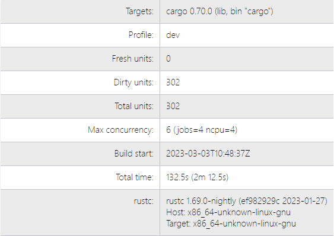
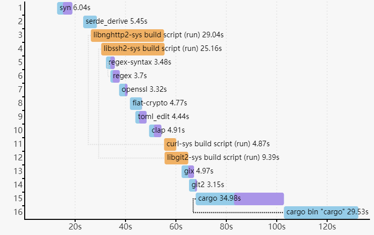

The Cargo Book

Cargo is the Rust package manager. Cargo downloads your Rust package’s dependencies, compiles your packages, makes distributable packages, and uploads them to crates.io, the Rust community’s package registry. You can contribute to this book on GitHub.
Sections
To get started with Cargo, install Cargo (and Rust) and set up your first crate.
The guide will give you all you need to know about how to use Cargo to develop Rust packages.
The reference covers the details of various areas of Cargo.
The commands will let you interact with Cargo using its command-line interface.
Appendices:
Other Documentation:
- Changelog — Detailed notes about changes in Cargo in each release.
- Rust documentation website — Links to official Rust documentation and tools.
Getting Started
To get started with Cargo, install Cargo (and Rust) and set up your first crate.
Installation
Install Rust and Cargo
The easiest way to get Cargo is to install the current stable release of Rust
by using rustup. Installing Rust using rustup will also install cargo.
On Linux and macOS systems, this is done as follows:
curl https://sh.rustup.rs -sSf | sh
It will download a script, and start the installation. If everything goes well, you’ll see this appear:
Rust is installed now. Great!
On Windows, download and run rustup-init.exe. It will start the installation in a console and present the above message on success.
After this, you can use the rustup command to also install beta or nightly
channels for Rust and Cargo.
For other installation options and information, visit the install page of the Rust website.
Build and Install Cargo from Source
Alternatively, you can build Cargo from source.
First Steps with Cargo
This section provides a quick sense for the cargo command line tool. We
demonstrate its ability to generate a new package for us,
its ability to compile the crate within the package, and
its ability to run the resulting program.
To start a new package with Cargo, use cargo new:
$ cargo new hello_world
Cargo defaults to --bin to make a binary program. To make a library, we
would pass --lib, instead.
Let’s check out what Cargo has generated for us:
$ cd hello_world
$ tree .
.
├── Cargo.toml
└── src
└── main.rs
1 directory, 2 files
This is all we need to get started. First, let’s check out Cargo.toml:
[package]
name = "hello_world"
version = "0.1.0"
edition = "2021"
[dependencies]
This is called a manifest, and it contains all of the metadata that Cargo needs to compile your package.
Here’s what’s in src/main.rs:
fn main() { println!("Hello, world!"); }
Cargo generated a “hello world” program for us, otherwise known as a binary crate. Let’s compile it:
$ cargo build
Compiling hello_world v0.1.0 (file:///path/to/package/hello_world)
And then run it:
$ ./target/debug/hello_world
Hello, world!
We can also use cargo run to compile and then run it, all in one step:
$ cargo run
Fresh hello_world v0.1.0 (file:///path/to/package/hello_world)
Running `target/hello_world`
Hello, world!
Going further
For more details on using Cargo, check out the Cargo Guide
Cargo Guide
This guide will give you all that you need to know about how to use Cargo to develop Rust packages.
- Why Cargo Exists
- Creating a New Package
- Working on an Existing Cargo Package
- Dependencies
- Package Layout
- Cargo.toml vs Cargo.lock
- Tests
- Continuous Integration
- Cargo Home
- Build Cache
Why Cargo Exists
Preliminaries
In Rust, as you may know, a library or executable program is called a
crate. Crates are compiled using the Rust compiler,
rustc. When starting with Rust, the first source code most people encounter
is that of the venerable “hello world” program, which they compile by invoking
rustc directly:
$ rustc hello.rs
$ ./hello
Hello, world!
Note that the above command required that we specify the file name
explicitly. If we were to directly use rustc to compile a different program,
a different command line invocation would be required. If we needed to specify
any specific compiler flags or include external dependencies, then the
needed command would be even more specific (and elaborate).
Furthermore, most non-trivial programs will likely have dependencies on external libraries, and will therefore also depend transitively on their dependencies. Obtaining the correct versions of all the necessary dependencies and keeping them up to date would be laborious and error-prone if done by hand.
Rather than work only with crates and rustc, we can avoid the manual tedium
involved with performing the above tasks by introducing a higher-level
“package” abstraction and by using a
package manager.
Enter: Cargo
Cargo is the Rust package manager. It is a tool that allows Rust packages to declare their various dependencies and ensure that you’ll always get a repeatable build.
To accomplish this goal, Cargo does four things:
- Introduces two metadata files with various bits of package information.
- Fetches and builds your package’s dependencies.
- Invokes
rustcor another build tool with the correct parameters to build your package. - Introduces conventions to make working with Rust packages easier.
To a large extent, Cargo normalizes the commands needed to build a given
program or library; this is one aspect to the above mentioned conventions. As
we show later, the same command can be used to build different
artifacts, regardless of their names. Rather than invoke
rustc directly, we can instead invoke something generic such as cargo build and let cargo worry about constructing the correct rustc
invocation. Furthermore, Cargo will automatically fetch from a
registry any dependencies we have defined for our artifact,
and arrange for them to be incorporated into our build as needed.
It is only a slight exaggeration to say that once you know how to build one Cargo-based project, you know how to build all of them.
Creating a New Package
To start a new package with Cargo, use cargo new:
$ cargo new hello_world --bin
We’re passing --bin because we’re making a binary program: if we
were making a library, we’d pass --lib. This also initializes a new git
repository by default. If you don’t want it to do that, pass --vcs none.
Let’s check out what Cargo has generated for us:
$ cd hello_world
$ tree .
.
├── Cargo.toml
└── src
└── main.rs
1 directory, 2 files
Let’s take a closer look at Cargo.toml:
[package]
name = "hello_world"
version = "0.1.0"
edition = "2021"
[dependencies]
This is called a manifest, and it contains all of the metadata that Cargo needs to compile your package. This file is written in the TOML format (pronounced /tɑməl/).
Here’s what’s in src/main.rs:
fn main() { println!("Hello, world!"); }
Cargo generated a “hello world” program for us, otherwise known as a binary crate. Let’s compile it:
$ cargo build
Compiling hello_world v0.1.0 (file:///path/to/package/hello_world)
And then run it:
$ ./target/debug/hello_world
Hello, world!
We can also use cargo run to compile and then run it, all in one step (You
won’t see the Compiling line if you have not made any changes since you last
compiled):
$ cargo run
Compiling hello_world v0.1.0 (file:///path/to/package/hello_world)
Running `target/debug/hello_world`
Hello, world!
You’ll now notice a new file, Cargo.lock. It contains information about our
dependencies. Since we don’t have any yet, it’s not very interesting.
Once you’re ready for release, you can use cargo build --release to compile
your files with optimizations turned on:
$ cargo build --release
Compiling hello_world v0.1.0 (file:///path/to/package/hello_world)
cargo build --release puts the resulting binary in target/release instead of
target/debug.
Compiling in debug mode is the default for development. Compilation time is shorter since the compiler doesn’t do optimizations, but the code will run slower. Release mode takes longer to compile, but the code will run faster.
Working on an Existing Cargo Package
If you download an existing package that uses Cargo, it’s really easy to get going.
First, get the package from somewhere. In this example, we’ll use regex
cloned from its repository on GitHub:
$ git clone https://github.com/rust-lang/regex.git
$ cd regex
To build, use cargo build:
$ cargo build
Compiling regex v1.5.0 (file:///path/to/package/regex)
This will fetch all of the dependencies and then build them, along with the package.
Dependencies
crates.io is the Rust community’s central package registry
that serves as a location to discover and download
packages. cargo is configured to use it by default to find
requested packages.
To depend on a library hosted on crates.io, add it to your Cargo.toml.
Adding a dependency
If your Cargo.toml doesn’t already have a [dependencies] section, add
that, then list the crate name and version that you would like to
use. This example adds a dependency of the time crate:
[dependencies]
time = "0.1.12"
The version string is a SemVer version requirement. The specifying dependencies docs have more information about the options you have here.
If we also wanted to add a dependency on the regex crate, we would not need
to add [dependencies] for each crate listed. Here’s what your whole
Cargo.toml file would look like with dependencies on the time and regex
crates:
[package]
name = "hello_world"
version = "0.1.0"
edition = "2021"
[dependencies]
time = "0.1.12"
regex = "0.1.41"
Re-run cargo build, and Cargo will fetch the new dependencies and all of
their dependencies, compile them all, and update the Cargo.lock:
$ cargo build
Updating crates.io index
Downloading memchr v0.1.5
Downloading libc v0.1.10
Downloading regex-syntax v0.2.1
Downloading memchr v0.1.5
Downloading aho-corasick v0.3.0
Downloading regex v0.1.41
Compiling memchr v0.1.5
Compiling libc v0.1.10
Compiling regex-syntax v0.2.1
Compiling memchr v0.1.5
Compiling aho-corasick v0.3.0
Compiling regex v0.1.41
Compiling hello_world v0.1.0 (file:///path/to/package/hello_world)
Our Cargo.lock contains the exact information about which revision of all of
these dependencies we used.
Now, if regex gets updated, we will still build with the same revision until
we choose to cargo update.
You can now use the regex library in main.rs.
use regex::Regex;
fn main() {
let re = Regex::new(r"^\d{4}-\d{2}-\d{2}$").unwrap();
println!("Did our date match? {}", re.is_match("2014-01-01"));
}Running it will show:
$ cargo run
Running `target/hello_world`
Did our date match? true
Package Layout
Cargo uses conventions for file placement to make it easy to dive into a new Cargo package:
.
├── Cargo.lock
├── Cargo.toml
├── src/
│ ├── lib.rs
│ ├── main.rs
│ └── bin/
│ ├── named-executable.rs
│ ├── another-executable.rs
│ └── multi-file-executable/
│ ├── main.rs
│ └── some_module.rs
├── benches/
│ ├── large-input.rs
│ └── multi-file-bench/
│ ├── main.rs
│ └── bench_module.rs
├── examples/
│ ├── simple.rs
│ └── multi-file-example/
│ ├── main.rs
│ └── ex_module.rs
└── tests/
├── some-integration-tests.rs
└── multi-file-test/
├── main.rs
└── test_module.rs
Cargo.tomlandCargo.lockare stored in the root of your package (package root).- Source code goes in the
srcdirectory. - The default library file is
src/lib.rs. - The default executable file is
src/main.rs.- Other executables can be placed in
src/bin/.
- Other executables can be placed in
- Benchmarks go in the
benchesdirectory. - Examples go in the
examplesdirectory. - Integration tests go in the
testsdirectory.
If a binary, example, bench, or integration test consists of multiple source
files, place a main.rs file along with the extra modules
within a subdirectory of the src/bin, examples, benches, or tests
directory. The name of the executable will be the directory name.
You can learn more about Rust’s module system in the book.
See Configuring a target for more details on manually configuring targets. See Target auto-discovery for more information on controlling how Cargo automatically infers target names.
Cargo.toml vs Cargo.lock
Cargo.toml and Cargo.lock serve two different purposes. Before we talk
about them, here’s a summary:
Cargo.tomlis about describing your dependencies in a broad sense, and is written by you.Cargo.lockcontains exact information about your dependencies. It is maintained by Cargo and should not be manually edited.
If you’re building a non-end product, such as a rust library that other rust
packages will depend on, put Cargo.lock in your
.gitignore. If you’re building an end product, which are executable like
command-line tool or an application, or a system library with crate-type of
staticlib or cdylib, check Cargo.lock into git. If you’re curious
about why that is, see
“Why do binaries have Cargo.lock in version control, but not libraries?” in the
FAQ.
Let’s dig in a little bit more.
Cargo.toml is a manifest file in which we can specify a
bunch of different metadata about our package. For example, we can say that we
depend on another package:
[package]
name = "hello_world"
version = "0.1.0"
[dependencies]
regex = { git = "https://github.com/rust-lang/regex.git" }
This package has a single dependency, on the regex library. We’ve stated in
this case that we’re relying on a particular Git repository that lives on
GitHub. Since we haven’t specified any other information, Cargo assumes that
we intend to use the latest commit on the master branch to build our package.
Sound good? Well, there’s one problem: If you build this package today, and
then you send a copy to me, and I build this package tomorrow, something bad
could happen. There could be more commits to regex in the meantime, and my
build would include new commits while yours would not. Therefore, we would
get different builds. This would be bad because we want reproducible builds.
We could fix this problem by defining a specific rev value in our Cargo.toml,
so Cargo could know exactly which revision to use when building the package:
[dependencies]
regex = { git = "https://github.com/rust-lang/regex.git", rev = "9f9f693" }
Now our builds will be the same. But there’s a big drawback: now we have to manually think about SHA-1s every time we want to update our library. This is both tedious and error prone.
Enter the Cargo.lock. Because of its existence, we don’t need to manually
keep track of the exact revisions: Cargo will do it for us. When we have a
manifest like this:
[package]
name = "hello_world"
version = "0.1.0"
[dependencies]
regex = { git = "https://github.com/rust-lang/regex.git" }
Cargo will take the latest commit and write that information out into our
Cargo.lock when we build for the first time. That file will look like this:
[[package]]
name = "hello_world"
version = "0.1.0"
dependencies = [
"regex 1.5.0 (git+https://github.com/rust-lang/regex.git#9f9f693768c584971a4d53bc3c586c33ed3a6831)",
]
[[package]]
name = "regex"
version = "1.5.0"
source = "git+https://github.com/rust-lang/regex.git#9f9f693768c584971a4d53bc3c586c33ed3a6831"
You can see that there’s a lot more information here, including the exact
revision we used to build. Now when you give your package to someone else,
they’ll use the exact same SHA, even though we didn’t specify it in our
Cargo.toml.
When we’re ready to opt in to a new version of the library, Cargo can re-calculate the dependencies and update things for us:
$ cargo update # updates all dependencies
$ cargo update -p regex # updates just “regex”
This will write out a new Cargo.lock with the new version information. Note
that the argument to cargo update is actually a
Package ID Specification and regex is just a
short specification.
Tests
Cargo can run your tests with the cargo test command. Cargo looks for tests
to run in two places: in each of your src files and any tests in tests/.
Tests in your src files should be unit tests and documentation tests.
Tests in tests/ should be integration-style tests. As such, you’ll need to
import your crates into the files in tests.
Here’s an example of running cargo test in our package, which
currently has no tests:
$ cargo test
Compiling regex v1.5.0 (https://github.com/rust-lang/regex.git#9f9f693)
Compiling hello_world v0.1.0 (file:///path/to/package/hello_world)
Running target/test/hello_world-9c2b65bbb79eabce
running 0 tests
test result: ok. 0 passed; 0 failed; 0 ignored; 0 measured; 0 filtered out
If our package had tests, we would see more output with the correct number of tests.
You can also run a specific test by passing a filter:
$ cargo test foo
This will run any test with foo in its name.
cargo test runs additional checks as well. It will compile any examples
you’ve included to ensure they still compile. It also runs documentation
tests to ensure your code samples from documentation comments compile.
Please see the testing guide in the Rust documentation for a general
view of writing and organizing tests. See Cargo Targets: Tests to learn more
about different styles of tests in Cargo.
Continuous Integration
Travis CI
To test your package on Travis CI, here is a sample
.travis.yml file:
language: rust
rust:
- stable
- beta
- nightly
matrix:
allow_failures:
- rust: nightly
This will test all three release channels, but any breakage in nightly will not fail your overall build. Please see the Travis CI Rust documentation for more information.
GitHub Actions
To test your package on GitHub Actions, here is a sample .github/workflows/ci.yml file:
name: Cargo Build & Test
on:
push:
pull_request:
env:
CARGO_TERM_COLOR: always
jobs:
build_and_test:
name: Rust project - latest
runs-on: ubuntu-latest
strategy:
matrix:
toolchain:
- stable
- beta
- nightly
steps:
- uses: actions/checkout@v3
- run: rustup update ${{ matrix.toolchain }} && rustup default ${{ matrix.toolchain }}
- run: cargo build --verbose
- run: cargo test --verbose
This will test all three release channels (note a failure in any toolchain version will fail the entire job). You can also click "Actions" > "new workflow" in the GitHub UI and select Rust to add the default configuration to your repo. See GitHub Actions documentation for more information.
GitLab CI
To test your package on GitLab CI, here is a sample .gitlab-ci.yml file:
stages:
- build
rust-latest:
stage: build
image: rust:latest
script:
- cargo build --verbose
- cargo test --verbose
rust-nightly:
stage: build
image: rustlang/rust:nightly
script:
- cargo build --verbose
- cargo test --verbose
allow_failure: true
This will test on the stable channel and nightly channel, but any breakage in nightly will not fail your overall build. Please see the GitLab CI documentation for more information.
builds.sr.ht
To test your package on sr.ht, here is a sample .build.yml file.
Be sure to change <your repo> and <your project> to the repo to clone and
the directory where it was cloned.
image: archlinux
packages:
- rustup
sources:
- <your repo>
tasks:
- setup: |
rustup toolchain install nightly stable
cd <your project>/
rustup run stable cargo fetch
- stable: |
rustup default stable
cd <your project>/
cargo build --verbose
cargo test --verbose
- nightly: |
rustup default nightly
cd <your project>/
cargo build --verbose ||:
cargo test --verbose ||:
- docs: |
cd <your project>/
rustup run stable cargo doc --no-deps
rustup run nightly cargo doc --no-deps ||:
This will test and build documentation on the stable channel and nightly channel, but any breakage in nightly will not fail your overall build. Please see the builds.sr.ht documentation for more information.
Cargo Home
The “Cargo home” functions as a download and source cache.
When building a crate, Cargo stores downloaded build dependencies in the Cargo home.
You can alter the location of the Cargo home by setting the CARGO_HOME environmental variable.
The home crate provides an API for getting this location if you need this information inside your Rust crate.
By default, the Cargo home is located in $HOME/.cargo/.
Please note that the internal structure of the Cargo home is not stabilized and may be subject to change at any time.
The Cargo home consists of following components:
Files:
-
config.tomlCargo’s global configuration file, see the config entry in the reference. -
credentials.tomlPrivate login credentials fromcargo loginin order to log in to a registry. -
.crates.toml,.crates2.jsonThese hidden files contain package information of crates installed viacargo install. Do NOT edit by hand!
Directories:
-
binThe bin directory contains executables of crates that were installed viacargo installorrustup. To be able to make these binaries accessible, add the path of the directory to your$PATHenvironment variable. -
gitGit sources are stored here:-
git/dbWhen a crate depends on a git repository, Cargo clones the repo as a bare repo into this directory and updates it if necessary. -
git/checkoutsIf a git source is used, the required commit of the repo is checked out from the bare repo insidegit/dbinto this directory. This provides the compiler with the actual files contained in the repo of the commit specified for that dependency. Multiple checkouts of different commits of the same repo are possible.
-
-
registryPackages and metadata of crate registries (such as crates.io) are located here.-
registry/indexThe index is a bare git repository which contains the metadata (versions, dependencies etc) of all available crates of a registry. -
registry/cacheDownloaded dependencies are stored in the cache. The crates are compressed gzip archives named with a.crateextension. -
registry/srcIf a downloaded.cratearchive is required by a package, it is unpacked intoregistry/srcfolder where rustc will find the.rsfiles.
-
Caching the Cargo home in CI
To avoid redownloading all crate dependencies during continuous integration, you can cache the $CARGO_HOME directory.
However, caching the entire directory is often inefficient as it will contain downloaded sources twice.
If we depend on a crate such as serde 1.0.92 and cache the entire $CARGO_HOME we would actually cache the sources twice, the serde-1.0.92.crate inside registry/cache and the extracted .rs files of serde inside registry/src.
That can unnecessarily slow down the build as downloading, extracting, recompressing and reuploading the cache to the CI servers can take some time.
If you wish to cache binaries installed with cargo install, you need to cache the bin/ folder and the .crates.toml and .crates2.json files.
It should be sufficient to cache the following files and directories across builds:
.crates.toml.crates2.jsonbin/registry/index/registry/cache/git/db/
Vendoring all dependencies of a project
See the cargo vendor subcommand.
Clearing the cache
In theory, you can always remove any part of the cache and Cargo will do its best to restore sources if a crate needs them either by reextracting an archive or checking out a bare repo or by simply redownloading the sources from the web.
Alternatively, the cargo-cache crate provides a simple CLI tool to only clear selected parts of the cache or show sizes of its components in your command-line.
Build cache
Cargo stores the output of a build into the “target” directory. By default,
this is the directory named target in the root of your
workspace. To change the location, you can set the
CARGO_TARGET_DIR environment variable, the build.target-dir config
value, or the --target-dir command-line flag.
The directory layout depends on whether or not you are using the --target
flag to build for a specific platform. If --target is not specified, Cargo
runs in a mode where it builds for the host architecture. The output goes into
the root of the target directory, with each profile stored in a separate
subdirectory:
| Directory | Description |
|---|---|
target/debug/ | Contains output for the dev profile. |
target/release/ | Contains output for the release profile (with the --release option). |
target/foo/ | Contains build output for the foo profile (with the --profile=foo option). |
For historical reasons, the dev and test profiles are stored in the
debug directory, and the release and bench profiles are stored in the
release directory. User-defined profiles are stored in a directory with the
same name as the profile.
When building for another target with --target, the output is placed in a
directory with the name of the target:
| Directory | Example |
|---|---|
target/<triple>/debug/ | target/thumbv7em-none-eabihf/debug/ |
target/<triple>/release/ | target/thumbv7em-none-eabihf/release/ |
Note: When not using
--target, this has a consequence that Cargo will share your dependencies with build scripts and proc macros.RUSTFLAGSwill be shared with everyrustcinvocation. With the--targetflag, build scripts and proc macros are built separately (for the host architecture), and do not shareRUSTFLAGS.
Within the profile directory (such as debug or release), artifacts are
placed into the following directories:
| Directory | Description |
|---|---|
target/debug/ | Contains the output of the package being built (the binary executables and library targets). |
target/debug/examples/ | Contains example targets. |
Some commands place their output in dedicated directories in the top level of
the target directory:
| Directory | Description |
|---|---|
target/doc/ | Contains rustdoc documentation (cargo doc). |
target/package/ | Contains the output of the cargo package and cargo publish commands. |
Cargo also creates several other directories and files needed for the build process. Their layout is considered internal to Cargo, and is subject to change. Some of these directories are:
| Directory | Description |
|---|---|
target/debug/deps/ | Dependencies and other artifacts. |
target/debug/incremental/ | rustc incremental output, a cache used to speed up subsequent builds. |
target/debug/build/ | Output from build scripts. |
Dep-info files
Next to each compiled artifact is a file called a “dep info” file with a .d
suffix. This file is a Makefile-like syntax that indicates all of the file
dependencies required to rebuild the artifact. These are intended to be used
with external build systems so that they can detect if Cargo needs to be
re-executed. The paths in the file are absolute by default. See the
build.dep-info-basedir config option to use relative paths.
# Example dep-info file found in target/debug/foo.d
/path/to/myproj/target/debug/foo: /path/to/myproj/src/lib.rs /path/to/myproj/src/main.rs
Shared cache
A third party tool, sccache, can be used to share built dependencies across different workspaces.
To setup sccache, install it with cargo install sccache and set
RUSTC_WRAPPER environmental variable to sccache before invoking Cargo. If
you use bash, it makes sense to add export RUSTC_WRAPPER=sccache to
.bashrc. Alternatively, you can set build.rustc-wrapper in the Cargo
configuration. Refer to sccache documentation for more details.
Cargo Reference
The reference covers the details of various areas of Cargo.
- Specifying Dependencies
- The Manifest Format
- Workspaces
- Features
- Profiles
- Configuration
- Environment Variables
- Build Scripts
- Publishing on crates.io
- Package ID Specifications
- Source Replacement
- External Tools
- Registries
- Dependency Resolution
- SemVer Compatibility
- Future incompat report
- Reporting build timings
- Unstable Features
Specifying Dependencies
Your crates can depend on other libraries from crates.io or other
registries, git repositories, or subdirectories on your local file system.
You can also temporarily override the location of a dependency — for example,
to be able to test out a bug fix in the dependency that you are working on
locally. You can have different dependencies for different platforms, and
dependencies that are only used during development. Let’s take a look at how
to do each of these.
Specifying dependencies from crates.io
Cargo is configured to look for dependencies on crates.io by default. Only
the name and a version string are required in this case. In the cargo
guide, we specified a dependency on the time crate:
[dependencies]
time = "0.1.12"
The string "0.1.12" is a version requirement. Although it looks like a
specific version of the time crate, it actually specifies a range of
versions and allows SemVer compatible updates. An update is allowed if the new
version number does not modify the left-most non-zero digit in the major, minor,
patch grouping. In this case, if we ran cargo update -p time, cargo should
update us to version 0.1.13 if it is the latest 0.1.z release, but would not
update us to 0.2.0. If instead we had specified the version string as 1.0,
cargo should update to 1.1 if it is the latest 1.y release, but not 2.0.
The version 0.0.x is not considered compatible with any other version.
Here are some more examples of version requirements and the versions that would be allowed with them:
1.2.3 := >=1.2.3, <2.0.0
1.2 := >=1.2.0, <2.0.0
1 := >=1.0.0, <2.0.0
0.2.3 := >=0.2.3, <0.3.0
0.2 := >=0.2.0, <0.3.0
0.0.3 := >=0.0.3, <0.0.4
0.0 := >=0.0.0, <0.1.0
0 := >=0.0.0, <1.0.0
This compatibility convention is different from SemVer in the way it treats
versions before 1.0.0. While SemVer says there is no compatibility before
1.0.0, Cargo considers 0.x.y to be compatible with 0.x.z, where y ≥ z
and x > 0.
It is possible to further tweak the logic for selecting compatible versions using special operators, though it shouldn’t be necessary most of the time.
Caret requirements
Caret requirements are an alternative syntax for the default strategy,
^1.2.3 is exactly equivalent to 1.2.3.
Tilde requirements
Tilde requirements specify a minimal version with some ability to update. If you specify a major, minor, and patch version or only a major and minor version, only patch-level changes are allowed. If you only specify a major version, then minor- and patch-level changes are allowed.
~1.2.3 is an example of a tilde requirement.
~1.2.3 := >=1.2.3, <1.3.0
~1.2 := >=1.2.0, <1.3.0
~1 := >=1.0.0, <2.0.0
Wildcard requirements
Wildcard requirements allow for any version where the wildcard is positioned.
*, 1.* and 1.2.* are examples of wildcard requirements.
* := >=0.0.0
1.* := >=1.0.0, <2.0.0
1.2.* := >=1.2.0, <1.3.0
Note: crates.io does not allow bare
*versions.
Comparison requirements
Comparison requirements allow manually specifying a version range or an exact version to depend on.
Here are some examples of comparison requirements:
>= 1.2.0
> 1
< 2
= 1.2.3
Multiple requirements
As shown in the examples above, multiple version requirements can be
separated with a comma, e.g., >= 1.2, < 1.5.
Specifying dependencies from other registries
To specify a dependency from a registry other than crates.io, first the
registry must be configured in a .cargo/config.toml file. See the registries
documentation for more information. In the dependency, set the registry key
to the name of the registry to use.
[dependencies]
some-crate = { version = "1.0", registry = "my-registry" }
Note: crates.io does not allow packages to be published with dependencies on other registries.
Specifying dependencies from git repositories
To depend on a library located in a git repository, the minimum information
you need to specify is the location of the repository with the git key:
[dependencies]
regex = { git = "https://github.com/rust-lang/regex.git" }
Cargo will fetch the git repository at this location then look for a
Cargo.toml for the requested crate anywhere inside the git repository
(not necessarily at the root — for example, specifying a member crate name
of a workspace and setting git to the repository containing the workspace).
Since we haven’t specified any other information, Cargo assumes that
we intend to use the latest commit on the main branch to build our package.
You can combine the git key with the rev, tag, or branch keys to
specify something else. Here’s an example of specifying that you want to use
the latest commit on a branch named next:
[dependencies]
regex = { git = "https://github.com/rust-lang/regex.git", branch = "next" }
Anything that is not a branch or tag falls under rev. This can be a commit
hash like rev = "4c59b707", or a named reference exposed by the remote
repository such as rev = "refs/pull/493/head". What references are available
varies by where the repo is hosted; GitHub in particular exposes a reference to
the most recent commit of every pull request as shown, but other git hosts often
provide something equivalent, possibly under a different naming scheme.
Once a git dependency has been added, Cargo will lock that dependency to the
latest commit at the time. New commits will not be pulled down automatically
once the lock is in place. However, they can be pulled down manually with
cargo update.
See Git Authentication for help with git authentication for private repos.
Note: crates.io does not allow packages to be published with
gitdependencies (gitdev-dependencies are ignored). See the Multiple locations section for a fallback alternative.
Specifying path dependencies
Over time, our hello_world package from the guide has
grown significantly in size! It’s gotten to the point that we probably want to
split out a separate crate for others to use. To do this Cargo supports path
dependencies which are typically sub-crates that live within one repository.
Let’s start off by making a new crate inside of our hello_world package:
# inside of hello_world/
$ cargo new hello_utils
This will create a new folder hello_utils inside of which a Cargo.toml and
src folder are ready to be configured. In order to tell Cargo about this, open
up hello_world/Cargo.toml and add hello_utils to your dependencies:
[dependencies]
hello_utils = { path = "hello_utils" }
This tells Cargo that we depend on a crate called hello_utils which is found
in the hello_utils folder (relative to the Cargo.toml it’s written in).
And that’s it! The next cargo build will automatically build hello_utils and
all of its own dependencies, and others can also start using the crate as well.
However, crates that use dependencies specified with only a path are not
permitted on crates.io. If we wanted to publish our hello_world crate, we
would need to publish a version of hello_utils to crates.io
and specify its version in the dependencies line as well:
[dependencies]
hello_utils = { path = "hello_utils", version = "0.1.0" }
Note: crates.io does not allow packages to be published with
pathdependencies (pathdev-dependencies are ignored). See the Multiple locations section for a fallback alternative.
Multiple locations
It is possible to specify both a registry version and a git or path
location. The git or path dependency will be used locally (in which case
the version is checked against the local copy), and when published to a
registry like crates.io, it will use the registry version. Other
combinations are not allowed. Examples:
[dependencies]
# Uses `my-bitflags` when used locally, and uses
# version 1.0 from crates.io when published.
bitflags = { path = "my-bitflags", version = "1.0" }
# Uses the given git repo when used locally, and uses
# version 1.0 from crates.io when published.
smallvec = { git = "https://github.com/servo/rust-smallvec.git", version = "1.0" }
# N.B. that if a version doesn't match, Cargo will fail to compile!
One example where this can be useful is when you have split up a library into
multiple packages within the same workspace. You can then use path
dependencies to point to the local packages within the workspace to use the
local version during development, and then use the crates.io version once it
is published. This is similar to specifying an
override, but only applies to this one
dependency declaration.
Platform specific dependencies
Platform-specific dependencies take the same format, but are listed under a
target section. Normally Rust-like #[cfg]
syntax will be used to define
these sections:
[target.'cfg(windows)'.dependencies]
winhttp = "0.4.0"
[target.'cfg(unix)'.dependencies]
openssl = "1.0.1"
[target.'cfg(target_arch = "x86")'.dependencies]
native-i686 = { path = "native/i686" }
[target.'cfg(target_arch = "x86_64")'.dependencies]
native-x86_64 = { path = "native/x86_64" }
Like with Rust, the syntax here supports the not, any, and all operators
to combine various cfg name/value pairs.
If you want to know which cfg targets are available on your platform, run
rustc --print=cfg from the command line. If you want to know which cfg
targets are available for another platform, such as 64-bit Windows,
run rustc --print=cfg --target=x86_64-pc-windows-msvc.
Unlike in your Rust source code, you cannot use
[target.'cfg(feature = "fancy-feature")'.dependencies] to add dependencies
based on optional features. Use the [features] section
instead:
[dependencies]
foo = { version = "1.0", optional = true }
bar = { version = "1.0", optional = true }
[features]
fancy-feature = ["foo", "bar"]
The same applies to cfg(debug_assertions), cfg(test) and cfg(proc_macro).
These values will not work as expected and will always have the default value
returned by rustc --print=cfg.
There is currently no way to add dependencies based on these configuration values.
In addition to #[cfg] syntax, Cargo also supports listing out the full target
the dependencies would apply to:
[target.x86_64-pc-windows-gnu.dependencies]
winhttp = "0.4.0"
[target.i686-unknown-linux-gnu.dependencies]
openssl = "1.0.1"
Custom target specifications
If you’re using a custom target specification (such as --target foo/bar.json), use the base filename without the .json extension:
[target.bar.dependencies]
winhttp = "0.4.0"
[target.my-special-i686-platform.dependencies]
openssl = "1.0.1"
native = { path = "native/i686" }
Note: Custom target specifications are not usable on the stable channel.
Development dependencies
You can add a [dev-dependencies] section to your Cargo.toml whose format
is equivalent to [dependencies]:
[dev-dependencies]
tempdir = "0.3"
Dev-dependencies are not used when compiling a package for building, but are used for compiling tests, examples, and benchmarks.
These dependencies are not propagated to other packages which depend on this package.
You can also have target-specific development dependencies by using
dev-dependencies in the target section header instead of dependencies. For
example:
[target.'cfg(unix)'.dev-dependencies]
mio = "0.0.1"
Note: When a package is published, only dev-dependencies that specify a
versionwill be included in the published crate. For most use cases, dev-dependencies are not needed when published, though some users (like OS packagers) may want to run tests within a crate, so providing aversionif possible can still be beneficial.
Build dependencies
You can depend on other Cargo-based crates for use in your build scripts.
Dependencies are declared through the build-dependencies section of the
manifest:
[build-dependencies]
cc = "1.0.3"
You can also have target-specific build dependencies by using
build-dependencies in the target section header instead of dependencies. For
example:
[target.'cfg(unix)'.build-dependencies]
cc = "1.0.3"
In this case, the dependency will only be built when the host platform matches the specified target.
The build script does not have access to the dependencies listed
in the dependencies or dev-dependencies section. Build
dependencies will likewise not be available to the package itself
unless listed under the dependencies section as well. A package
itself and its build script are built separately, so their
dependencies need not coincide. Cargo is kept simpler and cleaner by
using independent dependencies for independent purposes.
Choosing features
If a package you depend on offers conditional features, you can specify which to use:
[dependencies.awesome]
version = "1.3.5"
default-features = false # do not include the default features, and optionally
# cherry-pick individual features
features = ["secure-password", "civet"]
More information about features can be found in the features chapter.
Renaming dependencies in Cargo.toml
When writing a [dependencies] section in Cargo.toml the key you write for a
dependency typically matches up to the name of the crate you import from in the
code. For some projects, though, you may wish to reference the crate with a
different name in the code regardless of how it’s published on crates.io. For
example you may wish to:
- Avoid the need to
use foo as barin Rust source. - Depend on multiple versions of a crate.
- Depend on crates with the same name from different registries.
To support this Cargo supports a package key in the [dependencies] section
of which package should be depended on:
[package]
name = "mypackage"
version = "0.0.1"
[dependencies]
foo = "0.1"
bar = { git = "https://github.com/example/project.git", package = "foo" }
baz = { version = "0.1", registry = "custom", package = "foo" }
In this example, three crates are now available in your Rust code:
extern crate foo; // crates.io
extern crate bar; // git repository
extern crate baz; // registry `custom`All three of these crates have the package name of foo in their own
Cargo.toml, so we’re explicitly using the package key to inform Cargo that
we want the foo package even though we’re calling it something else locally.
The package key, if not specified, defaults to the name of the dependency
being requested.
Note that if you have an optional dependency like:
[dependencies]
bar = { version = "0.1", package = 'foo', optional = true }
you’re depending on the crate foo from crates.io, but your crate has a bar
feature instead of a foo feature. That is, names of features take after the
name of the dependency, not the package name, when renamed.
Enabling transitive dependencies works similarly, for example we could add the following to the above manifest:
[features]
log-debug = ['bar/log-debug'] # using 'foo/log-debug' would be an error!
Inheriting a dependency from a workspace
Dependencies can be inherited from a workspace by specifying the
dependency in the workspace’s [workspace.dependencies] table.
After that, add it to the [dependencies] table with workspace = true.
Along with the workspace key, dependencies can also include these keys:
optional: Note that the[workspace.dependencies]table is not allowed to specifyoptional.features: These are additive with the features declared in the[workspace.dependencies]
Other than optional and features, inherited dependencies cannot use any other
dependency key (such as version or default-features).
Dependencies in the [dependencies], [dev-dependencies], [build-dependencies], and
[target."...".dependencies] sections support the ability to reference the
[workspace.dependencies] definition of dependencies.
[package]
name = "bar"
version = "0.2.0"
[dependencies]
regex = { workspace = true, features = ["unicode"] }
[build-dependencies]
cc.workspace = true
[dev-dependencies]
rand = { workspace = true, optional = true }
Overriding Dependencies
The desire to override a dependency can arise through a number of scenarios. Most of them, however, boil down to the ability to work with a crate before it’s been published to crates.io. For example:
- A crate you’re working on is also used in a much larger application you’re working on, and you’d like to test a bug fix to the library inside of the larger application.
- An upstream crate you don’t work on has a new feature or a bug fix on the master branch of its git repository which you’d like to test out.
- You’re about to publish a new major version of your crate, but you’d like to do integration testing across an entire package to ensure the new major version works.
- You’ve submitted a fix to an upstream crate for a bug you found, but you’d like to immediately have your application start depending on the fixed version of the crate to avoid blocking on the bug fix getting merged.
These scenarios can be solved with the [patch] manifest
section.
This chapter walks through a few different use cases, and includes details on the different ways to override a dependency.
- Example use cases
- Reference
Note: See also specifying a dependency with multiple locations, which can be used to override the source for a single dependency declaration in a local package.
Testing a bugfix
Let’s say you’re working with the uuid crate but while you’re working on it
you discover a bug. You are, however, quite enterprising so you decide to also
try to fix the bug! Originally your manifest will look like:
[package]
name = "my-library"
version = "0.1.0"
[dependencies]
uuid = "1.0"
First thing we’ll do is to clone the uuid repository
locally via:
$ git clone https://github.com/uuid-rs/uuid.git
Next we’ll edit the manifest of my-library to contain:
[patch.crates-io]
uuid = { path = "../path/to/uuid" }
Here we declare that we’re patching the source crates-io with a new
dependency. This will effectively add the local checked out version of uuid to
the crates.io registry for our local package.
Next up we need to ensure that our lock file is updated to use this new version
of uuid so our package uses the locally checked out copy instead of one from
crates.io. The way [patch] works is that it’ll load the dependency at
../path/to/uuid and then whenever crates.io is queried for versions of uuid
it’ll also return the local version.
This means that the version number of the local checkout is significant and will
affect whether the patch is used. Our manifest declared uuid = "1.0" which
means we’ll only resolve to >= 1.0.0, < 2.0.0, and Cargo’s greedy resolution
algorithm also means that we’ll resolve to the maximum version within that
range. Typically this doesn’t matter as the version of the git repository will
already be greater or match the maximum version published on crates.io, but it’s
important to keep this in mind!
In any case, typically all you need to do now is:
$ cargo build
Compiling uuid v1.0.0 (.../uuid)
Compiling my-library v0.1.0 (.../my-library)
Finished dev [unoptimized + debuginfo] target(s) in 0.32 secs
And that’s it! You’re now building with the local version of uuid (note the
path in parentheses in the build output). If you don’t see the local path version getting
built then you may need to run cargo update -p uuid --precise $version where
$version is the version of the locally checked out copy of uuid.
Once you’ve fixed the bug you originally found the next thing you’ll want to do
is to likely submit that as a pull request to the uuid crate itself. Once
you’ve done this then you can also update the [patch] section. The listing
inside of [patch] is just like the [dependencies] section, so once your pull
request is merged you could change your path dependency to:
[patch.crates-io]
uuid = { git = 'https://github.com/uuid-rs/uuid.git' }
Working with an unpublished minor version
Let’s now shift gears a bit from bug fixes to adding features. While working on
my-library you discover that a whole new feature is needed in the uuid
crate. You’ve implemented this feature, tested it locally above with [patch],
and submitted a pull request. Let’s go over how you continue to use and test it
before it’s actually published.
Let’s also say that the current version of uuid on crates.io is 1.0.0, but
since then the master branch of the git repository has updated to 1.0.1. This
branch includes your new feature you submitted previously. To use this
repository we’ll edit our Cargo.toml to look like
[package]
name = "my-library"
version = "0.1.0"
[dependencies]
uuid = "1.0.1"
[patch.crates-io]
uuid = { git = 'https://github.com/uuid-rs/uuid.git' }
Note that our local dependency on uuid has been updated to 1.0.1 as it’s
what we’ll actually require once the crate is published. This version doesn’t
exist on crates.io, though, so we provide it with the [patch] section of the
manifest.
Now when our library is built it’ll fetch uuid from the git repository and
resolve to 1.0.1 inside the repository instead of trying to download a version
from crates.io. Once 1.0.1 is published on crates.io the [patch] section can
be deleted.
It’s also worth noting that [patch] applies transitively. Let’s say you use
my-library in a larger package, such as:
[package]
name = "my-binary"
version = "0.1.0"
[dependencies]
my-library = { git = 'https://example.com/git/my-library' }
uuid = "1.0"
[patch.crates-io]
uuid = { git = 'https://github.com/uuid-rs/uuid.git' }
Remember that [patch] is applicable transitively but can only be defined at
the top level so we consumers of my-library have to repeat the [patch] section
if necessary. Here, though, the new uuid crate applies to both our dependency on
uuid and the my-library -> uuid dependency. The uuid crate will be resolved to
one version for this entire crate graph, 1.0.1, and it’ll be pulled from the git
repository.
Overriding repository URL
In case the dependency you want to override isn’t loaded from crates.io,
you’ll have to change a bit how you use [patch]. For example, if the
dependency is a git dependency, you can override it to a local path with:
[patch."https://github.com/your/repository"]
my-library = { path = "../my-library/path" }
And that’s it!
Prepublishing a breaking change
Let’s take a look at working with a new major version of a crate, typically
accompanied with breaking changes. Sticking with our previous crates, this
means that we’re going to be creating version 2.0.0 of the uuid crate. After
we’ve submitted all changes upstream we can update our manifest for
my-library to look like:
[dependencies]
uuid = "2.0"
[patch.crates-io]
uuid = { git = "https://github.com/uuid-rs/uuid.git", branch = "2.0.0" }
And that’s it! Like with the previous example the 2.0.0 version doesn’t actually
exist on crates.io but we can still put it in through a git dependency through
the usage of the [patch] section. As a thought exercise let’s take another
look at the my-binary manifest from above again as well:
[package]
name = "my-binary"
version = "0.1.0"
[dependencies]
my-library = { git = 'https://example.com/git/my-library' }
uuid = "1.0"
[patch.crates-io]
uuid = { git = 'https://github.com/uuid-rs/uuid.git', branch = '2.0.0' }
Note that this will actually resolve to two versions of the uuid crate. The
my-binary crate will continue to use the 1.x.y series of the uuid crate but
the my-library crate will use the 2.0.0 version of uuid. This will allow you
to gradually roll out breaking changes to a crate through a dependency graph
without being forced to update everything all at once.
Using [patch] with multiple versions
You can patch in multiple versions of the same crate with the package key
used to rename dependencies. For example let’s say that the serde crate has
a bugfix that we’d like to use to its 1.* series but we’d also like to
prototype using a 2.0.0 version of serde we have in our git repository. To
configure this we’d do:
[patch.crates-io]
serde = { git = 'https://github.com/serde-rs/serde.git' }
serde2 = { git = 'https://github.com/example/serde.git', package = 'serde', branch = 'v2' }
The first serde = ... directive indicates that serde 1.* should be used
from the git repository (pulling in the bugfix we need) and the second serde2 = ... directive indicates that the serde package should also be pulled from
the v2 branch of https://github.com/example/serde. We’re assuming here
that Cargo.toml on that branch mentions version 2.0.0.
Note that when using the package key the serde2 identifier here is actually
ignored. We simply need a unique name which doesn’t conflict with other patched
crates.
The [patch] section
The [patch] section of Cargo.toml can be used to override dependencies
with other copies. The syntax is similar to the
[dependencies] section:
[patch.crates-io]
foo = { git = 'https://github.com/example/foo.git' }
bar = { path = 'my/local/bar' }
[dependencies.baz]
git = 'https://github.com/example/baz.git'
[patch.'https://github.com/example/baz']
baz = { git = 'https://github.com/example/patched-baz.git', branch = 'my-branch' }
Note: The
[patch]table can also be specified as a configuration option, such as in a.cargo/config.tomlfile or a CLI option like--config 'patch.crates-io.rand.path="rand"'. This can be useful for local-only changes that you don’t want to commit, or temporarily testing a patch.
The [patch] table is made of dependency-like sub-tables. Each key after
[patch] is a URL of the source that is being patched, or the name of a
registry. The name crates-io may be used to override the default registry
crates.io. The first [patch] in the example above demonstrates overriding
crates.io, and the second [patch] demonstrates overriding a git source.
Each entry in these tables is a normal dependency specification, the same as
found in the [dependencies] section of the manifest. The dependencies listed
in the [patch] section are resolved and used to patch the source at the
URL specified. The above manifest snippet patches the crates-io source (e.g.
crates.io itself) with the foo crate and bar crate. It also
patches the https://github.com/example/baz source with a my-branch that
comes from elsewhere.
Sources can be patched with versions of crates that do not exist, and they can also be patched with versions of crates that already exist. If a source is patched with a crate version that already exists in the source, then the source’s original crate is replaced.
Cargo only looks at the patch settings in the Cargo.toml manifest at the
root of the workspace. Patch settings defined in dependencies will be
ignored.
The [replace] section
Note:
[replace]is deprecated. You should use the[patch]table instead.
This section of Cargo.toml can be used to override dependencies with other
copies. The syntax is similar to the [dependencies] section:
[replace]
"foo:0.1.0" = { git = 'https://github.com/example/foo.git' }
"bar:1.0.2" = { path = 'my/local/bar' }
Each key in the [replace] table is a package ID
specification, which allows arbitrarily choosing a node in the
dependency graph to override (the 3-part version number is required). The
value of each key is the same as the [dependencies] syntax for specifying
dependencies, except that you can’t specify features. Note that when a crate
is overridden the copy it’s overridden with must have both the same name and
version, but it can come from a different source (e.g., git or a local path).
Cargo only looks at the replace settings in the Cargo.toml manifest at the
root of the workspace. Replace settings defined in dependencies will be
ignored.
paths overrides
Sometimes you’re only temporarily working on a crate and you don’t want to have
to modify Cargo.toml like with the [patch] section above. For this use
case Cargo offers a much more limited version of overrides called path
overrides.
Path overrides are specified through .cargo/config.toml instead of
Cargo.toml. Inside of .cargo/config.toml you’ll specify a key called paths:
paths = ["/path/to/uuid"]
This array should be filled with directories that contain a Cargo.toml. In
this instance, we’re just adding uuid, so it will be the only one that’s
overridden. This path can be either absolute or relative to the directory that
contains the .cargo folder.
Path overrides are more restricted than the [patch] section, however, in
that they cannot change the structure of the dependency graph. When a
path replacement is used then the previous set of dependencies
must all match exactly to the new Cargo.toml specification. For example this
means that path overrides cannot be used to test out adding a dependency to a
crate, instead [patch] must be used in that situation. As a result usage of a
path override is typically isolated to quick bug fixes rather than larger
changes.
Note: using a local configuration to override paths will only work for crates that have been published to crates.io. You cannot use this feature to tell Cargo how to find local unpublished crates.
The Manifest Format
The Cargo.toml file for each package is called its manifest. It is written
in the TOML format. It contains metadata that is needed to compile the package. Checkout
the cargo locate-project section for more detail on how cargo finds the manifest file.
Every manifest file consists of the following sections:
cargo-features— Unstable, nightly-only features.[package]— Defines a package.name— The name of the package.version— The version of the package.authors— The authors of the package.edition— The Rust edition.rust-version— The minimal supported Rust version.description— A description of the package.documentation— URL of the package documentation.readme— Path to the package’s README file.homepage— URL of the package homepage.repository— URL of the package source repository.license— The package license.license-file— Path to the text of the license.keywords— Keywords for the package.categories— Categories of the package.workspace— Path to the workspace for the package.build— Path to the package build script.links— Name of the native library the package links with.exclude— Files to exclude when publishing.include— Files to include when publishing.publish— Can be used to prevent publishing the package.metadata— Extra settings for external tools.default-run— The default binary to run bycargo run.autobins— Disables binary auto discovery.autoexamples— Disables example auto discovery.autotests— Disables test auto discovery.autobenches— Disables bench auto discovery.resolver— Sets the dependency resolver to use.
- Target tables: (see configuration for settings)
[lib]— Library target settings.[[bin]]— Binary target settings.[[example]]— Example target settings.[[test]]— Test target settings.[[bench]]— Benchmark target settings.
- Dependency tables:
[dependencies]— Package library dependencies.[dev-dependencies]— Dependencies for examples, tests, and benchmarks.[build-dependencies]— Dependencies for build scripts.[target]— Platform-specific dependencies.
[badges]— Badges to display on a registry.[features]— Conditional compilation features.[patch]— Override dependencies.[replace]— Override dependencies (deprecated).[profile]— Compiler settings and optimizations.[workspace]— The workspace definition.
The [package] section
The first section in a Cargo.toml is [package].
[package]
name = "hello_world" # the name of the package
version = "0.1.0" # the current version, obeying semver
authors = ["Alice <a@example.com>", "Bob <b@example.com>"]
The only fields required by Cargo are name and
version. If publishing to a registry, the registry may
require additional fields. See the notes below and the publishing
chapter for requirements for publishing to crates.io.
The name field
The package name is an identifier used to refer to the package. It is used when listed as a dependency in another package, and as the default name of inferred lib and bin targets.
The name must use only alphanumeric characters or - or _, and cannot be empty.
Note that cargo new and cargo init impose some additional restrictions on
the package name, such as enforcing that it is a valid Rust identifier and not
a keyword. crates.io imposes even more restrictions, such as:
- Only ASCII characters are allowed.
- Do not use reserved names.
- Do not use special Windows names such as “nul”.
- Use a maximum of 64 characters of length.
The version field
Cargo bakes in the concept of Semantic Versioning, so make sure you follow some basic rules:
- Before you reach 1.0.0, anything goes, but if you make breaking changes, increment the minor version. In Rust, breaking changes include adding fields to structs or variants to enums.
- After 1.0.0, only make breaking changes when you increment the major version. Don’t break the build.
- After 1.0.0, don’t add any new public API (no new
pubanything) in patch-level versions. Always increment the minor version if you add any newpubstructs, traits, fields, types, functions, methods or anything else. - Use version numbers with three numeric parts such as 1.0.0 rather than 1.0.
See the Resolver chapter for more information on how Cargo uses versions to resolve dependencies, and for guidelines on setting your own version. See the SemVer compatibility chapter for more details on exactly what constitutes a breaking change.
The authors field
The optional authors field lists in an array the people or organizations that are considered
the “authors” of the package. The exact meaning is open to interpretation — it
may list the original or primary authors, current maintainers, or owners of the
package. An optional email address may be included within angled brackets at
the end of each author entry.
[package]
# ...
authors = ["Graydon Hoare", "Fnu Lnu <no-reply@rust-lang.org>"]
This field is only surfaced in package metadata and in the CARGO_PKG_AUTHORS
environment variable within build.rs. It is not displayed in the crates.io
user interface.
Warning: Package manifests cannot be changed once published, so this field cannot be changed or removed in already-published versions of a package.
The edition field
The edition key is an optional key that affects which Rust Edition your package
is compiled with. Setting the edition key in [package] will affect all
targets/crates in the package, including test suites, benchmarks, binaries,
examples, etc.
[package]
# ...
edition = '2021'
Most manifests have the edition field filled in automatically by cargo new
with the latest stable edition. By default cargo new creates a manifest with
the 2021 edition currently.
If the edition field is not present in Cargo.toml, then the 2015 edition is
assumed for backwards compatibility. Note that all manifests
created with cargo new will not use this historical fallback because they
will have edition explicitly specified to a newer value.
The rust-version field
The rust-version field is an optional key that tells cargo what version of the
Rust language and compiler your package can be compiled with. If the currently
selected version of the Rust compiler is older than the stated version, cargo
will exit with an error, telling the user what version is required.
The first version of Cargo that supports this field was released with Rust 1.56.0. In older releases, the field will be ignored, and Cargo will display a warning.
[package]
# ...
rust-version = "1.56"
The Rust version must be a bare version number with two or three components; it
cannot include semver operators or pre-release identifiers. Compiler pre-release
identifiers such as -nightly will be ignored while checking the Rust version.
The rust-version must be equal to or newer than the version that first
introduced the configured edition.
The rust-version may be ignored using the --ignore-rust-version option.
Setting the rust-version key in [package] will affect all targets/crates in
the package, including test suites, benchmarks, binaries, examples, etc.
The description field
The description is a short blurb about the package. crates.io will display this with your package. This should be plain text (not Markdown).
[package]
# ...
description = "A short description of my package"
Note: crates.io requires the
descriptionto be set.
The documentation field
The documentation field specifies a URL to a website hosting the crate’s
documentation. If no URL is specified in the manifest file, crates.io will
automatically link your crate to the corresponding docs.rs page when the
documentation has been built and is available (see docs.rs queue).
[package]
# ...
documentation = "https://docs.rs/bitflags"
The readme field
The readme field should be the path to a file in the package root (relative
to this Cargo.toml) that contains general information about the package.
This file will be transferred to the registry when you publish. crates.io
will interpret it as Markdown and render it on the crate’s page.
[package]
# ...
readme = "README.md"
If no value is specified for this field, and a file named README.md,
README.txt or README exists in the package root, then the name of that
file will be used. You can suppress this behavior by setting this field to
false. If the field is set to true, a default value of README.md will
be assumed.
The homepage field
The homepage field should be a URL to a site that is the home page for your
package.
[package]
# ...
homepage = "https://serde.rs/"
The repository field
The repository field should be a URL to the source repository for your
package.
[package]
# ...
repository = "https://github.com/rust-lang/cargo/"
The license and license-file fields
The license field contains the name of the software license that the package
is released under. The license-file field contains the path to a file
containing the text of the license (relative to this Cargo.toml).
crates.io interprets the license field as an SPDX 2.1 license
expression. The name must be a known license
from the SPDX license list 3.11. Parentheses are not
currently supported. See the SPDX site for more information.
SPDX license expressions support AND and OR operators to combine multiple licenses.1
[package]
# ...
license = "MIT OR Apache-2.0"
Using OR indicates the user may choose either license. Using AND indicates
the user must comply with both licenses simultaneously. The WITH operator
indicates a license with a special exception. Some examples:
MIT OR Apache-2.0LGPL-2.1-only AND MIT AND BSD-2-ClauseGPL-2.0-or-later WITH Bison-exception-2.2
If a package is using a nonstandard license, then the license-file field may
be specified in lieu of the license field.
[package]
# ...
license-file = "LICENSE.txt"
Note: crates.io requires either
licenseorlicense-fileto be set.
Previously multiple licenses could be separated with a /, but that
usage is deprecated.
The keywords field
The keywords field is an array of strings that describe this package. This
can help when searching for the package on a registry, and you may choose any
words that would help someone find this crate.
[package]
# ...
keywords = ["gamedev", "graphics"]
Note: crates.io has a maximum of 5 keywords. Each keyword must be ASCII text, start with a letter, and only contain letters, numbers,
_or-, and have at most 20 characters.
The categories field
The categories field is an array of strings of the categories this package
belongs to.
categories = ["command-line-utilities", "development-tools::cargo-plugins"]
Note: crates.io has a maximum of 5 categories. Each category should match one of the strings available at https://crates.io/category_slugs, and must match exactly.
The workspace field
The workspace field can be used to configure the workspace that this package
will be a member of. If not specified this will be inferred as the first
Cargo.toml with [workspace] upwards in the filesystem. Setting this is
useful if the member is not inside a subdirectory of the workspace root.
[package]
# ...
workspace = "path/to/workspace/root"
This field cannot be specified if the manifest already has a [workspace]
table defined. That is, a crate cannot both be a root crate in a workspace
(contain [workspace]) and also be a member crate of another workspace
(contain package.workspace).
For more information, see the workspaces chapter.
The build field
The build field specifies a file in the package root which is a build
script for building native code. More information can be found in the build
script guide.
[package]
# ...
build = "build.rs"
The default is "build.rs", which loads the script from a file named
build.rs in the root of the package. Use build = "custom_build_name.rs" to
specify a path to a different file or build = false to disable automatic
detection of the build script.
The links field
The links field specifies the name of a native library that is being linked
to. More information can be found in the links section of the build
script guide.
For example, a crate that links a native library called “git2” (e.g. libgit2.a
on Linux) may specify:
[package]
# ...
links = "git2"
The exclude and include fields
The exclude and include fields can be used to explicitly specify which
files are included when packaging a project to be published,
and certain kinds of change tracking (described below).
The patterns specified in the exclude field identify a set of files that are
not included, and the patterns in include specify files that are explicitly
included.
You may run cargo package --list to verify which files will
be included in the package.
[package]
# ...
exclude = ["/ci", "images/", ".*"]
[package]
# ...
include = ["/src", "COPYRIGHT", "/examples", "!/examples/big_example"]
The default if neither field is specified is to include all files from the root of the package, except for the exclusions listed below.
If include is not specified, then the following files will be excluded:
- If the package is not in a git repository, all “hidden” files starting with a dot will be skipped.
- If the package is in a git repository, any files that are ignored by the gitignore rules of the repository and global git configuration will be skipped.
Regardless of whether exclude or include is specified, the following files
are always excluded:
- Any sub-packages will be skipped (any subdirectory that contains a
Cargo.tomlfile). - A directory named
targetin the root of the package will be skipped.
The following files are always included:
- The
Cargo.tomlfile of the package itself is always included, it does not need to be listed ininclude. - A minimized
Cargo.lockis automatically included if the package contains a binary or example target, seecargo packagefor more information. - If a
license-fileis specified, it is always included.
The options are mutually exclusive; setting include will override an
exclude. If you need to have exclusions to a set of include files, use the
! operator described below.
The patterns should be gitignore-style patterns. Briefly:
foomatches any file or directory with the namefooanywhere in the package. This is equivalent to the pattern**/foo./foomatches any file or directory with the namefooonly in the root of the package.foo/matches any directory with the namefooanywhere in the package.- Common glob patterns like
*,?, and[]are supported:*matches zero or more characters except/. For example,*.htmlmatches any file or directory with the.htmlextension anywhere in the package.?matches any character except/. For example,foo?matchesfood, but notfoo.[]allows for matching a range of characters. For example,[ab]matches eitheraorb.[a-z]matches letters a through z.
**/prefix matches in any directory. For example,**/foo/barmatches the file or directorybaranywhere that is directly under directoryfoo./**suffix matches everything inside. For example,foo/**matches all files inside directoryfoo, including all files in subdirectories belowfoo./**/matches zero or more directories. For example,a/**/bmatchesa/b,a/x/b,a/x/y/b, and so on.!prefix negates a pattern. For example, a pattern ofsrc/*.rsand!foo.rswould match all files with the.rsextension inside thesrcdirectory, except for any file namedfoo.rs.
The include/exclude list is also used for change tracking in some situations.
For targets built with rustdoc, it is used to determine the list of files to
track to determine if the target should be rebuilt. If the package has a
build script that does not emit any rerun-if-* directives, then the
include/exclude list is used for tracking if the build script should be re-run
if any of those files change.
The publish field
The publish field can be used to prevent a package from being published to a
package registry (like crates.io) by mistake, for instance to keep a package
private in a company.
[package]
# ...
publish = false
The value may also be an array of strings which are registry names that are allowed to be published to.
[package]
# ...
publish = ["some-registry-name"]
If publish array contains a single registry, cargo publish command will use
it when --registry flag is not specified.
The metadata table
Cargo by default will warn about unused keys in Cargo.toml to assist in
detecting typos and such. The package.metadata table, however, is completely
ignored by Cargo and will not be warned about. This section can be used for
tools which would like to store package configuration in Cargo.toml. For
example:
[package]
name = "..."
# ...
# Metadata used when generating an Android APK, for example.
[package.metadata.android]
package-name = "my-awesome-android-app"
assets = "path/to/static"
There is a similar table at the workspace level at
workspace.metadata. While cargo does not specify a
format for the content of either of these tables, it is suggested that
external tools may wish to use them in a consistent fashion, such as referring
to the data in workspace.metadata if data is missing from package.metadata,
if that makes sense for the tool in question.
The default-run field
The default-run field in the [package] section of the manifest can be used
to specify a default binary picked by cargo run. For example, when there is
both src/bin/a.rs and src/bin/b.rs:
[package]
default-run = "a"
The [badges] section
The [badges] section is for specifying status badges that can be displayed
on a registry website when the package is published.
Note: crates.io previously displayed badges next to a crate on its website, but that functionality has been removed. Packages should place badges in its README file which will be displayed on crates.io (see the
readmefield).
[badges]
# The `maintenance` table indicates the status of the maintenance of
# the crate. This may be used by a registry, but is currently not
# used by crates.io. See https://github.com/rust-lang/crates.io/issues/2437
# and https://github.com/rust-lang/crates.io/issues/2438 for more details.
#
# The `status` field is required. Available options are:
# - `actively-developed`: New features are being added and bugs are being fixed.
# - `passively-maintained`: There are no plans for new features, but the maintainer intends to
# respond to issues that get filed.
# - `as-is`: The crate is feature complete, the maintainer does not intend to continue working on
# it or providing support, but it works for the purposes it was designed for.
# - `experimental`: The author wants to share it with the community but is not intending to meet
# anyone's particular use case.
# - `looking-for-maintainer`: The current maintainer would like to transfer the crate to someone
# else.
# - `deprecated`: The maintainer does not recommend using this crate (the description of the crate
# can describe why, there could be a better solution available or there could be problems with
# the crate that the author does not want to fix).
# - `none`: Displays no badge on crates.io, since the maintainer has not chosen to specify
# their intentions, potential crate users will need to investigate on their own.
maintenance = { status = "..." }
Dependency sections
See the specifying dependencies page for
information on the [dependencies], [dev-dependencies],
[build-dependencies], and target-specific [target.*.dependencies] sections.
The [profile.*] sections
The [profile] tables provide a way to customize compiler settings such as
optimizations and debug settings. See the Profiles chapter for
more detail.
Cargo Targets
Cargo packages consist of targets which correspond to source files which can
be compiled into a crate. Packages can have library,
binary, example, test, and
benchmark targets. The list of targets can be configured in the
Cargo.toml manifest, often inferred automatically
by the directory layout of the source files.
See Configuring a target below for details on configuring the settings for a target.
Library
The library target defines a “library” that can be used and linked by other
libraries and executables. The filename defaults to src/lib.rs, and the name
of the library defaults to the name of the package. A package can have only
one library. The settings for the library can be customized in the [lib]
table in Cargo.toml.
# Example of customizing the library in Cargo.toml.
[lib]
crate-type = ["cdylib"]
bench = false
Binaries
Binary targets are executable programs that can be run after being compiled.
The default binary filename is src/main.rs, which defaults to the name of
the package. Additional binaries are stored in the src/bin/
directory. The settings for each binary can be customized
in the [[bin]] tables in Cargo.toml.
Binaries can use the public API of the package’s library. They are also linked
with the [dependencies] defined in Cargo.toml.
You can run individual binaries with the cargo run command with the --bin <bin-name> option. cargo install can be used to copy the executable to a
common location.
# Example of customizing binaries in Cargo.toml.
[[bin]]
name = "cool-tool"
test = false
bench = false
[[bin]]
name = "frobnicator"
required-features = ["frobnicate"]
Examples
Files located under the examples directory are example
uses of the functionality provided by the library. When compiled, they are
placed in the target/debug/examples directory.
Examples can use the public API of the package’s library. They are also linked
with the [dependencies] and
[dev-dependencies] defined in Cargo.toml.
By default, examples are executable binaries (with a main() function). You
can specify the crate-type field to make an example
be compiled as a library:
[[example]]
name = "foo"
crate-type = ["staticlib"]
You can run individual executable examples with the cargo run command with
the --example <example-name> option. Library examples can be built with
cargo build with the --example <example-name> option. cargo install
with the --example <example-name> option can be used to copy executable
binaries to a common location. Examples are compiled by cargo test by
default to protect them from bit-rotting. Set the test
field to true if you have #[test] functions in the
example that you want to run with cargo test.
Tests
There are two styles of tests within a Cargo project:
- Unit tests which are functions marked with the
#[test]attribute located within your library or binaries (or any target enabled with thetestfield). These tests have access to private APIs located within the target they are defined in. - Integration tests which is a separate executable binary, also containing
#[test]functions, which is linked with the project’s library and has access to its public API.
Tests are run with the cargo test command. By default, Cargo and rustc
use the libtest harness which is responsible for collecting functions
annotated with the #[test] attribute and executing them in
parallel, reporting the success and failure of each test. See the harness
field if you want to use a different harness or test
strategy.
Note: There is another special style of test in Cargo: documentation tests. They are handled by
rustdocand have a slightly different execution model. For more information, please seecargo test.
Integration tests
Files located under the tests directory are integration
tests. When you run cargo test, Cargo will compile each of these files as
a separate crate, and execute them.
Integration tests can use the public API of the package’s library. They are
also linked with the [dependencies] and
[dev-dependencies] defined in Cargo.toml.
If you want to share code among multiple integration tests, you can place it
in a separate module such as tests/common/mod.rs and then put mod common;
in each test to import it.
Each integration test results in a separate executable binary, and cargo test will run them serially. In some cases this can be inefficient, as it
can take longer to compile, and may not make full use of multiple CPUs when
running the tests. If you have a lot of integration tests, you may want to
consider creating a single integration test, and split the tests into multiple
modules. The libtest harness will automatically find all of the #[test]
annotated functions and run them in parallel. You can pass module names to
cargo test to only run the tests within that module.
Binary targets are automatically built if there is an integration test. This
allows an integration test to execute the binary to exercise and test its
behavior. The CARGO_BIN_EXE_<name> environment variable is set when the
integration test is built so that it can use the env macro to locate the
executable.
Benchmarks
Benchmarks provide a way to test the performance of your code using the
cargo bench command. They follow the same structure as tests,
with each benchmark function annotated with the #[bench] attribute.
Similarly to tests:
- Benchmarks are placed in the
benchesdirectory. - Benchmark functions defined in libraries and binaries have access to the
private API within the target they are defined in. Benchmarks in the
benchesdirectory may use the public API. - The
benchfield can be used to define which targets are benchmarked by default. - The
harnessfield can be used to disable the built-in harness.
Note: The
#[bench]attribute is currently unstable and only available on the nightly channel. There are some packages available on crates.io that may help with running benchmarks on the stable channel, such as Criterion.
Configuring a target
All of the [lib], [[bin]], [[example]], [[test]], and [[bench]]
sections in Cargo.toml support similar configuration for specifying how a
target should be built. The double-bracket sections like [[bin]] are
array-of-table of TOML,
which means you can write more than one [[bin]] section to make several
executables in your crate. You can only specify one library, so [lib] is a
normal TOML table.
The following is an overview of the TOML settings for each target, with each field described in detail below.
[lib]
name = "foo" # The name of the target.
path = "src/lib.rs" # The source file of the target.
test = true # Is tested by default.
doctest = true # Documentation examples are tested by default.
bench = true # Is benchmarked by default.
doc = true # Is documented by default.
plugin = false # Used as a compiler plugin (deprecated).
proc-macro = false # Set to `true` for a proc-macro library.
harness = true # Use libtest harness.
edition = "2015" # The edition of the target.
crate-type = ["lib"] # The crate types to generate.
required-features = [] # Features required to build this target (N/A for lib).
The name field
The name field specifies the name of the target, which corresponds to the
filename of the artifact that will be generated. For a library, this is the
crate name that dependencies will use to reference it.
For the [lib] and the default binary (src/main.rs), this defaults to the
name of the package, with any dashes replaced with underscores. For other
auto discovered targets, it defaults to the
directory or file name.
This is required for all targets except [lib].
The path field
The path field specifies where the source for the crate is located, relative
to the Cargo.toml file.
If not specified, the inferred path is used based on the target name.
The test field
The test field indicates whether or not the target is tested by default by
cargo test. The default is true for lib, bins, and tests.
Note: Examples are built by
cargo testby default to ensure they continue to compile, but they are not tested by default. Settingtest = truefor an example will also build it as a test and run any#[test]functions defined in the example.
The doctest field
The doctest field indicates whether or not documentation examples are
tested by default by cargo test. This is only relevant for libraries, it
has no effect on other sections. The default is true for the library.
The bench field
The bench field indicates whether or not the target is benchmarked by
default by cargo bench. The default is true for lib, bins, and
benchmarks.
The doc field
The doc field indicates whether or not the target is included in the
documentation generated by cargo doc by default. The default is true for
libraries and binaries.
Note: The binary will be skipped if its name is the same as the lib target.
The plugin field
This field is used for rustc plugins, which are being deprecated.
The proc-macro field
The proc-macro field indicates that the library is a procedural macro
(reference). This is only valid for the [lib]
target.
The harness field
The harness field indicates that the --test flag will be passed to
rustc which will automatically include the libtest library which is the
driver for collecting and running tests marked with the #[test]
attribute or benchmarks with the #[bench] attribute. The
default is true for all targets.
If set to false, then you are responsible for defining a main() function
to run tests and benchmarks.
Tests have the cfg(test) conditional expression enabled whether
or not the harness is enabled.
The edition field
The edition field defines the Rust edition the target will use. If not
specified, it defaults to the edition field for the
[package]. This field should usually not be set, and is only intended for
advanced scenarios such as incrementally transitioning a large package to a
new edition.
The crate-type field
The crate-type field defines the crate types that will be generated by the
target. It is an array of strings, allowing you to specify multiple crate
types for a single target. This can only be specified for libraries and
examples. Binaries, tests, and benchmarks are always the “bin” crate type. The
defaults are:
| Target | Crate Type |
|---|---|
| Normal library | "lib" |
| Proc-macro library | "proc-macro" |
| Example | "bin" |
The available options are bin, lib, rlib, dylib, cdylib,
staticlib, and proc-macro. You can read more about the different crate
types in the Rust Reference Manual.
The required-features field
The required-features field specifies which features the target needs in
order to be built. If any of the required features are not enabled, the
target will be skipped. This is only relevant for the [[bin]], [[bench]],
[[test]], and [[example]] sections, it has no effect on [lib].
[features]
# ...
postgres = []
sqlite = []
tools = []
[[bin]]
name = "my-pg-tool"
required-features = ["postgres", "tools"]
Target auto-discovery
By default, Cargo automatically determines the targets to build based on the
layout of the files on the filesystem. The target
configuration tables, such as [lib], [[bin]], [[test]], [[bench]], or
[[example]], can be used to add additional targets that don’t follow the
standard directory layout.
The automatic target discovery can be disabled so that only manually
configured targets will be built. Setting the keys autobins, autoexamples,
autotests, or autobenches to false in the [package] section will
disable auto-discovery of the corresponding target type.
[package]
# ...
autobins = false
autoexamples = false
autotests = false
autobenches = false
Disabling automatic discovery should only be needed for specialized
situations. For example, if you have a library where you want a module named
bin, this would present a problem because Cargo would usually attempt to
compile anything in the bin directory as an executable. Here is a sample
layout of this scenario:
├── Cargo.toml
└── src
├── lib.rs
└── bin
└── mod.rs
To prevent Cargo from inferring src/bin/mod.rs as an executable, set
autobins = false in Cargo.toml to disable auto-discovery:
[package]
# …
autobins = false
Note: For packages with the 2015 edition, the default for auto-discovery is
falseif at least one target is manually defined inCargo.toml. Beginning with the 2018 edition, the default is alwaystrue.
Workspaces
A workspace is a collection of one or more packages, called workspace members, that are managed together.
The key points of workspaces are:
- Common commands can run across all workspace members, like
cargo check --workspace. - All packages share a common
Cargo.lockfile which resides in the workspace root. - All packages share a common output directory, which defaults to a
directory named
targetin the workspace root. - Sharing package metadata, like with
workspace.package. - The
[patch],[replace]and[profile.*]sections inCargo.tomlare only recognized in the root manifest, and ignored in member crates’ manifests.
In the Cargo.toml, the [workspace] table supports the following sections:
[workspace]— Defines a workspace.resolver— Sets the dependency resolver to use.members— Packages to include in the workspace.exclude— Packages to exclude from the workspace.default-members— Packages to operate on when a specific package wasn’t selected.package— Keys for inheriting in packages.dependencies— Keys for inheriting in package dependencies.metadata— Extra settings for external tools.
[patch]— Override dependencies.[replace]— Override dependencies (deprecated).[profile]— Compiler settings and optimizations.
The [workspace] section
To create a workspace, you add the [workspace] table to a Cargo.toml:
[workspace]
# ...
At minimum, a workspace has to have a member, either with a root package or as a virtual manifest.
Root package
If the [workspace] section is added to a
Cargo.toml that already defines a [package], the package is
the root package of the workspace. The workspace root is the directory
where the workspace’s Cargo.toml is located.
[workspace]
[package]
name = "hello_world" # the name of the package
version = "0.1.0" # the current version, obeying semver
authors = ["Alice <a@example.com>", "Bob <b@example.com>"]
Virtual workspace
Alternatively, a Cargo.toml file can be created with a [workspace] section
but without a [package] section. This is called a virtual
manifest. This is typically useful when there isn’t a “primary” package, or
you want to keep all the packages organized in separate directories.
# [PROJECT_DIR]/Cargo.toml
[workspace]
members = ["hello_world"]
# [PROJECT_DIR]/hello_world/Cargo.toml
[package]
name = "hello_world" # the name of the package
version = "0.1.0" # the current version, obeying semver
authors = ["Alice <a@example.com>", "Bob <b@example.com>"]
The members and exclude fields
The members and exclude fields define which packages are members of
the workspace:
[workspace]
members = ["member1", "path/to/member2", "crates/*"]
exclude = ["crates/foo", "path/to/other"]
All path dependencies residing in the workspace directory automatically
become members. Additional members can be listed with the members key, which
should be an array of strings containing directories with Cargo.toml files.
The members list also supports globs to match multiple paths, using
typical filename glob patterns like * and ?.
The exclude key can be used to prevent paths from being included in a
workspace. This can be useful if some path dependencies aren’t desired to be
in the workspace at all, or using a glob pattern and you want to remove a
directory.
When inside a subdirectory within the workspace, Cargo will automatically
search the parent directories for a Cargo.toml file with a [workspace]
definition to determine which workspace to use. The package.workspace
manifest key can be used in member crates to point at a workspace’s root to
override this automatic search. The manual setting can be useful if the member
is not inside a subdirectory of the workspace root.
Package selection
In a workspace, package-related Cargo commands like cargo build can use
the -p / --package or --workspace command-line flags to determine which
packages to operate on. If neither of those flags are specified, Cargo will
use the package in the current working directory. If the current directory is
a virtual workspace, it will apply to all members (as if
--workspace were specified on the command-line). See also
default-members.
The default-members field
The optional default-members key can be specified to set the members to
operate on when in the workspace root and the package selection flags are not
used:
[workspace]
members = ["path/to/member1", "path/to/member2", "path/to/member3/*"]
default-members = ["path/to/member2", "path/to/member3/foo"]
When specified, default-members must expand to a subset of members.
The package table
The workspace.package table is where you define keys that can be
inherited by members of a workspace. These keys can be inherited by
defining them in the member package with {key}.workspace = true.
Keys that are supported:
authors | categories |
description | documentation |
edition | exclude |
homepage | include |
keywords | license |
license-file | publish |
readme | repository |
rust-version | version |
license-fileandreadmeare relative to the workspace rootincludeandexcludeare relative to your package root
Example:
# [PROJECT_DIR]/Cargo.toml
[workspace]
members = ["bar"]
[workspace.package]
version = "1.2.3"
authors = ["Nice Folks"]
description = "A short description of my package"
documentation = "https://example.com/bar"
# [PROJECT_DIR]/bar/Cargo.toml
[package]
name = "bar"
version.workspace = true
authors.workspace = true
description.workspace = true
documentation.workspace = true
The dependencies table
The workspace.dependencies table is where you define dependencies to be
inherited by members of a workspace.
Specifying a workspace dependency is similar to package dependencies except:
- Dependencies from this table cannot be declared as
optional featuresdeclared in this table are additive with thefeaturesfrom[dependencies]
You can then inherit the workspace dependency as a package dependency
Example:
# [PROJECT_DIR]/Cargo.toml
[workspace]
members = ["bar"]
[workspace.dependencies]
cc = "1.0.73"
rand = "0.8.5"
regex = { version = "1.6.0", default-features = false, features = ["std"] }
# [PROJECT_DIR]/bar/Cargo.toml
[package]
name = "bar"
version = "0.2.0"
[dependencies]
regex = { workspace = true, features = ["unicode"] }
[build-dependencies]
cc.workspace = true
[dev-dependencies]
rand.workspace = true
The metadata table
The workspace.metadata table is ignored by Cargo and will not be warned
about. This section can be used for tools that would like to store workspace
configuration in Cargo.toml. For example:
[workspace]
members = ["member1", "member2"]
[workspace.metadata.webcontents]
root = "path/to/webproject"
tool = ["npm", "run", "build"]
# ...
There is a similar set of tables at the package level at
package.metadata. While cargo does not specify a
format for the content of either of these tables, it is suggested that
external tools may wish to use them in a consistent fashion, such as referring
to the data in workspace.metadata if data is missing from package.metadata,
if that makes sense for the tool in question.
Features
Cargo “features” provide a mechanism to express conditional compilation and
optional dependencies. A package defines a set of
named features in the [features] table of Cargo.toml, and each feature can
either be enabled or disabled. Features for the package being built can be
enabled on the command-line with flags such as --features. Features for
dependencies can be enabled in the dependency declaration in Cargo.toml.
See also the Features Examples chapter for some examples of how features can be used.
The [features] section
Features are defined in the [features] table in Cargo.toml. Each feature
specifies an array of other features or optional dependencies that it enables.
The following examples illustrate how features could be used for a 2D image
processing library where support for different image formats can be optionally
included:
[features]
# Defines a feature named `webp` that does not enable any other features.
webp = []
With this feature defined, cfg expressions can be used to conditionally
include code to support the requested feature at compile time. For example,
inside lib.rs of the package could include this:
#![allow(unused)] fn main() { // This conditionally includes a module which implements WEBP support. #[cfg(feature = "webp")] pub mod webp; }
Cargo sets features in the package using the rustc --cfg flag, and code
can test for their presence with the cfg attribute or the cfg macro.
Features can list other features to enable. For example, the ICO image format can contain BMP and PNG images, so when it is enabled, it should make sure those other features are enabled, too:
[features]
bmp = []
png = []
ico = ["bmp", "png"]
webp = []
Feature names may include characters from the Unicode XID standard (which
includes most letters), and additionally allows starting with _ or digits
0 through 9, and after the first character may also contain -, +, or
..
Note: crates.io imposes additional constraints on feature name syntax that they must only be ASCII alphanumeric characters or
_,-, or+.
The default feature
By default, all features are disabled unless explicitly enabled. This can be
changed by specifying the default feature:
[features]
default = ["ico", "webp"]
bmp = []
png = []
ico = ["bmp", "png"]
webp = []
When the package is built, the default feature is enabled which in turn
enables the listed features. This behavior can be changed by:
- The
--no-default-featurescommand-line flag disables the default features of the package. - The
default-features = falseoption can be specified in a dependency declaration.
Note: Be careful about choosing the default feature set. The default features are a convenience that make it easier to use a package without forcing the user to carefully select which features to enable for common use, but there are some drawbacks. Dependencies automatically enable default features unless
default-features = falseis specified. This can make it difficult to ensure that the default features are not enabled, especially for a dependency that appears multiple times in the dependency graph. Every package must ensure thatdefault-features = falseis specified to avoid enabling them.Another issue is that it can be a SemVer incompatible change to remove a feature from the default set, so you should be confident that you will keep those features.
Optional dependencies
Dependencies can be marked “optional”, which means they will not be compiled by default. For example, let’s say that our 2D image processing library uses an external package to handle GIF images. This can be expressed like this:
[dependencies]
gif = { version = "0.11.1", optional = true }
By default, this optional dependency implicitly defines a feature that looks like this:
[features]
gif = ["dep:gif"]
This means that this dependency will only be included if the gif
feature is enabled.
The same cfg(feature = "gif") syntax can be used in the code, and the
dependency can be enabled just like any feature such as --features gif (see
Command-line feature options below).
In some cases, you may not want to expose a feature that has the same name
as the optional dependency.
For example, perhaps the optional dependency is an internal detail, or you
want to group multiple optional dependencies together, or you just want to use
a better name.
If you specify the optional dependency with the dep: prefix anywhere
in the [features] table, that disables the implicit feature.
Note: The
dep:syntax is only available starting with Rust 1.60. Previous versions can only use the implicit feature name.
For example, let’s say in order to support the AVIF image format, our library needs two other dependencies to be enabled:
[dependencies]
ravif = { version = "0.6.3", optional = true }
rgb = { version = "0.8.25", optional = true }
[features]
avif = ["dep:ravif", "dep:rgb"]
In this example, the avif feature will enable the two listed dependencies.
This also avoids creating the implicit ravif and rgb features, since we
don’t want users to enable those individually as they are internal details to
our crate.
Note: Another way to optionally include a dependency is to use platform-specific dependencies. Instead of using features, these are conditional based on the target platform.
Dependency features
Features of dependencies can be enabled within the dependency declaration. The
features key indicates which features to enable:
[dependencies]
# Enables the `derive` feature of serde.
serde = { version = "1.0.118", features = ["derive"] }
The default features can be disabled using
default-features = false:
[dependencies]
flate2 = { version = "1.0.3", default-features = false, features = ["zlib"] }
Note: This may not ensure the default features are disabled. If another dependency includes
flate2without specifyingdefault-features = false, then the default features will be enabled. See feature unification below for more details.
Features of dependencies can also be enabled in the [features] table. The
syntax is "package-name/feature-name". For example:
[dependencies]
jpeg-decoder = { version = "0.1.20", default-features = false }
[features]
# Enables parallel processing support by enabling the "rayon" feature of jpeg-decoder.
parallel = ["jpeg-decoder/rayon"]
The "package-name/feature-name" syntax will also enable package-name
if it is an optional dependency. Often this is not what you want.
You can add a ? as in "package-name?/feature-name" which will only enable
the given feature if something else enables the optional dependency.
Note: The
?syntax is only available starting with Rust 1.60.
For example, let’s say we have added some serialization support to our library, and it requires enabling a corresponding feature in some optional dependencies. That can be done like this:
[dependencies]
serde = { version = "1.0.133", optional = true }
rgb = { version = "0.8.25", optional = true }
[features]
serde = ["dep:serde", "rgb?/serde"]
In this example, enabling the serde feature will enable the serde
dependency.
It will also enable the serde feature for the rgb dependency, but only if
something else has enabled the rgb dependency.
Command-line feature options
The following command-line flags can be used to control which features are enabled:
-
--featuresFEATURES: Enables the listed features. Multiple features may be separated with commas or spaces. If using spaces, be sure to use quotes around all the features if running Cargo from a shell (such as--features "foo bar"). If building multiple packages in a workspace, thepackage-name/feature-namesyntax can be used to specify features for specific workspace members. -
--all-features: Activates all features of all packages selected on the command-line. -
--no-default-features: Does not activate thedefaultfeature of the selected packages.
Feature unification
Features are unique to the package that defines them. Enabling a feature on a package does not enable a feature of the same name on other packages.
When a dependency is used by multiple packages, Cargo will use the union of all features enabled on that dependency when building it. This helps ensure that only a single copy of the dependency is used. See the features section of the resolver documentation for more details.
For example, let’s look at the winapi package which uses a large
number of features. If your package depends on a package
foo which enables the “fileapi” and “handleapi” features of winapi, and
another dependency bar which enables the “std” and “winnt” features of
winapi, then winapi will be built with all four of those features enabled.

A consequence of this is that features should be additive. That is, enabling a feature should not disable functionality, and it should usually be safe to enable any combination of features. A feature should not introduce a SemVer-incompatible change.
For example, if you want to optionally support no_std environments, do
not use a no_std feature. Instead, use a std feature that enables
std. For example:
#![allow(unused)] #![no_std] fn main() { #[cfg(feature = "std")] extern crate std; #[cfg(feature = "std")] pub fn function_that_requires_std() { // ... } }
Mutually exclusive features
There are rare cases where features may be mutually incompatible with one another. This should be avoided if at all possible, because it requires coordinating all uses of the package in the dependency graph to cooperate to avoid enabling them together. If it is not possible, consider adding a compile error to detect this scenario. For example:
#[cfg(all(feature = "foo", feature = "bar"))]
compile_error!("feature \"foo\" and feature \"bar\" cannot be enabled at the same time");Instead of using mutually exclusive features, consider some other options:
- Split the functionality into separate packages.
- When there is a conflict, choose one feature over
another. The
cfg-ifpackage can help with writing more complexcfgexpressions. - Architect the code to allow the features to be enabled concurrently, and use runtime options to control which is used. For example, use a config file, command-line argument, or environment variable to choose which behavior to enable.
Inspecting resolved features
In complex dependency graphs, it can sometimes be difficult to understand how
different features get enabled on various packages. The cargo tree command
offers several options to help inspect and visualize which features are
enabled. Some options to try:
cargo tree -e features: This will show features in the dependency graph. Each feature will appear showing which package enabled it.cargo tree -f "{p} {f}": This is a more compact view that shows a comma-separated list of features enabled on each package.cargo tree -e features -i foo: This will invert the tree, showing how features flow into the given package “foo”. This can be useful because viewing the entire graph can be quite large and overwhelming. Use this when you are trying to figure out which features are enabled on a specific package and why. See the example at the bottom of thecargo treepage on how to read this.
Feature resolver version 2
A different feature resolver can be specified with the resolver field in
Cargo.toml, like this:
[package]
name = "my-package"
version = "1.0.0"
resolver = "2"
See the resolver versions section for more detail on specifying resolver versions.
The version "2" resolver avoids unifying features in a few situations where
that unification can be unwanted. The exact situations are described in the
resolver chapter, but in short, it avoids unifying in these
situations:
- Features enabled on platform-specific dependencies for targets not currently being built are ignored.
- Build-dependencies and proc-macros do not share features with normal dependencies.
- Dev-dependencies do not activate features unless building a target that needs them (like tests or examples).
Avoiding the unification is necessary for some situations. For example, if a
build-dependency enables a std feature, and the same dependency is used as a
normal dependency for a no_std environment, enabling std would break the
build.
However, one drawback is that this can increase build times because the
dependency is built multiple times (each with different features). When using
the version "2" resolver, it is recommended to check for dependencies that
are built multiple times to reduce overall build time. If it is not required
to build those duplicated packages with separate features, consider adding
features to the features list in the dependency
declaration so that the duplicates end up with the same
features (and thus Cargo will build it only once). You can detect these
duplicate dependencies with the cargo tree --duplicates
command. It will show which packages are built multiple times; look for any
entries listed with the same version. See Inspecting resolved
features for more on fetching information on
the resolved features. For build dependencies, this is not necessary if you
are cross-compiling with the --target flag because build dependencies are
always built separately from normal dependencies in that scenario.
Resolver version 2 command-line flags
The resolver = "2" setting also changes the behavior of the --features and
--no-default-features command-line options.
With version "1", you can only enable features for the package in the
current working directory. For example, in a workspace with packages foo and
bar, and you are in the directory for package foo, and ran the command
cargo build -p bar --features bar-feat, this would fail because the
--features flag only allowed enabling features on foo.
With resolver = "2", the features flags allow enabling features for any of
the packages selected on the command-line with -p and --workspace flags.
For example:
# This command is allowed with resolver = "2", regardless of which directory
# you are in.
cargo build -p foo -p bar --features foo-feat,bar-feat
# This explicit equivalent works with any resolver version:
cargo build -p foo -p bar --features foo/foo-feat,bar/bar-feat
Additionally, with resolver = "1", the --no-default-features flag only
disables the default feature for the package in the current directory. With
version “2”, it will disable the default features for all workspace members.
Build scripts
Build scripts can detect which features are enabled on the package by
inspecting the CARGO_FEATURE_<name> environment variable, where <name> is
the feature name converted to uppercase and - converted to _.
Required features
The required-features field can be used to disable specific Cargo
targets if a feature is not enabled. See the linked documentation for more
details.
SemVer compatibility
Enabling a feature should not introduce a SemVer-incompatible change. For example, the feature shouldn’t change an existing API in a way that could break existing uses. More details about what changes are compatible can be found in the SemVer Compatibility chapter.
Care should be taken when adding and removing feature definitions and optional dependencies, as these can sometimes be backwards-incompatible changes. More details can be found in the Cargo section of the SemVer Compatibility chapter. In short, follow these rules:
- The following is usually safe to do in a minor release:
- The following should usually not be done in a minor release:
See the links for caveats and examples.
Feature documentation and discovery
You are encouraged to document which features are available in your package.
This can be done by adding doc comments at the top of lib.rs. As an
example, see the regex crate source, which when rendered can be viewed on
docs.rs. If you have other documentation, such as a user
guide, consider adding the documentation there (for example, see serde.rs).
If you have a binary project, consider documenting the features in the README
or other documentation for the project (for example, see sccache).
Clearly documenting the features can set expectations about features that are considered “unstable” or otherwise shouldn’t be used. For example, if there is an optional dependency, but you don’t want users to explicitly list that optional dependency as a feature, exclude it from the documented list.
Documentation published on docs.rs can use metadata in Cargo.toml to
control which features are enabled when the documentation is built. See
docs.rs metadata documentation for more details.
Note: Rustdoc has experimental support for annotating the documentation to indicate which features are required to use certain APIs. See the
doc_cfgdocumentation for more details. An example is thesyndocumentation, where you can see colored boxes which note which features are required to use it.
Discovering features
When features are documented in the library API, this can make it easier for
your users to discover which features are available and what they do. If the
feature documentation for a package isn’t readily available, you can look at
the Cargo.toml file, but sometimes it can be hard to track it down. The
crate page on crates.io has a link to the source repository if available.
Tools like cargo vendor or cargo-clone-crate can be used to download the
source and inspect it.
Feature combinations
Because features are a form of conditional compilation, they require an exponential number of configurations and test cases to be 100% covered. By default, tests, docs, and other tooling such as Clippy will only run with the default set of features.
We encourage you to consider your strategy and tooling in regards to different feature combinations — Every project will have different requirements in conjunction with time, resources, and the cost-benefit of covering specific scenarios. Common configurations may be with / without default features, specific combinations of features, or all combinations of features.
Features Examples
The following illustrates some real-world examples of features in action.
Minimizing build times and file sizes
Some packages use features so that if the features are not enabled, it reduces the size of the crate and reduces compile time. Some examples are:
synis a popular crate for parsing Rust code. Since it is so popular, it is helpful to reduce compile times since it affects so many projects. It has a clearly documented list of features which can be used to minimize the amount of code it contains.regexhas a several features that are well documented. Cutting out Unicode support can reduce the resulting file size as it can remove some large tables.winapihas a large number of features that limit which Windows API bindings it supports.web-sysis another example similar towinapithat provides a huge surface area of API bindings that are limited by using features.
Extending behavior
The serde_json package has a preserve_order feature
which changes the behavior of JSON maps to preserve the
order that keys are inserted. Notice that it enables an optional dependency
indexmap to implement the new behavior.
When changing behavior like this, be careful to make sure the changes are SemVer compatible. That is, enabling the feature should not break code that usually builds with the feature off.
no_std support
Some packages want to support both no_std and std environments. This is
useful for supporting embedded and resource-constrained platforms, but still
allowing extended capabilities for platforms that support the full standard
library.
The wasm-bindgen package defines a std feature that
is enabled by default. At the top of the library, it
unconditionally enables the no_std attribute. This
ensures that std and the std prelude are not automatically in scope.
Then, in various places in the code (example1,
example2), it uses #[cfg(feature = "std")] attributes
to conditionally enable extra functionality that requires std.
Re-exporting dependency features
It can be convenient to re-export the features from a dependency. This allows
the user depending on the crate to control those features without needing to
specify those dependencies directly. For example, regex re-exports the
features from the regex_syntax
package. Users of regex don’t need to know about the regex_syntax package,
but they can still access the features it contains.
Vendoring of C libraries
Some packages provide bindings to common C libraries (sometimes referred to as
“sys” crates). Sometimes these packages give you the choice to use the
C library installed on the system, or to build it from source. For example,
the openssl package has a vendored feature which
enables the corresponding vendored feature of openssl-sys. The
openssl-sys build script has some conditional logic which
causes it to build from a local copy of the OpenSSL source code instead of
using the version from the system.
The curl-sys package is another example where the static-curl
feature causes it to build libcurl from source. Notice that
it also has a force-system-lib-on-osx feature which forces
it to use the system libcurl, overriding the
static-curl setting.
Feature precedence
Some packages may have mutually-exclusive features. One option to handle this
is to prefer one feature over another. The log package is an example. It
has several features for choosing the maximum logging level at
compile-time described here. It uses cfg-if to choose a
precedence. If multiple features are enabled, the higher “max”
levels will be preferred over the lower levels.
Proc-macro companion package
Some packages have a proc-macro that is intimately tied with it. However, not all users will need to use the proc-macro. By making the proc-macro an optional-dependency, this allows you to conveniently choose whether or not it is included. This is helpful, because sometimes the proc-macro version must stay in sync with the parent package, and you don’t want to force the users to have to specify both dependencies and keep them in sync.
An example is serde which has a derive feature which
enables the serde_derive proc-macro. The serde_derive crate is very
tightly tied to serde, so it uses an equals version
requirement to ensure they stay in sync.
Nightly-only features
Some packages want to experiment with APIs or language features that are only
available on the Rust nightly channel. However, they may not want to require
their users to also use the nightly channel. An example is wasm-bindgen
which has a nightly feature which enables an
extended API that uses the Unsize marker trait that
is only available on the nightly channel at the time of this writing.
Note that at the root of the crate it uses cfg_attr to enable the nightly
feature. Keep in mind that the feature attribute
is unrelated to Cargo features, and is used to opt-in to experimental language
features.
The simd_support feature of the rand package is another example,
which relies on a dependency that only builds on the nightly channel.
Experimental features
Some packages have new functionality that they may want to experiment with,
without having to commit to the stability of those APIs. The features are
usually documented that they are experimental, and thus may change or break in
the future, even during a minor release. An example is the async-std
package, which has an unstable feature, which gates
new APIs that people can opt-in to using, but may not be
completely ready to be relied upon.
Profiles
Profiles provide a way to alter the compiler settings, influencing things like optimizations and debugging symbols.
Cargo has 4 built-in profiles: dev, release, test, and bench. The
profile is automatically chosen based on which command is being run if a
profile is not specified on the command-line. In addition to the built-in
profiles, custom user-defined profiles can also be specified.
Profile settings can be changed in Cargo.toml with the
[profile] table. Within each named profile, individual settings can be changed
with key/value pairs like this:
[profile.dev]
opt-level = 1 # Use slightly better optimizations.
overflow-checks = false # Disable integer overflow checks.
Cargo only looks at the profile settings in the Cargo.toml manifest at the
root of the workspace. Profile settings defined in dependencies will be
ignored.
Additionally, profiles can be overridden from a config definition.
Specifying a profile in a config file or environment variable will override
the settings from Cargo.toml.
Profile settings
The following is a list of settings that can be controlled in a profile.
opt-level
The opt-level setting controls the -C opt-level flag which controls the level
of optimization. Higher optimization levels may produce faster runtime code at
the expense of longer compiler times. Higher levels may also change and
rearrange the compiled code which may make it harder to use with a debugger.
The valid options are:
0: no optimizations1: basic optimizations2: some optimizations3: all optimizations"s": optimize for binary size"z": optimize for binary size, but also turn off loop vectorization.
It is recommended to experiment with different levels to find the right
balance for your project. There may be surprising results, such as level 3
being slower than 2, or the "s" and "z" levels not being necessarily
smaller. You may also want to reevaluate your settings over time as newer
versions of rustc changes optimization behavior.
See also Profile Guided Optimization for more advanced optimization techniques.
debug
The debug setting controls the -C debuginfo flag which controls the
amount of debug information included in the compiled binary.
The valid options are:
0,false, or"none": no debug info at all, default forrelease"line-directives-only": line info directives only. For the nvptx* targets this enables profiling. For other use cases,line-tables-onlyis the better, more compatible choice."line-tables-only": line tables only. Generates the minimal amount of debug info for backtraces with filename/line number info, but not anything else, i.e. no variable or function parameter info.1or"limited": debug info without type or variable-level information. Generates more detailed module-level info thanline-tables-only.2,true, or"full": full debug info, default fordev
For more information on what each option does see rustc’s docs on debuginfo.
You may wish to also configure the split-debuginfo option
depending on your needs as well.
split-debuginfo
The split-debuginfo setting controls the -C split-debuginfo flag which
controls whether debug information, if generated, is either placed in the
executable itself or adjacent to it.
This option is a string and acceptable values are the same as those the
compiler accepts. The default value for this option
is unpacked on macOS for profiles that have debug information otherwise
enabled. Otherwise the default for this option is documented with rustc and is platform-specific. Some options are only
available on the nightly channel. The Cargo default may change in the future
once more testing has been performed, and support for DWARF is stabilized.
strip
The strip option controls the -C strip flag, which directs rustc to
strip either symbols or debuginfo from a binary. This can be enabled like so:
[package]
# ...
[profile.release]
strip = "debuginfo"
Possible string values of strip are "none", "debuginfo", and "symbols".
The default is "none".
You can also configure this option with the boolean values true or false.
strip = true is equivalent to strip = "symbols". strip = false is
equivalent to strip = "none" and disables strip completely.
debug-assertions
The debug-assertions setting controls the -C debug-assertions flag which
turns cfg(debug_assertions) conditional compilation on or off. Debug
assertions are intended to include runtime validation which is only available
in debug/development builds. These may be things that are too expensive or
otherwise undesirable in a release build. Debug assertions enables the
debug_assert! macro in the standard library.
The valid options are:
true: enabledfalse: disabled
overflow-checks
The overflow-checks setting controls the -C overflow-checks flag which
controls the behavior of runtime integer overflow. When overflow-checks are
enabled, a panic will occur on overflow.
The valid options are:
true: enabledfalse: disabled
lto
The lto setting controls the -C lto flag which controls LLVM’s link
time optimizations. LTO can produce better optimized code, using
whole-program analysis, at the cost of longer linking time.
The valid options are:
false: Performs “thin local LTO” which performs “thin” LTO on the local crate only across its codegen units. No LTO is performed if codegen units is 1 or opt-level is 0.trueor"fat": Performs “fat” LTO which attempts to perform optimizations across all crates within the dependency graph."thin": Performs “thin” LTO. This is similar to “fat”, but takes substantially less time to run while still achieving performance gains similar to “fat”."off": Disables LTO.
See also the -C linker-plugin-lto rustc flag for cross-language LTO.
panic
The panic setting controls the -C panic flag which controls which panic
strategy to use.
The valid options are:
"unwind": Unwind the stack upon panic."abort": Terminate the process upon panic.
When set to "unwind", the actual value depends on the default of the target
platform. For example, the NVPTX platform does not support unwinding, so it
always uses "abort".
Tests, benchmarks, build scripts, and proc macros ignore the panic setting.
The rustc test harness currently requires unwind behavior. See the
panic-abort-tests unstable flag which enables abort behavior.
Additionally, when using the abort strategy and building a test, all of the
dependencies will also be forced to build with the unwind strategy.
incremental
The incremental setting controls the -C incremental flag which controls
whether or not incremental compilation is enabled. Incremental compilation
causes rustc to save additional information to disk which will be reused
when recompiling the crate, improving re-compile times. The additional
information is stored in the target directory.
The valid options are:
true: enabledfalse: disabled
Incremental compilation is only used for workspace members and “path” dependencies.
The incremental value can be overridden globally with the CARGO_INCREMENTAL
environment variable or the build.incremental config variable.
codegen-units
The codegen-units setting controls the -C codegen-units flag which
controls how many “code generation units” a crate will be split into. More
code generation units allows more of a crate to be processed in parallel
possibly reducing compile time, but may produce slower code.
This option takes an integer greater than 0.
The default is 256 for incremental builds, and 16 for non-incremental builds.
rpath
The rpath setting controls the -C rpath flag which controls
whether or not rpath is enabled.
Default profiles
dev
The dev profile is used for normal development and debugging. It is the
default for build commands like cargo build, and is used for cargo install --debug.
The default settings for the dev profile are:
[profile.dev]
opt-level = 0
debug = true
split-debuginfo = '...' # Platform-specific.
debug-assertions = true
overflow-checks = true
lto = false
panic = 'unwind'
incremental = true
codegen-units = 256
rpath = false
release
The release profile is intended for optimized artifacts used for releases
and in production. This profile is used when the --release flag is used, and
is the default for cargo install.
The default settings for the release profile are:
[profile.release]
opt-level = 3
debug = false
split-debuginfo = '...' # Platform-specific.
debug-assertions = false
overflow-checks = false
lto = false
panic = 'unwind'
incremental = false
codegen-units = 16
rpath = false
test
The test profile is the default profile used by cargo test.
The test profile inherits the settings from the dev profile.
bench
The bench profile is the default profile used by cargo bench.
The bench profile inherits the settings from the release profile.
Build Dependencies
To compile quickly, all profiles, by default, do not optimize build dependencies (build scripts, proc macros, and their dependencies), and avoid computing debug info when a build dependency is not used as a runtime dependency. The default settings for build overrides are:
[profile.dev.build-override]
opt-level = 0
codegen-units = 256
debug = false # when possible
[profile.release.build-override]
opt-level = 0
codegen-units = 256
However, if errors occur while running build dependencies, turning full debug info on will improve backtraces and debuggability when needed:
debug = true
Build dependencies otherwise inherit settings from the active profile in use, as described in Profile selection.
Custom profiles
In addition to the built-in profiles, additional custom profiles can be
defined. These may be useful for setting up multiple workflows and build
modes. When defining a custom profile, you must specify the inherits key to
specify which profile the custom profile inherits settings from when the
setting is not specified.
For example, let’s say you want to compare a normal release build with a
release build with LTO optimizations, you can specify something like
the following in Cargo.toml:
[profile.release-lto]
inherits = "release"
lto = true
The --profile flag can then be used to choose this custom profile:
cargo build --profile release-lto
The output for each profile will be placed in a directory of the same name
as the profile in the target directory. As in the example above, the
output would go into the target/release-lto directory.
Profile selection
The profile used depends on the command, the command-line flags like
--release or --profile, and the package (in the case of
overrides). The default profile if none is specified is:
| Command | Default Profile |
|---|---|
cargo run, cargo build,cargo check, cargo rustc | dev profile |
cargo test | test profile |
cargo bench | bench profile |
cargo install | release profile |
You can switch to a different profile using the --profile=NAME option which will used the given profile.
The --release flag is equivalent to --profile=release.
The selected profile applies to all Cargo targets, including library, binary, example, test, and benchmark.
The profile for specific packages can be specified with overrides, described below.
Overrides
Profile settings can be overridden for specific packages and build-time
crates. To override the settings for a specific package, use the package
table to change the settings for the named package:
# The `foo` package will use the -Copt-level=3 flag.
[profile.dev.package.foo]
opt-level = 3
The package name is actually a Package ID Spec, so you can
target individual versions of a package with syntax such as
[profile.dev.package."foo:2.1.0"].
To override the settings for all dependencies (but not any workspace member),
use the "*" package name:
# Set the default for dependencies.
[profile.dev.package."*"]
opt-level = 2
To override the settings for build scripts, proc macros, and their
dependencies, use the build-override table:
# Set the settings for build scripts and proc-macros.
[profile.dev.build-override]
opt-level = 3
Note: When a dependency is both a normal dependency and a build dependency, Cargo will try to only build it once when
--targetis not specified. When usingbuild-override, the dependency may need to be built twice, once as a normal dependency and once with the overridden build settings. This may increase initial build times.
The precedence for which value is used is done in the following order (first match wins):
[profile.dev.package.name]— A named package.[profile.dev.package."*"]— For any non-workspace member.[profile.dev.build-override]— Only for build scripts, proc macros, and their dependencies.[profile.dev]— Settings inCargo.toml.- Default values built-in to Cargo.
Overrides cannot specify the panic, lto, or rpath settings.
Overrides and generics
The location where generic code is instantiated will influence the optimization settings used for that generic code. This can cause subtle interactions when using profile overrides to change the optimization level of a specific crate. If you attempt to raise the optimization level of a dependency which defines generic functions, those generic functions may not be optimized when used in your local crate. This is because the code may be generated in the crate where it is instantiated, and thus may use the optimization settings of that crate.
For example, nalgebra is a library which defines vectors and matrices making
heavy use of generic parameters. If your local code defines concrete nalgebra
types like Vector4<f64> and uses their methods, the corresponding nalgebra
code will be instantiated and built within your crate. Thus, if you attempt to
increase the optimization level of nalgebra using a profile override, it may
not result in faster performance.
Further complicating the issue, rustc has some optimizations where it will
attempt to share monomorphized generics between crates. If the opt-level is 2
or 3, then a crate will not use monomorphized generics from other crates, nor
will it export locally defined monomorphized items to be shared with other
crates. When experimenting with optimizing dependencies for development,
consider trying opt-level 1, which will apply some optimizations while still
allowing monomorphized items to be shared.
Configuration
This document explains how Cargo’s configuration system works, as well as available keys or configuration. For configuration of a package through its manifest, see the manifest format.
Hierarchical structure
Cargo allows local configuration for a particular package as well as global
configuration. It looks for configuration files in the current directory and
all parent directories. If, for example, Cargo were invoked in
/projects/foo/bar/baz, then the following configuration files would be
probed for and unified in this order:
/projects/foo/bar/baz/.cargo/config.toml/projects/foo/bar/.cargo/config.toml/projects/foo/.cargo/config.toml/projects/.cargo/config.toml/.cargo/config.toml$CARGO_HOME/config.tomlwhich defaults to:- Windows:
%USERPROFILE%\.cargo\config.toml - Unix:
$HOME/.cargo/config.toml
- Windows:
With this structure, you can specify configuration per-package, and even possibly check it into version control. You can also specify personal defaults with a configuration file in your home directory.
If a key is specified in multiple config files, the values will get merged together. Numbers, strings, and booleans will use the value in the deeper config directory taking precedence over ancestor directories, where the home directory is the lowest priority. Arrays will be joined together.
At present, when being invoked from a workspace, Cargo does not read config
files from crates within the workspace. i.e. if a workspace has two crates in
it, named /projects/foo/bar/baz/mylib and /projects/foo/bar/baz/mybin, and
there are Cargo configs at /projects/foo/bar/baz/mylib/.cargo/config.toml
and /projects/foo/bar/baz/mybin/.cargo/config.toml, Cargo does not read
those configuration files if it is invoked from the workspace root
(/projects/foo/bar/baz/).
Note: Cargo also reads config files without the
.tomlextension, such as.cargo/config. Support for the.tomlextension was added in version 1.39 and is the preferred form. If both files exist, Cargo will use the file without the extension.
Configuration format
Configuration files are written in the TOML format (like the manifest), with simple key-value pairs inside of sections (tables). The following is a quick overview of all settings, with detailed descriptions found below.
paths = ["/path/to/override"] # path dependency overrides
[alias] # command aliases
b = "build"
c = "check"
t = "test"
r = "run"
rr = "run --release"
recursive_example = "rr --example recursions"
space_example = ["run", "--release", "--", "\"command list\""]
[build]
jobs = 1 # number of parallel jobs, defaults to # of CPUs
rustc = "rustc" # the rust compiler tool
rustc-wrapper = "…" # run this wrapper instead of `rustc`
rustc-workspace-wrapper = "…" # run this wrapper instead of `rustc` for workspace members
rustdoc = "rustdoc" # the doc generator tool
target = "triple" # build for the target triple (ignored by `cargo install`)
target-dir = "target" # path of where to place all generated artifacts
rustflags = ["…", "…"] # custom flags to pass to all compiler invocations
rustdocflags = ["…", "…"] # custom flags to pass to rustdoc
incremental = true # whether or not to enable incremental compilation
dep-info-basedir = "…" # path for the base directory for targets in depfiles
[doc]
browser = "chromium" # browser to use with `cargo doc --open`,
# overrides the `BROWSER` environment variable
[env]
# Set ENV_VAR_NAME=value for any process run by Cargo
ENV_VAR_NAME = "value"
# Set even if already present in environment
ENV_VAR_NAME_2 = { value = "value", force = true }
# Value is relative to .cargo directory containing `config.toml`, make absolute
ENV_VAR_NAME_3 = { value = "relative/path", relative = true }
[future-incompat-report]
frequency = 'always' # when to display a notification about a future incompat report
[cargo-new]
vcs = "none" # VCS to use ('git', 'hg', 'pijul', 'fossil', 'none')
[http]
debug = false # HTTP debugging
proxy = "host:port" # HTTP proxy in libcurl format
ssl-version = "tlsv1.3" # TLS version to use
ssl-version.max = "tlsv1.3" # maximum TLS version
ssl-version.min = "tlsv1.1" # minimum TLS version
timeout = 30 # timeout for each HTTP request, in seconds
low-speed-limit = 10 # network timeout threshold (bytes/sec)
cainfo = "cert.pem" # path to Certificate Authority (CA) bundle
check-revoke = true # check for SSL certificate revocation
multiplexing = true # HTTP/2 multiplexing
user-agent = "…" # the user-agent header
[install]
root = "/some/path" # `cargo install` destination directory
[net]
retry = 3 # network retries
git-fetch-with-cli = true # use the `git` executable for git operations
offline = true # do not access the network
[net.ssh]
known-hosts = ["..."] # known SSH host keys
[patch.<registry>]
# Same keys as for [patch] in Cargo.toml
[profile.<name>] # Modify profile settings via config.
inherits = "dev" # Inherits settings from [profile.dev].
opt-level = 0 # Optimization level.
debug = true # Include debug info.
split-debuginfo = '...' # Debug info splitting behavior.
debug-assertions = true # Enables debug assertions.
overflow-checks = true # Enables runtime integer overflow checks.
lto = false # Sets link-time optimization.
panic = 'unwind' # The panic strategy.
incremental = true # Incremental compilation.
codegen-units = 16 # Number of code generation units.
rpath = false # Sets the rpath linking option.
[profile.<name>.build-override] # Overrides build-script settings.
# Same keys for a normal profile.
[profile.<name>.package.<name>] # Override profile for a package.
# Same keys for a normal profile (minus `panic`, `lto`, and `rpath`).
[registries.<name>] # registries other than crates.io
index = "…" # URL of the registry index
token = "…" # authentication token for the registry
[registry]
default = "…" # name of the default registry
token = "…" # authentication token for crates.io
[source.<name>] # source definition and replacement
replace-with = "…" # replace this source with the given named source
directory = "…" # path to a directory source
registry = "…" # URL to a registry source
local-registry = "…" # path to a local registry source
git = "…" # URL of a git repository source
branch = "…" # branch name for the git repository
tag = "…" # tag name for the git repository
rev = "…" # revision for the git repository
[target.<triple>]
linker = "…" # linker to use
runner = "…" # wrapper to run executables
rustflags = ["…", "…"] # custom flags for `rustc`
[target.<cfg>]
runner = "…" # wrapper to run executables
rustflags = ["…", "…"] # custom flags for `rustc`
[target.<triple>.<links>] # `links` build script override
rustc-link-lib = ["foo"]
rustc-link-search = ["/path/to/foo"]
rustc-flags = ["-L", "/some/path"]
rustc-cfg = ['key="value"']
rustc-env = {key = "value"}
rustc-cdylib-link-arg = ["…"]
metadata_key1 = "value"
metadata_key2 = "value"
[term]
quiet = false # whether cargo output is quiet
verbose = false # whether cargo provides verbose output
color = 'auto' # whether cargo colorizes output
progress.when = 'auto' # whether cargo shows progress bar
progress.width = 80 # width of progress bar
Environment variables
Cargo can also be configured through environment variables in addition to the
TOML configuration files. For each configuration key of the form foo.bar the
environment variable CARGO_FOO_BAR can also be used to define the value.
Keys are converted to uppercase, dots and dashes are converted to underscores.
For example the target.x86_64-unknown-linux-gnu.runner key can also be
defined by the CARGO_TARGET_X86_64_UNKNOWN_LINUX_GNU_RUNNER environment
variable.
Environment variables will take precedence over TOML configuration files. Currently only integer, boolean, string and some array values are supported to be defined by environment variables. Descriptions below indicate which keys support environment variables and otherwise they are not supported due to technical issues.
In addition to the system above, Cargo recognizes a few other specific environment variables.
Command-line overrides
Cargo also accepts arbitrary configuration overrides through the
--config command-line option. The argument should be in TOML syntax of
KEY=VALUE:
cargo --config net.git-fetch-with-cli=true fetch
The --config option may be specified multiple times, in which case the
values are merged in left-to-right order, using the same merging logic
that is used when multiple configuration files apply. Configuration
values specified this way take precedence over environment variables,
which take precedence over configuration files.
Some examples of what it looks like using Bourne shell syntax:
# Most shells will require escaping.
cargo --config http.proxy=\"http://example.com\" …
# Spaces may be used.
cargo --config "net.git-fetch-with-cli = true" …
# TOML array example. Single quotes make it easier to read and write.
cargo --config 'build.rustdocflags = ["--html-in-header", "header.html"]' …
# Example of a complex TOML key.
cargo --config "target.'cfg(all(target_arch = \"arm\", target_os = \"none\"))'.runner = 'my-runner'" …
# Example of overriding a profile setting.
cargo --config profile.dev.package.image.opt-level=3 …
The --config option can also be used to pass paths to extra
configuration files that Cargo should use for a specific invocation.
Options from configuration files loaded this way follow the same
precedence rules as other options specified directly with --config.
Config-relative paths
Paths in config files may be absolute, relative, or a bare name without any path separators.
Paths for executables without a path separator will use the PATH environment variable to search for the executable.
Paths for non-executables will be relative to where the config value is defined.
In particular, rules are:
- For environment variables, paths are relative to the current working directory.
- For config values loaded directly from the
--config KEY=VALUEoption, paths are relative to the current working directory. - For config files, paths are relative to the parent directory of the directory where the config files were defined,
no matter those files are from either the hierarchical probing
or the
--config <path>option.
Note: To maintain consistency with existing
.cargo/config.tomlprobing behavior, it is by design that a path in a config file passed via--config <path>is also relative to two levels up from the config file itself.To avoid unexpected results, the rule of thumb is putting your extra config files at the same level of discovered
.cargo/config.tomlin your project. For instance, given a project/my/project, it is recommended to put config files under/my/project/.cargoor a new directory at the same level, such as/my/project/.config.
# Relative path examples.
[target.x86_64-unknown-linux-gnu]
runner = "foo" # Searches `PATH` for `foo`.
[source.vendored-sources]
# Directory is relative to the parent where `.cargo/config.toml` is located.
# For example, `/my/project/.cargo/config.toml` would result in `/my/project/vendor`.
directory = "vendor"
Executable paths with arguments
Some Cargo commands invoke external programs, which can be configured as a path and some number of arguments.
The value may be an array of strings like ['/path/to/program', 'somearg'] or
a space-separated string like '/path/to/program somearg'. If the path to the
executable contains a space, the list form must be used.
If Cargo is passing other arguments to the program such as a path to open or
run, they will be passed after the last specified argument in the value of an
option of this format. If the specified program does not have path separators,
Cargo will search PATH for its executable.
Credentials
Configuration values with sensitive information are stored in the
$CARGO_HOME/credentials.toml file. This file is automatically created and updated
by cargo login and cargo logout. It follows the same format as Cargo config files.
[registry]
token = "…" # Access token for crates.io
[registries.<name>]
token = "…" # Access token for the named registry
Tokens are used by some Cargo commands such as cargo publish for
authenticating with remote registries. Care should be taken to protect the
tokens and to keep them secret.
As with most other config values, tokens may be specified with environment
variables. The token for crates.io may be specified with the
CARGO_REGISTRY_TOKEN environment variable. Tokens for other registries may
be specified with environment variables of the form
CARGO_REGISTRIES_<name>_TOKEN where <name> is the name of the registry in
all capital letters.
Configuration keys
This section documents all configuration keys. The description for keys with
variable parts are annotated with angled brackets like target.<triple> where
the <triple> part can be any target triple like
target.x86_64-pc-windows-msvc.
paths
- Type: array of strings (paths)
- Default: none
- Environment: not supported
An array of paths to local packages which are to be used as overrides for dependencies. For more information see the Overriding Dependencies guide.
[alias]
- Type: string or array of strings
- Default: see below
- Environment:
CARGO_ALIAS_<name>
The [alias] table defines CLI command aliases. For example, running cargo b is an alias for running cargo build. Each key in the table is the
subcommand, and the value is the actual command to run. The value may be an
array of strings, where the first element is the command and the following are
arguments. It may also be a string, which will be split on spaces into
subcommand and arguments. The following aliases are built-in to Cargo:
[alias]
b = "build"
c = "check"
d = "doc"
t = "test"
r = "run"
rm = "remove"
Aliases are not allowed to redefine existing built-in commands.
Aliases are recursive:
[alias]
rr = "run --release"
recursive_example = "rr --example recursions"
[build]
The [build] table controls build-time operations and compiler settings.
build.jobs
- Type: integer
- Default: number of logical CPUs
- Environment:
CARGO_BUILD_JOBS
Sets the maximum number of compiler processes to run in parallel. If negative, it sets the maximum number of compiler processes to the number of logical CPUs plus provided value. Should not be 0.
Can be overridden with the --jobs CLI option.
build.rustc
- Type: string (program path)
- Default: “rustc”
- Environment:
CARGO_BUILD_RUSTCorRUSTC
Sets the executable to use for rustc.
build.rustc-wrapper
- Type: string (program path)
- Default: none
- Environment:
CARGO_BUILD_RUSTC_WRAPPERorRUSTC_WRAPPER
Sets a wrapper to execute instead of rustc. The first argument passed to the
wrapper is the path to the actual executable to use
(i.e., build.rustc, if that is set, or "rustc" otherwise).
build.rustc-workspace-wrapper
- Type: string (program path)
- Default: none
- Environment:
CARGO_BUILD_RUSTC_WORKSPACE_WRAPPERorRUSTC_WORKSPACE_WRAPPER
Sets a wrapper to execute instead of rustc, for workspace members only.
The first argument passed to the wrapper is the path to the actual
executable to use (i.e., build.rustc, if that is set, or "rustc" otherwise).
It affects the filename hash so that artifacts produced by the wrapper are cached separately.
build.rustdoc
- Type: string (program path)
- Default: “rustdoc”
- Environment:
CARGO_BUILD_RUSTDOCorRUSTDOC
Sets the executable to use for rustdoc.
build.target
- Type: string or array of strings
- Default: host platform
- Environment:
CARGO_BUILD_TARGET
The default target platform triples to compile to.
This allows passing either a string or an array of strings. Each string value is a target platform triple. The selected build targets will be built for each of the selected architectures.
The string value may also be a relative path to a .json target spec file.
Can be overridden with the --target CLI option.
[build]
target = ["x86_64-unknown-linux-gnu", "i686-unknown-linux-gnu"]
build.target-dir
- Type: string (path)
- Default: “target”
- Environment:
CARGO_BUILD_TARGET_DIRorCARGO_TARGET_DIR
The path to where all compiler output is placed. The default if not specified
is a directory named target located at the root of the workspace.
Can be overridden with the --target-dir CLI option.
build.rustflags
- Type: string or array of strings
- Default: none
- Environment:
CARGO_BUILD_RUSTFLAGSorCARGO_ENCODED_RUSTFLAGSorRUSTFLAGS
Extra command-line flags to pass to rustc. The value may be an array of
strings or a space-separated string.
There are four mutually exclusive sources of extra flags. They are checked in order, with the first one being used:
CARGO_ENCODED_RUSTFLAGSenvironment variable.RUSTFLAGSenvironment variable.- All matching
target.<triple>.rustflagsandtarget.<cfg>.rustflagsconfig entries joined together. build.rustflagsconfig value.
Additional flags may also be passed with the cargo rustc command.
If the --target flag (or build.target) is used, then the
flags will only be passed to the compiler for the target. Things being built
for the host, such as build scripts or proc macros, will not receive the args.
Without --target, the flags will be passed to all compiler invocations
(including build scripts and proc macros) because dependencies are shared. If
you have args that you do not want to pass to build scripts or proc macros and
are building for the host, pass --target with the host triple.
It is not recommended to pass in flags that Cargo itself usually manages. For example, the flags driven by profiles are best handled by setting the appropriate profile setting.
Caution: Due to the low-level nature of passing flags directly to the compiler, this may cause a conflict with future versions of Cargo which may issue the same or similar flags on its own which may interfere with the flags you specify. This is an area where Cargo may not always be backwards compatible.
build.rustdocflags
- Type: string or array of strings
- Default: none
- Environment:
CARGO_BUILD_RUSTDOCFLAGSorCARGO_ENCODED_RUSTDOCFLAGSorRUSTDOCFLAGS
Extra command-line flags to pass to rustdoc. The value may be an array of
strings or a space-separated string.
There are three mutually exclusive sources of extra flags. They are checked in order, with the first one being used:
CARGO_ENCODED_RUSTDOCFLAGSenvironment variable.RUSTDOCFLAGSenvironment variable.build.rustdocflagsconfig value.
Additional flags may also be passed with the cargo rustdoc command.
build.incremental
- Type: bool
- Default: from profile
- Environment:
CARGO_BUILD_INCREMENTALorCARGO_INCREMENTAL
Whether or not to perform incremental compilation. The default if not set is to use the value from the profile. Otherwise this overrides the setting of all profiles.
The CARGO_INCREMENTAL environment variable can be set to 1 to force enable
incremental compilation for all profiles, or 0 to disable it. This env var
overrides the config setting.
build.dep-info-basedir
- Type: string (path)
- Default: none
- Environment:
CARGO_BUILD_DEP_INFO_BASEDIR
Strips the given path prefix from dep info file paths. This config setting is intended to convert absolute paths to relative paths for tools that require relative paths.
The setting itself is a config-relative path. So, for example, a value of
"." would strip all paths starting with the parent directory of the .cargo
directory.
build.pipelining
This option is deprecated and unused. Cargo always has pipelining enabled.
[doc]
The [doc] table defines options for the cargo doc command.
doc.browser
- Type: string or array of strings (program path with args)
- Default:
BROWSERenvironment variable, or, if that is missing, opening the link in a system specific way
This option sets the browser to be used by cargo doc, overriding the
BROWSER environment variable when opening documentation with the --open
option.
[cargo-new]
The [cargo-new] table defines defaults for the cargo new command.
cargo-new.name
This option is deprecated and unused.
cargo-new.email
This option is deprecated and unused.
cargo-new.vcs
- Type: string
- Default: “git” or “none”
- Environment:
CARGO_CARGO_NEW_VCS
Specifies the source control system to use for initializing a new repository.
Valid values are git, hg (for Mercurial), pijul, fossil or none to
disable this behavior. Defaults to git, or none if already inside a VCS
repository. Can be overridden with the --vcs CLI option.
[env]
The [env] section allows you to set additional environment variables for
build scripts, rustc invocations, cargo run and cargo build.
[env]
OPENSSL_DIR = "/opt/openssl"
By default, the variables specified will not override values that already exist
in the environment. This behavior can be changed by setting the force flag.
Setting the relative flag evaluates the value as a config-relative path that
is relative to the parent directory of the .cargo directory that contains the
config.toml file. The value of the environment variable will be the full
absolute path.
[env]
TMPDIR = { value = "/home/tmp", force = true }
OPENSSL_DIR = { value = "vendor/openssl", relative = true }
[future-incompat-report]
The [future-incompat-report] table controls setting for future incompat reporting
future-incompat-report.frequency
- Type: string
- Default: “always”
- Environment:
CARGO_FUTURE_INCOMPAT_REPORT_FREQUENCY
Controls how often we display a notification to the terminal when a future incompat report is available. Possible values:
always(default): Always display a notification when a command (e.g.cargo build) produces a future incompat reportnever: Never display a notification
[http]
The [http] table defines settings for HTTP behavior. This includes fetching
crate dependencies and accessing remote git repositories.
http.debug
- Type: boolean
- Default: false
- Environment:
CARGO_HTTP_DEBUG
If true, enables debugging of HTTP requests. The debug information can be
seen by setting the CARGO_LOG=cargo::ops::registry=debug environment
variable (or use trace for even more information).
Be wary when posting logs from this output in a public location. The output may include headers with authentication tokens which you don’t want to leak! Be sure to review logs before posting them.
http.proxy
- Type: string
- Default: none
- Environment:
CARGO_HTTP_PROXYorHTTPS_PROXYorhttps_proxyorhttp_proxy
Sets an HTTP and HTTPS proxy to use. The format is in libcurl format as in
[protocol://]host[:port]. If not set, Cargo will also check the http.proxy
setting in your global git configuration. If none of those are set, the
HTTPS_PROXY or https_proxy environment variables set the proxy for HTTPS
requests, and http_proxy sets it for HTTP requests.
http.timeout
- Type: integer
- Default: 30
- Environment:
CARGO_HTTP_TIMEOUTorHTTP_TIMEOUT
Sets the timeout for each HTTP request, in seconds.
http.cainfo
- Type: string (path)
- Default: none
- Environment:
CARGO_HTTP_CAINFO
Path to a Certificate Authority (CA) bundle file, used to verify TLS certificates. If not specified, Cargo attempts to use the system certificates.
http.check-revoke
- Type: boolean
- Default: true (Windows) false (all others)
- Environment:
CARGO_HTTP_CHECK_REVOKE
This determines whether or not TLS certificate revocation checks should be performed. This only works on Windows.
http.ssl-version
- Type: string or min/max table
- Default: none
- Environment:
CARGO_HTTP_SSL_VERSION
This sets the minimum TLS version to use. It takes a string, with one of the possible values of “default”, “tlsv1”, “tlsv1.0”, “tlsv1.1”, “tlsv1.2”, or “tlsv1.3”.
This may alternatively take a table with two keys, min and max, which each
take a string value of the same kind that specifies the minimum and maximum
range of TLS versions to use.
The default is a minimum version of “tlsv1.0” and a max of the newest version supported on your platform, typically “tlsv1.3”.
http.low-speed-limit
- Type: integer
- Default: 10
- Environment:
CARGO_HTTP_LOW_SPEED_LIMIT
This setting controls timeout behavior for slow connections. If the average
transfer speed in bytes per second is below the given value for
http.timeout seconds (default 30 seconds), then the
connection is considered too slow and Cargo will abort and retry.
http.multiplexing
- Type: boolean
- Default: true
- Environment:
CARGO_HTTP_MULTIPLEXING
When true, Cargo will attempt to use the HTTP2 protocol with multiplexing.
This allows multiple requests to use the same connection, usually improving
performance when fetching multiple files. If false, Cargo will use HTTP 1.1
without pipelining.
http.user-agent
- Type: string
- Default: Cargo’s version
- Environment:
CARGO_HTTP_USER_AGENT
Specifies a custom user-agent header to use. The default if not specified is a string that includes Cargo’s version.
[install]
The [install] table defines defaults for the cargo install command.
install.root
- Type: string (path)
- Default: Cargo’s home directory
- Environment:
CARGO_INSTALL_ROOT
Sets the path to the root directory for installing executables for cargo install. Executables go into a bin directory underneath the root.
To track information of installed executables, some extra files, such as
.crates.toml and .crates2.json, are also created under this root.
The default if not specified is Cargo’s home directory (default .cargo in
your home directory).
Can be overridden with the --root command-line option.
[net]
The [net] table controls networking configuration.
net.retry
- Type: integer
- Default: 3
- Environment:
CARGO_NET_RETRY
Number of times to retry possibly spurious network errors.
net.git-fetch-with-cli
- Type: boolean
- Default: false
- Environment:
CARGO_NET_GIT_FETCH_WITH_CLI
If this is true, then Cargo will use the git executable to fetch registry
indexes and git dependencies. If false, then it uses a built-in git
library.
Setting this to true can be helpful if you have special authentication
requirements that Cargo does not support. See Git
Authentication for more information about
setting up git authentication.
net.offline
- Type: boolean
- Default: false
- Environment:
CARGO_NET_OFFLINE
If this is true, then Cargo will avoid accessing the network, and attempt to
proceed with locally cached data. If false, Cargo will access the network as
needed, and generate an error if it encounters a network error.
Can be overridden with the --offline command-line option.
net.ssh
The [net.ssh] table contains settings for SSH connections.
net.ssh.known-hosts
- Type: array of strings
- Default: see description
- Environment: not supported
The known-hosts array contains a list of SSH host keys that should be
accepted as valid when connecting to an SSH server (such as for SSH git
dependencies). Each entry should be a string in a format similar to OpenSSH
known_hosts files. Each string should start with one or more hostnames
separated by commas, a space, the key type name, a space, and the
base64-encoded key. For example:
[net.ssh]
known-hosts = [
"example.com ssh-ed25519 AAAAC3NzaC1lZDI1NTE5AAAAIFO4Q5T0UV0SQevair9PFwoxY9dl4pQl3u5phoqJH3cF"
]
Cargo will attempt to load known hosts keys from common locations supported in OpenSSH, and will join those with any listed in a Cargo configuration file. If any matching entry has the correct key, the connection will be allowed.
Cargo comes with the host keys for github.com built-in. If those ever change, you can add the new keys to the config or known_hosts file.
See Git Authentication for more details.
[patch]
Just as you can override dependencies using [patch] in
Cargo.toml, you can
override them in the cargo configuration file to apply those patches to
any affected build. The format is identical to the one used in
Cargo.toml.
Since .cargo/config.toml files are not usually checked into source
control, you should prefer patching using Cargo.toml where possible to
ensure that other developers can compile your crate in their own
environments. Patching through cargo configuration files is generally
only appropriate when the patch section is automatically generated by an
external build tool.
If a given dependency is patched both in a cargo configuration file and
a Cargo.toml file, the patch in the configuration file is used. If
multiple configuration files patch the same dependency, standard cargo
configuration merging is used, which prefers the value defined closest
to the current directory, with $HOME/.cargo/config.toml taking the
lowest precedence.
Relative path dependencies in such a [patch] section are resolved
relative to the configuration file they appear in.
[profile]
The [profile] table can be used to globally change profile settings, and
override settings specified in Cargo.toml. It has the same syntax and
options as profiles specified in Cargo.toml. See the Profiles chapter for
details about the options.
[profile.<name>.build-override]
- Environment:
CARGO_PROFILE_<name>_BUILD_OVERRIDE_<key>
The build-override table overrides settings for build scripts, proc macros, and their dependencies. It has the same keys as a normal profile. See the overrides section for more details.
[profile.<name>.package.<name>]
- Environment: not supported
The package table overrides settings for specific packages. It has the same
keys as a normal profile, minus the panic, lto, and rpath settings. See
the overrides section for more details.
profile.<name>.codegen-units
- Type: integer
- Default: See profile docs.
- Environment:
CARGO_PROFILE_<name>_CODEGEN_UNITS
See codegen-units.
profile.<name>.debug
- Type: integer or boolean
- Default: See profile docs.
- Environment:
CARGO_PROFILE_<name>_DEBUG
See debug.
profile.<name>.split-debuginfo
- Type: string
- Default: See profile docs.
- Environment:
CARGO_PROFILE_<name>_SPLIT_DEBUGINFO
See split-debuginfo.
profile.<name>.debug-assertions
- Type: boolean
- Default: See profile docs.
- Environment:
CARGO_PROFILE_<name>_DEBUG_ASSERTIONS
See debug-assertions.
profile.<name>.incremental
- Type: boolean
- Default: See profile docs.
- Environment:
CARGO_PROFILE_<name>_INCREMENTAL
See incremental.
profile.<name>.lto
- Type: string or boolean
- Default: See profile docs.
- Environment:
CARGO_PROFILE_<name>_LTO
See lto.
profile.<name>.overflow-checks
- Type: boolean
- Default: See profile docs.
- Environment:
CARGO_PROFILE_<name>_OVERFLOW_CHECKS
See overflow-checks.
profile.<name>.opt-level
- Type: integer or string
- Default: See profile docs.
- Environment:
CARGO_PROFILE_<name>_OPT_LEVEL
See opt-level.
profile.<name>.panic
- Type: string
- default: See profile docs.
- Environment:
CARGO_PROFILE_<name>_PANIC
See panic.
profile.<name>.rpath
- Type: boolean
- default: See profile docs.
- Environment:
CARGO_PROFILE_<name>_RPATH
See rpath.
[registries]
The [registries] table is used for specifying additional registries. It
consists of a sub-table for each named registry.
registries.<name>.index
- Type: string (url)
- Default: none
- Environment:
CARGO_REGISTRIES_<name>_INDEX
Specifies the URL of the index for the registry.
registries.<name>.token
- Type: string
- Default: none
- Environment:
CARGO_REGISTRIES_<name>_TOKEN
Specifies the authentication token for the given registry. This value should
only appear in the credentials file. This is used for registry
commands like cargo publish that require authentication.
Can be overridden with the --token command-line option.
registries.crates-io.protocol
- Type: string
- Default:
sparse - Environment:
CARGO_REGISTRIES_CRATES_IO_PROTOCOL
Specifies the protocol used to access crates.io. Allowed values are git or sparse.
git causes Cargo to clone the entire index of all packages ever published to crates.io from https://github.com/rust-lang/crates.io-index/.
This can have performance implications due to the size of the index.
sparse is a newer protocol which uses HTTPS to download only what is necessary from https://index.crates.io/.
This can result in a significant performance improvement for resolving new dependencies in most situations.
More information about registry protocols may be found in the Registries chapter.
[registry]
The [registry] table controls the default registry used when one is not
specified.
registry.index
This value is no longer accepted and should not be used.
registry.default
- Type: string
- Default:
"crates-io" - Environment:
CARGO_REGISTRY_DEFAULT
The name of the registry (from the registries table) to use
by default for registry commands like cargo publish.
Can be overridden with the --registry command-line option.
registry.token
- Type: string
- Default: none
- Environment:
CARGO_REGISTRY_TOKEN
Specifies the authentication token for crates.io. This value should only
appear in the credentials file. This is used for registry
commands like cargo publish that require authentication.
Can be overridden with the --token command-line option.
[source]
The [source] table defines the registry sources available. See Source
Replacement for more information. It consists of a sub-table for each named
source. A source should only define one kind (directory, registry,
local-registry, or git).
source.<name>.replace-with
- Type: string
- Default: none
- Environment: not supported
If set, replace this source with the given named source or named registry.
source.<name>.directory
- Type: string (path)
- Default: none
- Environment: not supported
Sets the path to a directory to use as a directory source.
source.<name>.registry
- Type: string (url)
- Default: none
- Environment: not supported
Sets the URL to use for a registry source.
source.<name>.local-registry
- Type: string (path)
- Default: none
- Environment: not supported
Sets the path to a directory to use as a local registry source.
source.<name>.git
- Type: string (url)
- Default: none
- Environment: not supported
Sets the URL to use for a git repository source.
source.<name>.branch
- Type: string
- Default: none
- Environment: not supported
Sets the branch name to use for a git repository.
If none of branch, tag, or rev is set, defaults to the master branch.
source.<name>.tag
- Type: string
- Default: none
- Environment: not supported
Sets the tag name to use for a git repository.
If none of branch, tag, or rev is set, defaults to the master branch.
source.<name>.rev
- Type: string
- Default: none
- Environment: not supported
Sets the revision to use for a git repository.
If none of branch, tag, or rev is set, defaults to the master branch.
[target]
The [target] table is used for specifying settings for specific platform
targets. It consists of a sub-table which is either a platform triple
or a cfg() expression. The given values will be used if the target platform
matches either the <triple> value or the <cfg> expression.
[target.thumbv7m-none-eabi]
linker = "arm-none-eabi-gcc"
runner = "my-emulator"
rustflags = ["…", "…"]
[target.'cfg(all(target_arch = "arm", target_os = "none"))']
runner = "my-arm-wrapper"
rustflags = ["…", "…"]
cfg values come from those built-in to the compiler (run rustc --print=cfg
to view), values set by build scripts, and extra --cfg flags passed to
rustc (such as those defined in RUSTFLAGS). Do not try to match on
debug_assertions or Cargo features like feature="foo".
If using a target spec JSON file, the <triple> value is the filename stem.
For example --target foo/bar.json would match [target.bar].
target.<triple>.ar
This option is deprecated and unused.
target.<triple>.linker
- Type: string (program path)
- Default: none
- Environment:
CARGO_TARGET_<triple>_LINKER
Specifies the linker which is passed to rustc (via -C linker) when the
<triple> is being compiled for. By default, the linker is not overridden.
target.<triple>.runner
- Type: string or array of strings (program path with args)
- Default: none
- Environment:
CARGO_TARGET_<triple>_RUNNER
If a runner is provided, executables for the target <triple> will be
executed by invoking the specified runner with the actual executable passed as
an argument. This applies to cargo run, cargo test and cargo bench
commands. By default, compiled executables are executed directly.
target.<cfg>.runner
This is similar to the target runner, but using
a cfg() expression. If both a <triple> and <cfg> runner match,
the <triple> will take precedence. It is an error if more than one
<cfg> runner matches the current target.
target.<triple>.rustflags
- Type: string or array of strings
- Default: none
- Environment:
CARGO_TARGET_<triple>_RUSTFLAGS
Passes a set of custom flags to the compiler for this <triple>.
The value may be an array of strings or a space-separated string.
See build.rustflags for more details on the different
ways to specific extra flags.
target.<cfg>.rustflags
This is similar to the target rustflags, but
using a cfg() expression. If several <cfg> and <triple> entries
match the current target, the flags are joined together.
target.<triple>.<links>
The links sub-table provides a way to override a build script. When
specified, the build script for the given links library will not be
run, and the given values will be used instead.
[target.x86_64-unknown-linux-gnu.foo]
rustc-link-lib = ["foo"]
rustc-link-search = ["/path/to/foo"]
rustc-flags = "-L /some/path"
rustc-cfg = ['key="value"']
rustc-env = {key = "value"}
rustc-cdylib-link-arg = ["…"]
metadata_key1 = "value"
metadata_key2 = "value"
[term]
The [term] table controls terminal output and interaction.
term.quiet
- Type: boolean
- Default: false
- Environment:
CARGO_TERM_QUIET
Controls whether or not log messages are displayed by Cargo.
Specifying the --quiet flag will override and force quiet output.
Specifying the --verbose flag will override and disable quiet output.
term.verbose
- Type: boolean
- Default: false
- Environment:
CARGO_TERM_VERBOSE
Controls whether or not extra detailed messages are displayed by Cargo.
Specifying the --quiet flag will override and disable verbose output.
Specifying the --verbose flag will override and force verbose output.
term.color
- Type: string
- Default: “auto”
- Environment:
CARGO_TERM_COLOR
Controls whether or not colored output is used in the terminal. Possible values:
auto(default): Automatically detect if color support is available on the terminal.always: Always display colors.never: Never display colors.
Can be overridden with the --color command-line option.
term.progress.when
- Type: string
- Default: “auto”
- Environment:
CARGO_TERM_PROGRESS_WHEN
Controls whether or not progress bar is shown in the terminal. Possible values:
auto(default): Intelligently guess whether to show progress bar.always: Always show progress bar.never: Never show progress bar.
term.progress.width
- Type: integer
- Default: none
- Environment:
CARGO_TERM_PROGRESS_WIDTH
Sets the width for progress bar.
Environment Variables
Cargo sets and reads a number of environment variables which your code can detect or override. Here is a list of the variables Cargo sets, organized by when it interacts with them:
Environment variables Cargo reads
You can override these environment variables to change Cargo’s behavior on your system:
CARGO_LOG— Cargo uses theenv_loggercrate to display debug log messages. TheCARGO_LOGenvironment variable can be set to enable debug logging, with a value such astrace,debug, orwarn. Usually it is only used during debugging. For more details refer to the Debug logging.CARGO_HOME— Cargo maintains a local cache of the registry index and of git checkouts of crates. By default these are stored under$HOME/.cargo(%USERPROFILE%\.cargoon Windows), but this variable overrides the location of this directory. Once a crate is cached it is not removed by the clean command. For more details refer to the guide.CARGO_TARGET_DIR— Location of where to place all generated artifacts, relative to the current working directory. Seebuild.target-dirto set via config.CARGO— If set, Cargo will forward this value instead of setting it to its own auto-detected path when it builds crates and when it executes build scripts and external subcommands. This value is not directly executed by Cargo, and should always point at a command that behaves exactly likecargo, as that’s what users of the variable will be expecting.RUSTC— Instead of runningrustc, Cargo will execute this specified compiler instead. Seebuild.rustcto set via config.RUSTC_WRAPPER— Instead of simply runningrustc, Cargo will execute this specified wrapper, passing as its command-line arguments the rustc invocation, with the first argument being the path to the actual rustc. Useful to set up a build cache tool such assccache. Seebuild.rustc-wrapperto set via config. Setting this to the empty string overwrites the config and resets cargo to not use a wrapper.RUSTC_WORKSPACE_WRAPPER— Instead of simply runningrustc, for workspace members Cargo will execute this specified wrapper, passing as its command-line arguments the rustc invocation, with the first argument being the path to the actual rustc. It affects the filename hash so that artifacts produced by the wrapper are cached separately. Seebuild.rustc-workspace-wrapperto set via config. Setting this to the empty string overwrites the config and resets cargo to not use a wrapper for workspace members.RUSTDOC— Instead of runningrustdoc, Cargo will execute this specifiedrustdocinstance instead. Seebuild.rustdocto set via config.RUSTDOCFLAGS— A space-separated list of custom flags to pass to allrustdocinvocations that Cargo performs. In contrast withcargo rustdoc, this is useful for passing a flag to allrustdocinstances. Seebuild.rustdocflagsfor some more ways to set flags. This string is split by whitespace; for a more robust encoding of multiple arguments, seeCARGO_ENCODED_RUSTDOCFLAGS.CARGO_ENCODED_RUSTDOCFLAGS— A list of custom flags separated by0x1f(ASCII Unit Separator) to pass to allrustdocinvocations that Cargo performs.RUSTFLAGS— A space-separated list of custom flags to pass to all compiler invocations that Cargo performs. In contrast withcargo rustc, this is useful for passing a flag to all compiler instances. Seebuild.rustflagsfor some more ways to set flags. This string is split by whitespace; for a more robust encoding of multiple arguments, seeCARGO_ENCODED_RUSTFLAGS.CARGO_ENCODED_RUSTFLAGS— A list of custom flags separated by0x1f(ASCII Unit Separator) to pass to all compiler invocations that Cargo performs.CARGO_INCREMENTAL— If this is set to 1 then Cargo will force incremental compilation to be enabled for the current compilation, and when set to 0 it will force disabling it. If this env var isn’t present then cargo’s defaults will otherwise be used. See alsobuild.incrementalconfig value.CARGO_CACHE_RUSTC_INFO— If this is set to 0 then Cargo will not try to cache compiler version information.HTTPS_PROXYorhttps_proxyorhttp_proxy— The HTTP proxy to use, seehttp.proxyfor more detail.HTTP_TIMEOUT— The HTTP timeout in seconds, seehttp.timeoutfor more detail.TERM— If this is set todumb, it disables the progress bar.BROWSER— The web browser to execute to open documentation withcargo doc’s’--openflag, seedoc.browserfor more details.RUSTFMT— Instead of runningrustfmt,cargo fmtwill execute this specifiedrustfmtinstance instead.
Configuration environment variables
Cargo reads environment variables for some configuration values. See the configuration chapter for more details. In summary, the supported environment variables are:
CARGO_ALIAS_<name>— Command aliases, seealias.CARGO_BUILD_JOBS— Number of parallel jobs, seebuild.jobs.CARGO_BUILD_RUSTC— Therustcexecutable, seebuild.rustc.CARGO_BUILD_RUSTC_WRAPPER— Therustcwrapper, seebuild.rustc-wrapper.CARGO_BUILD_RUSTC_WORKSPACE_WRAPPER— Therustcwrapper for workspace members only, seebuild.rustc-workspace-wrapper.CARGO_BUILD_RUSTDOC— Therustdocexecutable, seebuild.rustdoc.CARGO_BUILD_TARGET— The default target platform, seebuild.target.CARGO_BUILD_TARGET_DIR— The default output directory, seebuild.target-dir.CARGO_BUILD_RUSTFLAGS— Extrarustcflags, seebuild.rustflags.CARGO_BUILD_RUSTDOCFLAGS— Extrarustdocflags, seebuild.rustdocflags.CARGO_BUILD_INCREMENTAL— Incremental compilation, seebuild.incremental.CARGO_BUILD_DEP_INFO_BASEDIR— Dep-info relative directory, seebuild.dep-info-basedir.CARGO_CARGO_NEW_VCS— The default source control system withcargo new, seecargo-new.vcs.CARGO_FUTURE_INCOMPAT_REPORT_FREQUENCY— How often we should generate a future incompat report notification, seefuture-incompat-report.frequency.CARGO_HTTP_DEBUG— Enables HTTP debugging, seehttp.debug.CARGO_HTTP_PROXY— Enables HTTP proxy, seehttp.proxy.CARGO_HTTP_TIMEOUT— The HTTP timeout, seehttp.timeout.CARGO_HTTP_CAINFO— The TLS certificate Certificate Authority file, seehttp.cainfo.CARGO_HTTP_CHECK_REVOKE— Disables TLS certificate revocation checks, seehttp.check-revoke.CARGO_HTTP_SSL_VERSION— The TLS version to use, seehttp.ssl-version.CARGO_HTTP_LOW_SPEED_LIMIT— The HTTP low-speed limit, seehttp.low-speed-limit.CARGO_HTTP_MULTIPLEXING— Whether HTTP/2 multiplexing is used, seehttp.multiplexing.CARGO_HTTP_USER_AGENT— The HTTP user-agent header, seehttp.user-agent.CARGO_INSTALL_ROOT— The default directory forcargo install, seeinstall.root.CARGO_NET_RETRY— Number of times to retry network errors, seenet.retry.CARGO_NET_GIT_FETCH_WITH_CLI— Enables the use of thegitexecutable to fetch, seenet.git-fetch-with-cli.CARGO_NET_OFFLINE— Offline mode, seenet.offline.CARGO_PROFILE_<name>_BUILD_OVERRIDE_<key>— Override build script profile, seeprofile.<name>.build-override.CARGO_PROFILE_<name>_CODEGEN_UNITS— Set code generation units, seeprofile.<name>.codegen-units.CARGO_PROFILE_<name>_DEBUG— What kind of debug info to include, seeprofile.<name>.debug.CARGO_PROFILE_<name>_DEBUG_ASSERTIONS— Enable/disable debug assertions, seeprofile.<name>.debug-assertions.CARGO_PROFILE_<name>_INCREMENTAL— Enable/disable incremental compilation, seeprofile.<name>.incremental.CARGO_PROFILE_<name>_LTO— Link-time optimization, seeprofile.<name>.lto.CARGO_PROFILE_<name>_OVERFLOW_CHECKS— Enable/disable overflow checks, seeprofile.<name>.overflow-checks.CARGO_PROFILE_<name>_OPT_LEVEL— Set the optimization level, seeprofile.<name>.opt-level.CARGO_PROFILE_<name>_PANIC— The panic strategy to use, seeprofile.<name>.panic.CARGO_PROFILE_<name>_RPATH— The rpath linking option, seeprofile.<name>.rpath.CARGO_PROFILE_<name>_SPLIT_DEBUGINFO— Controls debug file output behavior, seeprofile.<name>.split-debuginfo.CARGO_REGISTRIES_<name>_INDEX— URL of a registry index, seeregistries.<name>.index.CARGO_REGISTRIES_<name>_TOKEN— Authentication token of a registry, seeregistries.<name>.token.CARGO_REGISTRY_DEFAULT— Default registry for the--registryflag, seeregistry.default.CARGO_REGISTRY_TOKEN— Authentication token for crates.io, seeregistry.token.CARGO_TARGET_<triple>_LINKER— The linker to use, seetarget.<triple>.linker. The triple must be converted to uppercase and underscores.CARGO_TARGET_<triple>_RUNNER— The executable runner, seetarget.<triple>.runner.CARGO_TARGET_<triple>_RUSTFLAGS— Extrarustcflags for a target, seetarget.<triple>.rustflags.CARGO_TERM_QUIET— Quiet mode, seeterm.quiet.CARGO_TERM_VERBOSE— The default terminal verbosity, seeterm.verbose.CARGO_TERM_COLOR— The default color mode, seeterm.color.CARGO_TERM_PROGRESS_WHEN— The default progress bar showing mode, seeterm.progress.when.CARGO_TERM_PROGRESS_WIDTH— The default progress bar width, seeterm.progress.width.
Environment variables Cargo sets for crates
Cargo exposes these environment variables to your crate when it is compiled.
Note that this applies for running binaries with cargo run and cargo test
as well. To get the value of any of these variables in a Rust program, do
this:
let version = env!("CARGO_PKG_VERSION");version will now contain the value of CARGO_PKG_VERSION.
Note that if one of these values is not provided in the manifest, the
corresponding environment variable is set to the empty string, "".
CARGO— Path to thecargobinary performing the build.CARGO_MANIFEST_DIR— The directory containing the manifest of your package.CARGO_PKG_VERSION— The full version of your package.CARGO_PKG_VERSION_MAJOR— The major version of your package.CARGO_PKG_VERSION_MINOR— The minor version of your package.CARGO_PKG_VERSION_PATCH— The patch version of your package.CARGO_PKG_VERSION_PRE— The pre-release version of your package.CARGO_PKG_AUTHORS— Colon separated list of authors from the manifest of your package.CARGO_PKG_NAME— The name of your package.CARGO_PKG_DESCRIPTION— The description from the manifest of your package.CARGO_PKG_HOMEPAGE— The home page from the manifest of your package.CARGO_PKG_REPOSITORY— The repository from the manifest of your package.CARGO_PKG_LICENSE— The license from the manifest of your package.CARGO_PKG_LICENSE_FILE— The license file from the manifest of your package.CARGO_PKG_RUST_VERSION— The Rust version from the manifest of your package. Note that this is the minimum Rust version supported by the package, not the current Rust version.CARGO_PKG_README— Path to the README file of your package.CARGO_CRATE_NAME— The name of the crate that is currently being compiled. It is the name of the Cargo target with-converted to_, such as the name of the library, binary, example, integration test, or benchmark.CARGO_BIN_NAME— The name of the binary that is currently being compiled. Only set for binaries or binary examples. This name does not include any file extension, such as.exe.OUT_DIR— If the package has a build script, this is set to the folder where the build script should place its output. See below for more information. (Only set during compilation.)CARGO_BIN_EXE_<name>— The absolute path to a binary target’s executable. This is only set when building an integration test or benchmark. This may be used with theenvmacro to find the executable to run for testing purposes. The<name>is the name of the binary target, exactly as-is. For example,CARGO_BIN_EXE_my-programfor a binary namedmy-program. Binaries are automatically built when the test is built, unless the binary has required features that are not enabled.CARGO_PRIMARY_PACKAGE— This environment variable will be set if the package being built is primary. Primary packages are the ones the user selected on the command-line, either with-pflags or the defaults based on the current directory and the default workspace members. This environment variable will not be set when building dependencies. This is only set when compiling the package (not when running binaries or tests).CARGO_TARGET_TMPDIR— Only set when building integration test or benchmark code. This is a path to a directory inside the target directory where integration tests or benchmarks are free to put any data needed by the tests/benches. Cargo initially creates this directory but doesn’t manage its content in any way, this is the responsibility of the test code.
Dynamic library paths
Cargo also sets the dynamic library path when compiling and running binaries
with commands like cargo run and cargo test. This helps with locating
shared libraries that are part of the build process. The variable name depends
on the platform:
- Windows:
PATH - macOS:
DYLD_FALLBACK_LIBRARY_PATH - Unix:
LD_LIBRARY_PATH
The value is extended from the existing value when Cargo starts. macOS has
special consideration where if DYLD_FALLBACK_LIBRARY_PATH is not already
set, it will add the default $HOME/lib:/usr/local/lib:/usr/lib.
Cargo includes the following paths:
- Search paths included from any build script with the
rustc-link-searchinstruction. Paths outside of thetargetdirectory are removed. It is the responsibility of the user running Cargo to properly set the environment if additional libraries on the system are needed in the search path. - The base output directory, such as
target/debug, and the “deps” directory. This is mostly for legacy support ofrustccompiler plugins. - The rustc sysroot library path. This generally is not important to most users.
Environment variables Cargo sets for build scripts
Cargo sets several environment variables when build scripts are run. Because these variables
are not yet set when the build script is compiled, the above example using env! won’t work
and instead you’ll need to retrieve the values when the build script is run:
use std::env;
let out_dir = env::var("OUT_DIR").unwrap();out_dir will now contain the value of OUT_DIR.
CARGO— Path to thecargobinary performing the build.CARGO_MANIFEST_DIR— The directory containing the manifest for the package being built (the package containing the build script). Also note that this is the value of the current working directory of the build script when it starts.CARGO_MANIFEST_LINKS— the manifestlinksvalue.CARGO_MAKEFLAGS— Contains parameters needed for Cargo’s jobserver implementation to parallelize subprocesses. Rustc or cargo invocations from build.rs can already readCARGO_MAKEFLAGS, but GNU Make requires the flags to be specified either directly as arguments, or through theMAKEFLAGSenvironment variable. Currently Cargo doesn’t set theMAKEFLAGSvariable, but it’s free for build scripts invoking GNU Make to set it to the contents ofCARGO_MAKEFLAGS.CARGO_FEATURE_<name>— For each activated feature of the package being built, this environment variable will be present where<name>is the name of the feature uppercased and having-translated to_.CARGO_CFG_<cfg>— For each configuration option of the package being built, this environment variable will contain the value of the configuration, where<cfg>is the name of the configuration uppercased and having-translated to_. Boolean configurations are present if they are set, and not present otherwise. Configurations with multiple values are joined to a single variable with the values delimited by,. This includes values built-in to the compiler (which can be seen withrustc --print=cfg) and values set by build scripts and extra flags passed torustc(such as those defined inRUSTFLAGS). Some examples of what these variables are:CARGO_CFG_UNIX— Set on unix-like platforms.CARGO_CFG_WINDOWS— Set on windows-like platforms.CARGO_CFG_TARGET_FAMILY=unix— The target family.CARGO_CFG_TARGET_OS=macos— The target operating system.CARGO_CFG_TARGET_ARCH=x86_64— The CPU target architecture.CARGO_CFG_TARGET_VENDOR=apple— The target vendor.CARGO_CFG_TARGET_ENV=gnu— The target environment ABI.CARGO_CFG_TARGET_POINTER_WIDTH=64— The CPU pointer width.CARGO_CFG_TARGET_ENDIAN=little— The CPU target endianness.CARGO_CFG_TARGET_FEATURE=mmx,sse— List of CPU target features enabled.
OUT_DIR— the folder in which all output and intermediate artifacts should be placed. This folder is inside the build directory for the package being built, and it is unique for the package in question.TARGET— the target triple that is being compiled for. Native code should be compiled for this triple. See the Target Triple description for more information.HOST— the host triple of the Rust compiler.NUM_JOBS— the parallelism specified as the top-level parallelism. This can be useful to pass a-jparameter to a system likemake. Note that care should be taken when interpreting this environment variable. For historical purposes this is still provided but recent versions of Cargo, for example, do not need to runmake -j, and instead can set theMAKEFLAGSenv var to the content ofCARGO_MAKEFLAGSto activate the use of Cargo’s GNU Make compatible jobserver for sub-make invocations.OPT_LEVEL,DEBUG— values of the corresponding variables for the profile currently being built.PROFILE—releasefor release builds,debugfor other builds. This is determined based on if the profile inherits from thedevorreleaseprofile. Using this environment variable is not recommended. Using other environment variables likeOPT_LEVELprovide a more correct view of the actual settings being used.DEP_<name>_<key>— For more information about this set of environment variables, see build script documentation aboutlinks.RUSTC,RUSTDOC— the compiler and documentation generator that Cargo has resolved to use, passed to the build script so it might use it as well.RUSTC_WRAPPER— therustcwrapper, if any, that Cargo is using. Seebuild.rustc-wrapper.RUSTC_WORKSPACE_WRAPPER— therustcwrapper, if any, that Cargo is using for workspace members. Seebuild.rustc-workspace-wrapper.RUSTC_LINKER— The path to the linker binary that Cargo has resolved to use for the current target, if specified. The linker can be changed by editing.cargo/config.toml; see the documentation about cargo configuration for more information.CARGO_ENCODED_RUSTFLAGS— extra flags that Cargo invokesrustcwith, separated by a0x1fcharacter (ASCII Unit Separator). Seebuild.rustflags. Note that since Rust 1.55,RUSTFLAGSis removed from the environment; scripts should useCARGO_ENCODED_RUSTFLAGSinstead.CARGO_PKG_<var>— The package information variables, with the same names and values as are provided during crate building.
Environment variables Cargo sets for 3rd party subcommands
Cargo exposes this environment variable to 3rd party subcommands
(ie. programs named cargo-foobar placed in $PATH):
CARGO— Path to thecargobinary performing the build.
For extended information about your environment you may run cargo metadata.
Build Scripts
Some packages need to compile third-party non-Rust code, for example C libraries. Other packages need to link to C libraries which can either be located on the system or possibly need to be built from source. Others still need facilities for functionality such as code generation before building (think parser generators).
Cargo does not aim to replace other tools that are well-optimized for these
tasks, but it does integrate with them with custom build scripts. Placing a
file named build.rs in the root of a package will cause Cargo to compile
that script and execute it just before building the package.
// Example custom build script.
fn main() {
// Tell Cargo that if the given file changes, to rerun this build script.
println!("cargo:rerun-if-changed=src/hello.c");
// Use the `cc` crate to build a C file and statically link it.
cc::Build::new()
.file("src/hello.c")
.compile("hello");
}Some example use cases of build scripts are:
- Building a bundled C library.
- Finding a C library on the host system.
- Generating a Rust module from a specification.
- Performing any platform-specific configuration needed for the crate.
The sections below describe how build scripts work, and the examples chapter shows a variety of examples on how to write scripts.
Note: The
package.buildmanifest key can be used to change the name of the build script, or disable it entirely.
Life Cycle of a Build Script
Just before a package is built, Cargo will compile a build script into an
executable (if it has not already been built). It will then run the script,
which may perform any number of tasks. The script may communicate with Cargo
by printing specially formatted commands prefixed with cargo: to stdout.
The build script will be rebuilt if any of its source files or dependencies change.
By default, Cargo will re-run the build script if any of the files in the
package changes. Typically it is best to use the rerun-if commands,
described in the change detection section below, to
narrow the focus of what triggers a build script to run again.
Once the build script successfully finishes executing, the rest of the package will be compiled. Scripts should exit with a non-zero exit code to halt the build if there is an error, in which case the build script’s output will be displayed on the terminal.
Inputs to the Build Script
When the build script is run, there are a number of inputs to the build script, all passed in the form of environment variables.
In addition to environment variables, the build script’s current directory is the source directory of the build script’s package.
Outputs of the Build Script
Build scripts may save any output files or intermediate artifacts in the
directory specified in the OUT_DIR environment variable. Scripts
should not modify any files outside of that directory.
Build scripts communicate with Cargo by printing to stdout. Cargo will
interpret each line that starts with cargo: as an instruction that will
influence compilation of the package. All other lines are ignored.
Note: The order of
cargo:instructions printed by the build script may affect the order of arguments thatcargopasses torustc. In turn, the order of arguments passed torustcmay affect the order of arguments passed to the linker. Therefore, you will want to pay attention to the order of the build script’s instructions. For example, if objectfooneeds to link against librarybar, you may want to make sure that librarybar’scargo:rustc-link-libinstruction appears after instructions to link objectfoo.
The output of the script is hidden from the terminal during normal
compilation. If you would like to see the output directly in your terminal,
invoke Cargo as “very verbose” with the -vv flag. This only happens when the
build script is run. If Cargo determines nothing has changed, it will not
re-run the script, see change detection below for more.
All the lines printed to stdout by a build script are written to a file like
target/debug/build/<pkg>/output (the precise location may depend on your
configuration). The stderr output is also saved in that same directory.
The following is a summary of the instructions that Cargo recognizes, with each one detailed below.
cargo:rerun-if-changed=PATH— Tells Cargo when to re-run the script.cargo:rerun-if-env-changed=VAR— Tells Cargo when to re-run the script.cargo:rustc-link-arg=FLAG— Passes custom flags to a linker for benchmarks, binaries,cdylibcrates, examples, and tests.cargo:rustc-link-arg-bin=BIN=FLAG— Passes custom flags to a linker for the binaryBIN.cargo:rustc-link-arg-bins=FLAG— Passes custom flags to a linker for binaries.cargo:rustc-link-arg-tests=FLAG— Passes custom flags to a linker for tests.cargo:rustc-link-arg-examples=FLAG— Passes custom flags to a linker for examples.cargo:rustc-link-arg-benches=FLAG— Passes custom flags to a linker for benchmarks.cargo:rustc-link-lib=LIB— Adds a library to link.cargo:rustc-link-search=[KIND=]PATH— Adds to the library search path.cargo:rustc-flags=FLAGS— Passes certain flags to the compiler.cargo:rustc-cfg=KEY[="VALUE"]— Enables compile-timecfgsettings.cargo:rustc-env=VAR=VALUE— Sets an environment variable.cargo:rustc-cdylib-link-arg=FLAG— Passes custom flags to a linker for cdylib crates.cargo:warning=MESSAGE— Displays a warning on the terminal.cargo:KEY=VALUE— Metadata, used bylinksscripts.
cargo:rustc-link-arg=FLAG
The rustc-link-arg instruction tells Cargo to pass the -C link-arg=FLAG
option to the compiler, but only when building supported targets
(benchmarks, binaries, cdylib crates, examples, and tests). Its usage is
highly platform specific. It is useful to set the shared library version or
linker script.
cargo:rustc-link-arg-bin=BIN=FLAG
The rustc-link-arg-bin instruction tells Cargo to pass the -C link-arg=FLAG option to the compiler, but only when building
the binary target with name BIN. Its usage is highly platform specific. It is useful
to set a linker script or other linker options.
cargo:rustc-link-arg-bins=FLAG
The rustc-link-arg-bins instruction tells Cargo to pass the -C link-arg=FLAG option to the compiler, but only when building a
binary target. Its usage is highly platform specific. It is useful
to set a linker script or other linker options.
cargo:rustc-link-lib=LIB
The rustc-link-lib instruction tells Cargo to link the given library using
the compiler’s -l flag. This is typically used to link a
native library using FFI.
The LIB string is passed directly to rustc, so it supports any syntax that
-l does.
Currently the full supported syntax for LIB is [KIND[:MODIFIERS]=]NAME[:RENAME].
The -l flag is only passed to the library target of the package, unless
there is no library target, in which case it is passed to all targets. This is
done because all other targets have an implicit dependency on the library
target, and the given library to link should only be included once. This means
that if a package has both a library and a binary target, the library has
access to the symbols from the given lib, and the binary should access them
through the library target’s public API.
The optional KIND may be one of dylib, static, or framework. See the
rustc book for more detail.
cargo:rustc-link-arg-tests=FLAG
The rustc-link-arg-tests instruction tells Cargo to pass the -C link-arg=FLAG option to the compiler, but only when building a
tests target.
cargo:rustc-link-arg-examples=FLAG
The rustc-link-arg-examples instruction tells Cargo to pass the -C link-arg=FLAG option to the compiler, but only when building an examples
target.
cargo:rustc-link-arg-benches=FLAG
The rustc-link-arg-benches instruction tells Cargo to pass the -C link-arg=FLAG option to the compiler, but only when building a benchmark
target.
cargo:rustc-link-search=[KIND=]PATH
The rustc-link-search instruction tells Cargo to pass the -L
flag to the compiler to add a directory to the library search
path.
The optional KIND may be one of dependency, crate, native,
framework, or all. See the rustc book for more detail.
These paths are also added to the dynamic library search path environment
variable if they are within
the OUT_DIR. Depending on this behavior is discouraged since this makes it
difficult to use the resulting binary. In general, it is best to avoid
creating dynamic libraries in a build script (using existing system libraries
is fine).
cargo:rustc-flags=FLAGS
The rustc-flags instruction tells Cargo to pass the given space-separated
flags to the compiler. This only allows the -l and -L flags, and is
equivalent to using rustc-link-lib and
rustc-link-search.
cargo:rustc-cfg=KEY[="VALUE"]
The rustc-cfg instruction tells Cargo to pass the given value to the
--cfg flag to the compiler. This may be used for compile-time
detection of features to enable conditional compilation.
Note that this does not affect Cargo’s dependency resolution. This cannot be used to enable an optional dependency, or enable other Cargo features.
Be aware that Cargo features use the form feature="foo". cfg values
passed with this flag are not restricted to that form, and may provide just a
single identifier, or any arbitrary key/value pair. For example, emitting
cargo:rustc-cfg=abc will then allow code to use #[cfg(abc)] (note the lack
of feature=). Or an arbitrary key/value pair may be used with an = symbol
like cargo:rustc-cfg=my_component="foo". The key should be a Rust
identifier, the value should be a string.
cargo:rustc-env=VAR=VALUE
The rustc-env instruction tells Cargo to set the given environment variable
when compiling the package. The value can be then retrieved by the env!
macro in the compiled crate. This is useful for embedding
additional metadata in crate’s code, such as the hash of git HEAD or the
unique identifier of a continuous integration server.
See also the environment variables automatically included by Cargo.
Note: These environment variables are also set when running an executable with
cargo runorcargo test. However, this usage is discouraged since it ties the executable to Cargo’s execution environment. Normally, these environment variables should only be checked at compile-time with theenv!macro.
cargo:rustc-cdylib-link-arg=FLAG
The rustc-cdylib-link-arg instruction tells Cargo to pass the -C link-arg=FLAG option to the compiler, but only when building a
cdylib library target. Its usage is highly platform specific. It is useful
to set the shared library version or the runtime-path.
cargo:warning=MESSAGE
The warning instruction tells Cargo to display a warning after the build
script has finished running. Warnings are only shown for path dependencies
(that is, those you’re working on locally), so for example warnings printed
out in crates.io crates are not emitted by default. The -vv “very verbose”
flag may be used to have Cargo display warnings for all crates.
Build Dependencies
Build scripts are also allowed to have dependencies on other Cargo-based crates.
Dependencies are declared through the build-dependencies section of the
manifest.
[build-dependencies]
cc = "1.0.46"
The build script does not have access to the dependencies listed in the
dependencies or dev-dependencies section (they’re not built yet!). Also,
build dependencies are not available to the package itself unless also
explicitly added in the [dependencies] table.
It is recommended to carefully consider each dependency you add, weighing against the impact on compile time, licensing, maintenance, etc. Cargo will attempt to reuse a dependency if it is shared between build dependencies and normal dependencies. However, this is not always possible, for example when cross-compiling, so keep that in consideration of the impact on compile time.
Change Detection
When rebuilding a package, Cargo does not necessarily know if the build script
needs to be run again. By default, it takes a conservative approach of always
re-running the build script if any file within the package is changed (or the
list of files controlled by the exclude and include fields). For most
cases, this is not a good choice, so it is recommended that every build script
emit at least one of the rerun-if instructions (described below). If these
are emitted, then Cargo will only re-run the script if the given value has
changed. If Cargo is re-running the build scripts of your own crate or a
dependency and you don’t know why, see “Why is Cargo rebuilding my code?” in the
FAQ.
cargo:rerun-if-changed=PATH
The rerun-if-changed instruction tells Cargo to re-run the build script if
the file at the given path has changed. Currently, Cargo only uses the
filesystem last-modified “mtime” timestamp to determine if the file has
changed. It compares against an internal cached timestamp of when the build
script last ran.
If the path points to a directory, it will scan the entire directory for any modifications.
If the build script inherently does not need to re-run under any circumstance,
then emitting cargo:rerun-if-changed=build.rs is a simple way to prevent it
from being re-run (otherwise, the default if no rerun-if instructions are
emitted is to scan the entire package directory for changes). Cargo
automatically handles whether or not the script itself needs to be recompiled,
and of course the script will be re-run after it has been recompiled.
Otherwise, specifying build.rs is redundant and unnecessary.
cargo:rerun-if-env-changed=NAME
The rerun-if-env-changed instruction tells Cargo to re-run the build script
if the value of an environment variable of the given name has changed.
Note that the environment variables here are intended for global environment
variables like CC and such, it is not necessary to use this for environment
variables like TARGET that Cargo sets.
The links Manifest Key
The package.links key may be set in the Cargo.toml manifest to declare
that the package links with the given native library. The purpose of this
manifest key is to give Cargo an understanding about the set of native
dependencies that a package has, as well as providing a principled system of
passing metadata between package build scripts.
[package]
# ...
links = "foo"
This manifest states that the package links to the libfoo native library.
When using the links key, the package must have a build script, and the
build script should use the rustc-link-lib instruction to
link the library.
Primarily, Cargo requires that there is at most one package per links value.
In other words, it is forbidden to have two packages link to the same native
library. This helps prevent duplicate symbols between crates. Note, however,
that there are conventions in place to alleviate this.
As mentioned above in the output format, each build script can generate an
arbitrary set of metadata in the form of key-value pairs. This metadata is
passed to the build scripts of dependent packages. For example, if the
package bar depends on foo, then if foo generates key=value as part of
its build script metadata, then the build script of bar will have the
environment variables DEP_FOO_KEY=value. See the “Using another sys
crate” for an example of
how this can be used.
Note that metadata is only passed to immediate dependents, not transitive dependents.
*-sys Packages
Some Cargo packages that link to system libraries have a naming convention of
having a -sys suffix. Any package named foo-sys should provide two major
pieces of functionality:
- The library crate should link to the native library
libfoo. This will often probe the current system forlibfoobefore resorting to building from source. - The library crate should provide declarations for types and functions in
libfoo, but not higher-level abstractions.
The set of *-sys packages provides a common set of dependencies for linking
to native libraries. There are a number of benefits earned from having this
convention of native-library-related packages:
- Common dependencies on
foo-sysalleviates the rule about one package per value oflinks. - Other
-syspackages can take advantage of theDEP_NAME_KEY=valueenvironment variables to better integrate with other packages. See the “Using anothersyscrate” example. - A common dependency allows centralizing logic on discovering
libfooitself (or building it from source). - These dependencies are easily overridable.
It is common to have a companion package without the -sys suffix that
provides a safe, high-level abstractions on top of the sys package. For
example, the git2 crate provides a high-level interface to the
libgit2-sys crate.
Overriding Build Scripts
If a manifest contains a links key, then Cargo supports overriding the build
script specified with a custom library. The purpose of this functionality is to
prevent running the build script in question altogether and instead supply the
metadata ahead of time.
To override a build script, place the following configuration in any acceptable config.toml file.
[target.x86_64-unknown-linux-gnu.foo]
rustc-link-lib = ["foo"]
rustc-link-search = ["/path/to/foo"]
rustc-flags = "-L /some/path"
rustc-cfg = ['key="value"']
rustc-env = {key = "value"}
rustc-cdylib-link-arg = ["…"]
metadata_key1 = "value"
metadata_key2 = "value"
With this configuration, if a package declares that it links to foo then the
build script will not be compiled or run, and the metadata specified will
be used instead.
The warning, rerun-if-changed, and rerun-if-env-changed keys should not
be used and will be ignored.
Jobserver
Cargo and rustc use the jobserver protocol, developed for GNU make, to
coordinate concurrency across processes. It is essentially a semaphore that
controls the number of jobs running concurrently. The concurrency may be set
with the --jobs flag, which defaults to the number of logical CPUs.
Each build script inherits one job slot from Cargo, and should endeavor to
only use one CPU while it runs. If the script wants to use more CPUs in
parallel, it should use the jobserver crate to coordinate with Cargo.
As an example, the cc crate may enable the optional parallel feature
which will use the jobserver protocol to attempt to build multiple C files
at the same time.
Build Script Examples
The following sections illustrate some examples of writing build scripts.
Some common build script functionality can be found via crates on crates.io.
Check out the build-dependencies
keyword to see what is
available. The following is a sample of some popular crates1:
bindgen— Automatically generate Rust FFI bindings to C libraries.cc— Compiles C/C++/assembly.pkg-config— Detect system libraries using thepkg-configutility.cmake— Runs thecmakebuild tool to build a native library.autocfg,rustc_version,version_check— These crates provide ways to implement conditional compilation based on the currentrustcsuch as the version of the compiler.
This list is not an endorsement. Evaluate your dependencies to see which is right for your project.
Code generation
Some Cargo packages need to have code generated just before they are compiled for various reasons. Here we’ll walk through a simple example which generates a library call as part of the build script.
First, let’s take a look at the directory structure of this package:
.
├── Cargo.toml
├── build.rs
└── src
└── main.rs
1 directory, 3 files
Here we can see that we have a build.rs build script and our binary in
main.rs. This package has a basic manifest:
# Cargo.toml
[package]
name = "hello-from-generated-code"
version = "0.1.0"
edition = "2021"
Let’s see what’s inside the build script:
// build.rs use std::env; use std::fs; use std::path::Path; fn main() { let out_dir = env::var_os("OUT_DIR").unwrap(); let dest_path = Path::new(&out_dir).join("hello.rs"); fs::write( &dest_path, "pub fn message() -> &'static str { \"Hello, World!\" } " ).unwrap(); println!("cargo:rerun-if-changed=build.rs"); }
There’s a couple of points of note here:
- The script uses the
OUT_DIRenvironment variable to discover where the output files should be located. It can use the process’ current working directory to find where the input files should be located, but in this case we don’t have any input files. - In general, build scripts should not modify any files outside of
OUT_DIR. It may seem fine on the first blush, but it does cause problems when you use such crate as a dependency, because there’s an implicit invariant that sources in.cargo/registryshould be immutable.cargowon’t allow such scripts when packaging. - This script is relatively simple as it just writes out a small generated file. One could imagine that other more fanciful operations could take place such as generating a Rust module from a C header file or another language definition, for example.
- The
rerun-if-changedinstruction tells Cargo that the build script only needs to re-run if the build script itself changes. Without this line, Cargo will automatically run the build script if any file in the package changes. If your code generation uses some input files, this is where you would print a list of each of those files.
Next, let’s peek at the library itself:
// src/main.rs
include!(concat!(env!("OUT_DIR"), "/hello.rs"));
fn main() {
println!("{}", message());
}This is where the real magic happens. The library is using the rustc-defined
include! macro in combination with the
concat! and env! macros to include the
generated file (hello.rs) into the crate’s compilation.
Using the structure shown here, crates can include any number of generated files from the build script itself.
Building a native library
Sometimes it’s necessary to build some native C or C++ code as part of a package. This is another excellent use case of leveraging the build script to build a native library before the Rust crate itself. As an example, we’ll create a Rust library which calls into C to print “Hello, World!”.
Like above, let’s first take a look at the package layout:
.
├── Cargo.toml
├── build.rs
└── src
├── hello.c
└── main.rs
1 directory, 4 files
Pretty similar to before! Next, the manifest:
# Cargo.toml
[package]
name = "hello-world-from-c"
version = "0.1.0"
edition = "2021"
For now we’re not going to use any build dependencies, so let’s take a look at the build script now:
// build.rs use std::process::Command; use std::env; use std::path::Path; fn main() { let out_dir = env::var("OUT_DIR").unwrap(); // Note that there are a number of downsides to this approach, the comments // below detail how to improve the portability of these commands. Command::new("gcc").args(&["src/hello.c", "-c", "-fPIC", "-o"]) .arg(&format!("{}/hello.o", out_dir)) .status().unwrap(); Command::new("ar").args(&["crus", "libhello.a", "hello.o"]) .current_dir(&Path::new(&out_dir)) .status().unwrap(); println!("cargo:rustc-link-search=native={}", out_dir); println!("cargo:rustc-link-lib=static=hello"); println!("cargo:rerun-if-changed=src/hello.c"); }
This build script starts out by compiling our C file into an object file (by
invoking gcc) and then converting this object file into a static library (by
invoking ar). The final step is feedback to Cargo itself to say that our
output was in out_dir and the compiler should link the crate to libhello.a
statically via the -l static=hello flag.
Note that there are a number of drawbacks to this hard-coded approach:
- The
gcccommand itself is not portable across platforms. For example it’s unlikely that Windows platforms havegcc, and not even all Unix platforms may havegcc. Thearcommand is also in a similar situation. - These commands do not take cross-compilation into account. If we’re cross
compiling for a platform such as Android it’s unlikely that
gccwill produce an ARM executable.
Not to fear, though, this is where a build-dependencies entry would help!
The Cargo ecosystem has a number of packages to make this sort of task much
easier, portable, and standardized. Let’s try the cc
crate from crates.io. First, add it to the
build-dependencies in Cargo.toml:
[build-dependencies]
cc = "1.0"
And rewrite the build script to use this crate:
// build.rs
fn main() {
cc::Build::new()
.file("src/hello.c")
.compile("hello");
println!("cargo:rerun-if-changed=src/hello.c");
}The cc crate abstracts a range of build script requirements for C code:
- It invokes the appropriate compiler (MSVC for windows,
gccfor MinGW,ccfor Unix platforms, etc.). - It takes the
TARGETvariable into account by passing appropriate flags to the compiler being used. - Other environment variables, such as
OPT_LEVEL,DEBUG, etc., are all handled automatically. - The stdout output and
OUT_DIRlocations are also handled by thecclibrary.
Here we can start to see some of the major benefits of farming as much functionality as possible out to common build dependencies rather than duplicating logic across all build scripts!
Back to the case study though, let’s take a quick look at the contents of the
src directory:
// src/hello.c
#include <stdio.h>
void hello() {
printf("Hello, World!\n");
}
// src/main.rs
// Note the lack of the `#[link]` attribute. We’re delegating the responsibility
// of selecting what to link over to the build script rather than hard-coding
// it in the source file.
extern { fn hello(); }
fn main() {
unsafe { hello(); }
}And there we go! This should complete our example of building some C code from a Cargo package using the build script itself. This also shows why using a build dependency can be crucial in many situations and even much more concise!
We’ve also seen a brief example of how a build script can use a crate as a dependency purely for the build process and not for the crate itself at runtime.
Linking to system libraries
This example demonstrates how to link a system library and how the build script is used to support this use case.
Quite frequently a Rust crate wants to link to a native library provided on the system to bind its functionality or just use it as part of an implementation detail. This is quite a nuanced problem when it comes to performing this in a platform-agnostic fashion. It is best, if possible, to farm out as much of this as possible to make this as easy as possible for consumers.
For this example, we will be creating a binding to the system’s zlib library.
This is a library that is commonly found on most Unix-like systems that
provides data compression. This is already wrapped up in the libz-sys
crate, but for this example, we’ll do an extremely simplified version. Check
out the source code for the full example.
To make it easy to find the location of the library, we will use the
pkg-config crate. This crate uses the system’s pkg-config utility to
discover information about a library. It will automatically tell Cargo what is
needed to link the library. This will likely only work on Unix-like systems
with pkg-config installed. Let’s start by setting up the manifest:
# Cargo.toml
[package]
name = "libz-sys"
version = "0.1.0"
edition = "2021"
links = "z"
[build-dependencies]
pkg-config = "0.3.16"
Take note that we included the links key in the package table. This tells
Cargo that we are linking to the libz library. See “Using another sys
crate” for an example that will leverage this.
The build script is fairly simple:
// build.rs
fn main() {
pkg_config::Config::new().probe("zlib").unwrap();
println!("cargo:rerun-if-changed=build.rs");
}Let’s round out the example with a basic FFI binding:
// src/lib.rs
use std::os::raw::{c_uint, c_ulong};
extern "C" {
pub fn crc32(crc: c_ulong, buf: *const u8, len: c_uint) -> c_ulong;
}
#[test]
fn test_crc32() {
let s = "hello";
unsafe {
assert_eq!(crc32(0, s.as_ptr(), s.len() as c_uint), 0x3610a686);
}
}Run cargo build -vv to see the output from the build script. On a system
with libz already installed, it may look something like this:
[libz-sys 0.1.0] cargo:rustc-link-search=native=/usr/lib
[libz-sys 0.1.0] cargo:rustc-link-lib=z
[libz-sys 0.1.0] cargo:rerun-if-changed=build.rs
Nice! pkg-config did all the work of finding the library and telling Cargo
where it is.
It is not unusual for packages to include the source for the library, and
build it statically if it is not found on the system, or if a feature or
environment variable is set. For example, the real libz-sys crate checks the
environment variable LIBZ_SYS_STATIC or the static feature to build it
from source instead of using the system library. Check out the
source for a more complete example.
Using another sys crate
When using the links key, crates may set metadata that can be read by other
crates that depend on it. This provides a mechanism to communicate information
between crates. In this example, we’ll be creating a C library that makes use
of zlib from the real libz-sys crate.
If you have a C library that depends on zlib, you can leverage the libz-sys
crate to automatically find it or build it. This is great for cross-platform
support, such as Windows where zlib is not usually installed. libz-sys sets
the include
metadata
to tell other packages where to find the header files for zlib. Our build
script can read that metadata with the DEP_Z_INCLUDE environment variable.
Here’s an example:
# Cargo.toml
[package]
name = "zuser"
version = "0.1.0"
edition = "2021"
[dependencies]
libz-sys = "1.0.25"
[build-dependencies]
cc = "1.0.46"
Here we have included libz-sys which will ensure that there is only one
libz used in the final library, and give us access to it from our build
script:
// build.rs
fn main() {
let mut cfg = cc::Build::new();
cfg.file("src/zuser.c");
if let Some(include) = std::env::var_os("DEP_Z_INCLUDE") {
cfg.include(include);
}
cfg.compile("zuser");
println!("cargo:rerun-if-changed=src/zuser.c");
}With libz-sys doing all the heavy lifting, the C source code may now include
the zlib header, and it should find the header, even on systems where it isn’t
already installed.
// src/zuser.c
#include "zlib.h"
// … rest of code that makes use of zlib.
Conditional compilation
A build script may emit rustc-cfg instructions which can enable conditions
that can be checked at compile time. In this example, we’ll take a look at how
the openssl crate uses this to support multiple versions of the OpenSSL
library.
The openssl-sys crate implements building and linking the OpenSSL library.
It supports multiple different implementations (like LibreSSL) and multiple
versions. It makes use of the links key so that it may pass information to
other build scripts. One of the things it passes is the version_number key,
which is the version of OpenSSL that was detected. The code in the build
script looks something like
this:
println!("cargo:version_number={:x}", openssl_version);This instruction causes the DEP_OPENSSL_VERSION_NUMBER environment variable
to be set in any crates that directly depend on openssl-sys.
The openssl crate, which provides the higher-level interface, specifies
openssl-sys as a dependency. The openssl build script can read the
version information generated by the openssl-sys build script with the
DEP_OPENSSL_VERSION_NUMBER environment variable. It uses this to generate
some cfg
values:
// (portion of build.rs)
if let Ok(version) = env::var("DEP_OPENSSL_VERSION_NUMBER") {
let version = u64::from_str_radix(&version, 16).unwrap();
if version >= 0x1_00_01_00_0 {
println!("cargo:rustc-cfg=ossl101");
}
if version >= 0x1_00_02_00_0 {
println!("cargo:rustc-cfg=ossl102");
}
if version >= 0x1_01_00_00_0 {
println!("cargo:rustc-cfg=ossl110");
}
if version >= 0x1_01_00_07_0 {
println!("cargo:rustc-cfg=ossl110g");
}
if version >= 0x1_01_01_00_0 {
println!("cargo:rustc-cfg=ossl111");
}
}These cfg values can then be used with the cfg attribute or the cfg
macro to conditionally include code. For example, SHA3 support was added in
OpenSSL 1.1.1, so it is conditionally
excluded
for older versions:
// (portion of openssl crate)
#[cfg(ossl111)]
pub fn sha3_224() -> MessageDigest {
unsafe { MessageDigest(ffi::EVP_sha3_224()) }
}Of course, one should be careful when using this, since it makes the resulting binary even more dependent on the build environment. In this example, if the binary is distributed to another system, it may not have the exact same shared libraries, which could cause problems.
Publishing on crates.io
Once you’ve got a library that you’d like to share with the world, it’s time to publish it on crates.io! Publishing a crate is when a specific version is uploaded to be hosted on crates.io.
Take care when publishing a crate, because a publish is permanent. The version can never be overwritten, and the code cannot be deleted. There is no limit to the number of versions which can be published, however.
Before your first publish
First things first, you’ll need an account on crates.io to acquire an API token. To do so, visit the home page and log in via a GitHub account (required for now). You will also need to provide and verify your email address on the Account Settings page. Once that is done create an API token, make sure you copy it. Once you leave the page you will not be able to see it again.
Then run the cargo login command.
$ cargo login
Then at the prompt put in the token specified.
please paste the API Token found on https://crates.io/me below
abcdefghijklmnopqrstuvwxyz012345
This command will inform Cargo of your API token and store it locally in your
~/.cargo/credentials.toml. Note that this token is a secret and should not be
shared with anyone else. If it leaks for any reason, you should revoke it
immediately.
Note: The
cargo logoutcommand can be used to remove the token fromcredentials.toml. This can be useful if you no longer need it stored on the local machine.
Before publishing a new crate
Keep in mind that crate names on crates.io are allocated on a first-come-first-serve basis. Once a crate name is taken, it cannot be used for another crate.
Check out the metadata you can specify in Cargo.toml to
ensure your crate can be discovered more easily! Before publishing, make sure
you have filled out the following fields:
It would also be a good idea to include some keywords and categories,
though they are not required.
If you are publishing a library, you may also want to consult the Rust API Guidelines.
Packaging a crate
The next step is to package up your crate and upload it to crates.io. For
this we’ll use the cargo publish subcommand. This command performs the following
steps:
- Perform some verification checks on your package.
- Compress your source code into a
.cratefile. - Extract the
.cratefile into a temporary directory and verify that it compiles. - Upload the
.cratefile to crates.io. - The registry will perform some additional checks on the uploaded package before adding it.
It is recommended that you first run cargo publish --dry-run (or cargo package which is equivalent) to ensure there aren’t any warnings or errors
before publishing. This will perform the first three steps listed above.
$ cargo publish --dry-run
You can inspect the generated .crate file in the target/package directory.
crates.io currently has a 10MB size limit on the .crate file. You may want
to check the size of the .crate file to ensure you didn’t accidentally
package up large assets that are not required to build your package, such as
test data, website documentation, or code generation. You can check which
files are included with the following command:
$ cargo package --list
Cargo will automatically ignore files ignored by your version control system
when packaging, but if you want to specify an extra set of files to ignore you
can use the exclude key in the
manifest:
[package]
# ...
exclude = [
"public/assets/*",
"videos/*",
]
If you’d rather explicitly list the files to include, Cargo also supports an
include key, which if set, overrides the exclude key:
[package]
# ...
include = [
"**/*.rs",
"Cargo.toml",
]
Uploading the crate
When you are ready to publish, use the cargo publish command
to upload to crates.io:
$ cargo publish
And that’s it, you’ve now published your first crate!
Publishing a new version of an existing crate
In order to release a new version, change the version value specified in your Cargo.toml manifest.
Keep in mind the SemVer rules which provide guidelines on what is a compatible change.
Then run cargo publish as described above to upload the new version.
Managing a crates.io-based crate
Management of crates is primarily done through the command line cargo tool
rather than the crates.io web interface. For this, there are a few subcommands
to manage a crate.
cargo yank
Occasions may arise where you publish a version of a crate that actually ends up being broken for one reason or another (syntax error, forgot to include a file, etc.). For situations such as this, Cargo supports a “yank” of a version of a crate.
$ cargo yank --version 1.0.1
$ cargo yank --version 1.0.1 --undo
A yank does not delete any code. This feature is not intended for deleting accidentally uploaded secrets, for example. If that happens, you must reset those secrets immediately.
The semantics of a yanked version are that no new dependencies can be created
against that version, but all existing dependencies continue to work. One of the
major goals of crates.io is to act as a permanent archive of crates that does
not change over time, and allowing deletion of a version would go against this
goal. Essentially a yank means that all packages with a Cargo.lock will not
break, while any future Cargo.lock files generated will not list the yanked
version.
cargo owner
A crate is often developed by more than one person, or the primary maintainer may change over time! The owner of a crate is the only person allowed to publish new versions of the crate, but an owner may designate additional owners.
$ cargo owner --add github-handle
$ cargo owner --remove github-handle
$ cargo owner --add github:rust-lang:owners
$ cargo owner --remove github:rust-lang:owners
The owner IDs given to these commands must be GitHub user names or GitHub teams.
If a user name is given to --add, that user is invited as a “named” owner, with
full rights to the crate. In addition to being able to publish or yank versions
of the crate, they have the ability to add or remove owners, including the
owner that made them an owner. Needless to say, you shouldn’t make people you
don’t fully trust into a named owner. In order to become a named owner, a user
must have logged into crates.io previously.
If a team name is given to --add, that team is invited as a “team” owner, with
restricted right to the crate. While they have permission to publish or yank
versions of the crate, they do not have the ability to add or remove owners.
In addition to being more convenient for managing groups of owners, teams are
just a bit more secure against owners becoming malicious.
The syntax for teams is currently github:org:team (see examples above).
In order to invite a team as an owner one must be a member of that team. No
such restriction applies to removing a team as an owner.
GitHub permissions
Team membership is not something GitHub provides simple public access to, and it is likely for you to encounter the following message when working with them:
It looks like you don’t have permission to query a necessary property from GitHub to complete this request. You may need to re-authenticate on crates.io to grant permission to read GitHub org memberships.
This is basically a catch-all for “you tried to query a team, and one of the five levels of membership access control denied this”. That is not an exaggeration. GitHub’s support for team access control is Enterprise Grade.
The most likely cause of this is simply that you last logged in before this
feature was added. We originally requested no permissions from GitHub when
authenticating users, because we didn’t actually ever use the user’s token for
anything other than logging them in. However to query team membership on your
behalf, we now require the read:org scope.
You are free to deny us this scope, and everything that worked before teams were introduced will keep working. However you will never be able to add a team as an owner, or publish a crate as a team owner. If you ever attempt to do this, you will get the error above. You may also see this error if you ever try to publish a crate that you don’t own at all, but otherwise happens to have a team.
If you ever change your mind, or just aren’t sure if crates.io has sufficient permission, you can always go to https://crates.io/ and re-authenticate, which will prompt you for permission if crates.io doesn’t have all the scopes it would like to.
An additional barrier to querying GitHub is that the organization may be actively denying third party access. To check this, you can go to:
https://github.com/organizations/:org/settings/oauth_application_policy
where :org is the name of the organization (e.g., rust-lang). You may see
something like:

Where you may choose to explicitly remove crates.io from your organization’s blacklist, or simply press the “Remove Restrictions” button to allow all third party applications to access this data.
Alternatively, when crates.io requested the read:org scope, you could have
explicitly whitelisted crates.io querying the org in question by pressing
the “Grant Access” button next to its name:

Troubleshooting GitHub team access errors
When trying to add a GitHub team as crate owner, you may see an error like:
error: failed to invite owners to crate <crate_name>: api errors (status 200 OK): could not find the github team org/repo
In that case, you should go to the GitHub Application settings page and
check if crates.io is listed in the Authorized OAuth Apps tab.
If it isn’t, you should go to https://crates.io/ and authorize it.
Then go back to the Application Settings page on GitHub, click on the
crates.io application in the list, and make sure you or your organization is
listed in the “Organization access” list with a green check mark. If there’s
a button labeled Grant or Request, you should grant the access or
request the org owner to do so.
Package ID Specifications
Package ID specifications
Subcommands of Cargo frequently need to refer to a particular package within a dependency graph for various operations like updating, cleaning, building, etc. To solve this problem, Cargo supports Package ID Specifications. A specification is a string which is used to uniquely refer to one package within a graph of packages.
The specification may be fully qualified, such as
https://github.com/rust-lang/crates.io-index#regex@1.4.3 or it may be
abbreviated, such as regex. The abbreviated form may be used as long as it
uniquely identifies a single package in the dependency graph. If there is
ambiguity, additional qualifiers can be added to make it unique. For example,
if there are two versions of the regex package in the graph, then it can be
qualified with a version to make it unique, such as regex@1.4.3.
Specification grammar
The formal grammar for a Package Id Specification is:
spec := pkgname
| proto "://" hostname-and-path [ "#" ( pkgname | semver ) ]
pkgname := name [ ("@" | ":" ) semver ]
proto := "http" | "git" | ...
Here, brackets indicate that the contents are optional.
The URL form can be used for git dependencies, or to differentiate packages that come from different sources such as different registries.
Example specifications
The following are references to the regex package on crates.io:
| Spec | Name | Version |
|---|---|---|
regex | regex | * |
regex@1.4.3 | regex | 1.4.3 |
https://github.com/rust-lang/crates.io-index#regex | regex | * |
https://github.com/rust-lang/crates.io-index#regex@1.4.3 | regex | 1.4.3 |
The following are some examples of specs for several different git dependencies:
| Spec | Name | Version |
|---|---|---|
https://github.com/rust-lang/cargo#0.52.0 | cargo | 0.52.0 |
https://github.com/rust-lang/cargo#cargo-platform@0.1.2 | cargo-platform | 0.1.2 |
ssh://git@github.com/rust-lang/regex.git#regex@1.4.3 | regex | 1.4.3 |
Local packages on the filesystem can use file:// URLs to reference them:
| Spec | Name | Version |
|---|---|---|
file:///path/to/my/project/foo | foo | * |
file:///path/to/my/project/foo#1.1.8 | foo | 1.1.8 |
Brevity of specifications
The goal of this is to enable both succinct and exhaustive syntaxes for referring to packages in a dependency graph. Ambiguous references may refer to one or more packages. Most commands generate an error if more than one package could be referred to with the same specification.
Source Replacement
This document is about replacing the crate index. You can read about overriding dependencies in the overriding dependencies section of this documentation.
A source is a provider that contains crates that may be included as dependencies for a package. Cargo supports the ability to replace one source with another to express strategies such as:
-
Vendoring — custom sources can be defined which represent crates on the local filesystem. These sources are subsets of the source that they’re replacing and can be checked into packages if necessary.
-
Mirroring — sources can be replaced with an equivalent version which acts as a cache for crates.io itself.
Cargo has a core assumption about source replacement that the source code is exactly the same from both sources. Note that this also means that a replacement source is not allowed to have crates which are not present in the original source.
As a consequence, source replacement is not appropriate for situations such as
patching a dependency or a private registry. Cargo supports patching
dependencies through the usage of the [patch] key, and private registry support is described in the Registries
chapter.
When using source replacement, running commands like cargo publish that need to
contact the registry require passing the --registry option. This helps avoid
any ambiguity about which registry to contact, and will use the authentication
token for the specified registry.
Configuration
Configuration of replacement sources is done through .cargo/config.toml
and the full set of available keys are:
# The `source` table is where all keys related to source-replacement
# are stored.
[source]
# Under the `source` table are a number of other tables whose keys are a
# name for the relevant source. For example this section defines a new
# source, called `my-vendor-source`, which comes from a directory
# located at `vendor` relative to the directory containing this `.cargo/config.toml`
# file
[source.my-vendor-source]
directory = "vendor"
# The crates.io default source for crates is available under the name
# "crates-io", and here we use the `replace-with` key to indicate that it's
# replaced with our source above.
#
# The `replace-with` key can also reference an alternative registry name
# defined in the `[registries]` table.
[source.crates-io]
replace-with = "my-vendor-source"
# Each source has its own table where the key is the name of the source
[source.the-source-name]
# Indicate that `the-source-name` will be replaced with `another-source`,
# defined elsewhere
replace-with = "another-source"
# Several kinds of sources can be specified (described in more detail below):
registry = "https://example.com/path/to/index"
local-registry = "path/to/registry"
directory = "path/to/vendor"
# Git sources can optionally specify a branch/tag/rev as well
git = "https://example.com/path/to/repo"
# branch = "master"
# tag = "v1.0.1"
# rev = "313f44e8"
Registry Sources
A “registry source” is one that is the same as crates.io itself. That is, it has an index served in a git repository which matches the format of the crates.io index. That repository then has configuration indicating where to download crates from.
Currently there is not an already-available project for setting up a mirror of crates.io. Stay tuned though!
Local Registry Sources
A “local registry source” is intended to be a subset of another registry
source, but available on the local filesystem (aka vendoring). Local registries
are downloaded ahead of time, typically sync’d with a Cargo.lock, and are
made up of a set of *.crate files and an index like the normal registry is.
The primary way to manage and create local registry sources is through the
cargo-local-registry subcommand,
available on crates.io and can be installed with
cargo install cargo-local-registry.
Local registries are contained within one directory and contain a number of
*.crate files downloaded from crates.io as well as an index directory with
the same format as the crates.io-index project (populated with just entries for
the crates that are present).
Directory Sources
A “directory source” is similar to a local registry source where it contains a
number of crates available on the local filesystem, suitable for vendoring
dependencies. Directory sources are primarily managed by the cargo vendor
subcommand.
Directory sources are distinct from local registries though in that they contain
the unpacked version of *.crate files, making it more suitable in some
situations to check everything into source control. A directory source is just a
directory containing a number of other directories which contain the source code
for crates (the unpacked version of *.crate files). Currently no restriction
is placed on the name of each directory.
Each crate in a directory source also has an associated metadata file indicating the checksum of each file in the crate to protect against accidental modifications.
External tools
One of the goals of Cargo is simple integration with third-party tools, like IDEs and other build systems. To make integration easier, Cargo has several facilities:
-
a
cargo metadatacommand, which outputs package structure and dependencies information in JSON, -
a
--message-formatflag, which outputs information about a particular build, and -
support for custom subcommands.
Information about package structure
You can use cargo metadata command to get information about package
structure and dependencies. See the cargo metadata documentation
for details on the format of the output.
The format is stable and versioned. When calling cargo metadata, you should
pass --format-version flag explicitly to avoid forward incompatibility
hazard.
If you are using Rust, the cargo_metadata crate can be used to parse the output.
JSON messages
When passing --message-format=json, Cargo will output the following
information during the build:
-
compiler errors and warnings,
-
produced artifacts,
-
results of the build scripts (for example, native dependencies).
The output goes to stdout in the JSON object per line format. The reason field
distinguishes different kinds of messages.
The --message-format option can also take additional formatting values which
alter the way the JSON messages are computed and rendered. See the description
of the --message-format option in the build command documentation for more
details.
If you are using Rust, the cargo_metadata crate can be used to parse these messages.
Compiler messages
The “compiler-message” message includes output from the compiler, such as
warnings and errors. See the rustc JSON chapter for
details on rustc’s message format, which is embedded in the following
structure:
{
/* The "reason" indicates the kind of message. */
"reason": "compiler-message",
/* The Package ID, a unique identifier for referring to the package. */
"package_id": "my-package 0.1.0 (path+file:///path/to/my-package)",
/* Absolute path to the package manifest. */
"manifest_path": "/path/to/my-package/Cargo.toml",
/* The Cargo target (lib, bin, example, etc.) that generated the message. */
"target": {
/* Array of target kinds.
- lib targets list the `crate-type` values from the
manifest such as "lib", "rlib", "dylib",
"proc-macro", etc. (default ["lib"])
- binary is ["bin"]
- example is ["example"]
- integration test is ["test"]
- benchmark is ["bench"]
- build script is ["custom-build"]
*/
"kind": [
"lib"
],
/* Array of crate types.
- lib and example libraries list the `crate-type` values
from the manifest such as "lib", "rlib", "dylib",
"proc-macro", etc. (default ["lib"])
- all other target kinds are ["bin"]
*/
"crate_types": [
"lib"
],
/* The name of the target. */
"name": "my-package",
/* Absolute path to the root source file of the target. */
"src_path": "/path/to/my-package/src/lib.rs",
/* The Rust edition of the target.
Defaults to the package edition.
*/
"edition": "2018",
/* Array of required features.
This property is not included if no required features are set.
*/
"required-features": ["feat1"],
/* Whether the target should be documented by `cargo doc`. */
"doc": true,
/* Whether or not this target has doc tests enabled, and
the target is compatible with doc testing.
*/
"doctest": true
/* Whether or not this target should be built and run with `--test`
*/
"test": true
},
/* The message emitted by the compiler.
See https://doc.rust-lang.org/rustc/json.html for details.
*/
"message": {
/* ... */
}
}
Artifact messages
For every compilation step, a “compiler-artifact” message is emitted with the following structure:
{
/* The "reason" indicates the kind of message. */
"reason": "compiler-artifact",
/* The Package ID, a unique identifier for referring to the package. */
"package_id": "my-package 0.1.0 (path+file:///path/to/my-package)",
/* Absolute path to the package manifest. */
"manifest_path": "/path/to/my-package/Cargo.toml",
/* The Cargo target (lib, bin, example, etc.) that generated the artifacts.
See the definition above for `compiler-message` for details.
*/
"target": {
"kind": [
"lib"
],
"crate_types": [
"lib"
],
"name": "my-package",
"src_path": "/path/to/my-package/src/lib.rs",
"edition": "2018",
"doc": true,
"doctest": true,
"test": true
},
/* The profile indicates which compiler settings were used. */
"profile": {
/* The optimization level. */
"opt_level": "0",
/* The debug level, an integer of 0, 1, or 2. If `null`, it implies
rustc's default of 0.
*/
"debuginfo": 2,
/* Whether or not debug assertions are enabled. */
"debug_assertions": true,
/* Whether or not overflow checks are enabled. */
"overflow_checks": true,
/* Whether or not the `--test` flag is used. */
"test": false
},
/* Array of features enabled. */
"features": ["feat1", "feat2"],
/* Array of files generated by this step. */
"filenames": [
"/path/to/my-package/target/debug/libmy_package.rlib",
"/path/to/my-package/target/debug/deps/libmy_package-be9f3faac0a26ef0.rmeta"
],
/* A string of the path to the executable that was created, or null if
this step did not generate an executable.
*/
"executable": null,
/* Whether or not this step was actually executed.
When `true`, this means that the pre-existing artifacts were
up-to-date, and `rustc` was not executed. When `false`, this means that
`rustc` was run to generate the artifacts.
*/
"fresh": true
}
Build script output
The “build-script-executed” message includes the parsed output of a build script. Note that this is emitted even if the build script is not run; it will display the previously cached value. More details about build script output may be found in the chapter on build scripts.
{
/* The "reason" indicates the kind of message. */
"reason": "build-script-executed",
/* The Package ID, a unique identifier for referring to the package. */
"package_id": "my-package 0.1.0 (path+file:///path/to/my-package)",
/* Array of libraries to link, as indicated by the `cargo:rustc-link-lib`
instruction. Note that this may include a "KIND=" prefix in the string
where KIND is the library kind.
*/
"linked_libs": ["foo", "static=bar"],
/* Array of paths to include in the library search path, as indicated by
the `cargo:rustc-link-search` instruction. Note that this may include a
"KIND=" prefix in the string where KIND is the library kind.
*/
"linked_paths": ["/some/path", "native=/another/path"],
/* Array of cfg values to enable, as indicated by the `cargo:rustc-cfg`
instruction.
*/
"cfgs": ["cfg1", "cfg2=\"string\""],
/* Array of [KEY, VALUE] arrays of environment variables to set, as
indicated by the `cargo:rustc-env` instruction.
*/
"env": [
["SOME_KEY", "some value"],
["ANOTHER_KEY", "another value"]
],
/* An absolute path which is used as a value of `OUT_DIR` environmental
variable when compiling current package.
*/
"out_dir": "/some/path/in/target/dir"
}
Build finished
The “build-finished” message is emitted at the end of the build.
{
/* The "reason" indicates the kind of message. */
"reason": "build-finished",
/* Whether or not the build finished successfully. */
"success": true,
}
This message can be helpful for tools to know when to stop reading JSON
messages. Commands such as cargo test or cargo run can produce additional
output after the build has finished. This message lets a tool know that Cargo
will not produce additional JSON messages, but there may be additional output
that may be generated afterwards (such as the output generated by the program
executed by cargo run).
Note: There is experimental nightly-only support for JSON output for tests, so additional test-specific JSON messages may begin arriving after the “build-finished” message if that is enabled.
Custom subcommands
Cargo is designed to be extensible with new subcommands without having to modify
Cargo itself. This is achieved by translating a cargo invocation of the form
cargo (?<command>[^ ]+) into an invocation of an external tool
cargo-${command}. The external tool must be present in one of the user’s
$PATH directories.
When Cargo invokes a custom subcommand, the first argument to the subcommand
will be the filename of the custom subcommand, as usual. The second argument
will be the subcommand name itself. For example, the second argument would be
${command} when invoking cargo-${command}. Any additional arguments on the
command line will be forwarded unchanged.
Cargo can also display the help output of a custom subcommand with cargo help ${command}. Cargo assumes that the subcommand will print a help message if its
third argument is --help. So, cargo help ${command} would invoke
cargo-${command} ${command} --help.
Custom subcommands may use the CARGO environment variable to call back to
Cargo. Alternatively, it can link to cargo crate as a library, but this
approach has drawbacks:
- Cargo as a library is unstable: the API may change without deprecation
- versions of the linked Cargo library may be different from the Cargo binary
Instead, it is encouraged to use the CLI interface to drive Cargo. The cargo metadata command can be used to obtain information about the current project
(the cargo_metadata crate provides a Rust interface to this command).
Registries
Cargo installs crates and fetches dependencies from a “registry”. The default registry is crates.io. A registry contains an “index” which contains a searchable list of available crates. A registry may also provide a web API to support publishing new crates directly from Cargo.
Note: If you are interested in mirroring or vendoring an existing registry, take a look at Source Replacement.
If you are implementing a registry server, see Running a Registry for more details about the protocol between Cargo and a registry.
Using an Alternate Registry
To use a registry other than crates.io, the name and index URL of the
registry must be added to a .cargo/config.toml file. The registries
table has a key for each registry, for example:
[registries]
my-registry = { index = "https://my-intranet:8080/git/index" }
The index key should be a URL to a git repository with the registry’s index or a
Cargo sparse registry URL with the sparse+ prefix.
A crate can then depend on a crate from another registry by specifying the
registry key and a value of the registry’s name in that dependency’s entry
in Cargo.toml:
# Sample Cargo.toml
[package]
name = "my-project"
version = "0.1.0"
edition = "2021"
[dependencies]
other-crate = { version = "1.0", registry = "my-registry" }
As with most config values, the index may be specified with an environment variable instead of a config file. For example, setting the following environment variable will accomplish the same thing as defining a config file:
CARGO_REGISTRIES_MY_REGISTRY_INDEX=https://my-intranet:8080/git/index
Note: crates.io does not accept packages that depend on crates from other registries.
Publishing to an Alternate Registry
If the registry supports web API access, then packages can be published
directly to the registry from Cargo. Several of Cargo’s commands such as
cargo publish take a --registry command-line flag to indicate which
registry to use. For example, to publish the package in the current directory:
-
cargo login --registry=my-registryThis only needs to be done once. You must enter the secret API token retrieved from the registry’s website. Alternatively the token may be passed directly to the
publishcommand with the--tokencommand-line flag or an environment variable with the name of the registry such asCARGO_REGISTRIES_MY_REGISTRY_TOKEN. -
cargo publish --registry=my-registry
Instead of always passing the --registry command-line option, the default
registry may be set in .cargo/config.toml with the registry.default
key. For example:
[registry]
default = "my-registry"
Setting the package.publish key in the Cargo.toml manifest restricts which
registries the package is allowed to be published to. This is useful to
prevent accidentally publishing a closed-source package to crates.io. The
value may be a list of registry names, for example:
[package]
# ...
publish = ["my-registry"]
The publish value may also be false to restrict all publishing, which is
the same as an empty list.
The authentication information saved by cargo login is stored in the
credentials.toml file in the Cargo home directory (default $HOME/.cargo). It
has a separate table for each registry, for example:
[registries.my-registry]
token = "854DvwSlUwEHtIo3kWy6x7UCPKHfzCmy"
Registry Protocols
Cargo supports two remote registry protocols: git and sparse. If the registry
index URL starts with sparse+, Cargo uses the sparse protocol. Otherwise
Cargo uses the git protocol.
The git protocol stores index metadata in a git repository and requires Cargo to clone
the entire repo.
The sparse protocol fetches individual metadata files using plain HTTP requests.
Since Cargo only downloads the metadata for relevant crates, the sparse protocol can
save significant time and bandwidth.
The crates.io registry supports both protocols. The protocol for crates.io is
controlled via the registries.crates-io.protocol config key.
Running a Registry
A minimal registry can be implemented by having a git repository that contains
an index, and a server that contains the compressed .crate files created by
cargo package. Users won’t be able to use Cargo to publish to it, but this
may be sufficient for closed environments. The index format is described in
Registry Index.
A full-featured registry that supports publishing will additionally need to have a web API service that conforms to the API used by Cargo. The web API is described in Registry Web API.
Commercial and community projects are available for building and running a registry. See https://github.com/rust-lang/cargo/wiki/Third-party-registries for a list of what is available.
Index Format
The following defines the format of the index. New features are occasionally added, which are only understood starting with the version of Cargo that introduced them. Older versions of Cargo may not be able to use packages that make use of new features. However, the format for older packages should not change, so older versions of Cargo should be able to use them.
Index Configuration
The root of the index contains a file named config.json which contains JSON
information used by Cargo for accessing the registry. This is an example of
what the crates.io config file looks like:
{
"dl": "https://crates.io/api/v1/crates",
"api": "https://crates.io"
}
The keys are:
-
dl: This is the URL for downloading crates listed in the index. The value may have the following markers which will be replaced with their corresponding value:{crate}: The name of crate.{version}: The crate version.{prefix}: A directory prefix computed from the crate name. For example, a crate namedcargohas a prefix ofca/rg. See below for details.{lowerprefix}: Lowercase variant of{prefix}.{sha256-checksum}: The crate’s sha256 checksum.
If none of the markers are present, then the value
/{crate}/{version}/downloadis appended to the end. -
api: This is the base URL for the web API. This key is optional, but if it is not specified, commands such ascargo publishwill not work. The web API is described below.
Download Endpoint
The download endpoint should send the .crate file for the requested package.
Cargo supports https, http, and file URLs, HTTP redirects, HTTP1 and HTTP2.
The exact specifics of TLS support depend on the platform that Cargo is
running on, the version of Cargo, and how it was compiled.
Index files
The rest of the index repository contains one file for each package, where the filename is the name of the package in lowercase. Each version of the package has a separate line in the file. The files are organized in a tier of directories:
- Packages with 1 character names are placed in a directory named
1. - Packages with 2 character names are placed in a directory named
2. - Packages with 3 character names are placed in the directory
3/{first-character}where{first-character}is the first character of the package name. - All other packages are stored in directories named
{first-two}/{second-two}where the top directory is the first two characters of the package name, and the next subdirectory is the third and fourth characters of the package name. For example,cargowould be stored in a file namedca/rg/cargo.
Note: Although the index filenames are in lowercase, the fields that contain package names in
Cargo.tomland the index JSON data are case-sensitive and may contain upper and lower case characters.
The directory name above is calculated based on the package name converted to
lowercase; it is represented by the marker {lowerprefix}. When the original
package name is used without case conversion, the resulting directory name is
represented by the marker {prefix}. For example, the package MyCrate would
have a {prefix} of My/Cr and a {lowerprefix} of my/cr. In general,
using {prefix} is recommended over {lowerprefix}, but there are pros and
cons to each choice. Using {prefix} on case-insensitive filesystems results
in (harmless-but-inelegant) directory aliasing. For example, crate and
CrateTwo have {prefix} values of cr/at and Cr/at; these are distinct on
Unix machines but alias to the same directory on Windows. Using directories
with normalized case avoids aliasing, but on case-sensitive filesystems it’s
harder to support older versions of Cargo that lack {prefix}/{lowerprefix}.
For example, nginx rewrite rules can easily construct {prefix} but can’t
perform case-conversion to construct {lowerprefix}.
Registries should consider enforcing limitations on package names added to
their index. Cargo itself allows names with any alphanumeric, -, or _
characters. crates.io imposes its own limitations, including the following:
- Only allows ASCII characters.
- Only alphanumeric,
-, and_characters. - First character must be alphabetic.
- Case-insensitive collision detection.
- Prevent differences of
-vs_. - Under a specific length (max 64).
- Rejects reserved names, such as Windows special filenames like “nul”.
Registries should consider incorporating similar restrictions, and consider the security implications, such as IDN homograph attacks and other concerns in UTR36 and UTS39.
Each line in a package file contains a JSON object that describes a published version of the package. The following is a pretty-printed example with comments explaining the format of the entry.
{
// The name of the package.
// This must only contain alphanumeric, `-`, or `_` characters.
"name": "foo",
// The version of the package this row is describing.
// This must be a valid version number according to the Semantic
// Versioning 2.0.0 spec at https://semver.org/.
"vers": "0.1.0",
// Array of direct dependencies of the package.
"deps": [
{
// Name of the dependency.
// If the dependency is renamed from the original package name,
// this is the new name. The original package name is stored in
// the `package` field.
"name": "rand",
// The SemVer requirement for this dependency.
// This must be a valid version requirement defined at
// https://doc.rust-lang.org/cargo/reference/specifying-dependencies.html.
"req": "^0.6",
// Array of features (as strings) enabled for this dependency.
"features": ["i128_support"],
// Boolean of whether or not this is an optional dependency.
"optional": false,
// Boolean of whether or not default features are enabled.
"default_features": true,
// The target platform for the dependency.
// null if not a target dependency.
// Otherwise, a string such as "cfg(windows)".
"target": null,
// The dependency kind.
// "dev", "build", or "normal".
// Note: this is a required field, but a small number of entries
// exist in the crates.io index with either a missing or null
// `kind` field due to implementation bugs.
"kind": "normal",
// The URL of the index of the registry where this dependency is
// from as a string. If not specified or null, it is assumed the
// dependency is in the current registry.
"registry": null,
// If the dependency is renamed, this is a string of the actual
// package name. If not specified or null, this dependency is not
// renamed.
"package": null,
}
],
// A SHA256 checksum of the `.crate` file.
"cksum": "d867001db0e2b6e0496f9fac96930e2d42233ecd3ca0413e0753d4c7695d289c",
// Set of features defined for the package.
// Each feature maps to an array of features or dependencies it enables.
"features": {
"extras": ["rand/simd_support"]
},
// Boolean of whether or not this version has been yanked.
"yanked": false,
// The `links` string value from the package's manifest, or null if not
// specified. This field is optional and defaults to null.
"links": null,
// An unsigned 32-bit integer value indicating the schema version of this
// entry.
//
// If this not specified, it should be interpreted as the default of 1.
//
// Cargo (starting with version 1.51) will ignore versions it does not
// recognize. This provides a method to safely introduce changes to index
// entries and allow older versions of cargo to ignore newer entries it
// doesn't understand. Versions older than 1.51 ignore this field, and
// thus may misinterpret the meaning of the index entry.
//
// The current values are:
//
// * 1: The schema as documented here, not including newer additions.
// This is honored in Rust version 1.51 and newer.
// * 2: The addition of the `features2` field.
// This is honored in Rust version 1.60 and newer.
"v": 2,
// This optional field contains features with new, extended syntax.
// Specifically, namespaced features (`dep:`) and weak dependencies
// (`pkg?/feat`).
//
// This is separated from `features` because versions older than 1.19
// will fail to load due to not being able to parse the new syntax, even
// with a `Cargo.lock` file.
//
// Cargo will merge any values listed here with the "features" field.
//
// If this field is included, the "v" field should be set to at least 2.
//
// Registries are not required to use this field for extended feature
// syntax, they are allowed to include those in the "features" field.
// Using this is only necessary if the registry wants to support cargo
// versions older than 1.19, which in practice is only crates.io since
// those older versions do not support other registries.
"features2": {
"serde": ["dep:serde", "chrono?/serde"]
}
// The minimal supported Rust version (optional)
// This must be a valid version requirement without an operator (e.g. no `=`)
"rust_version": "1.60"
}
The JSON objects should not be modified after they are added except for the
yanked field whose value may change at any time.
Note: The index JSON format has subtle differences from the JSON format of the Publish API and
cargo metadata. If you are using one of those as a source to generate index entries, you are encouraged to carefully inspect the documentation differences between them.For the Publish API, the differences are:
deps
name— When the dependency is renamed inCargo.toml, the publish API puts the original package name in thenamefield and the aliased name in theexplicit_name_in_tomlfield. The index places the aliased name in thenamefield, and the original package name in thepackagefield.req— The Publish API field is calledversion_req.cksum— The publish API does not specify the checksum, it must be computed by the registry before adding to the index.features— Some features may be placed in thefeatures2field. Note: This is only a legacy requirement for crates.io; other registries should not need to bother with modifying the features map. Thevfield indicates the presence of thefeatures2field.- The publish API includes several other fields, such as
descriptionandreadme, which don’t appear in the index. These are intended to make it easier for a registry to obtain the metadata about the crate to display on a website without needing to extract and parse the.cratefile. This additional information is typically added to a database on the registry server.- Although
rust_versionis included here, crates.io will ignore this field and instead read it from theCargo.tomlcontained in the.cratefile.For
cargo metadata, the differences are:
vers— Thecargo metadatafield is calledversion.deps
name— When the dependency is renamed inCargo.toml,cargo metadataputs the original package name in thenamefield and the aliased name in therenamefield. The index places the aliased name in thenamefield, and the original package name in thepackagefield.default_features— Thecargo metadatafield is calleduses_default_features.registry—cargo metadatauses a value ofnullto indicate that the dependency comes from crates.io. The index uses a value ofnullto indicate that the dependency comes from the same registry as the index. When creating an index entry, a registry other than crates.io should translate a value ofnullto behttps://github.com/rust-lang/crates.io-indexand translate a URL that matches the current index to benull.cargo metadataincludes some extra fields, such assourceandpath.- The index includes additional fields such as
yanked,cksum, andv.
Index Protocols
Cargo supports two remote registry protocols: git and sparse. The git protocol
stores index files in a git repository and the sparse protocol fetches individual
files over HTTP.
Git Protocol
The git protocol has no protocol prefix in the index url. For example the git index URL
for crates.io is https://github.com/rust-lang/crates.io-index.
Cargo caches the git repository on disk so that it can efficiently incrementally fetch updates.
Sparse Protocol
The sparse protocol uses the sparse+ protocol prefix in the registry URL. For example,
the sparse index URL for crates.io is sparse+https://index.crates.io/.
The sparse protocol downloads each index file using an individual HTTP request. Since this results in a large number of small HTTP requests, performance is significantly improved with a server that supports pipelining and HTTP/2.
Caching
Cargo caches the crate metadata files, and captures the ETag or Last-Modified
HTTP header from the server for each entry. When refreshing crate metadata, Cargo
sends the If-None-Match or If-Modified-Since header to allow the server to respond
with HTTP 304 “Not Modified” if the local cache is valid, saving time and bandwidth.
If both ETag and Last-Modified headers are present, Cargo uses the ETag only.
Cache Invalidation
If a registry is using some kind of CDN or proxy which caches access to the index files, then it is recommended that registries implement some form of cache invalidation when the files are updated. If these caches are not updated, then users may not be able to access new crates until the cache is cleared.
Nonexistent Crates
For crates that do not exist, the registry should respond with a 404 “Not Found”, 410 “Gone” or 451 “Unavailable For Legal Reasons” code.
Sparse Limitations
Since the URL of the registry is stored in the lockfile, it’s not recommended to offer a registry with both protocols. Discussion about a transition plan is ongoing in issue #10964. The crates.io registry is an exception, since Cargo internally substitutes the equivalent git URL when the sparse protocol is used.
If a registry does offer both protocols, it’s currently recommended to choose one protocol as the canonical protocol and use source replacement for the other protocol.
Web API
A registry may host a web API at the location defined in config.json to
support any of the actions listed below.
Cargo includes the Authorization header for requests that require
authentication. The header value is the API token. The server should respond
with a 403 response code if the token is not valid. Users are expected to
visit the registry’s website to obtain a token, and Cargo can store the token
using the cargo login command, or by passing the token on the
command-line.
Responses use the 200 response code for success. Errors should use an appropriate response code, such as 404. Failure responses should have a JSON object with the following structure:
{
// Array of errors to display to the user.
"errors": [
{
// The error message as a string.
"detail": "error message text"
}
]
}
If the response has this structure Cargo will display the detailed message to the user, even if the response code is 200.
If the response code indicates an error and the content does not have this structure, Cargo will display to the user a
message intended to help debugging the server error. A server returning an errors object allows a registry to provide a more
detailed or user-centric error message.
For backwards compatibility, servers should ignore any unexpected query
parameters or JSON fields. If a JSON field is missing, it should be assumed to
be null. The endpoints are versioned with the v1 component of the path, and
Cargo is responsible for handling backwards compatibility fallbacks should any
be required in the future.
Cargo sets the following headers for all requests:
Content-Type:application/jsonAccept:application/jsonUser-Agent: The Cargo version such ascargo 1.32.0 (8610973aa 2019-01-02). This may be modified by the user in a configuration value. Added in 1.29.
Publish
- Endpoint:
/api/v1/crates/new - Method: PUT
- Authorization: Included
The publish endpoint is used to publish a new version of a crate. The server should validate the crate, make it available for download, and add it to the index.
It is not required for the index to be updated before the successful response is sent. After a successful response, Cargo will poll the index for a short period of time to identify that the new crate has been added. If the crate does not appear in the index after a short period of time, then Cargo will display a warning letting the user know that the new crate is not yet available.
The body of the data sent by Cargo is:
- 32-bit unsigned little-endian integer of the length of JSON data.
- Metadata of the package as a JSON object.
- 32-bit unsigned little-endian integer of the length of the
.cratefile. - The
.cratefile.
The following is a commented example of the JSON object. Some notes of some restrictions imposed by crates.io are included only to illustrate some suggestions on types of validation that may be done, and should not be considered as an exhaustive list of restrictions crates.io imposes.
{
// The name of the package.
"name": "foo",
// The version of the package being published.
"vers": "0.1.0",
// Array of direct dependencies of the package.
"deps": [
{
// Name of the dependency.
// If the dependency is renamed from the original package name,
// this is the original name. The new package name is stored in
// the `explicit_name_in_toml` field.
"name": "rand",
// The semver requirement for this dependency.
"version_req": "^0.6",
// Array of features (as strings) enabled for this dependency.
"features": ["i128_support"],
// Boolean of whether or not this is an optional dependency.
"optional": false,
// Boolean of whether or not default features are enabled.
"default_features": true,
// The target platform for the dependency.
// null if not a target dependency.
// Otherwise, a string such as "cfg(windows)".
"target": null,
// The dependency kind.
// "dev", "build", or "normal".
"kind": "normal",
// The URL of the index of the registry where this dependency is
// from as a string. If not specified or null, it is assumed the
// dependency is in the current registry.
"registry": null,
// If the dependency is renamed, this is a string of the new
// package name. If not specified or null, this dependency is not
// renamed.
"explicit_name_in_toml": null,
}
],
// Set of features defined for the package.
// Each feature maps to an array of features or dependencies it enables.
// Cargo does not impose limitations on feature names, but crates.io
// requires alphanumeric ASCII, `_` or `-` characters.
"features": {
"extras": ["rand/simd_support"]
},
// List of strings of the authors.
// May be empty.
"authors": ["Alice <a@example.com>"],
// Description field from the manifest.
// May be null. crates.io requires at least some content.
"description": null,
// String of the URL to the website for this package's documentation.
// May be null.
"documentation": null,
// String of the URL to the website for this package's home page.
// May be null.
"homepage": null,
// String of the content of the README file.
// May be null.
"readme": null,
// String of a relative path to a README file in the crate.
// May be null.
"readme_file": null,
// Array of strings of keywords for the package.
"keywords": [],
// Array of strings of categories for the package.
"categories": [],
// String of the license for the package.
// May be null. crates.io requires either `license` or `license_file` to be set.
"license": null,
// String of a relative path to a license file in the crate.
// May be null.
"license_file": null,
// String of the URL to the website for the source repository of this package.
// May be null.
"repository": null,
// Optional object of "status" badges. Each value is an object of
// arbitrary string to string mappings.
// crates.io has special interpretation of the format of the badges.
"badges": {
"travis-ci": {
"branch": "master",
"repository": "rust-lang/cargo"
}
},
// The `links` string value from the package's manifest, or null if not
// specified. This field is optional and defaults to null.
"links": null,
// The minimal supported Rust version (optional)
// This must be a valid version requirement without an operator (e.g. no `=`)
"rust_version": null
}
A successful response includes the JSON object:
{
// Optional object of warnings to display to the user.
"warnings": {
// Array of strings of categories that are invalid and ignored.
"invalid_categories": [],
// Array of strings of badge names that are invalid and ignored.
"invalid_badges": [],
// Array of strings of arbitrary warnings to display to the user.
"other": []
}
}
Yank
- Endpoint:
/api/v1/crates/{crate_name}/{version}/yank - Method: DELETE
- Authorization: Included
The yank endpoint will set the yank field of the given version of a crate to
true in the index.
A successful response includes the JSON object:
{
// Indicates the delete succeeded, always true.
"ok": true,
}
Unyank
- Endpoint:
/api/v1/crates/{crate_name}/{version}/unyank - Method: PUT
- Authorization: Included
The unyank endpoint will set the yank field of the given version of a crate
to false in the index.
A successful response includes the JSON object:
{
// Indicates the delete succeeded, always true.
"ok": true,
}
Owners
Cargo does not have an inherent notion of users and owners, but it does
provide the owner command to assist managing who has authorization to
control a crate. It is up to the registry to decide exactly how users and
owners are handled. See the publishing documentation for a description of
how crates.io handles owners via GitHub users and teams.
Owners: List
- Endpoint:
/api/v1/crates/{crate_name}/owners - Method: GET
- Authorization: Included
The owners endpoint returns a list of owners of the crate.
A successful response includes the JSON object:
{
// Array of owners of the crate.
"users": [
{
// Unique unsigned 32-bit integer of the owner.
"id": 70,
// The unique username of the owner.
"login": "github:rust-lang:core",
// Name of the owner.
// This is optional and may be null.
"name": "Core",
}
]
}
Owners: Add
- Endpoint:
/api/v1/crates/{crate_name}/owners - Method: PUT
- Authorization: Included
A PUT request will send a request to the registry to add a new owner to a crate. It is up to the registry how to handle the request. For example, crates.io sends an invite to the user that they must accept before being added.
The request should include the following JSON object:
{
// Array of `login` strings of owners to add.
"users": ["login_name"]
}
A successful response includes the JSON object:
{
// Indicates the add succeeded, always true.
"ok": true,
// A string to be displayed to the user.
"msg": "user ehuss has been invited to be an owner of crate cargo"
}
Owners: Remove
- Endpoint:
/api/v1/crates/{crate_name}/owners - Method: DELETE
- Authorization: Included
A DELETE request will remove an owner from a crate. The request should include the following JSON object:
{
// Array of `login` strings of owners to remove.
"users": ["login_name"]
}
A successful response includes the JSON object:
{
// Indicates the remove succeeded, always true.
"ok": true
// A string to be displayed to the user. Currently ignored by cargo.
"msg": "owners successfully removed",
}
Search
- Endpoint:
/api/v1/crates - Method: GET
- Query Parameters:
q: The search query string.per_page: Number of results, default 10, max 100.
The search request will perform a search for crates, using criteria defined on the server.
A successful response includes the JSON object:
{
// Array of results.
"crates": [
{
// Name of the crate.
"name": "rand",
// The highest version available.
"max_version": "0.6.1",
// Textual description of the crate.
"description": "Random number generators and other randomness functionality.\n",
}
],
"meta": {
// Total number of results available on the server.
"total": 119
}
}
Login
- Endpoint:
/me
The “login” endpoint is not an actual API request. It exists solely for the
cargo login command to display a URL to instruct a user to visit in a web
browser to log in and retrieve an API token.
Dependency Resolution
One of Cargo’s primary tasks is to determine the versions of dependencies to
use based on the version requirements specified in each package. This process
is called “dependency resolution” and is performed by the “resolver”. The
result of the resolution is stored in the Cargo.lock file which “locks” the
dependencies to specific versions, and keeps them fixed over time.
The resolver attempts to unify common dependencies while considering possibly conflicting requirements. It turns out, however, that in many cases there is no single “best” dependency resolution, and so the resolver must use heuristics to choose a preferred solution. The sections below provide some details on how requirements are handled, and how to work with the resolver.
See the chapter Specifying Dependencies for more details about how dependency requirements are specified.
The cargo tree command can be used to visualize the result of the
resolver.
SemVer compatibility
Cargo uses SemVer for specifying version numbers. This establishes a common convention for what is compatible between different versions of a package. See the SemVer Compatibility chapter for guidance on what is considered a “compatible” change. This notion of “compatibility” is important because Cargo assumes it should be safe to update a dependency within a compatibility range without breaking the build.
Versions are considered compatible if their left-most non-zero
major/minor/patch component is the same. For example, 1.0.3 and 1.1.0 are
considered compatible, and thus it should be safe to update from the older
release to the newer one. However, an update from 1.1.0 to 2.0.0 would not
be allowed to be made automatically. This convention also applies to versions
with leading zeros. For example, 0.1.0 and 0.1.2 are compatible, but
0.1.0 and 0.2.0 are not. Similarly, 0.0.1 and 0.0.2 are not
compatible.
As a quick refresher, the version requirement syntax Cargo uses for dependencies is:
| Requirement | Example | Equivalence | Description |
|---|---|---|---|
| Caret | 1.2.3 or ^1.2.3 | >=1.2.3, <2.0.0 | Any SemVer-compatible version of at least the given value. |
| Tilde | ~1.2 | >=1.2.0, <1.3.0 | Minimum version, with restricted compatibility range. |
| Wildcard | 1.* | >=1.0.0, <2.0.0 | Any version in the * position. |
| Equals | =1.2.3 | =1.2.3 | Exactly the specified version only. |
| Comparison | >1.1 | >=1.2.0 | Naive numeric comparison of specified digits. |
| Compound | >=1.2, <1.5 | >1.2.0, <1.5.0 | Multiple requirements that must be simultaneously satisfied. |
When multiple packages specify a dependency for a common package, the resolver attempts to ensure that they use the same version of that common package, as long as they are within a SemVer compatibility range. It also attempts to use the greatest version currently available within that compatibility range. For example, if there are two packages in the resolve graph with the following requirements:
# Package A
[dependencies]
bitflags = "1.0"
# Package B
[dependencies]
bitflags = "1.1"
If at the time the Cargo.lock file is generated, the greatest version of
bitflags is 1.2.1, then both packages will use 1.2.1 because it is the
greatest within the compatibility range. If 2.0.0 is published, it will
still use 1.2.1 because 2.0.0 is considered incompatible.
If multiple packages have a common dependency with semver-incompatible versions, then Cargo will allow this, but will build two separate copies of the dependency. For example:
# Package A
[dependencies]
rand = "0.7"
# Package B
[dependencies]
rand = "0.6"
The above will result in Package A using the greatest 0.7 release (0.7.3
at the time of this writing) and Package B will use the greatest 0.6 release
(0.6.5 for example). This can lead to potential problems, see the
Version-incompatibility hazards section for more details.
Multiple versions within the same compatibility range are not allowed and will result in a resolver error if it is constrained to two different versions within a compatibility range. For example, if there are two packages in the resolve graph with the following requirements:
# Package A
[dependencies]
log = "=0.4.11"
# Package B
[dependencies]
log = "=0.4.8"
The above will fail because it is not allowed to have two separate copies of
the 0.4 release of the log package.
Version-incompatibility hazards
When multiple versions of a crate appear in the resolve graph, this can cause
problems when types from those crates are exposed by the crates using them.
This is because the types and items are considered different by the Rust
compiler, even if they have the same name. Libraries should take care when
publishing a SemVer-incompatible version (for example, publishing 2.0.0
after 1.0.0 has been in use), particularly for libraries that are widely
used.
The “semver trick” is a workaround for this problem of publishing a breaking change while retaining compatibility with older versions. The linked page goes into detail about what the problem is and how to address it. In short, when a library wants to publish a SemVer-breaking release, publish the new release, and also publish a point release of the previous version that reexports the types from the newer version.
These incompatibilities usually manifest as a compile-time error, but
sometimes they will only appear as a runtime misbehavior. For example, let’s
say there is a common library named foo that ends up appearing with both
version 1.0.0 and 2.0.0 in the resolve graph. If downcast_ref is used
on a object created by a library using version 1.0.0, and the code calling
downcast_ref is downcasting to a type from version 2.0.0, the downcast
will fail at runtime.
It is important to make sure that if you have multiple versions of a library
that you are properly using them, especially if it is ever possible for the
types from different versions to be used together. The cargo tree -d command can be used to identify duplicate versions and
where they come from. Similarly, it is important to consider the impact on the
ecosystem if you publish a SemVer-incompatible version of a popular library.
Pre-releases
SemVer has the concept of “pre-releases” with a dash in the version, such as
1.0.0-alpha, or 1.0.0-beta. Cargo will avoid automatically using
pre-releases unless explicitly asked. For example, if 1.0.0-alpha of package
foo is published, then a requirement of foo = "1.0" will not match, and
will return an error. The pre-release must be specified, such as foo = "1.0.0-alpha". Similarly cargo install will avoid pre-releases unless
explicitly asked to install one.
Cargo allows “newer” pre-releases to be used automatically. For example, if
1.0.0-beta is published, then a requirement foo = "1.0.0-alpha" will allow
updating to the beta version. Beware that pre-release versions can be
unstable, and as such care should be taken when using them. Some projects may
choose to publish breaking changes between pre-release versions. It is
recommended to not use pre-release dependencies in a library if your library
is not also a pre-release. Care should also be taken when updating your
Cargo.lock, and be prepared if a pre-release update causes issues.
The pre-release tag may be separated with periods to distinguish separate
components. Numeric components will use numeric comparison. For example,
1.0.0-alpha.4 will use numeric comparison for the 4 component. That means
that if 1.0.0-alpha.11 is published, that will be chosen as the greatest
release. Non-numeric components are compared lexicographically.
Version metadata
SemVer has the concept of “version metadata” with a plus in the version, such
as 1.0.0+21AF26D3. This metadata is usually ignored, and should not be used
in a version requirement. You should never publish multiple versions that
differ only in the metadata tag (note, this is a known issue with
crates.io that currently permits this).
Other constraints
Version requirements aren’t the only constraint that the resolver considers when selecting and unifying dependencies. The following sections cover some of the other constraints that can affect resolution.
Features
For the purpose of generating Cargo.lock, the resolver builds the dependency
graph as-if all features of all workspace members are enabled. This
ensures that any optional dependencies are available and properly resolved
with the rest of the graph when features are added or removed with the
--features command-line flag.
The resolver runs a second time to determine the actual features used when
compiling a crate, based on the features selected on the command-line.
Dependencies are resolved with the union of all features enabled on them. For
example, if one package depends on the im package with the serde
dependency enabled and another package depends on it with the rayon
dependency enabled, then im will be built with both features enabled, and
the serde and rayon crates will be included in the resolve graph. If no
packages depend on im with those features, then those optional dependencies
will be ignored, and they will not affect resolution.
When building multiple packages in a workspace (such as with --workspace or
multiple -p flags), the features of the dependencies of all of those
packages are unified. If you have a circumstance where you want to avoid that
unification for different workspace members, you will need to build them via
separate cargo invocations.
The resolver will skip over versions of packages that are missing required
features. For example, if a package depends on version ^1 of regex with
the perf feature, then the oldest version it can select is 1.3.0,
because versions prior to that did not contain the perf feature. Similarly,
if a feature is removed from a new release, then packages that require that
feature will be stuck on the older releases that contain that feature. It is
discouraged to remove features in a SemVer-compatible release. Beware that
optional dependencies also define an implicit feature, so removing an optional
dependency or making it non-optional can cause problems, see removing an
optional dependency.
Feature resolver version 2
When resolver = "2" is specified in Cargo.toml (see resolver
versions below), a different feature resolver is used
which uses a different algorithm for unifying features. The version "1"
resolver will unify features for a package no matter where it is specified.
The version "2" resolver will avoid unifying features in the following
situations:
-
Features for target-specific dependencies are not enabled if the target is not currently being built. For example:
[dependencies.common] version = "1.0" features = ["f1"] [target.'cfg(windows)'.dependencies.common] version = "1.0" features = ["f2"]When building this example for a non-Windows platform, the
f2feature will not be enabled. -
Features enabled on build-dependencies or proc-macros will not be unified when those same dependencies are used as a normal dependency. For example:
[dependencies] log = "0.4" [build-dependencies] log = {version = "0.4", features=['std']}When building the build script, the
logcrate will be built with thestdfeature. When building the library of your package, it will not enable the feature. -
Features enabled on dev-dependencies will not be unified when those same dependencies are used as a normal dependency, unless those dev-dependencies are currently being built. For example:
[dependencies] serde = {version = "1.0", default-features = false} [dev-dependencies] serde = {version = "1.0", features = ["std"]}In this example, the library will normally link against
serdewithout thestdfeature. However, when built as a test or example, it will include thestdfeature. For example,cargo testorcargo build --all-targetswill unify these features. Note that dev-dependencies in dependencies are always ignored, this is only relevant for the top-level package or workspace members.
links
The links field is used to ensure only one copy of a native library is
linked into a binary. The resolver will attempt to find a graph where there is
only one instance of each links name. If it is unable to find a graph that
satisfies that constraint, it will return an error.
For example, it is an error if one package depends on libgit2-sys version
0.11 and another depends on 0.12, because Cargo is unable to unify those,
but they both link to the git2 native library. Due to this requirement, it
is encouraged to be very careful when making SemVer-incompatible releases with
the links field if your library is in common use.
Yanked versions
Yanked releases are those that are marked that they should not be
used. When the resolver is building the graph, it will ignore all yanked
releases unless they already exist in the Cargo.lock file.
Dependency updates
Dependency resolution is automatically performed by all Cargo commands that
need to know about the dependency graph. For example, cargo build will run
the resolver to discover all the dependencies to build. After the first time
it runs, the result is stored in the Cargo.lock file. Subsequent commands
will run the resolver, keeping dependencies locked to the versions in
Cargo.lock if it can.
If the dependency list in Cargo.toml has been modified, for example changing
the version of a dependency from 1.0 to 2.0, then the resolver will select
a new version for that dependency that matches the new requirements. If that
new dependency introduces new requirements, those new requirements may also
trigger additional updates. The Cargo.lock file will be updated with the new
result. The --locked or --frozen flags can be used to change this behavior
to prevent automatic updates when requirements change, and return an error
instead.
cargo update can be used to update the entries in Cargo.lock when new
versions are published. Without any options, it will attempt to update all
packages in the lock file. The -p flag can be used to target the update for
a specific package, and other flags such as --aggressive or --precise can
be used to control how versions are selected.
Overrides
Cargo has several mechanisms to override dependencies within the graph. The Overriding Dependencies chapter goes into detail on how to use overrides. The overrides appear as an overlay to a registry, replacing the patched version with the new entry. Otherwise, resolution is performed like normal.
Dependency kinds
There are three kinds of dependencies in a package: normal, build, and dev. For the most part these are all treated the same from the perspective of the resolver. One difference is that dev-dependencies for non-workspace members are always ignored, and do not influence resolution.
Platform-specific dependencies with the [target] table are resolved as-if
all platforms are enabled. In other words, the resolver ignores the platform
or cfg expression.
dev-dependency cycles
Usually the resolver does not allow cycles in the graph, but it does allow them for dev-dependencies. For example, project “foo” has a dev-dependency on “bar”, which has a normal dependency on “foo” (usually as a “path” dependency). This is allowed because there isn’t really a cycle from the perspective of the build artifacts. In this example, the “foo” library is built (which does not need “bar” because “bar” is only used for tests), and then “bar” can be built depending on “foo”, then the “foo” tests can be built linking to “bar”.
Beware that this can lead to confusing errors. In the case of building library unit tests, there are actually two copies of the library linked into the final test binary: the one that was linked with “bar”, and the one built that contains the unit tests. Similar to the issues highlighted in the Version-incompatibility hazards section, the types between the two are not compatible. Be careful when exposing types of “foo” from “bar” in this situation, since the “foo” unit tests won’t treat them the same as the local types.
If possible, try to split your package into multiple packages and restructure it so that it remains strictly acyclic.
Resolver versions
A different feature resolver algorithm can be used by specifying the resolver
version in Cargo.toml like this:
[package]
name = "my-package"
version = "1.0.0"
resolver = "2"
The version "1" resolver is the original resolver that shipped with Cargo up to version 1.50.
The default is "2" if the root package specifies edition = "2021" or a newer edition.
Otherwise the default is "1".
The version "2" resolver introduces changes in feature
unification. See the features chapter for more
details.
The resolver is a global option that affects the entire workspace. The
resolver version in dependencies is ignored, only the value in the top-level
package will be used. If using a virtual workspace, the version should be
specified in the [workspace] table, for example:
[workspace]
members = ["member1", "member2"]
resolver = "2"
Recommendations
The following are some recommendations for setting the version within your package, and for specifying dependency requirements. These are general guidelines that should apply to common situations, but of course some situations may require specifying unusual requirements.
-
Follow the SemVer guidelines when deciding how to update your version number, and whether or not you will need to make a SemVer-incompatible version change.
-
Use caret requirements for dependencies, such as
"1.2.3", for most situations. This ensures that the resolver can be maximally flexible in choosing a version while maintaining build compatibility.- Specify all three components with the version you are currently using. This helps set the minimum version that will be used, and ensures that other users won’t end up with an older version of the dependency that might be missing something that your package requires.
- Avoid
*requirements, as they are not allowed on crates.io, and they can pull in SemVer-breaking changes during a normalcargo update. - Avoid overly broad version requirements. For example,
>=2.0.0can pull in any SemVer-incompatible version, like version5.0.0, which can result in broken builds in the future. - Avoid overly narrow version requirements if possible. For example, if you
specify a tilde requirement like
bar="~1.3", and another package specifies a requirement ofbar="1.4", this will fail to resolve, even though minor releases should be compatible.
-
Try to keep the dependency versions up-to-date with the actual minimum versions that your library requires. For example, if you have a requirement of
bar="1.0.12", and then in a future release you start using new features added in the1.1.0release of “bar”, update your dependency requirement tobar="1.1.0".If you fail to do this, it may not be immediately obvious because Cargo can opportunistically choose the newest version when you run a blanket
cargo update. However, if another user depends on your library, and runscargo update -p your-library, it will not automatically update “bar” if it is locked in theirCargo.lock. It will only update “bar” in that situation if the dependency declaration is also updated. Failure to do so can cause confusing build errors for the user usingcargo update -p. -
If two packages are tightly coupled, then an
=dependency requirement may help ensure that they stay in sync. For example, a library with a companion proc-macro library will sometimes make assumptions between the two libraries that won’t work well if the two are out of sync (and it is never expected to use the two libraries independently). The parent library can use an=requirement on the proc-macro, and re-export the macros for easy access. -
0.0.xversions can be used for packages that are permanently unstable.
In general, the stricter you make the dependency requirements, the more likely it will be for the resolver to fail. Conversely, if you use requirements that are too loose, it may be possible for new versions to be published that will break the build.
Troubleshooting
The following illustrates some problems you may experience, and some possible solutions.
Unexpected dependency duplication
The resolver algorithm may converge on a solution that includes two copies of a dependency when one would suffice. For example:
# Package A
[dependencies]
rand = "0.7"
# Package B
[dependencies]
rand = ">=0.6" # note: open requirements such as this are discouraged
In this example, Cargo may build two copies of the rand crate, even though a
single copy at version 0.7.3 would meet all requirements. This is because the
resolver’s algorithm favors building the latest available version of rand for
Package B, which is 0.8.5 at the time of this writing, and that is
incompatible with Package A’s specification. The resolver’s algorithm does not
currently attempt to “deduplicate” in this situation.
The use of open-ended version requirements like >=0.6 is discouraged in Cargo.
But, if you run into this situation, the cargo update command with the
--precise flag can be used to manually remove such duplications.
SemVer-breaking patch release breaks the build
Sometimes a project may inadvertently publish a point release with a
SemVer-breaking change. When users update with cargo update, they will pick
up this new release, and then their build may break. In this situation, it is
recommended that the project should yank the release, and either remove the
SemVer-breaking change, or publish it as a new SemVer-major version increase.
If the change happened in a third-party project, if possible try to (politely!) work with the project to resolve the issue.
While waiting for the release to be yanked, some workarounds depend on the circumstances:
- If your project is the end product (such as a binary executable), just avoid
updating the offending package in
Cargo.lock. This can be done with the--preciseflag incargo update. - If you publish a binary on crates.io, then you can temporarily add an
=requirement to force the dependency to a specific good version.- Binary projects can alternatively recommend users to use the
--lockedflag withcargo installto use the originalCargo.lockthat contains the known good version.
- Binary projects can alternatively recommend users to use the
- Libraries may also consider publishing a temporary new release with stricter
requirements that avoid the troublesome dependency. You may want to consider
using range requirements (instead of
=) to avoid overly-strict requirements that may conflict with other packages using the same dependency. Once the problem has been resolved, you can publish another point release that relaxes the dependency back to a caret requirement. - If it looks like the third-party project is unable or unwilling to yank the release, then one option is to update your code to be compatible with the changes, and update the dependency requirement to set the minimum version to the new release. You will also need to consider if this is a SemVer-breaking change of your own library, for example if it exposes types from the dependency.
SemVer Compatibility
This chapter provides details on what is conventionally considered a compatible or breaking SemVer change for new releases of a package. See the SemVer compatibility section for details on what SemVer is, and how Cargo uses it to ensure compatibility of libraries.
These are only guidelines, and not necessarily hard-and-fast rules that all
projects will obey. The Change categories section details how this guide
classifies the level and severity of a change. Most of this guide focuses on
changes that will cause cargo and rustc to fail to build something that
previously worked. Almost every change carries some risk that it will
negatively affect the runtime behavior, and for those cases it is usually a
judgment call by the project maintainers whether or not it is a
SemVer-incompatible change.
See also rust-semverver, which is an experimental tool that attempts to programmatically check compatibility rules.
Change categories
All of the policies listed below are categorized by the level of change:
- Major change: a change that requires a major SemVer bump.
- Minor change: a change that requires only a minor SemVer bump.
- Possibly-breaking change: a change that some projects may consider major and others consider minor.
The “Possibly-breaking” category covers changes that have the potential to break during an update, but may not necessarily cause a breakage. The impact of these changes should be considered carefully. The exact nature will depend on the change and the principles of the project maintainers.
Some projects may choose to only bump the patch number on a minor change. It is encouraged to follow the SemVer spec, and only apply bug fixes in patch releases. However, a bug fix may require an API change that is marked as a “minor change”, and shouldn’t affect compatibility. This guide does not take a stance on how each individual “minor change” should be treated, as the difference between minor and patch changes are conventions that depend on the nature of the change.
Some changes are marked as “minor”, even though they carry the potential risk of breaking a build. This is for situations where the potential is extremely low, and the potentially breaking code is unlikely to be written in idiomatic Rust, or is specifically discouraged from use.
This guide uses the terms “major” and “minor” assuming this relates to a “1.0.0” release or later. Initial development releases starting with “0.y.z” can treat changes in “y” as a major release, and “z” as a minor release. “0.0.z” releases are always major changes. This is because Cargo uses the convention that only changes in the left-most non-zero component are considered incompatible.
- API compatibility
- Items
- Structs
- Major: adding a private struct field when all current fields are public
- Major: adding a public field when no private field exists
- Minor: adding or removing private fields when at least one already exists
- Minor: going from a tuple struct with all private fields (with at least one field) to a normal struct, or vice versa
- Enums
- Traits
- Implementations
- Generics
- Functions
- Attributes
- Tooling and environment compatibility
- Application compatibility
API compatibility
All of the examples below contain three parts: the original code, the code after it has been modified, and an example usage of the code that could appear in another project. In a minor change, the example usage should successfully build with both the before and after versions.
Major: renaming/moving/removing any public items
The absence of a publicly exposed item will cause any uses of that item to fail to compile.
// MAJOR CHANGE
///////////////////////////////////////////////////////////
// Before
pub fn foo() {}
///////////////////////////////////////////////////////////
// After
// ... item has been removed
///////////////////////////////////////////////////////////
// Example usage that will break.
fn main() {
updated_crate::foo(); // Error: cannot find function `foo`
}This includes adding any sort of cfg attribute which can change which
items or behavior is available based on conditional compilation.
Mitigating strategies:
- Mark items to be removed as deprecated, and then remove them at a later date in a SemVer-breaking release.
- Mark renamed items as deprecated, and use a
pub useitem to re-export to the old name.
Minor: adding new public items
Adding new, public items is a minor change.
// MINOR CHANGE
///////////////////////////////////////////////////////////
// Before
// ... absence of item
///////////////////////////////////////////////////////////
// After
pub fn foo() {}
///////////////////////////////////////////////////////////
// Example use of the library that will safely work.
// `foo` is not used since it didn't previously exist.Note that in some rare cases this can be a breaking change due to glob imports. For example, if you add a new trait, and a project has used a glob import that brings that trait into scope, and the new trait introduces an associated item that conflicts with any types it is implemented on, this can cause a compile-time error due to the ambiguity. Example:
// Breaking change example
///////////////////////////////////////////////////////////
// Before
// ... absence of trait
///////////////////////////////////////////////////////////
// After
pub trait NewTrait {
fn foo(&self) {}
}
impl NewTrait for i32 {}
///////////////////////////////////////////////////////////
// Example usage that will break.
use updated_crate::*;
pub trait LocalTrait {
fn foo(&self) {}
}
impl LocalTrait for i32 {}
fn main() {
123i32.foo(); // Error: multiple applicable items in scope
}This is not considered a major change because conventionally glob imports are a known forwards-compatibility hazard. Glob imports of items from external crates should be avoided.
Major: adding a private struct field when all current fields are public
When a private field is added to a struct that previously had all public fields, this will break any code that attempts to construct it with a struct literal.
// MAJOR CHANGE
///////////////////////////////////////////////////////////
// Before
pub struct Foo {
pub f1: i32,
}
///////////////////////////////////////////////////////////
// After
pub struct Foo {
pub f1: i32,
f2: i32,
}
///////////////////////////////////////////////////////////
// Example usage that will break.
fn main() {
let x = updated_crate::Foo { f1: 123 }; // Error: cannot construct `Foo`
}Mitigation strategies:
- Do not add new fields to all-public field structs.
- Mark structs as
#[non_exhaustive]when first introducing a struct to prevent users from using struct literal syntax, and instead provide a constructor method and/or Default implementation.
Major: adding a public field when no private field exists
When a public field is added to a struct that has all public fields, this will break any code that attempts to construct it with a struct literal.
// MAJOR CHANGE
///////////////////////////////////////////////////////////
// Before
pub struct Foo {
pub f1: i32,
}
///////////////////////////////////////////////////////////
// After
pub struct Foo {
pub f1: i32,
pub f2: i32,
}
///////////////////////////////////////////////////////////
// Example usage that will break.
fn main() {
let x = updated_crate::Foo { f1: 123 }; // Error: missing field `f2`
}Mitigation strategies:
- Do not add new new fields to all-public field structs.
- Mark structs as
#[non_exhaustive]when first introducing a struct to prevent users from using struct literal syntax, and instead provide a constructor method and/or Default implementation.
Minor: adding or removing private fields when at least one already exists
It is safe to add or remove private fields from a struct when the struct already has at least one private field.
// MINOR CHANGE
///////////////////////////////////////////////////////////
// Before
#[derive(Default)]
pub struct Foo {
f1: i32,
}
///////////////////////////////////////////////////////////
// After
#[derive(Default)]
pub struct Foo {
f2: f64,
}
///////////////////////////////////////////////////////////
// Example use of the library that will safely work.
fn main() {
// Cannot access private fields.
let x = updated_crate::Foo::default();
}This is safe because existing code cannot use a struct literal to construct it, nor exhaustively match its contents.
Note that for tuple structs, this is a major change if the tuple contains public fields, and the addition or removal of a private field changes the index of any public field.
// MAJOR CHANGE
///////////////////////////////////////////////////////////
// Before
#[derive(Default)]
pub struct Foo(pub i32, i32);
///////////////////////////////////////////////////////////
// After
#[derive(Default)]
pub struct Foo(f64, pub i32, i32);
///////////////////////////////////////////////////////////
// Example usage that will break.
fn main() {
let x = updated_crate::Foo::default();
let y = x.0; // Error: is private
}Minor: going from a tuple struct with all private fields (with at least one field) to a normal struct, or vice versa
Changing a tuple struct to a normal struct (or vice-versa) is safe if all fields are private.
// MINOR CHANGE
///////////////////////////////////////////////////////////
// Before
#[derive(Default)]
pub struct Foo(i32);
///////////////////////////////////////////////////////////
// After
#[derive(Default)]
pub struct Foo {
f1: i32,
}
///////////////////////////////////////////////////////////
// Example use of the library that will safely work.
fn main() {
// Cannot access private fields.
let x = updated_crate::Foo::default();
}This is safe because existing code cannot use a struct literal to construct it, nor match its contents.
Major: adding new enum variants (without non_exhaustive)
It is a breaking change to add a new enum variant if the enum does not use the
#[non_exhaustive] attribute.
// MAJOR CHANGE
///////////////////////////////////////////////////////////
// Before
pub enum E {
Variant1,
}
///////////////////////////////////////////////////////////
// After
pub enum E {
Variant1,
Variant2,
}
///////////////////////////////////////////////////////////
// Example usage that will break.
fn main() {
use updated_crate::E;
let x = E::Variant1;
match x { // Error: `E::Variant2` not covered
E::Variant1 => {}
}
}Mitigation strategies:
- When introducing the enum, mark it as
#[non_exhaustive]to force users to use wildcard patterns to catch new variants.
Major: adding new fields to an enum variant
It is a breaking change to add new fields to an enum variant because all fields are public, and constructors and matching will fail to compile.
// MAJOR CHANGE
///////////////////////////////////////////////////////////
// Before
pub enum E {
Variant1 { f1: i32 },
}
///////////////////////////////////////////////////////////
// After
pub enum E {
Variant1 { f1: i32, f2: i32 },
}
///////////////////////////////////////////////////////////
// Example usage that will break.
fn main() {
use updated_crate::E;
let x = E::Variant1 { f1: 1 }; // Error: missing f2
match x {
E::Variant1 { f1 } => {} // Error: missing f2
}
}Mitigation strategies:
- When introducing the enum, mark the variant as
non_exhaustiveso that it cannot be constructed or matched without wildcards.pub enum E { #[non_exhaustive] Variant1{f1: i32} } - When introducing the enum, use an explicit struct as a value, where you can
have control over the field visibility.
pub struct Foo { f1: i32, f2: i32, } pub enum E { Variant1(Foo) }
Major: adding a non-defaulted trait item
It is a breaking change to add a non-defaulted item to a trait. This will break any implementors of the trait.
// MAJOR CHANGE
///////////////////////////////////////////////////////////
// Before
pub trait Trait {}
///////////////////////////////////////////////////////////
// After
pub trait Trait {
fn foo(&self);
}
///////////////////////////////////////////////////////////
// Example usage that will break.
use updated_crate::Trait;
struct Foo;
impl Trait for Foo {} // Error: not all trait items implementedMitigation strategies:
- Always provide a default implementation or value for new associated trait items.
- When introducing the trait, use the sealed trait technique to prevent users outside of the crate from implementing the trait.
Major: any change to trait item signatures
It is a breaking change to make any change to a trait item signature. This can break external implementors of the trait.
// MAJOR CHANGE
///////////////////////////////////////////////////////////
// Before
pub trait Trait {
fn f(&self, x: i32) {}
}
///////////////////////////////////////////////////////////
// After
pub trait Trait {
// For sealed traits or normal functions, this would be a minor change
// because generalizing with generics strictly expands the possible uses.
// But in this case, trait implementations must use the same signature.
fn f<V>(&self, x: V) {}
}
///////////////////////////////////////////////////////////
// Example usage that will break.
use updated_crate::Trait;
struct Foo;
impl Trait for Foo {
fn f(&self, x: i32) {} // Error: trait declaration has 1 type parameter
}Mitigation strategies:
- Introduce new items with default implementations to cover the new functionality instead of modifying existing items.
- When introducing the trait, use the sealed trait technique to prevent users outside of the crate from implementing the trait.
Possibly-breaking: adding a defaulted trait item
It is usually safe to add a defaulted trait item. However, this can sometimes cause a compile error. For example, this can introduce an ambiguity if a method of the same name exists in another trait.
// Breaking change example
///////////////////////////////////////////////////////////
// Before
pub trait Trait {}
///////////////////////////////////////////////////////////
// After
pub trait Trait {
fn foo(&self) {}
}
///////////////////////////////////////////////////////////
// Example usage that will break.
use updated_crate::Trait;
struct Foo;
trait LocalTrait {
fn foo(&self) {}
}
impl Trait for Foo {}
impl LocalTrait for Foo {}
fn main() {
let x = Foo;
x.foo(); // Error: multiple applicable items in scope
}Note that this ambiguity does not exist for name collisions on inherent implementations, as they take priority over trait items.
See trait-object-safety for a special case to consider when adding trait items.
Mitigation strategies:
- Some projects may deem this acceptable breakage, particularly if the new item name is unlikely to collide with any existing code. Choose names carefully to help avoid these collisions. Additionally, it may be acceptable to require downstream users to add disambiguation syntax to select the correct function when updating the dependency.
Major: adding a trait item that makes the trait non-object safe
It is a breaking change to add a trait item that changes the trait to not be object safe.
// MAJOR CHANGE
///////////////////////////////////////////////////////////
// Before
pub trait Trait {}
///////////////////////////////////////////////////////////
// After
pub trait Trait {
// An associated const makes the trait not object-safe.
const CONST: i32 = 123;
}
///////////////////////////////////////////////////////////
// Example usage that will break.
use updated_crate::Trait;
struct Foo;
impl Trait for Foo {}
fn main() {
let obj: Box<dyn Trait> = Box::new(Foo); // Error: cannot be made into an object
}It is safe to do the converse (making a non-object safe trait into a safe one).
Major: adding a type parameter without a default
It is a breaking change to add a type parameter without a default to a trait.
// MAJOR CHANGE
///////////////////////////////////////////////////////////
// Before
pub trait Trait {}
///////////////////////////////////////////////////////////
// After
pub trait Trait<T> {}
///////////////////////////////////////////////////////////
// Example usage that will break.
use updated_crate::Trait;
struct Foo;
impl Trait for Foo {} // Error: missing genericsMitigating strategies:
Minor: adding a defaulted trait type parameter
It is safe to add a type parameter to a trait as long as it has a default. External implementors will use the default without needing to specify the parameter.
// MINOR CHANGE
///////////////////////////////////////////////////////////
// Before
pub trait Trait {}
///////////////////////////////////////////////////////////
// After
pub trait Trait<T = i32> {}
///////////////////////////////////////////////////////////
// Example use of the library that will safely work.
use updated_crate::Trait;
struct Foo;
impl Trait for Foo {}Possibly-breaking change: adding any inherent items
Usually adding inherent items to an implementation should be safe because inherent items take priority over trait items. However, in some cases the collision can cause problems if the name is the same as an implemented trait item with a different signature.
// Breaking change example
///////////////////////////////////////////////////////////
// Before
pub struct Foo;
///////////////////////////////////////////////////////////
// After
pub struct Foo;
impl Foo {
pub fn foo(&self) {}
}
///////////////////////////////////////////////////////////
// Example usage that will break.
use updated_crate::Foo;
trait Trait {
fn foo(&self, x: i32) {}
}
impl Trait for Foo {}
fn main() {
let x = Foo;
x.foo(1); // Error: this method takes 0 arguments but 1 argument was supplied
}Note that if the signatures match, there would not be a compile-time error, but possibly a silent change in runtime behavior (because it is now executing a different function).
Mitigation strategies:
- Some projects may deem this acceptable breakage, particularly if the new item name is unlikely to collide with any existing code. Choose names carefully to help avoid these collisions. Additionally, it may be acceptable to require downstream users to add disambiguation syntax to select the correct function when updating the dependency.
Major: tightening generic bounds
It is a breaking change to tighten generic bounds on a type since this can break users expecting the looser bounds.
// MAJOR CHANGE
///////////////////////////////////////////////////////////
// Before
pub struct Foo<A> {
pub f1: A,
}
///////////////////////////////////////////////////////////
// After
pub struct Foo<A: Eq> {
pub f1: A,
}
///////////////////////////////////////////////////////////
// Example usage that will break.
use updated_crate::Foo;
fn main() {
let s = Foo { f1: 1.23 }; // Error: the trait bound `{float}: Eq` is not satisfied
}Minor: loosening generic bounds
It is safe to loosen the generic bounds on a type, as it only expands what is allowed.
// MINOR CHANGE
///////////////////////////////////////////////////////////
// Before
pub struct Foo<A: Clone> {
pub f1: A,
}
///////////////////////////////////////////////////////////
// After
pub struct Foo<A> {
pub f1: A,
}
///////////////////////////////////////////////////////////
// Example use of the library that will safely work.
use updated_crate::Foo;
fn main() {
let s = Foo { f1: 123 };
}Minor: adding defaulted type parameters
It is safe to add a type parameter to a type as long as it has a default. All existing references will use the default without needing to specify the parameter.
// MINOR CHANGE
///////////////////////////////////////////////////////////
// Before
#[derive(Default)]
pub struct Foo {}
///////////////////////////////////////////////////////////
// After
#[derive(Default)]
pub struct Foo<A = i32> {
f1: A,
}
///////////////////////////////////////////////////////////
// Example use of the library that will safely work.
use updated_crate::Foo;
fn main() {
let s: Foo = Default::default();
}Minor: generalizing a type to use generics (with identical types)
A struct or enum field can change from a concrete type to a generic type parameter, provided that the change results in an identical type for all existing use cases. For example, the following change is permitted:
// MINOR CHANGE
///////////////////////////////////////////////////////////
// Before
pub struct Foo(pub u8);
///////////////////////////////////////////////////////////
// After
pub struct Foo<T = u8>(pub T);
///////////////////////////////////////////////////////////
// Example use of the library that will safely work.
use updated_crate::Foo;
fn main() {
let s: Foo = Foo(123);
}because existing uses of Foo are shorthand for Foo<u8> which yields the
identical field type.
Major: generalizing a type to use generics (with possibly different types)
Changing a struct or enum field from a concrete type to a generic type parameter can break if the type can change.
// MAJOR CHANGE
///////////////////////////////////////////////////////////
// Before
pub struct Foo<T = u8>(pub T, pub u8);
///////////////////////////////////////////////////////////
// After
pub struct Foo<T = u8>(pub T, pub T);
///////////////////////////////////////////////////////////
// Example usage that will break.
use updated_crate::Foo;
fn main() {
let s: Foo<f32> = Foo(3.14, 123); // Error: mismatched types
}Minor: changing a generic type to a more generic type
It is safe to change a generic type to a more generic one. For example, the following adds a generic parameter that defaults to the original type, which is safe because all existing users will be using the same type for both fields, the defaulted parameter does not need to be specified.
// MINOR CHANGE
///////////////////////////////////////////////////////////
// Before
pub struct Foo<T>(pub T, pub T);
///////////////////////////////////////////////////////////
// After
pub struct Foo<T, U = T>(pub T, pub U);
///////////////////////////////////////////////////////////
// Example use of the library that will safely work.
use updated_crate::Foo;
fn main() {
let s: Foo<f32> = Foo(1.0, 2.0);
}Major: adding/removing function parameters
Changing the arity of a function is a breaking change.
// MAJOR CHANGE
///////////////////////////////////////////////////////////
// Before
pub fn foo() {}
///////////////////////////////////////////////////////////
// After
pub fn foo(x: i32) {}
///////////////////////////////////////////////////////////
// Example usage that will break.
fn main() {
updated_crate::foo(); // Error: this function takes 1 argument
}Mitigating strategies:
- Introduce a new function with the new signature and possibly deprecate the old one.
- Introduce functions that take a struct argument, where the struct is built with the builder pattern. This allows new fields to be added to the struct in the future.
Possibly-breaking: introducing a new function type parameter
Usually, adding a non-defaulted type parameter is safe, but in some cases it can be a breaking change:
// Breaking change example
///////////////////////////////////////////////////////////
// Before
pub fn foo<T>() {}
///////////////////////////////////////////////////////////
// After
pub fn foo<T, U>() {}
///////////////////////////////////////////////////////////
// Example usage that will break.
use updated_crate::foo;
fn main() {
foo::<u8>(); // Error: function takes 2 generic arguments but 1 generic argument was supplied
}However, such explicit calls are rare enough (and can usually be written in other ways) that this breakage is usually acceptable. One should take into account how likely it is that the function in question is being called with explicit type arguments.
Minor: generalizing a function to use generics (supporting original type)
The type of a parameter to a function, or its return value, can be generalized to use generics, including by introducing a new type parameter, as long as it can be instantiated to the original type. For example, the following changes are allowed:
// MINOR CHANGE
///////////////////////////////////////////////////////////
// Before
pub fn foo(x: u8) -> u8 {
x
}
pub fn bar<T: Iterator<Item = u8>>(t: T) {}
///////////////////////////////////////////////////////////
// After
use std::ops::Add;
pub fn foo<T: Add>(x: T) -> T {
x
}
pub fn bar<T: IntoIterator<Item = u8>>(t: T) {}
///////////////////////////////////////////////////////////
// Example use of the library that will safely work.
use updated_crate::{bar, foo};
fn main() {
foo(1);
bar(vec![1, 2, 3].into_iter());
}because all existing uses are instantiations of the new signature.
Perhaps somewhat surprisingly, generalization applies to trait objects as well, given that every trait implements itself:
// MINOR CHANGE
///////////////////////////////////////////////////////////
// Before
pub trait Trait {}
pub fn foo(t: &dyn Trait) {}
///////////////////////////////////////////////////////////
// After
pub trait Trait {}
pub fn foo<T: Trait + ?Sized>(t: &T) {}
///////////////////////////////////////////////////////////
// Example use of the library that will safely work.
use updated_crate::{foo, Trait};
struct Foo;
impl Trait for Foo {}
fn main() {
let obj = Foo;
foo(&obj);
}(The use of ?Sized is essential; otherwise you couldn’t recover the original
signature.)
Introducing generics in this way can potentially create type inference failures. These are usually rare, and may be acceptable breakage for some projects, as this can be fixed with additional type annotations.
// Breaking change example
///////////////////////////////////////////////////////////
// Before
pub fn foo() -> i32 {
0
}
///////////////////////////////////////////////////////////
// After
pub fn foo<T: Default>() -> T {
Default::default()
}
///////////////////////////////////////////////////////////
// Example usage that will break.
use updated_crate::foo;
fn main() {
let x = foo(); // Error: type annotations needed
}Major: generalizing a function to use generics with type mismatch
It is a breaking change to change a function parameter or return type if the generic type constrains or changes the types previously allowed. For example, the following adds a generic constraint that may not be satisfied by existing code:
// MAJOR CHANGE
///////////////////////////////////////////////////////////
// Before
pub fn foo(x: Vec<u8>) {}
///////////////////////////////////////////////////////////
// After
pub fn foo<T: Copy + IntoIterator<Item = u8>>(x: T) {}
///////////////////////////////////////////////////////////
// Example usage that will break.
use updated_crate::foo;
fn main() {
foo(vec![1, 2, 3]); // Error: `Copy` is not implemented for `Vec<u8>`
}Minor: making an unsafe function safe
A previously unsafe function can be made safe without breaking code.
Note however that it may cause the unused_unsafe lint to
trigger as in the example below, which will cause local crates that have
specified #![deny(warnings)] to stop compiling. Per introducing new
lints, it is allowed for updates to introduce new warnings.
Going the other way (making a safe function unsafe) is a breaking change.
// MINOR CHANGE
///////////////////////////////////////////////////////////
// Before
pub unsafe fn foo() {}
///////////////////////////////////////////////////////////
// After
pub fn foo() {}
///////////////////////////////////////////////////////////
// Example use of the library that will trigger a lint.
use updated_crate::foo;
unsafe fn bar(f: unsafe fn()) {
f()
}
fn main() {
unsafe { foo() }; // The `unused_unsafe` lint will trigger here
unsafe { bar(foo) };
}Making a previously unsafe associated function or method on structs / enums
safe is also a minor change, while the same is not true for associated
function on traits (see any change to trait item signatures).
Major: switching from no_std support to requiring std
If your library specifically supports a no_std environment, it is a
breaking change to make a new release that requires std.
// MAJOR CHANGE
///////////////////////////////////////////////////////////
// Before
#![no_std]
pub fn foo() {}
///////////////////////////////////////////////////////////
// After
pub fn foo() {
std::time::SystemTime::now();
}
///////////////////////////////////////////////////////////
// Example usage that will break.
// This will fail to link for no_std targets because they don't have a `std` crate.
#![no_std]
use updated_crate::foo;
fn example() {
foo();
}Mitigation strategies:
- A common idiom to avoid this is to include a
stdCargo feature that optionally enablesstdsupport, and when the feature is off, the library can be used in ano_stdenvironment.
Major: adding non_exhaustive to an existing enum, variant, or struct with no private fields
Making items #[non_exhaustive] changes how they may
be used outside the crate where they are defined:
- Non-exhaustive structs and enum variants cannot be constructed using struct literal syntax, including functional update syntax.
- Pattern matching on non-exhaustive structs requires
..and matching on enums does not count towards exhaustiveness. - Casting enum variants to their discriminant with
asis not allowed.
Structs with private fields cannot be constructed using struct literal syntax
regardless of whether #[non_exhaustive] is used.
Adding #[non_exhaustive] to such a struct is not
a breaking change.
// MAJOR CHANGE
///////////////////////////////////////////////////////////
// Before
pub struct Foo {
pub bar: usize,
}
pub enum Bar {
X,
Y(usize),
Z { a: usize },
}
pub enum Quux {
Var,
}
///////////////////////////////////////////////////////////
// After
#[non_exhaustive]
pub struct Foo {
pub bar: usize,
}
pub enum Bar {
#[non_exhaustive]
X,
#[non_exhaustive]
Y(usize),
#[non_exhaustive]
Z { a: usize },
}
#[non_exhaustive]
pub enum Quux {
Var,
}
///////////////////////////////////////////////////////////
// Example usage that will break.
use updated_crate::{Bar, Foo, Quux};
fn main() {
let foo = Foo { bar: 0 }; // Error: cannot create non-exhaustive struct using struct expression
let bar_x = Bar::X; // Error: unit variant `X` is private
let bar_y = Bar::Y(0); // Error: tuple variant `Y` is private
let bar_z = Bar::Z { a: 0 }; // Error: cannot create non-exhaustive variant using struct expression
let q = Quux::Var;
match q {
Quux::Var => 0,
// Error: non-exhaustive patterns: `_` not covered
};
}Mitigation strategies:
- Mark structs, enums, and enum variants as
#[non_exhaustive]when first introducing them, rather than adding#[non_exhaustive]later on.
Tooling and environment compatibility
Possibly-breaking: changing the minimum version of Rust required
Introducing the use of new features in a new release of Rust can break projects that are using older versions of Rust. This also includes using new features in a new release of Cargo, and requiring the use of a nightly-only feature in a crate that previously worked on stable.
It is generally recommended to treat this as a minor change, rather than as a major change, for various reasons. It is usually relatively easy to update to a newer version of Rust. Rust also has a rapid 6-week release cycle, and some projects will provide compatibility within a window of releases (such as the current stable release plus N previous releases). Just keep in mind that some large projects may not be able to update their Rust toolchain rapidly.
Mitigation strategies:
- Use Cargo features to make the new features opt-in.
- Provide a large window of support for older releases.
- Copy the source of new standard library items if possible so that you can continue to use an older version but take advantage of the new feature.
- Provide a separate branch of older minor releases that can receive backports of important bugfixes.
- Keep an eye out for the
[cfg(version(..))]and#[cfg(accessible(..))]features which provide an opt-in mechanism for new features. These are currently unstable and only available in the nightly channel.
Possibly-breaking: changing the platform and environment requirements
There is a very wide range of assumptions a library makes about the environment that it runs in, such as the host platform, operating system version, available services, filesystem support, etc. It can be a breaking change if you make a new release that restricts what was previously supported, for example requiring a newer version of an operating system. These changes can be difficult to track, since you may not always know if a change breaks in an environment that is not automatically tested.
Some projects may deem this acceptable breakage, particularly if the breakage is unlikely for most users, or the project doesn’t have the resources to support all environments. Another notable situation is when a vendor discontinues support for some hardware or OS, the project may deem it reasonable to also discontinue support.
Mitigation strategies:
- Document the platforms and environments you specifically support.
- Test your code on a wide range of environments in CI.
Minor: introducing new lints
Some changes to a library may cause new lints to be triggered in users of that library. This should generally be considered a compatible change.
// MINOR CHANGE
///////////////////////////////////////////////////////////
// Before
pub fn foo() {}
///////////////////////////////////////////////////////////
// After
#[deprecated]
pub fn foo() {}
///////////////////////////////////////////////////////////
// Example use of the library that will safely work.
fn main() {
updated_crate::foo(); // Warning: use of deprecated function
}Beware that it may be possible for this to technically cause a project to fail if they have explicitly denied the warning, and the updated crate is a direct dependency. Denying warnings should be done with care and the understanding that new lints may be introduced over time. However, library authors should be cautious about introducing new warnings and may want to consider the potential impact on their users.
The following lints are examples of those that may be introduced when updating a dependency:
deprecated— Introduced when a dependency adds the#[deprecated]attribute to an item you are using.unused_must_use— Introduced when a dependency adds the#[must_use]attribute to an item where you are not consuming the result.unused_unsafe— Introduced when a dependency removes theunsafequalifier from a function, and that is the only unsafe function called in an unsafe block.
Additionally, updating rustc to a new version may introduce new lints.
Transitive dependencies which introduce new lints should not usually cause a failure because Cargo uses --cap-lints to suppress all lints in dependencies.
Mitigating strategies:
- If you build with warnings denied, understand you may need to deal with resolving new warnings whenever you update your dependencies.
If using RUSTFLAGS to pass
-Dwarnings, also add the-Aflag to allow lints that are likely to cause issues, such as-Adeprecated. - Introduce deprecations behind a feature.
For example
#[cfg_attr(feature = "deprecated", deprecated="use bar instead")]. Then, when you plan to remove an item in a future SemVer breaking change, you can communicate with your users that they should enable thedeprecatedfeature before updating to remove the use of the deprecated items. This allows users to choose when to respond to deprecations without needing to immediately respond to them. A downside is that it can be difficult to communicate to users that they need to take these manual steps to prepare for a major update.
Cargo
Minor: adding a new Cargo feature
It is usually safe to add new Cargo features. If the feature introduces new changes that cause a breaking change, this can cause difficulties for projects that have stricter backwards-compatibility needs. In that scenario, avoid adding the feature to the “default” list, and possibly document the consequences of enabling the feature.
# MINOR CHANGE
###########################################################
# Before
[features]
# ..empty
###########################################################
# After
[features]
std = []
Major: removing a Cargo feature
It is usually a breaking change to remove Cargo features. This will cause an error for any project that enabled the feature.
# MAJOR CHANGE
###########################################################
# Before
[features]
logging = []
###########################################################
# After
[dependencies]
# ..logging removed
Mitigation strategies:
- Clearly document your features. If there is an internal or experimental feature, mark it as such, so that users know the status of the feature.
- Leave the old feature in
Cargo.toml, but otherwise remove its functionality. Document that the feature is deprecated, and remove it in a future major SemVer release.
Major: removing a feature from a feature list if that changes functionality or public items
If removing a feature from another feature, this can break existing users if they are expecting that functionality to be available through that feature.
# Breaking change example
###########################################################
# Before
[features]
default = ["std"]
std = []
###########################################################
# After
[features]
default = [] # This may cause packages to fail if they are expecting std to be enabled.
std = []
Possibly-breaking: removing an optional dependency
Removing an optional dependency can break a project using your library because another project may be enabling that dependency via Cargo features.
# Breaking change example
###########################################################
# Before
[dependencies]
curl = { version = "0.4.31", optional = true }
###########################################################
# After
[dependencies]
# ..curl removed
Mitigation strategies:
- Clearly document your features. If the optional dependency is not included in the documented list of features, then you may decide to consider it safe to change undocumented entries.
- Leave the optional dependency, and just don’t use it within your library.
- Replace the optional dependency with a Cargo feature that does nothing, and document that it is deprecated.
- Use high-level features which enable optional dependencies, and document those as the preferred way to enable the extended functionality. For example, if your library has optional support for something like “networking”, create a generic feature name “networking” that enables the optional dependencies necessary to implement “networking”. Then document the “networking” feature.
Minor: changing dependency features
It is usually safe to change the features on a dependency, as long as the feature does not introduce a breaking change.
# MINOR CHANGE
###########################################################
# Before
[dependencies]
rand = { version = "0.7.3", features = ["small_rng"] }
###########################################################
# After
[dependencies]
rand = "0.7.3"
Minor: adding dependencies
It is usually safe to add new dependencies, as long as the new dependency does not introduce new requirements that result in a breaking change. For example, adding a new dependency that requires nightly in a project that previously worked on stable is a major change.
# MINOR CHANGE
###########################################################
# Before
[dependencies]
# ..empty
###########################################################
# After
[dependencies]
log = "0.4.11"
Application compatibility
Cargo projects may also include executable binaries which have their own interfaces (such as a CLI interface, OS-level interaction, etc.). Since these are part of the Cargo package, they often use and share the same version as the package. You will need to decide if and how you want to employ a SemVer contract with your users in the changes you make to your application. The potential breaking and compatible changes to an application are too numerous to list, so you are encouraged to use the spirit of the SemVer spec to guide your decisions on how to apply versioning to your application, or at least document what your commitments are.
Future incompat report
Cargo checks for future-incompatible warnings in all dependencies. These are warnings for changes that may become hard errors in the future, causing the dependency to stop building in a future version of rustc. If any warnings are found, a small notice is displayed indicating that the warnings were found, and provides instructions on how to display a full report.
For example, you may see something like this at the end of a build:
warning: the following packages contain code that will be rejected by a future
version of Rust: rental v0.5.5
note: to see what the problems were, use the option `--future-incompat-report`,
or run `cargo report future-incompatibilities --id 1`
A full report can be displayed with the cargo report future-incompatibilities --id ID command, or by running the build again with
the --future-incompat-report flag. The developer should then update their
dependencies to a version where the issue is fixed, or work with the
developers of the dependencies to help resolve the issue.
Configuration
This feature can be configured through a [future-incompat-report]
section in .cargo/config.toml. Currently, the supported options are:
[future-incompat-report]
frequency = "always"
The supported values for the frequency are "always" and "never", which control
whether or not a message is printed out at the end of cargo build / cargo check.
Reporting build timings
The --timings option gives some information about how long each compilation
takes, and tracks concurrency information over time.
cargo build --timings
This writes an HTML report in target/cargo-timings/cargo-timing.html. This
also writes a copy of the report to the same directory with a timestamp in the
filename, if you want to look at older runs.
Reading the graphs
There are two tables and two graphs in the output.
The first table displays the build information of the project, including the number of units built, the maximum number of concurrency, build time, and the version information of the currently used compiler.

The “unit” graph shows the duration of each unit over time. A “unit” is a single compiler invocation. There are lines that show which additional units are “unlocked” when a unit finishes. That is, it shows the new units that are now allowed to run because their dependencies are all finished. Hover the mouse over a unit to highlight the lines. This can help visualize the critical path of dependencies. This may change between runs because the units may finish in different orders.
The “codegen” times are highlighted in a lavender color. In some cases, build pipelining allows units to start when their dependencies are performing code generation. This information is not always displayed (for example, binary units do not show when code generation starts).
The “custom build” units are build.rs scripts, which when run are
highlighted in orange.

The second graph shows Cargo’s concurrency over time. The background indicates CPU usage. The three lines are:
- “Waiting” (red) — This is the number of units waiting for a CPU slot to open.
- “Inactive” (blue) — This is the number of units that are waiting for their dependencies to finish.
- “Active” (green) — This is the number of units currently running.

Note: This does not show the concurrency in the compiler itself. rustc
coordinates with Cargo via the “job server” to stay within the concurrency
limit. This currently mostly applies to the code generation phase.
Tips for addressing compile times:
- Look for slow dependencies.
- Check if they have features that you may wish to consider disabling.
- Consider trying to remove the dependency completely.
- Look for a crate being built multiple times with different versions. Try to remove the older versions from the dependency graph.
- Split large crates into smaller pieces.
- If there are a large number of crates bottlenecked on a single crate, focus your attention on improving that one crate to improve parallelism.
The last table lists the total time and “codegen” time spent on each unit, as well as the features that were enabled during each unit’s compilation.
Unstable Features
Experimental Cargo features are only available on the nightly channel. You are encouraged to experiment with these features to see if they meet your needs, and if there are any issues or problems. Check the linked tracking issues listed below for more information on the feature, and click the GitHub subscribe button if you want future updates.
After some period of time, if the feature does not have any major concerns, it can be stabilized, which will make it available on stable once the current nightly release reaches the stable channel (anywhere from 6 to 12 weeks).
There are three different ways that unstable features can be enabled based on how the feature works:
-
New syntax in
Cargo.tomlrequires acargo-featureskey at the top ofCargo.toml, before any tables. For example:# This specifies which new Cargo.toml features are enabled. cargo-features = ["test-dummy-unstable"] [package] name = "my-package" version = "0.1.0" im-a-teapot = true # This is a new option enabled by test-dummy-unstable. -
New command-line flags, options, and subcommands require the
-Z unstable-optionsCLI option to also be included. For example, the new--out-diroption is only available on nightly:cargo +nightly build --out-dir=out -Z unstable-options -
-Zcommand-line flags are used to enable new functionality that may not have an interface, or the interface has not yet been designed, or for more complex features that affect multiple parts of Cargo. For example, the mtime-on-use feature can be enabled with:cargo +nightly build -Z mtime-on-useRun
cargo -Z helpto see a list of flags available.Anything which can be configured with a
-Zflag can also be set in the cargo config file (.cargo/config.toml) in theunstabletable. For example:[unstable] mtime-on-use = true build-std = ["core", "alloc"]
Each new feature described below should explain how to use it.
List of unstable features
- Unstable-specific features
- -Z allow-features — Provides a way to restrict which unstable features are used.
- Build scripts and linking
- Metabuild — Provides declarative build scripts.
- Resolver and features
- no-index-update — Prevents cargo from updating the index cache.
- avoid-dev-deps — Prevents the resolver from including dev-dependencies during resolution.
- minimal-versions — Forces the resolver to use the lowest compatible version instead of the highest.
- direct-minimal-versions — Forces the resolver to use the lowest compatible version instead of the highest.
- public-dependency — Allows dependencies to be classified as either public or private.
- msrv-policy — MSRV-aware resolver and version selection
- Output behavior
- out-dir — Adds a directory where artifacts are copied to.
- Different binary name — Assign a name to the built binary that is separate from the crate name.
- Compile behavior
- mtime-on-use — Updates the last-modified timestamp on every dependency every time it is used, to provide a mechanism to delete unused artifacts.
- doctest-xcompile — Supports running doctests with the
--targetflag. - build-std — Builds the standard library instead of using pre-built binaries.
- build-std-features — Sets features to use with the standard library.
- binary-dep-depinfo — Causes the dep-info file to track binary dependencies.
- panic-abort-tests — Allows running tests with the “abort” panic strategy.
- keep-going — Build as much as possible rather than aborting on the first error.
- check-cfg — Compile-time validation of
cfgexpressions. - host-config — Allows setting
[target]-like configuration settings for host build targets. - target-applies-to-host — Alters whether certain flags will be passed to host build targets.
- rustdoc
doctest-in-workspace— Fixes workspace-relative paths when running doctests.- rustdoc-map — Provides mappings for documentation to link to external sites like docs.rs.
- scrape-examples — Shows examples within documentation.
Cargo.tomlextensions- Profile
rustflagsoption — Passed directly to rustc. - codegen-backend — Select the codegen backend used by rustc.
- per-package-target — Sets the
--targetto use for each individual package. - artifact dependencies — Allow build artifacts to be included into other build artifacts and build them for different targets.
[lints]— Configure lint levels for various linter tools.
- Profile
- Information and metadata
- Build-plan — Emits JSON information on which commands will be run.
- unit-graph — Emits JSON for Cargo’s internal graph structure.
cargo rustc --print— Calls rustc with--printto display information from rustc.
- Configuration
- config-include — Adds the ability for config files to include other files.
cargo config— Adds a new subcommand for viewing config files.
- Registries
- credential-process — Adds support for fetching registry tokens from an external authentication program.
- publish-timeout — Controls the timeout between uploading the crate and being available in the index
- registry-auth — Adds support for authenticated registries, and generate registry authentication tokens using asymmetric cryptography.
- Other
- gitoxide — Use
gitoxideinstead ofgit2for a set of operations.
- gitoxide — Use
allow-features
This permanently-unstable flag makes it so that only a listed set of
unstable features can be used. Specifically, if you pass
-Zallow-features=foo,bar, you’ll continue to be able to pass -Zfoo
and -Zbar to cargo, but you will be unable to pass -Zbaz. You can
pass an empty string (-Zallow-features=) to disallow all unstable
features.
-Zallow-features also restricts which unstable features can be passed
to the cargo-features entry in Cargo.toml. If, for example, you want
to allow
cargo-features = ["test-dummy-unstable"]
where test-dummy-unstable is unstable, that features would also be
disallowed by -Zallow-features=, and allowed with
-Zallow-features=test-dummy-unstable.
The list of features passed to cargo’s -Zallow-features is also passed
to any Rust tools that cargo ends up calling (like rustc or
rustdoc). Thus, if you run cargo -Zallow-features=, no unstable
Cargo or Rust features can be used.
no-index-update
The -Z no-index-update flag ensures that Cargo does not attempt to update
the registry index. This is intended for tools such as Crater that issue many
Cargo commands, and you want to avoid the network latency for updating the
index each time.
mtime-on-use
The -Z mtime-on-use flag is an experiment to have Cargo update the mtime of
used files to make it easier for tools like cargo-sweep to detect which files
are stale. For many workflows this needs to be set on all invocations of cargo.
To make this more practical setting the unstable.mtime_on_use flag in .cargo/config.toml
or the corresponding ENV variable will apply the -Z mtime-on-use to all
invocations of nightly cargo. (the config flag is ignored by stable)
avoid-dev-deps
When running commands such as cargo install or cargo build, Cargo
currently requires dev-dependencies to be downloaded, even if they are not
used. The -Z avoid-dev-deps flag allows Cargo to avoid downloading
dev-dependencies if they are not needed. The Cargo.lock file will not be
generated if dev-dependencies are skipped.
minimal-versions
Note: It is not recommended to use this feature. Because it enforces minimal versions for all transitive dependencies, its usefulness is limited since not all external dependencies declare proper lower version bounds. It is intended that it will be changed in the future to only enforce minimal versions for direct dependencies.
When a Cargo.lock file is generated, the -Z minimal-versions flag will
resolve the dependencies to the minimum SemVer version that will satisfy the
requirements (instead of the greatest version).
The intended use-case of this flag is to check, during continuous integration,
that the versions specified in Cargo.toml are a correct reflection of the
minimum versions that you are actually using. That is, if Cargo.toml says
foo = "1.0.0" that you don’t accidentally depend on features added only in
foo 1.5.0.
direct-minimal-versions
When a Cargo.lock file is generated, the -Z direct-minimal-versions flag will
resolve the dependencies to the minimum SemVer version that will satisfy the
requirements (instead of the greatest version) for direct dependencies only.
The intended use-case of this flag is to check, during continuous integration,
that the versions specified in Cargo.toml are a correct reflection of the
minimum versions that you are actually using. That is, if Cargo.toml says
foo = "1.0.0" that you don’t accidentally depend on features added only in
foo 1.5.0.
Indirect dependencies are resolved as normal so as not to be blocked on their minimal version validation.
out-dir
This feature allows you to specify the directory where artifacts will be
copied to after they are built. Typically artifacts are only written to the
target/release or target/debug directories. However, determining the
exact filename can be tricky since you need to parse JSON output. The
--out-dir flag makes it easier to predictably access the artifacts. Note
that the artifacts are copied, so the originals are still in the target
directory. Example:
cargo +nightly build --out-dir=out -Z unstable-options
This can also be specified in .cargo/config.toml files.
[build]
out-dir = "out"
doctest-xcompile
This flag changes cargo test’s behavior when handling doctests when
a target is passed. Currently, if a target is passed that is different
from the host cargo will simply skip testing doctests. If this flag is
present, cargo will continue as normal, passing the tests to doctest,
while also passing it a --target option, as well as enabling
-Zunstable-features --enable-per-target-ignores and passing along
information from .cargo/config.toml. See the rustc issue for more information.
cargo test --target foo -Zdoctest-xcompile
Build-plan
- Tracking Issue: #5579
The --build-plan argument for the build command will output JSON with
information about which commands would be run without actually executing
anything. This can be useful when integrating with another build tool.
Example:
cargo +nightly build --build-plan -Z unstable-options
Metabuild
- Tracking Issue: rust-lang/rust#49803
- RFC: #2196
Metabuild is a feature to have declarative build scripts. Instead of writing
a build.rs script, you specify a list of build dependencies in the
metabuild key in Cargo.toml. A build script is automatically generated
that runs each build dependency in order. Metabuild packages can then read
metadata from Cargo.toml to specify their behavior.
Include cargo-features at the top of Cargo.toml, a metabuild key in the
package, list the dependencies in build-dependencies, and add any metadata
that the metabuild packages require under package.metadata. Example:
cargo-features = ["metabuild"]
[package]
name = "mypackage"
version = "0.0.1"
metabuild = ["foo", "bar"]
[build-dependencies]
foo = "1.0"
bar = "1.0"
[package.metadata.foo]
extra-info = "qwerty"
Metabuild packages should have a public function called metabuild that
performs the same actions as a regular build.rs script would perform.
public-dependency
- Tracking Issue: #44663
The ‘public-dependency’ feature allows marking dependencies as ‘public’ or ‘private’. When this feature is enabled, additional information is passed to rustc to allow the ‘exported_private_dependencies’ lint to function properly.
This requires the appropriate key to be set in cargo-features:
cargo-features = ["public-dependency"]
[dependencies]
my_dep = { version = "1.2.3", public = true }
private_dep = "2.0.0" # Will be 'private' by default
msrv-policy
The msrv-policy feature enables experiments in MSRV-aware policy for cargo in
preparation for an upcoming RFC.
build-std
- Tracking Repository: https://github.com/rust-lang/wg-cargo-std-aware
The build-std feature enables Cargo to compile the standard library itself as
part of a crate graph compilation. This feature has also historically been known
as “std-aware Cargo”. This feature is still in very early stages of development,
and is also a possible massive feature addition to Cargo. This is a very large
feature to document, even in the minimal form that it exists in today, so if
you’re curious to stay up to date you’ll want to follow the tracking
repository and its set of
issues.
The functionality implemented today is behind a flag called -Z build-std. This
flag indicates that Cargo should compile the standard library from source code
using the same profile as the main build itself. Note that for this to work you
need to have the source code for the standard library available, and at this
time the only supported method of doing so is to add the rust-src rust rustup
component:
$ rustup component add rust-src --toolchain nightly
It is also required today that the -Z build-std flag is combined with the
--target flag. Note that you’re not forced to do a cross compilation, you’re
just forced to pass --target in one form or another.
Usage looks like:
$ cargo new foo
$ cd foo
$ cargo +nightly run -Z build-std --target x86_64-unknown-linux-gnu
Compiling core v0.0.0 (...)
...
Compiling foo v0.1.0 (...)
Finished dev [unoptimized + debuginfo] target(s) in 21.00s
Running `target/x86_64-unknown-linux-gnu/debug/foo`
Hello, world!
Here we recompiled the standard library in debug mode with debug assertions
(like src/main.rs is compiled) and everything was linked together at the end.
Using -Z build-std will implicitly compile the stable crates core, std,
alloc, and proc_macro. If you’re using cargo test it will also compile the
test crate. If you’re working with an environment which does not support some
of these crates, then you can pass an argument to -Zbuild-std as well:
$ cargo +nightly build -Z build-std=core,alloc
The value here is a comma-separated list of standard library crates to build.
Requirements
As a summary, a list of requirements today to use -Z build-std are:
- You must install libstd’s source code through
rustup component add rust-src - You must pass
--target - You must use both a nightly Cargo and a nightly rustc
- The
-Z build-stdflag must be passed to allcargoinvocations.
Reporting bugs and helping out
The -Z build-std feature is in the very early stages of development! This
feature for Cargo has an extremely long history and is very large in scope, and
this is just the beginning. If you’d like to report bugs please either report
them to:
- Cargo — https://github.com/rust-lang/cargo/issues/new — for implementation bugs
- The tracking repository — https://github.com/rust-lang/wg-cargo-std-aware/issues/new — for larger design questions.
Also if you’d like to see a feature that’s not yet implemented and/or if something doesn’t quite work the way you’d like it to, feel free to check out the issue tracker of the tracking repository, and if it’s not there please file a new issue!
build-std-features
- Tracking Repository: https://github.com/rust-lang/wg-cargo-std-aware
This flag is a sibling to the -Zbuild-std feature flag. This will configure
the features enabled for the standard library itself when building the standard
library. The default enabled features, at this time, are backtrace and
panic_unwind. This flag expects a comma-separated list and, if provided, will
override the default list of features enabled.
binary-dep-depinfo
- Tracking rustc issue: #63012
The -Z binary-dep-depinfo flag causes Cargo to forward the same flag to
rustc which will then cause rustc to include the paths of all binary
dependencies in the “dep info” file (with the .d extension). Cargo then uses
that information for change-detection (if any binary dependency changes, then
the crate will be rebuilt). The primary use case is for building the compiler
itself, which has implicit dependencies on the standard library that would
otherwise be untracked for change-detection.
panic-abort-tests
The -Z panic-abort-tests flag will enable nightly support to compile test
harness crates with -Cpanic=abort. Without this flag Cargo will compile tests,
and everything they depend on, with -Cpanic=unwind because it’s the only way
test-the-crate knows how to operate. As of rust-lang/rust#64158, however,
the test crate supports -C panic=abort with a test-per-process, and can help
avoid compiling crate graphs multiple times.
It’s currently unclear how this feature will be stabilized in Cargo, but we’d like to stabilize it somehow!
keep-going
- Tracking Issue: #10496
cargo build --keep-going (and similarly for check, test etc) will build as
many crates in the dependency graph as possible, rather than aborting the build
at the first one that fails to build.
For example if the current package depends on dependencies fails and works,
one of which fails to build, cargo check -j1 may or may not build the one that
succeeds (depending on which one of the two builds Cargo picked to run first),
whereas cargo check -j1 --keep-going would definitely run both builds, even if
the one run first fails.
The -Z unstable-options command-line option must be used in order to use
--keep-going while it is not yet stable:
cargo check --keep-going -Z unstable-options
config-include
- Tracking Issue: #7723
The include key in a config file can be used to load another config file. It
takes a string for a path to another file relative to the config file, or a
list of strings. It requires the -Zconfig-include command-line option.
# .cargo/config
include = '../../some-common-config.toml'
The config values are first loaded from the include path, and then the config file’s own values are merged on top of it.
This can be paired with config-cli to specify a file to load
from the command-line. Pass a path to a config file as the argument to
--config:
cargo +nightly -Zunstable-options -Zconfig-include --config somefile.toml build
CLI paths are relative to the current working directory.
target-applies-to-host
Historically, Cargo’s behavior for whether the linker and rustflags
configuration options from environment variables and
[target] are respected for build scripts, plugins,
and other artifacts that are always built for the host platform has
been somewhat inconsistent.
When --target is not passed, Cargo respects the same linker and
rustflags for build scripts as for all other compile artifacts. When
--target is passed, however, Cargo respects linker from
[target.<host triple>], and does not
pick up any rustflags configuration.
This dual behavior is confusing, but also makes it difficult to correctly
configure builds where the host triple and the target triple happen to
be the same, but artifacts intended to run on the build host should still
be configured differently.
-Ztarget-applies-to-host enables the top-level
target-applies-to-host setting in Cargo configuration files which
allows users to opt into different (and more consistent) behavior for
these properties. When target-applies-to-host is unset, or set to
true, in the configuration file, the existing Cargo behavior is
preserved (though see -Zhost-config, which changes that default). When
it is set to false, no options from [target.<host triple>],
RUSTFLAGS, or [build] are respected for host artifacts regardless of
whether --target is passed to Cargo. To customize artifacts intended
to be run on the host, use [host] (host-config).
In the future, target-applies-to-host may end up defaulting to false
to provide more sane and consistent default behavior.
# config.toml
target-applies-to-host = false
cargo +nightly -Ztarget-applies-to-host build --target x86_64-unknown-linux-gnu
host-config
The host key in a config file can be used pass flags to host build targets
such as build scripts that must run on the host system instead of the target
system when cross compiling. It supports both generic and host arch specific
tables. Matching host arch tables take precedence over generic host tables.
It requires the -Zhost-config and -Ztarget-applies-to-host
command-line options to be set, and that target-applies-to-host = false is set in the Cargo configuration file.
# config.toml
[host]
linker = "/path/to/host/linker"
[host.x86_64-unknown-linux-gnu]
linker = "/path/to/host/arch/linker"
rustflags = ["-Clink-arg=--verbose"]
[target.x86_64-unknown-linux-gnu]
linker = "/path/to/target/linker"
The generic host table above will be entirely ignored when building on a
x86_64-unknown-linux-gnu host as the host.x86_64-unknown-linux-gnu table
takes precedence.
Setting -Zhost-config changes the default for target-applies-to-host to
false from true.
cargo +nightly -Ztarget-applies-to-host -Zhost-config build --target x86_64-unknown-linux-gnu
unit-graph
- Tracking Issue: #8002
The --unit-graph flag can be passed to any build command (build, check,
run, test, bench, doc, etc.) to emit a JSON object to stdout which
represents Cargo’s internal unit graph. Nothing is actually built, and the
command returns immediately after printing. Each “unit” corresponds to an
execution of the compiler. These objects also include which unit each unit
depends on.
cargo +nightly build --unit-graph -Z unstable-options
This structure provides a more complete view of the dependency relationship as
Cargo sees it. In particular, the “features” field supports the new feature
resolver where a dependency can be built multiple times with different
features. cargo metadata fundamentally cannot represent the relationship of
features between different dependency kinds, and features now depend on which
command is run and which packages and targets are selected. Additionally it
can provide details about intra-package dependencies like build scripts or
tests.
The following is a description of the JSON structure:
{
/* Version of the JSON output structure. If any backwards incompatible
changes are made, this value will be increased.
*/
"version": 1,
/* Array of all build units. */
"units": [
{
/* An opaque string which indicates the package.
Information about the package can be obtained from `cargo metadata`.
*/
"pkg_id": "my-package 0.1.0 (path+file:///path/to/my-package)",
/* The Cargo target. See the `cargo metadata` documentation for more
information about these fields.
https://doc.rust-lang.org/cargo/commands/cargo-metadata.html
*/
"target": {
"kind": ["lib"],
"crate_types": ["lib"],
"name": "my-package",
"src_path": "/path/to/my-package/src/lib.rs",
"edition": "2018",
"test": true,
"doctest": true
},
/* The profile settings for this unit.
These values may not match the profile defined in the manifest.
Units can use modified profile settings. For example, the "panic"
setting can be overridden for tests to force it to "unwind".
*/
"profile": {
/* The profile name these settings are derived from. */
"name": "dev",
/* The optimization level as a string. */
"opt_level": "0",
/* The LTO setting as a string. */
"lto": "false",
/* The codegen units as an integer.
`null` if it should use the compiler's default.
*/
"codegen_units": null,
/* The debug information level as an integer.
`null` if it should use the compiler's default (0).
*/
"debuginfo": 2,
/* Whether or not debug-assertions are enabled. */
"debug_assertions": true,
/* Whether or not overflow-checks are enabled. */
"overflow_checks": true,
/* Whether or not rpath is enabled. */
"rpath": false,
/* Whether or not incremental is enabled. */
"incremental": true,
/* The panic strategy, "unwind" or "abort". */
"panic": "unwind"
},
/* Which platform this target is being built for.
A value of `null` indicates it is for the host.
Otherwise it is a string of the target triple (such as
"x86_64-unknown-linux-gnu").
*/
"platform": null,
/* The "mode" for this unit. Valid values:
* "test" --- Build using `rustc` as a test.
* "build" --- Build using `rustc`.
* "check" --- Build using `rustc` in "check" mode.
* "doc" --- Build using `rustdoc`.
* "doctest" --- Test using `rustdoc`.
* "run-custom-build" --- Represents the execution of a build script.
*/
"mode": "build",
/* Array of features enabled on this unit as strings. */
"features": ["somefeat"],
/* Whether or not this is a standard-library unit,
part of the unstable build-std feature.
If not set, treat as `false`.
*/
"is_std": false,
/* Array of dependencies of this unit. */
"dependencies": [
{
/* Index in the "units" array for the dependency. */
"index": 1,
/* The name that this dependency will be referred as. */
"extern_crate_name": "unicode_xid",
/* Whether or not this dependency is "public",
part of the unstable public-dependency feature.
If not set, the public-dependency feature is not enabled.
*/
"public": false,
/* Whether or not this dependency is injected into the prelude,
currently used by the build-std feature.
If not set, treat as `false`.
*/
"noprelude": false
}
]
},
// ...
],
/* Array of indices in the "units" array that are the "roots" of the
dependency graph.
*/
"roots": [0],
}
Profile rustflags option
- Original Issue: rust-lang/cargo#7878
- Tracking Issue: rust-lang/cargo#10271
This feature provides a new option in the [profile] section to specify flags
that are passed directly to rustc.
This can be enabled like so:
cargo-features = ["profile-rustflags"]
[package]
# ...
[profile.release]
rustflags = [ "-C", "..." ]
To set this in a profile in Cargo configuration, you need to use either
-Z profile-rustflags or [unstable] table to enable it. For example,
# .cargo/config.toml
[unstable]
profile-rustflags = true
[profile.release]
rustflags = [ "-C", "..." ]
rustdoc-map
- Tracking Issue: #8296
This feature adds configuration settings that are passed to rustdoc so that
it can generate links to dependencies whose documentation is hosted elsewhere
when the dependency is not documented. First, add this to .cargo/config:
[doc.extern-map.registries]
crates-io = "https://docs.rs/"
Then, when building documentation, use the following flags to cause links to dependencies to link to docs.rs:
cargo +nightly doc --no-deps -Zrustdoc-map
The registries table contains a mapping of registry name to the URL to link
to. The URL may have the markers {pkg_name} and {version} which will get
replaced with the corresponding values. If neither are specified, then Cargo
defaults to appending {pkg_name}/{version}/ to the end of the URL.
Another config setting is available to redirect standard library links. By
default, rustdoc creates links to https://doc.rust-lang.org/nightly/. To
change this behavior, use the doc.extern-map.std setting:
[doc.extern-map]
std = "local"
A value of "local" means to link to the documentation found in the rustc
sysroot. If you are using rustup, this documentation can be installed with
rustup component add rust-docs.
The default value is "remote".
The value may also take a URL for a custom location.
per-package-target
The per-package-target feature adds two keys to the manifest:
package.default-target and package.forced-target. The first makes
the package be compiled by default (ie. when no --target argument is
passed) for some target. The second one makes the package always be
compiled for the target.
Example:
[package]
forced-target = "wasm32-unknown-unknown"
In this example, the crate is always built for
wasm32-unknown-unknown, for instance because it is going to be used
as a plugin for a main program that runs on the host (or provided on
the command line) target.
artifact-dependencies
Artifact dependencies allow Cargo packages to depend on bin, cdylib, and staticlib crates,
and use the artifacts built by those crates at compile time.
Run cargo with -Z bindeps to enable this functionality.
artifact-dependencies: Dependency declarations
Artifact-dependencies adds the following keys to a dependency declaration in Cargo.toml:
-
artifact— This specifies the Cargo Target to build. Normally without this field, Cargo will only build the[lib]target from a dependency. This field allows specifying which target will be built, and made available as a binary at build time:"bin"— Compiled executable binaries, corresponding to all of the[[bin]]sections in the dependency’s manifest."bin:<bin-name>"— Compiled executable binary, corresponding to a specific binary target specified by the given<bin-name>."cdylib"— A C-compatible dynamic library, corresponding to a[lib]section withcrate-type = ["cdylib"]in the dependency’s manifest."staticlib"— A C-compatible static library, corresponding to a[lib]section withcrate-type = ["staticlib"]in the dependency’s manifest.
The
artifactvalue can be a string, or it can be an array of strings to specify multiple targets.Example:
[dependencies] bar = { version = "1.0", artifact = "staticlib" } zoo = { version = "1.0", artifact = ["bin:cat", "bin:dog"]} -
lib— This is a Boolean value which indicates whether or not to also build the dependency’s library as a normal Rustlibdependency. This field can only be specified whenartifactis specified.The default for this field is
falsewhenartifactis specified. If this is set totrue, then the dependency’s[lib]target will also be built for the platform target the declaring package is being built for. This allows the package to use the dependency from Rust code like a normal dependency in addition to an artifact dependency.Example:
[dependencies] bar = { version = "1.0", artifact = "bin", lib = true } -
target— The platform target to build the dependency for. This field can only be specified whenartifactis specified.The default if this is not specified depends on the dependency kind. For build dependencies, it will be built for the host target. For all other dependencies, it will be built for the same targets the declaring package is built for.
For a build dependency, this can also take the special value of
"target"which means to build the dependency for the same targets that the package is being built for.[build-dependencies] bar = { version = "1.0", artifact = "cdylib", target = "wasm32-unknown-unknown"} same-target = { version = "1.0", artifact = "bin", target = "target" }
artifact-dependencies: Environment variables
After building an artifact dependency, Cargo provides the following environment variables that you can use to access the artifact:
-
CARGO_<ARTIFACT-TYPE>_DIR_<DEP>— This is the directory containing all the artifacts from the dependency.<ARTIFACT-TYPE>is theartifactspecified for the dependency (uppercased as inCDYLIB,STATICLIB, orBIN) and<DEP>is the name of the dependency. As with other Cargo environment variables, dependency names are converted to uppercase, with dashes replaced by underscores.If your manifest renames the dependency,
<DEP>corresponds to the name you specify, not the original package name. -
CARGO_<ARTIFACT-TYPE>_FILE_<DEP>_<NAME>— This is the full path to the artifact.<ARTIFACT-TYPE>is theartifactspecified for the dependency (uppercased as above),<DEP>is the name of the dependency (transformed as above), and<NAME>is the name of the artifact from the dependency.Note that
<NAME>is not modified in any way from thenamespecified in the crate supplying the artifact, or the crate name if not specified; for instance, it may be in lowercase, or contain dashes.For convenience, if the artifact name matches the original package name, cargo additionally supplies a copy of this variable with the
_<NAME>suffix omitted. For instance, if thecmakecrate supplies a binary namedcmake, Cargo supplies bothCARGO_BIN_FILE_CMAKEandCARGO_BIN_FILE_CMAKE_cmake.
For each kind of dependency, these variables are supplied to the same part of the build process that has access to that kind of dependency:
- For build-dependencies, these variables are supplied to the
build.rsscript, and can be accessed usingstd::env::var_os. (As with any OS file path, these may or may not be valid UTF-8.) - For normal dependencies, these variables are supplied during the compilation of the crate, and can be accessed using the
env!macro. - For dev-dependencies, these variables are supplied during the compilation of examples, tests, and benchmarks, and can be accessed using the
env!macro.
artifact-dependencies: Examples
Example: use a binary executable from a build script
In the Cargo.toml file, you can specify a dependency on a binary to make available for a build script:
[build-dependencies]
some-build-tool = { version = "1.0", artifact = "bin" }
Then inside the build script, the binary can be executed at build time:
fn main() { let build_tool = std::env::var_os("CARGO_BIN_FILE_SOME_BUILD_TOOL").unwrap(); let status = std::process::Command::new(build_tool) .arg("do-stuff") .status() .unwrap(); if !status.success() { eprintln!("failed!"); std::process::exit(1); } }
Example: use cdylib artifact in build script
The Cargo.toml in the consuming package, building the bar library as cdylib
for a specific build target…
[build-dependencies]
bar = { artifact = "cdylib", version = "1.0", target = "wasm32-unknown-unknown" }
…along with the build script in build.rs.
fn main() { wasm::run_file(std::env::var("CARGO_CDYLIB_FILE_BAR").unwrap()); }
Example: use binary artifact and its library in a binary
The Cargo.toml in the consuming package, building the bar binary for inclusion
as artifact while making it available as library as well…
[dependencies]
bar = { artifact = "bin", version = "1.0", lib = true }
…along with the executable using main.rs.
fn main() { bar::init(); command::run(env!("CARGO_BIN_FILE_BAR")); }
publish-timeout
- Tracking Issue: 11222
The publish.timeout key in a config file can be used to control how long
cargo publish waits between posting a package to the registry and it being
available in the local index.
A timeout of 0 prevents any checks from occurring. The current default is
60 seconds.
It requires the -Zpublish-timeout command-line options to be set.
# config.toml
[publish]
timeout = 300 # in seconds
registry-auth
Enables Cargo to include the authorization token for API requests, crate downloads and sparse index updates by adding a configuration option to config.json in the registry index.
To use this feature, the registry server must include "auth-required": true in
config.json, and you must pass the -Z registry-auth flag on the Cargo command line.
When using the sparse protocol, Cargo will attempt to fetch the config.json file before
fetching any other files. If the server responds with an HTTP 401, then Cargo will assume
that the registry requires authentication and re-attempt the request for config.json
with the authentication token included.
On authentication failure (or missing authentication token) the server MAY include a
WWW-Authenticate header with a Cargo login_url challenge to indicate where the user
can go to get a token.
WWW-Authenticate: Cargo login_url="https://test-registry-login/me
This same flag is also used to enable asymmetric authentication tokens.
Add support for Cargo to authenticate the user to registries without sending secrets over the network.
In config.toml and credentials.toml files there is a field called private-key, which is a private key formatted in the secret subset of PASERK and is used to sign asymmetric tokens
A keypair can be generated with cargo login --generate-keypair which will:
- generate a public/private keypair in the currently recommended fashion.
- save the private key in
credentials.toml. - print the public key in PASERK public format.
It is recommended that the private-key be saved in credentials.toml. It is also supported in config.toml, primarily so that it can be set using the associated environment variable, which is the recommended way to provide it in CI contexts. This setup is what we have for the token field for setting a secret token.
There is also an optional field called private-key-subject which is a string chosen by the registry.
This string will be included as part of an asymmetric token and should not be secret.
It is intended for the rare use cases like “cryptographic proof that the central CA server authorized this action”. Cargo requires it to be non-whitespace printable ASCII. Registries that need non-ASCII data should base64 encode it.
Both fields can be set with cargo login --registry=name --private-key --private-key-subject="subject" which will prompt you to put in the key value.
A registry can have at most one of private-key, token, or credential-process set.
All PASETOs will include iat, the current time in ISO 8601 format. Cargo will include the following where appropriate:
suban optional, non-secret string chosen by the registry that is expected to be claimed with every request. The value will be theprivate-key-subjectfrom theconfig.tomlfile.mutationif present, indicates that this request is a mutating operation (or a read-only operation if not present), must be one of the stringspublish,yank, orunyank.namename of the crate related to this request.versversion string of the crate related to this request.cksumthe SHA256 hash of the crate contents, as a string of 64 lowercase hexadecimal digits, must be present only whenmutationis equal topublish
challengethe challenge string received from a 401/403 from this server this session. Registries that issue challenges must track which challenges have been issued/used and never accept a given challenge more than once within the same validity period (avoiding the need to track every challenge ever issued).
The “footer” (which is part of the signature) will be a JSON string in UTF-8 and include:
urlthe RFC 3986 compliant URL where cargo got the config.json file,- If this is a registry with an HTTP index, then this is the base URL that all index queries are relative to.
- If this is a registry with a GIT index, it is the URL Cargo used to clone the index.
kidthe identifier of the private key used to sign the request, using the PASERK IDs standard.
PASETO includes the message that was signed, so the server does not have to reconstruct the exact string from the request in order to check the signature. The server does need to check that the signature is valid for the string in the PASETO and that the contents of that string matches the request. If a claim should be expected for the request but is missing in the PASETO then the request must be rejected.
credential-process
The credential-process feature adds a config setting to fetch registry
authentication tokens by calling an external process.
Token authentication is used by the cargo login, cargo publish,
cargo owner, cargo yank, and cargo logout commands.
To use this feature, you must pass the -Z credential-process flag on the
command-line. Additionally, you must remove any current tokens currently saved
in the credentials.toml file (which can be done with the cargo logout command).
credential-process Configuration
To configure which process to run to fetch the token, specify the process in
the registry table in a config file:
[registry]
credential-process = "/usr/bin/cargo-creds"
If you want to use a different process for a specific registry, it can be
specified in the registries table:
[registries.my-registry]
credential-process = "/usr/bin/cargo-creds"
The value can be a string with spaces separating arguments or it can be a TOML array of strings.
Command-line arguments allow special placeholders which will be replaced with the corresponding value:
{name}— The name of the registry.{api_url}— The base URL of the registry API endpoints.{action}— The authentication action (described below).
Process names with the prefix cargo: are loaded from the libexec directory
next to cargo. Several experimental credential wrappers are included with
Cargo, and this provides convenient access to them:
[registry]
credential-process = "cargo:macos-keychain"
The current wrappers are:
cargo:macos-keychain: Uses the macOS Keychain to store the token.cargo:wincred: Uses the Windows Credential Manager to store the token.cargo:1password: Uses the 1passwordopCLI to store the token. You must install theopCLI from the 1password website. You must runop signinat least once with the appropriate arguments (such asop signin my.1password.com user@example.com), unless you provide the sign-in-address and email arguments. The master password will be required on each request unless the appropriateOP_SESSIONenvironment variable is set. It supports the following command-line arguments:--account: The account shorthand name to use.--vault: The vault name to use.--sign-in-address: The sign-in-address, which is a web address such asmy.1password.com.--email: The email address to sign in with.
A wrapper is available for GNOME
libsecret to store tokens on
Linux systems. Due to build limitations, this wrapper is not available as a
pre-compiled binary. This can be built and installed manually. First, install
libsecret using your system package manager (for example, sudo apt install libsecret-1-dev). Then build and install the wrapper with cargo install cargo-credential-gnome-secret.
In the config, use a path to the binary like this:
[registry]
credential-process = "cargo-credential-gnome-secret {action}"
credential-process Interface
There are two different kinds of token processes that Cargo supports. The
simple “basic” kind will only be called by Cargo when it needs a token. This
is intended for simple and easy integration with password managers, that can
often use pre-existing tooling. The more advanced “Cargo” kind supports
different actions passed as a command-line argument. This is intended for more
pleasant integration experience, at the expense of requiring a Cargo-specific
process to glue to the password manager. Cargo will determine which kind is
supported by the credential-process definition. If it contains the
{action} argument, then it uses the advanced style, otherwise it assumes it
only supports the “basic” kind.
Basic authenticator
A basic authenticator is a process that returns a token on stdout. Newlines will be trimmed. The process inherits the user’s stdin and stderr. It should exit 0 on success, and nonzero on error.
With this form, cargo login and cargo logout are not supported and
return an error if used.
Cargo authenticator
The protocol between the Cargo and the process is very basic, intended to
ensure the credential process is kept as simple as possible. Cargo will
execute the process with the {action} argument indicating which action to
perform:
store— Store the given token in secure storage.get— Get a token from storage.erase— Remove a token from storage.
The cargo login command uses store to save a token. Commands that require
authentication, like cargo publish, uses get to retrieve a token. cargo logout uses the erase command to remove a token.
The process inherits the user’s stderr, so the process can display messages. Some values are passed in via environment variables (see below). The expected interactions are:
-
store— The token is sent to the process’s stdin, terminated by a newline. The process should store the token keyed off the registry name. If the process fails, it should exit with a nonzero exit status. -
get— The process should send the token to its stdout (trailing newline will be trimmed). The process inherits the user’s stdin, should it need to receive input.If the process is unable to fulfill the request, it should exit with a nonzero exit code.
-
erase— The process should remove the token associated with the registry name. If the token is not found, the process should exit with a 0 exit status.
Environment
The following environment variables will be provided to the executed command:
CARGO— Path to thecargobinary executing the command.CARGO_REGISTRY_INDEX_URL— The URL of the registry index.CARGO_REGISTRY_NAME_OPT— Optional name of the registry. Should not be used as a storage key. Not always available.
cargo config
The cargo config subcommand provides a way to display the configuration
files that cargo loads. It currently includes the get subcommand which
can take an optional config value to display.
cargo +nightly -Zunstable-options config get build.rustflags
If no config value is included, it will display all config values. See the
--help output for more options available.
doctest-in-workspace
- Tracking Issue: #9427
The -Z doctest-in-workspace flag changes the behavior of the current working
directory used when running doctests. Historically, Cargo has run rustdoc --test relative to the root of the package, with paths relative from that
root. However, this is inconsistent with how rustc and rustdoc are
normally run in a workspace, where they are run relative to the workspace
root. This inconsistency causes problems in various ways, such as when passing
RUSTDOCFLAGS with relative paths, or dealing with diagnostic output.
The -Z doctest-in-workspace flag causes cargo to switch to running rustdoc
from the root of the workspace. It also passes the --test-run-directory to
rustdoc so that when running the tests, they are run from the root of the
package. This preserves backwards compatibility and is consistent with how
normal unittests are run.
rustc --print
- Tracking Issue: #9357
cargo rustc --print=VAL forwards the --print flag to rustc in order to
extract information from rustc. This runs rustc with the corresponding
--print
flag, and then immediately exits without compiling. Exposing this as a cargo
flag allows cargo to inject the correct target and RUSTFLAGS based on the
current configuration.
The primary use case is to run cargo rustc --print=cfg to get config values
for the appropriate target and influenced by any other RUSTFLAGS.
Different binary name
The different-binary-name feature allows setting the filename of the binary without having to obey the
restrictions placed on crate names. For example, the crate name must use only alphanumeric characters
or - or _, and cannot be empty.
The filename parameter should not include the binary extension, cargo will figure out the appropriate
extension and use that for the binary on its own.
The filename parameter is only available in the [[bin]] section of the manifest.
cargo-features = ["different-binary-name"]
[package]
name = "foo"
version = "0.0.1"
[[bin]]
name = "foo"
filename = "007bar"
path = "src/main.rs"
scrape-examples
The -Z rustdoc-scrape-examples flag tells Rustdoc to search crates in the current workspace
for calls to functions. Those call-sites are then included as documentation. You can use the flag
like this:
cargo doc -Z unstable-options -Z rustdoc-scrape-examples
By default, Cargo will scrape examples from the example targets of packages being documented.
You can individually enable or disable targets from being scraped with the doc-scrape-examples flag, such as:
# Enable scraping examples from a library
[lib]
doc-scrape-examples = true
# Disable scraping examples from an example target
[[example]]
name = "my-example"
doc-scrape-examples = false
Note on tests: enabling doc-scrape-examples on test targets will not currently have any effect. Scraping
examples from tests is a work-in-progress.
Note on dev-dependencies: documenting a library does not normally require the crate’s dev-dependencies. However,
example targets require dev-deps. For backwards compatibility, -Z rustdoc-scrape-examples will not introduce a
dev-deps requirement for cargo doc. Therefore examples will not be scraped from example targets under the
following conditions:
- No target being documented requires dev-deps, AND
- At least one crate with targets being documented has dev-deps, AND
- The
doc-scrape-examplesparameter is unset or false for all[[example]]targets.
If you want examples to be scraped from example targets, then you must not satisfy one of the above conditions.
For example, you can set doc-scrape-examples to true for one example target, and that signals to Cargo that
you are ok with dev-deps being build for cargo doc.
check-cfg
-Z check-cfg command line enables compile time checking of name and values in #[cfg], cfg!,
#[link] and #[cfg_attr] with the rustc and rustdoc unstable --check-cfg command line.
It’s values are:
features: enables features checking via--check-cfg=values(feature, ...). Note than this command line options will probably become the default when stabilizing.names: enables well known names checking via--check-cfg=names().values: enables well known values checking via--check-cfg=values().output: enable the use ofrustc-check-cfgin build script.
For instance:
cargo check -Z unstable-options -Z check-cfg=features
cargo check -Z unstable-options -Z check-cfg=names
cargo check -Z unstable-options -Z check-cfg=values
cargo check -Z unstable-options -Z check-cfg=features,names,values
Or for output:
#![allow(unused)] fn main() { // build.rs println!("cargo:rustc-check-cfg=names(foo, bar)"); }
cargo check -Z unstable-options -Z check-cfg=output
cargo:rustc-check-cfg=CHECK_CFG
The rustc-check-cfg instruction tells Cargo to pass the given value to the
--check-cfg flag to the compiler. This may be used for compile-time
detection of unexpected conditional compilation name and/or values.
This can only be used in combination with -Zcheck-cfg=output otherwise it is ignored
with a warning.
If you want to integrate with Cargo features, use -Zcheck-cfg=features instead of
trying to do it manually with this option.
codegen-backend
The codegen-backend feature makes it possible to select the codegen backend used by rustc using a profile.
Example:
[package]
name = "foo"
[dependencies]
serde = "1.0.117"
[profile.dev.package.foo]
codegen-backend = "cranelift"
To set this in a profile in Cargo configuration, you need to use either
-Z codegen-backend or [unstable] table to enable it. For example,
# .cargo/config.toml
[unstable]
codegen-backend = true
[profile.dev.package.foo]
codegen-backend = "cranelift"
gitoxide
- Tracking Issue: #11813
With the ‘gitoxide’ unstable feature, all or the specified git operations will be performed by
the gitoxide crate instead of git2.
While -Zgitoxide enables all currently implemented features, one can individually select git operations
to run with gitoxide with the -Zgitoxide=operation[,operationN] syntax.
Valid operations are the following:
fetch- All fetches are done withgitoxide, which includes git dependencies as well as the crates index.shallow-index- perform a shallow clone of the index.shallow-deps- perform a shallow clone of git dependencies.checkout(planned) - checkout the worktree, with support for filters and submodules.
Details on shallow clones
- To enable shallow clones, add
-Zgitoxide=fetch,shallow_depsfor fetching git dependencies or-Zgitoxide=fetch,shallow_indexfor fetching registry index. - Shallow-cloned and shallow-checked-out git repositories reside at their own
-shallowsuffixed directories, i.e,~/.cargo/registry/index/*-shallow~/.cargo/git/db/*-shallow~/.cargo/git/checkouts/*-shallow
- When the unstable feature is on, fetching/cloning a git repository is always a shallow fetch. This roughly equals to
git fetch --depth 1everywhere. - Even with the presence of
Cargo.lockor specifying a commit{ rev = "…" }, gitoxide is still smart enough to shallow fetch without unshallowing the existing repository.
[lints]
- Tracking Issue: #12115
A new lints table would be added to configure lints:
[lints.rust]
unsafe = "forbid"
and cargo would pass these along as flags to rustc, clippy, or other lint tools when -Zlints is used.
This would work with
RFC 2906 workspace-deduplicate:
[lints]
workspace = true
[workspace.lints.rust]
unsafe = "forbid"
Documentation Updates
The lints section
as a new “Manifest Format” entry
Override the default level of lints from different tools by assigning them to a new level in a table, for example:
[lints.rust]
unsafe = "forbid"
This is short-hand for:
[lints.rust]
unsafe = { level = "forbid", priority = 0 }
level corresponds to the lint levels in rustc:
forbiddenywarnallow
priority is a signed integer that controls which lints or lint groups override other lint groups:
- lower (particularly negative) numbers have lower priority, being overridden
by higher numbers, and show up first on the command-line to tools like
rustc
To know which table under [lints] a particular lint belongs under, it is the part before :: in the lint
name. If there isn’t a ::, then the tool is rust. For example a warning
about unsafe would be lints.rust.unsafe but a lint about
clippy::enum_glob_use would be lints.clippy.enum_glob_use.
For example:
[lints.rust]
unsafe = "forbid"
[lints.clippy]
enum_glob_use = "deny"
The lints table
as a new [workspace] entry
The workspace.lints table is where you define lint configuration to be inherited by members of a workspace.
Specifying a workspace lint configuration is similar to package lints.
Example:
# [PROJECT_DIR]/Cargo.toml
[workspace]
members = ["crates/*"]
[workspace.lints.rust]
unsafe = "forbid"
# [PROJECT_DIR]/crates/bar/Cargo.toml
[package]
name = "bar"
version = "0.1.0"
[lints]
workspace = true
Stabilized and removed features
Compile progress
The compile-progress feature has been stabilized in the 1.30 release.
Progress bars are now enabled by default.
See term.progress for more information about
controlling this feature.
Edition
Specifying the edition in Cargo.toml has been stabilized in the 1.31 release.
See the edition field for more information
about specifying this field.
rename-dependency
Specifying renamed dependencies in Cargo.toml has been stabilized in the 1.31 release.
See renaming dependencies
for more information about renaming dependencies.
Alternate Registries
Support for alternate registries has been stabilized in the 1.34 release. See the Registries chapter for more information about alternate registries.
Offline Mode
The offline feature has been stabilized in the 1.36 release.
See the --offline flag for
more information on using the offline mode.
publish-lockfile
The publish-lockfile feature has been removed in the 1.37 release.
The Cargo.lock file is always included when a package is published if the
package contains a binary target. cargo install requires the --locked flag
to use the Cargo.lock file.
See cargo package and
cargo install for more information.
default-run
The default-run feature has been stabilized in the 1.37 release.
See the default-run field for more
information about specifying the default target to run.
cache-messages
Compiler message caching has been stabilized in the 1.40 release. Compiler warnings are now cached by default and will be replayed automatically when re-running Cargo.
install-upgrade
The install-upgrade feature has been stabilized in the 1.41 release.
cargo install will now automatically upgrade packages if they appear to be
out-of-date. See the cargo install documentation for more information.
Profile Overrides
Profile overrides have been stabilized in the 1.41 release. See Profile Overrides for more information on using overrides.
Config Profiles
Specifying profiles in Cargo config files and environment variables has been
stabilized in the 1.43 release.
See the config [profile] table for more information
about specifying profiles in config files.
crate-versions
The -Z crate-versions flag has been stabilized in the 1.47 release.
The crate version is now automatically included in the
cargo doc documentation sidebar.
Features
The -Z features flag has been stabilized in the 1.51 release.
See feature resolver version 2
for more information on using the new feature resolver.
package-features
The -Z package-features flag has been stabilized in the 1.51 release.
See the resolver version 2 command-line flags
for more information on using the features CLI options.
Resolver
The resolver feature in Cargo.toml has been stabilized in the 1.51 release.
See the resolver versions for more
information about specifying resolvers.
extra-link-arg
The extra-link-arg feature to specify additional linker arguments in build
scripts has been stabilized in the 1.56 release. See the build script
documentation for more
information on specifying extra linker arguments.
configurable-env
The configurable-env feature to specify environment variables in Cargo
configuration has been stabilized in the 1.56 release. See the config
documentation for more information about configuring
environment variables.
rust-version
The rust-version field in Cargo.toml has been stabilized in the 1.56 release.
See the rust-version field for more
information on using the rust-version field and the --ignore-rust-version option.
patch-in-config
The -Z patch-in-config flag, and the corresponding support for
[patch] section in Cargo configuration files has been stabilized in
the 1.56 release. See the patch field for more
information.
edition 2021
The 2021 edition has been stabilized in the 1.56 release.
See the edition field for more information on setting the edition.
See cargo fix --edition and The Edition Guide for more information on migrating existing projects.
Custom named profiles
Custom named profiles have been stabilized in the 1.57 release. See the profiles chapter for more information.
Profile strip option
The profile strip option has been stabilized in the 1.59 release. See the
profiles chapter for more information.
Future incompat report
Support for generating a future-incompat report has been stabilized in the 1.59 release. See the future incompat report chapter for more information.
Namespaced features
Namespaced features has been stabilized in the 1.60 release. See the Features chapter for more information.
Weak dependency features
Weak dependency features has been stabilized in the 1.60 release. See the Features chapter for more information.
timings
The -Ztimings option has been stabilized as --timings in the 1.60 release.
(--timings=html and the machine-readable --timings=json output remain
unstable and require -Zunstable-options.)
config-cli
The --config CLI option has been stabilized in the 1.63 release. See
the config documentation for more
information.
multitarget
The -Z multitarget option has been stabilized in the 1.64 release.
See build.target for more information about
setting the default target platform triples.
crate-type
The --crate-type flag for cargo rustc has been stabilized in the 1.64
release. See the cargo rustc documentation
for more information.
Workspace Inheritance
Workspace Inheritance has been stabilized in the 1.64 release. See workspace.package, workspace.dependencies, and inheriting-a-dependency-from-a-workspace for more information.
terminal-width
The -Z terminal-width option has been stabilized in the 1.68 release.
The terminal width is always passed to the compiler when running from a
terminal where Cargo can automatically detect the width.
sparse-registry
Sparse registry support has been stabilized in the 1.68 release. See Registry Protocols for more information.
cargo logout
The cargo logout command has been stabilized in the 1.70 release.
Cargo Commands
General Commands
cargo(1)
NAME
cargo — The Rust package manager
SYNOPSIS
cargo [options] command [args]
cargo [options] --version
cargo [options] --list
cargo [options] --help
cargo [options] --explain code
DESCRIPTION
This program is a package manager and build tool for the Rust language, available at https://rust-lang.org.
COMMANDS
Build Commands
cargo-bench(1)
Execute benchmarks of a package.
cargo-build(1)
Compile a package.
cargo-check(1)
Check a local package and all of its dependencies for errors.
cargo-clean(1)
Remove artifacts that Cargo has generated in the past.
cargo-doc(1)
Build a package’s documentation.
cargo-fetch(1)
Fetch dependencies of a package from the network.
cargo-fix(1)
Automatically fix lint warnings reported by rustc.
cargo-run(1)
Run a binary or example of the local package.
cargo-rustc(1)
Compile a package, and pass extra options to the compiler.
cargo-rustdoc(1)
Build a package’s documentation, using specified custom flags.
cargo-test(1)
Execute unit and integration tests of a package.
Manifest Commands
cargo-generate-lockfile(1)
Generate Cargo.lock for a project.
cargo-locate-project(1)
Print a JSON representation of a Cargo.toml file’s location.
cargo-metadata(1)
Output the resolved dependencies of a package in machine-readable format.
cargo-pkgid(1)
Print a fully qualified package specification.
cargo-tree(1)
Display a tree visualization of a dependency graph.
cargo-update(1)
Update dependencies as recorded in the local lock file.
cargo-vendor(1)
Vendor all dependencies locally.
cargo-verify-project(1)
Check correctness of crate manifest.
Package Commands
cargo-init(1)
Create a new Cargo package in an existing directory.
cargo-install(1)
Build and install a Rust binary.
cargo-new(1)
Create a new Cargo package.
cargo-search(1)
Search packages in crates.io.
cargo-uninstall(1)
Remove a Rust binary.
Publishing Commands
cargo-login(1)
Save an API token from the registry locally.
cargo-logout(1)
Remove an API token from the registry locally.
cargo-owner(1)
Manage the owners of a crate on the registry.
cargo-package(1)
Assemble the local package into a distributable tarball.
cargo-publish(1)
Upload a package to the registry.
cargo-yank(1)
Remove a pushed crate from the index.
General Commands
cargo-help(1)
Display help information about Cargo.
cargo-version(1)
Show version information.
OPTIONS
Special Options
-V--version- Print version info and exit. If used with
--verbose, prints extra information. --list- List all installed Cargo subcommands. If used with
--verbose, prints extra information. --explaincode- Run
rustc --explain CODEwhich will print out a detailed explanation of an error message (for example,E0004).
Display Options
-v--verbose- Use verbose output. May be specified twice for “very verbose” output which
includes extra output such as dependency warnings and build script output.
May also be specified with the
term.verboseconfig value. -q--quiet- Do not print cargo log messages.
May also be specified with the
term.quietconfig value. --colorwhen- Control when colored output is used. Valid values:
auto(default): Automatically detect if color support is available on the terminal.always: Always display colors.never: Never display colors.
May also be specified with the
term.colorconfig value.
Manifest Options
--frozen--locked- Either of these flags requires that the
Cargo.lockfile is up-to-date. If the lock file is missing, or it needs to be updated, Cargo will exit with an error. The--frozenflag also prevents Cargo from attempting to access the network to determine if it is out-of-date.These may be used in environments where you want to assert that the
Cargo.lockfile is up-to-date (such as a CI build) or want to avoid network access. --offline- Prevents Cargo from accessing the network for any reason. Without this
flag, Cargo will stop with an error if it needs to access the network and
the network is not available. With this flag, Cargo will attempt to
proceed without the network if possible.
Beware that this may result in different dependency resolution than online mode. Cargo will restrict itself to crates that are downloaded locally, even if there might be a newer version as indicated in the local copy of the index. See the cargo-fetch(1) command to download dependencies before going offline.
May also be specified with the
net.offlineconfig value.
Common Options
+toolchain- If Cargo has been installed with rustup, and the first argument to
cargobegins with+, it will be interpreted as a rustup toolchain name (such as+stableor+nightly). See the rustup documentation for more information about how toolchain overrides work. --configKEY=VALUE or PATH- Overrides a Cargo configuration value. The argument should be in TOML syntax of
KEY=VALUE, or provided as a path to an extra configuration file. This flag may be specified multiple times. See the command-line overrides section for more information. -CPATH- Changes the current working directory before executing any specified operations. This affects
things like where cargo looks by default for the project manifest (
Cargo.toml), as well as the directories searched for discovering.cargo/config.toml, for example. This option must appear before the command name, for examplecargo -C path/to/my-project build.This option is only available on the nightly channel and requires the
-Z unstable-optionsflag to enable (see #10098). -h--help- Prints help information.
-Zflag- Unstable (nightly-only) flags to Cargo. Run
cargo -Z helpfor details.
ENVIRONMENT
See the reference for details on environment variables that Cargo reads.
EXIT STATUS
0: Cargo succeeded.101: Cargo failed to complete.
FILES
~/.cargo/
Default location for Cargo’s “home” directory where it
stores various files. The location can be changed with the CARGO_HOME
environment variable.
$CARGO_HOME/bin/
Binaries installed by cargo-install(1) will be located here. If using
rustup, executables distributed with Rust are also located here.
$CARGO_HOME/config.toml
The global configuration file. See the reference
for more information about configuration files.
.cargo/config.toml
Cargo automatically searches for a file named .cargo/config.toml in the
current directory, and all parent directories. These configuration files
will be merged with the global configuration file.
$CARGO_HOME/credentials.toml
Private authentication information for logging in to a registry.
$CARGO_HOME/registry/
This directory contains cached downloads of the registry index and any
downloaded dependencies.
$CARGO_HOME/git/
This directory contains cached downloads of git dependencies.
Please note that the internal structure of the $CARGO_HOME directory is not
stable yet and may be subject to change.
EXAMPLES
-
Build a local package and all of its dependencies:
cargo build -
Build a package with optimizations:
cargo build --release -
Run tests for a cross-compiled target:
cargo test --target i686-unknown-linux-gnu -
Create a new package that builds an executable:
cargo new foobar -
Create a package in the current directory:
mkdir foo && cd foo cargo init . -
Learn about a command’s options and usage:
cargo help clean
BUGS
See https://github.com/rust-lang/cargo/issues for issues.
SEE ALSO
cargo-help(1)
NAME
cargo-help — Get help for a Cargo command
SYNOPSIS
cargo help [subcommand]
DESCRIPTION
Prints a help message for the given command.
EXAMPLES
-
Get help for a command:
cargo help build -
Help is also available with the
--helpflag:cargo build --help
SEE ALSO
cargo-version(1)
NAME
cargo-version — Show version information
SYNOPSIS
cargo version [options]
DESCRIPTION
Displays the version of Cargo.
OPTIONS
EXAMPLES
-
Display the version:
cargo version -
The version is also available via flags:
cargo --version cargo -V -
Display extra version information:
cargo -Vv
SEE ALSO
Build Commands
- cargo bench
- cargo build
- cargo check
- cargo clean
- cargo doc
- cargo fetch
- cargo fix
- cargo run
- cargo rustc
- cargo rustdoc
- cargo test
- cargo report
cargo-bench(1)
NAME
cargo-bench — Execute benchmarks of a package
SYNOPSIS
cargo bench [options] [benchname] [-- bench-options]
DESCRIPTION
Compile and execute benchmarks.
The benchmark filtering argument benchname and all the arguments following
the two dashes (--) are passed to the benchmark binaries and thus to
libtest (rustc’s built in unit-test and micro-benchmarking framework). If
you are passing arguments to both Cargo and the binary, the ones after -- go
to the binary, the ones before go to Cargo. For details about libtest’s
arguments see the output of cargo bench -- --help and check out the rustc
book’s chapter on how tests work at
https://doc.rust-lang.org/rustc/tests/index.html.
As an example, this will run only the benchmark named foo (and skip other
similarly named benchmarks like foobar):
cargo bench -- foo --exact
Benchmarks are built with the --test option to rustc which creates a
special executable by linking your code with libtest. The executable
automatically runs all functions annotated with the #[bench] attribute.
Cargo passes the --bench flag to the test harness to tell it to run
only benchmarks.
The libtest harness may be disabled by setting harness = false in the target
manifest settings, in which case your code will need to provide its own main
function to handle running benchmarks.
Note: The
#[bench]attribute is currently unstable and only available on the nightly channel. There are some packages available on crates.io that may help with running benchmarks on the stable channel, such as Criterion.
By default, cargo bench uses the bench profile, which enables
optimizations and disables debugging information. If you need to debug a
benchmark, you can use the --profile=dev command-line option to switch to
the dev profile. You can then run the debug-enabled benchmark within a
debugger.
Working directory of benchmarks
The working directory of every benchmark is set to the root directory of the
package the benchmark belongs to.
Setting the working directory of benchmarks to the package’s root directory
makes it possible for benchmarks to reliably access the package’s files using
relative paths, regardless from where cargo bench was executed from.
OPTIONS
Benchmark Options
--no-run- Compile, but don’t run benchmarks.
--no-fail-fast- Run all benchmarks regardless of failure. Without this flag, Cargo will exit after the first executable fails. The Rust test harness will run all benchmarks within the executable to completion, this flag only applies to the executable as a whole.
Package Selection
By default, when no package selection options are given, the packages selected
depend on the selected manifest file (based on the current working directory if
--manifest-path is not given). If the manifest is the root of a workspace then
the workspaces default members are selected, otherwise only the package defined
by the manifest will be selected.
The default members of a workspace can be set explicitly with the
workspace.default-members key in the root manifest. If this is not set, a
virtual workspace will include all workspace members (equivalent to passing
--workspace), and a non-virtual workspace will include only the root crate itself.
-pspec…--packagespec…- Benchmark only the specified packages. See cargo-pkgid(1) for the
SPEC format. This flag may be specified multiple times and supports common Unix
glob patterns like
*,?and[]. However, to avoid your shell accidentally expanding glob patterns before Cargo handles them, you must use single quotes or double quotes around each pattern. --workspace- Benchmark all members in the workspace.
--all- Deprecated alias for
--workspace. --excludeSPEC…- Exclude the specified packages. Must be used in conjunction with the
--workspaceflag. This flag may be specified multiple times and supports common Unix glob patterns like*,?and[]. However, to avoid your shell accidentally expanding glob patterns before Cargo handles them, you must use single quotes or double quotes around each pattern.
Target Selection
When no target selection options are given, cargo bench will build the
following targets of the selected packages:
- lib — used to link with binaries and benchmarks
- bins (only if benchmark targets are built and required features are available)
- lib as a benchmark
- bins as benchmarks
- benchmark targets
The default behavior can be changed by setting the bench flag for the target
in the manifest settings. Setting examples to bench = true will build and
run the example as a benchmark, replacing the example’s main function with
the libtest harness.
Setting targets to bench = false will stop them from being bencharmked by
default. Target selection options that take a target by name (such as
--example foo) ignore the bench flag and will always benchmark the given
target.
See Configuring a target for more information on per-target settings.
Binary targets are automatically built if there is an integration test or
benchmark being selected to benchmark. This allows an integration
test to execute the binary to exercise and test its behavior.
The CARGO_BIN_EXE_<name>
environment variable
is set when the integration test is built so that it can use the
env macro to locate the
executable.
Passing target selection flags will benchmark only the specified targets.
Note that --bin, --example, --test and --bench flags also
support common Unix glob patterns like *, ? and []. However, to avoid your
shell accidentally expanding glob patterns before Cargo handles them, you must
use single quotes or double quotes around each glob pattern.
--lib- Benchmark the package’s library.
--binname…- Benchmark the specified binary. This flag may be specified multiple times and supports common Unix glob patterns.
--bins- Benchmark all binary targets.
--examplename…- Benchmark the specified example. This flag may be specified multiple times and supports common Unix glob patterns.
--examples- Benchmark all example targets.
--testname…- Benchmark the specified integration test. This flag may be specified multiple times and supports common Unix glob patterns.
--tests- Benchmark all targets in test mode that have the
test = truemanifest flag set. By default this includes the library and binaries built as unittests, and integration tests. Be aware that this will also build any required dependencies, so the lib target may be built twice (once as a unittest, and once as a dependency for binaries, integration tests, etc.). Targets may be enabled or disabled by setting thetestflag in the manifest settings for the target. --benchname…- Benchmark the specified benchmark. This flag may be specified multiple times and supports common Unix glob patterns.
--benches- Benchmark all targets in benchmark mode that have the
bench = truemanifest flag set. By default this includes the library and binaries built as benchmarks, and bench targets. Be aware that this will also build any required dependencies, so the lib target may be built twice (once as a benchmark, and once as a dependency for binaries, benchmarks, etc.). Targets may be enabled or disabled by setting thebenchflag in the manifest settings for the target. --all-targets- Benchmark all targets. This is equivalent to specifying
--lib --bins --tests --benches --examples.
Feature Selection
The feature flags allow you to control which features are enabled. When no
feature options are given, the default feature is activated for every
selected package.
See the features documentation for more details.
-Ffeatures--featuresfeatures- Space or comma separated list of features to activate. Features of workspace
members may be enabled with
package-name/feature-namesyntax. This flag may be specified multiple times, which enables all specified features. --all-features- Activate all available features of all selected packages.
--no-default-features- Do not activate the
defaultfeature of the selected packages.
Compilation Options
--targettriple- Benchmark for the given architecture. The default is the host architecture. The general format of the triple is
<arch><sub>-<vendor>-<sys>-<abi>. Runrustc --print target-listfor a list of supported targets. This flag may be specified multiple times.This may also be specified with the
build.targetconfig value.Note that specifying this flag makes Cargo run in a different mode where the target artifacts are placed in a separate directory. See the build cache documentation for more details.
--profilename- Benchmark with the given profile. See the the reference for more details on profiles.
--ignore-rust-version- Benchmark the target even if the selected Rust compiler is older than the
required Rust version as configured in the project’s
rust-versionfield. --timings=fmts- Output information how long each compilation takes, and track concurrency
information over time. Accepts an optional comma-separated list of output
formats;
--timingswithout an argument will default to--timings=html. Specifying an output format (rather than the default) is unstable and requires-Zunstable-options. Valid output formats:html(unstable, requires-Zunstable-options): Write a human-readable filecargo-timing.htmlto thetarget/cargo-timingsdirectory with a report of the compilation. Also write a report to the same directory with a timestamp in the filename if you want to look at older runs. HTML output is suitable for human consumption only, and does not provide machine-readable timing data.json(unstable, requires-Zunstable-options): Emit machine-readable JSON information about timing information.
Output Options
--target-dirdirectory- Directory for all generated artifacts and intermediate files. May also be
specified with the
CARGO_TARGET_DIRenvironment variable, or thebuild.target-dirconfig value. Defaults totargetin the root of the workspace.
Display Options
By default the Rust test harness hides output from benchmark execution to keep
results readable. Benchmark output can be recovered (e.g., for debugging) by
passing --nocapture to the benchmark binaries:
cargo bench -- --nocapture
-v--verbose- Use verbose output. May be specified twice for “very verbose” output which
includes extra output such as dependency warnings and build script output.
May also be specified with the
term.verboseconfig value. -q--quiet- Do not print cargo log messages.
May also be specified with the
term.quietconfig value. --colorwhen- Control when colored output is used. Valid values:
auto(default): Automatically detect if color support is available on the terminal.always: Always display colors.never: Never display colors.
May also be specified with the
term.colorconfig value. --message-formatfmt- The output format for diagnostic messages. Can be specified multiple times
and consists of comma-separated values. Valid values:
human(default): Display in a human-readable text format. Conflicts withshortandjson.short: Emit shorter, human-readable text messages. Conflicts withhumanandjson.json: Emit JSON messages to stdout. See the reference for more details. Conflicts withhumanandshort.json-diagnostic-short: Ensure therenderedfield of JSON messages contains the “short” rendering from rustc. Cannot be used withhumanorshort.json-diagnostic-rendered-ansi: Ensure therenderedfield of JSON messages contains embedded ANSI color codes for respecting rustc’s default color scheme. Cannot be used withhumanorshort.json-render-diagnostics: Instruct Cargo to not include rustc diagnostics in JSON messages printed, but instead Cargo itself should render the JSON diagnostics coming from rustc. Cargo’s own JSON diagnostics and others coming from rustc are still emitted. Cannot be used withhumanorshort.
Manifest Options
--manifest-pathpath- Path to the
Cargo.tomlfile. By default, Cargo searches for theCargo.tomlfile in the current directory or any parent directory. --frozen--locked- Either of these flags requires that the
Cargo.lockfile is up-to-date. If the lock file is missing, or it needs to be updated, Cargo will exit with an error. The--frozenflag also prevents Cargo from attempting to access the network to determine if it is out-of-date.These may be used in environments where you want to assert that the
Cargo.lockfile is up-to-date (such as a CI build) or want to avoid network access. --offline- Prevents Cargo from accessing the network for any reason. Without this
flag, Cargo will stop with an error if it needs to access the network and
the network is not available. With this flag, Cargo will attempt to
proceed without the network if possible.
Beware that this may result in different dependency resolution than online mode. Cargo will restrict itself to crates that are downloaded locally, even if there might be a newer version as indicated in the local copy of the index. See the cargo-fetch(1) command to download dependencies before going offline.
May also be specified with the
net.offlineconfig value.
Common Options
+toolchain- If Cargo has been installed with rustup, and the first argument to
cargobegins with+, it will be interpreted as a rustup toolchain name (such as+stableor+nightly). See the rustup documentation for more information about how toolchain overrides work. --configKEY=VALUE or PATH- Overrides a Cargo configuration value. The argument should be in TOML syntax of
KEY=VALUE, or provided as a path to an extra configuration file. This flag may be specified multiple times. See the command-line overrides section for more information. -CPATH- Changes the current working directory before executing any specified operations. This affects
things like where cargo looks by default for the project manifest (
Cargo.toml), as well as the directories searched for discovering.cargo/config.toml, for example. This option must appear before the command name, for examplecargo -C path/to/my-project build.This option is only available on the nightly channel and requires the
-Z unstable-optionsflag to enable (see #10098). -h--help- Prints help information.
-Zflag- Unstable (nightly-only) flags to Cargo. Run
cargo -Z helpfor details.
Miscellaneous Options
The --jobs argument affects the building of the benchmark executable but
does not affect how many threads are used when running the benchmarks. The
Rust test harness runs benchmarks serially in a single thread.
-jN--jobsN- Number of parallel jobs to run. May also be specified with the
build.jobsconfig value. Defaults to the number of logical CPUs. If negative, it sets the maximum number of parallel jobs to the number of logical CPUs plus provided value. Should not be 0. --keep-going- Build as many crates in the dependency graph as possible, rather than aborting
the build on the first one that fails to build. Unstable, requires
-Zunstable-options.
ENVIRONMENT
See the reference for details on environment variables that Cargo reads.
EXIT STATUS
0: Cargo succeeded.101: Cargo failed to complete.
EXAMPLES
-
Build and execute all the benchmarks of the current package:
cargo bench -
Run only a specific benchmark within a specific benchmark target:
cargo bench --bench bench_name -- modname::some_benchmark
SEE ALSO
cargo-build(1)
NAME
cargo-build — Compile the current package
SYNOPSIS
cargo build [options]
DESCRIPTION
Compile local packages and all of their dependencies.
OPTIONS
Package Selection
By default, when no package selection options are given, the packages selected
depend on the selected manifest file (based on the current working directory if
--manifest-path is not given). If the manifest is the root of a workspace then
the workspaces default members are selected, otherwise only the package defined
by the manifest will be selected.
The default members of a workspace can be set explicitly with the
workspace.default-members key in the root manifest. If this is not set, a
virtual workspace will include all workspace members (equivalent to passing
--workspace), and a non-virtual workspace will include only the root crate itself.
-pspec…--packagespec…- Build only the specified packages. See cargo-pkgid(1) for the
SPEC format. This flag may be specified multiple times and supports common Unix
glob patterns like
*,?and[]. However, to avoid your shell accidentally expanding glob patterns before Cargo handles them, you must use single quotes or double quotes around each pattern. --workspace- Build all members in the workspace.
--all- Deprecated alias for
--workspace. --excludeSPEC…- Exclude the specified packages. Must be used in conjunction with the
--workspaceflag. This flag may be specified multiple times and supports common Unix glob patterns like*,?and[]. However, to avoid your shell accidentally expanding glob patterns before Cargo handles them, you must use single quotes or double quotes around each pattern.
Target Selection
When no target selection options are given, cargo build will build all
binary and library targets of the selected packages. Binaries are skipped if
they have required-features that are missing.
Binary targets are automatically built if there is an integration test or
benchmark being selected to build. This allows an integration
test to execute the binary to exercise and test its behavior.
The CARGO_BIN_EXE_<name>
environment variable
is set when the integration test is built so that it can use the
env macro to locate the
executable.
Passing target selection flags will build only the specified targets.
Note that --bin, --example, --test and --bench flags also
support common Unix glob patterns like *, ? and []. However, to avoid your
shell accidentally expanding glob patterns before Cargo handles them, you must
use single quotes or double quotes around each glob pattern.
--lib- Build the package’s library.
--binname…- Build the specified binary. This flag may be specified multiple times and supports common Unix glob patterns.
--bins- Build all binary targets.
--examplename…- Build the specified example. This flag may be specified multiple times and supports common Unix glob patterns.
--examples- Build all example targets.
--testname…- Build the specified integration test. This flag may be specified multiple times and supports common Unix glob patterns.
--tests- Build all targets in test mode that have the
test = truemanifest flag set. By default this includes the library and binaries built as unittests, and integration tests. Be aware that this will also build any required dependencies, so the lib target may be built twice (once as a unittest, and once as a dependency for binaries, integration tests, etc.). Targets may be enabled or disabled by setting thetestflag in the manifest settings for the target. --benchname…- Build the specified benchmark. This flag may be specified multiple times and supports common Unix glob patterns.
--benches- Build all targets in benchmark mode that have the
bench = truemanifest flag set. By default this includes the library and binaries built as benchmarks, and bench targets. Be aware that this will also build any required dependencies, so the lib target may be built twice (once as a benchmark, and once as a dependency for binaries, benchmarks, etc.). Targets may be enabled or disabled by setting thebenchflag in the manifest settings for the target. --all-targets- Build all targets. This is equivalent to specifying
--lib --bins --tests --benches --examples.
Feature Selection
The feature flags allow you to control which features are enabled. When no
feature options are given, the default feature is activated for every
selected package.
See the features documentation for more details.
-Ffeatures--featuresfeatures- Space or comma separated list of features to activate. Features of workspace
members may be enabled with
package-name/feature-namesyntax. This flag may be specified multiple times, which enables all specified features. --all-features- Activate all available features of all selected packages.
--no-default-features- Do not activate the
defaultfeature of the selected packages.
Compilation Options
--targettriple- Build for the given architecture. The default is the host architecture. The general format of the triple is
<arch><sub>-<vendor>-<sys>-<abi>. Runrustc --print target-listfor a list of supported targets. This flag may be specified multiple times.This may also be specified with the
build.targetconfig value.Note that specifying this flag makes Cargo run in a different mode where the target artifacts are placed in a separate directory. See the build cache documentation for more details.
-r--release- Build optimized artifacts with the
releaseprofile. See also the--profileoption for choosing a specific profile by name. --profilename- Build with the given profile. See the the reference for more details on profiles.
--ignore-rust-version- Build the target even if the selected Rust compiler is older than the
required Rust version as configured in the project’s
rust-versionfield. --timings=fmts- Output information how long each compilation takes, and track concurrency
information over time. Accepts an optional comma-separated list of output
formats;
--timingswithout an argument will default to--timings=html. Specifying an output format (rather than the default) is unstable and requires-Zunstable-options. Valid output formats:html(unstable, requires-Zunstable-options): Write a human-readable filecargo-timing.htmlto thetarget/cargo-timingsdirectory with a report of the compilation. Also write a report to the same directory with a timestamp in the filename if you want to look at older runs. HTML output is suitable for human consumption only, and does not provide machine-readable timing data.json(unstable, requires-Zunstable-options): Emit machine-readable JSON information about timing information.
Output Options
--target-dirdirectory- Directory for all generated artifacts and intermediate files. May also be
specified with the
CARGO_TARGET_DIRenvironment variable, or thebuild.target-dirconfig value. Defaults totargetin the root of the workspace. --out-dirdirectory- Copy final artifacts to this directory.
This option is unstable and available only on the nightly channel and requires the
-Z unstable-optionsflag to enable. See https://github.com/rust-lang/cargo/issues/6790 for more information.
Display Options
-v--verbose- Use verbose output. May be specified twice for “very verbose” output which
includes extra output such as dependency warnings and build script output.
May also be specified with the
term.verboseconfig value. -q--quiet- Do not print cargo log messages.
May also be specified with the
term.quietconfig value. --colorwhen- Control when colored output is used. Valid values:
auto(default): Automatically detect if color support is available on the terminal.always: Always display colors.never: Never display colors.
May also be specified with the
term.colorconfig value. --message-formatfmt- The output format for diagnostic messages. Can be specified multiple times
and consists of comma-separated values. Valid values:
human(default): Display in a human-readable text format. Conflicts withshortandjson.short: Emit shorter, human-readable text messages. Conflicts withhumanandjson.json: Emit JSON messages to stdout. See the reference for more details. Conflicts withhumanandshort.json-diagnostic-short: Ensure therenderedfield of JSON messages contains the “short” rendering from rustc. Cannot be used withhumanorshort.json-diagnostic-rendered-ansi: Ensure therenderedfield of JSON messages contains embedded ANSI color codes for respecting rustc’s default color scheme. Cannot be used withhumanorshort.json-render-diagnostics: Instruct Cargo to not include rustc diagnostics in JSON messages printed, but instead Cargo itself should render the JSON diagnostics coming from rustc. Cargo’s own JSON diagnostics and others coming from rustc are still emitted. Cannot be used withhumanorshort.
--build-plan- Outputs a series of JSON messages to stdout that indicate the commands to run
the build.
This option is unstable and available only on the nightly channel and requires the
-Z unstable-optionsflag to enable. See https://github.com/rust-lang/cargo/issues/5579 for more information.
Manifest Options
--manifest-pathpath- Path to the
Cargo.tomlfile. By default, Cargo searches for theCargo.tomlfile in the current directory or any parent directory. --frozen--locked- Either of these flags requires that the
Cargo.lockfile is up-to-date. If the lock file is missing, or it needs to be updated, Cargo will exit with an error. The--frozenflag also prevents Cargo from attempting to access the network to determine if it is out-of-date.These may be used in environments where you want to assert that the
Cargo.lockfile is up-to-date (such as a CI build) or want to avoid network access. --offline- Prevents Cargo from accessing the network for any reason. Without this
flag, Cargo will stop with an error if it needs to access the network and
the network is not available. With this flag, Cargo will attempt to
proceed without the network if possible.
Beware that this may result in different dependency resolution than online mode. Cargo will restrict itself to crates that are downloaded locally, even if there might be a newer version as indicated in the local copy of the index. See the cargo-fetch(1) command to download dependencies before going offline.
May also be specified with the
net.offlineconfig value.
Common Options
+toolchain- If Cargo has been installed with rustup, and the first argument to
cargobegins with+, it will be interpreted as a rustup toolchain name (such as+stableor+nightly). See the rustup documentation for more information about how toolchain overrides work. --configKEY=VALUE or PATH- Overrides a Cargo configuration value. The argument should be in TOML syntax of
KEY=VALUE, or provided as a path to an extra configuration file. This flag may be specified multiple times. See the command-line overrides section for more information. -CPATH- Changes the current working directory before executing any specified operations. This affects
things like where cargo looks by default for the project manifest (
Cargo.toml), as well as the directories searched for discovering.cargo/config.toml, for example. This option must appear before the command name, for examplecargo -C path/to/my-project build.This option is only available on the nightly channel and requires the
-Z unstable-optionsflag to enable (see #10098). -h--help- Prints help information.
-Zflag- Unstable (nightly-only) flags to Cargo. Run
cargo -Z helpfor details.
Miscellaneous Options
-jN--jobsN- Number of parallel jobs to run. May also be specified with the
build.jobsconfig value. Defaults to the number of logical CPUs. If negative, it sets the maximum number of parallel jobs to the number of logical CPUs plus provided value. Should not be 0. --keep-going- Build as many crates in the dependency graph as possible, rather than aborting
the build on the first one that fails to build. Unstable, requires
-Zunstable-options. --future-incompat-report- Displays a future-incompat report for any future-incompatible warnings
produced during execution of this command
See cargo-report(1)
ENVIRONMENT
See the reference for details on environment variables that Cargo reads.
EXIT STATUS
0: Cargo succeeded.101: Cargo failed to complete.
EXAMPLES
-
Build the local package and all of its dependencies:
cargo build -
Build with optimizations:
cargo build --release
SEE ALSO
cargo-check(1)
NAME
cargo-check — Check the current package
SYNOPSIS
cargo check [options]
DESCRIPTION
Check a local package and all of its dependencies for errors. This will
essentially compile the packages without performing the final step of code
generation, which is faster than running cargo build. The compiler will save
metadata files to disk so that future runs will reuse them if the source has
not been modified. Some diagnostics and errors are only emitted during code
generation, so they inherently won’t be reported with cargo check.
OPTIONS
Package Selection
By default, when no package selection options are given, the packages selected
depend on the selected manifest file (based on the current working directory if
--manifest-path is not given). If the manifest is the root of a workspace then
the workspaces default members are selected, otherwise only the package defined
by the manifest will be selected.
The default members of a workspace can be set explicitly with the
workspace.default-members key in the root manifest. If this is not set, a
virtual workspace will include all workspace members (equivalent to passing
--workspace), and a non-virtual workspace will include only the root crate itself.
-pspec…--packagespec…- Check only the specified packages. See cargo-pkgid(1) for the
SPEC format. This flag may be specified multiple times and supports common Unix
glob patterns like
*,?and[]. However, to avoid your shell accidentally expanding glob patterns before Cargo handles them, you must use single quotes or double quotes around each pattern. --workspace- Check all members in the workspace.
--all- Deprecated alias for
--workspace. --excludeSPEC…- Exclude the specified packages. Must be used in conjunction with the
--workspaceflag. This flag may be specified multiple times and supports common Unix glob patterns like*,?and[]. However, to avoid your shell accidentally expanding glob patterns before Cargo handles them, you must use single quotes or double quotes around each pattern.
Target Selection
When no target selection options are given, cargo check will check all
binary and library targets of the selected packages. Binaries are skipped if
they have required-features that are missing.
Passing target selection flags will check only the specified targets.
Note that --bin, --example, --test and --bench flags also
support common Unix glob patterns like *, ? and []. However, to avoid your
shell accidentally expanding glob patterns before Cargo handles them, you must
use single quotes or double quotes around each glob pattern.
--lib- Check the package’s library.
--binname…- Check the specified binary. This flag may be specified multiple times and supports common Unix glob patterns.
--bins- Check all binary targets.
--examplename…- Check the specified example. This flag may be specified multiple times and supports common Unix glob patterns.
--examples- Check all example targets.
--testname…- Check the specified integration test. This flag may be specified multiple times and supports common Unix glob patterns.
--tests- Check all targets in test mode that have the
test = truemanifest flag set. By default this includes the library and binaries built as unittests, and integration tests. Be aware that this will also build any required dependencies, so the lib target may be built twice (once as a unittest, and once as a dependency for binaries, integration tests, etc.). Targets may be enabled or disabled by setting thetestflag in the manifest settings for the target. --benchname…- Check the specified benchmark. This flag may be specified multiple times and supports common Unix glob patterns.
--benches- Check all targets in benchmark mode that have the
bench = truemanifest flag set. By default this includes the library and binaries built as benchmarks, and bench targets. Be aware that this will also build any required dependencies, so the lib target may be built twice (once as a benchmark, and once as a dependency for binaries, benchmarks, etc.). Targets may be enabled or disabled by setting thebenchflag in the manifest settings for the target. --all-targets- Check all targets. This is equivalent to specifying
--lib --bins --tests --benches --examples.
Feature Selection
The feature flags allow you to control which features are enabled. When no
feature options are given, the default feature is activated for every
selected package.
See the features documentation for more details.
-Ffeatures--featuresfeatures- Space or comma separated list of features to activate. Features of workspace
members may be enabled with
package-name/feature-namesyntax. This flag may be specified multiple times, which enables all specified features. --all-features- Activate all available features of all selected packages.
--no-default-features- Do not activate the
defaultfeature of the selected packages.
Compilation Options
--targettriple- Check for the given architecture. The default is the host architecture. The general format of the triple is
<arch><sub>-<vendor>-<sys>-<abi>. Runrustc --print target-listfor a list of supported targets. This flag may be specified multiple times.This may also be specified with the
build.targetconfig value.Note that specifying this flag makes Cargo run in a different mode where the target artifacts are placed in a separate directory. See the build cache documentation for more details.
-r--release- Check optimized artifacts with the
releaseprofile. See also the--profileoption for choosing a specific profile by name. --profilename- Check with the given profile.
As a special case, specifying the
testprofile will also enable checking in test mode which will enable checking tests and enable thetestcfg option. See rustc tests for more detail.See the the reference for more details on profiles.
--ignore-rust-version- Check the target even if the selected Rust compiler is older than the
required Rust version as configured in the project’s
rust-versionfield. --timings=fmts- Output information how long each compilation takes, and track concurrency
information over time. Accepts an optional comma-separated list of output
formats;
--timingswithout an argument will default to--timings=html. Specifying an output format (rather than the default) is unstable and requires-Zunstable-options. Valid output formats:html(unstable, requires-Zunstable-options): Write a human-readable filecargo-timing.htmlto thetarget/cargo-timingsdirectory with a report of the compilation. Also write a report to the same directory with a timestamp in the filename if you want to look at older runs. HTML output is suitable for human consumption only, and does not provide machine-readable timing data.json(unstable, requires-Zunstable-options): Emit machine-readable JSON information about timing information.
Output Options
--target-dirdirectory- Directory for all generated artifacts and intermediate files. May also be
specified with the
CARGO_TARGET_DIRenvironment variable, or thebuild.target-dirconfig value. Defaults totargetin the root of the workspace.
Display Options
-v--verbose- Use verbose output. May be specified twice for “very verbose” output which
includes extra output such as dependency warnings and build script output.
May also be specified with the
term.verboseconfig value. -q--quiet- Do not print cargo log messages.
May also be specified with the
term.quietconfig value. --colorwhen- Control when colored output is used. Valid values:
auto(default): Automatically detect if color support is available on the terminal.always: Always display colors.never: Never display colors.
May also be specified with the
term.colorconfig value. --message-formatfmt- The output format for diagnostic messages. Can be specified multiple times
and consists of comma-separated values. Valid values:
human(default): Display in a human-readable text format. Conflicts withshortandjson.short: Emit shorter, human-readable text messages. Conflicts withhumanandjson.json: Emit JSON messages to stdout. See the reference for more details. Conflicts withhumanandshort.json-diagnostic-short: Ensure therenderedfield of JSON messages contains the “short” rendering from rustc. Cannot be used withhumanorshort.json-diagnostic-rendered-ansi: Ensure therenderedfield of JSON messages contains embedded ANSI color codes for respecting rustc’s default color scheme. Cannot be used withhumanorshort.json-render-diagnostics: Instruct Cargo to not include rustc diagnostics in JSON messages printed, but instead Cargo itself should render the JSON diagnostics coming from rustc. Cargo’s own JSON diagnostics and others coming from rustc are still emitted. Cannot be used withhumanorshort.
Manifest Options
--manifest-pathpath- Path to the
Cargo.tomlfile. By default, Cargo searches for theCargo.tomlfile in the current directory or any parent directory. --frozen--locked- Either of these flags requires that the
Cargo.lockfile is up-to-date. If the lock file is missing, or it needs to be updated, Cargo will exit with an error. The--frozenflag also prevents Cargo from attempting to access the network to determine if it is out-of-date.These may be used in environments where you want to assert that the
Cargo.lockfile is up-to-date (such as a CI build) or want to avoid network access. --offline- Prevents Cargo from accessing the network for any reason. Without this
flag, Cargo will stop with an error if it needs to access the network and
the network is not available. With this flag, Cargo will attempt to
proceed without the network if possible.
Beware that this may result in different dependency resolution than online mode. Cargo will restrict itself to crates that are downloaded locally, even if there might be a newer version as indicated in the local copy of the index. See the cargo-fetch(1) command to download dependencies before going offline.
May also be specified with the
net.offlineconfig value.
Common Options
+toolchain- If Cargo has been installed with rustup, and the first argument to
cargobegins with+, it will be interpreted as a rustup toolchain name (such as+stableor+nightly). See the rustup documentation for more information about how toolchain overrides work. --configKEY=VALUE or PATH- Overrides a Cargo configuration value. The argument should be in TOML syntax of
KEY=VALUE, or provided as a path to an extra configuration file. This flag may be specified multiple times. See the command-line overrides section for more information. -CPATH- Changes the current working directory before executing any specified operations. This affects
things like where cargo looks by default for the project manifest (
Cargo.toml), as well as the directories searched for discovering.cargo/config.toml, for example. This option must appear before the command name, for examplecargo -C path/to/my-project build.This option is only available on the nightly channel and requires the
-Z unstable-optionsflag to enable (see #10098). -h--help- Prints help information.
-Zflag- Unstable (nightly-only) flags to Cargo. Run
cargo -Z helpfor details.
Miscellaneous Options
-jN--jobsN- Number of parallel jobs to run. May also be specified with the
build.jobsconfig value. Defaults to the number of logical CPUs. If negative, it sets the maximum number of parallel jobs to the number of logical CPUs plus provided value. Should not be 0. --keep-going- Build as many crates in the dependency graph as possible, rather than aborting
the build on the first one that fails to build. Unstable, requires
-Zunstable-options. --future-incompat-report- Displays a future-incompat report for any future-incompatible warnings
produced during execution of this command
See cargo-report(1)
ENVIRONMENT
See the reference for details on environment variables that Cargo reads.
EXIT STATUS
0: Cargo succeeded.101: Cargo failed to complete.
EXAMPLES
-
Check the local package for errors:
cargo check -
Check all targets, including unit tests:
cargo check --all-targets --profile=test
SEE ALSO
cargo-clean(1)
NAME
cargo-clean — Remove generated artifacts
SYNOPSIS
cargo clean [options]
DESCRIPTION
Remove artifacts from the target directory that Cargo has generated in the past.
With no options, cargo clean will delete the entire target directory.
OPTIONS
Package Selection
When no packages are selected, all packages and all dependencies in the workspace are cleaned.
-pspec…--packagespec…- Clean only the specified packages. This flag may be specified multiple times. See cargo-pkgid(1) for the SPEC format.
Clean Options
--doc- This option will cause
cargo cleanto remove only thedocdirectory in the target directory. --release- Remove all artifacts in the
releasedirectory. --profilename- Remove all artifacts in the directory with the given profile name.
--target-dirdirectory- Directory for all generated artifacts and intermediate files. May also be
specified with the
CARGO_TARGET_DIRenvironment variable, or thebuild.target-dirconfig value. Defaults totargetin the root of the workspace. --targettriple- Clean for the given architecture. The default is the host architecture. The general format of the triple is
<arch><sub>-<vendor>-<sys>-<abi>. Runrustc --print target-listfor a list of supported targets. This flag may be specified multiple times.This may also be specified with the
build.targetconfig value.Note that specifying this flag makes Cargo run in a different mode where the target artifacts are placed in a separate directory. See the build cache documentation for more details.
Display Options
-v--verbose- Use verbose output. May be specified twice for “very verbose” output which
includes extra output such as dependency warnings and build script output.
May also be specified with the
term.verboseconfig value. -q--quiet- Do not print cargo log messages.
May also be specified with the
term.quietconfig value. --colorwhen- Control when colored output is used. Valid values:
auto(default): Automatically detect if color support is available on the terminal.always: Always display colors.never: Never display colors.
May also be specified with the
term.colorconfig value.
Manifest Options
--manifest-pathpath- Path to the
Cargo.tomlfile. By default, Cargo searches for theCargo.tomlfile in the current directory or any parent directory. --frozen--locked- Either of these flags requires that the
Cargo.lockfile is up-to-date. If the lock file is missing, or it needs to be updated, Cargo will exit with an error. The--frozenflag also prevents Cargo from attempting to access the network to determine if it is out-of-date.These may be used in environments where you want to assert that the
Cargo.lockfile is up-to-date (such as a CI build) or want to avoid network access. --offline- Prevents Cargo from accessing the network for any reason. Without this
flag, Cargo will stop with an error if it needs to access the network and
the network is not available. With this flag, Cargo will attempt to
proceed without the network if possible.
Beware that this may result in different dependency resolution than online mode. Cargo will restrict itself to crates that are downloaded locally, even if there might be a newer version as indicated in the local copy of the index. See the cargo-fetch(1) command to download dependencies before going offline.
May also be specified with the
net.offlineconfig value.
Common Options
+toolchain- If Cargo has been installed with rustup, and the first argument to
cargobegins with+, it will be interpreted as a rustup toolchain name (such as+stableor+nightly). See the rustup documentation for more information about how toolchain overrides work. --configKEY=VALUE or PATH- Overrides a Cargo configuration value. The argument should be in TOML syntax of
KEY=VALUE, or provided as a path to an extra configuration file. This flag may be specified multiple times. See the command-line overrides section for more information. -CPATH- Changes the current working directory before executing any specified operations. This affects
things like where cargo looks by default for the project manifest (
Cargo.toml), as well as the directories searched for discovering.cargo/config.toml, for example. This option must appear before the command name, for examplecargo -C path/to/my-project build.This option is only available on the nightly channel and requires the
-Z unstable-optionsflag to enable (see #10098). -h--help- Prints help information.
-Zflag- Unstable (nightly-only) flags to Cargo. Run
cargo -Z helpfor details.
ENVIRONMENT
See the reference for details on environment variables that Cargo reads.
EXIT STATUS
0: Cargo succeeded.101: Cargo failed to complete.
EXAMPLES
-
Remove the entire target directory:
cargo clean -
Remove only the release artifacts:
cargo clean --release
SEE ALSO
cargo-doc(1)
NAME
cargo-doc — Build a package’s documentation
SYNOPSIS
cargo doc [options]
DESCRIPTION
Build the documentation for the local package and all dependencies. The output
is placed in target/doc in rustdoc’s usual format.
OPTIONS
Documentation Options
--open- Open the docs in a browser after building them. This will use your default
browser unless you define another one in the
BROWSERenvironment variable or use thedoc.browserconfiguration option. --no-deps- Do not build documentation for dependencies.
--document-private-items- Include non-public items in the documentation. This will be enabled by default if documenting a binary target.
Package Selection
By default, when no package selection options are given, the packages selected
depend on the selected manifest file (based on the current working directory if
--manifest-path is not given). If the manifest is the root of a workspace then
the workspaces default members are selected, otherwise only the package defined
by the manifest will be selected.
The default members of a workspace can be set explicitly with the
workspace.default-members key in the root manifest. If this is not set, a
virtual workspace will include all workspace members (equivalent to passing
--workspace), and a non-virtual workspace will include only the root crate itself.
-pspec…--packagespec…- Document only the specified packages. See cargo-pkgid(1) for the
SPEC format. This flag may be specified multiple times and supports common Unix
glob patterns like
*,?and[]. However, to avoid your shell accidentally expanding glob patterns before Cargo handles them, you must use single quotes or double quotes around each pattern. --workspace- Document all members in the workspace.
--all- Deprecated alias for
--workspace. --excludeSPEC…- Exclude the specified packages. Must be used in conjunction with the
--workspaceflag. This flag may be specified multiple times and supports common Unix glob patterns like*,?and[]. However, to avoid your shell accidentally expanding glob patterns before Cargo handles them, you must use single quotes or double quotes around each pattern.
Target Selection
When no target selection options are given, cargo doc will document all
binary and library targets of the selected package. The binary will be skipped
if its name is the same as the lib target. Binaries are skipped if they have
required-features that are missing.
The default behavior can be changed by setting doc = false for the target in
the manifest settings. Using target selection options will ignore the doc
flag and will always document the given target.
--lib- Document the package’s library.
--binname…- Document the specified binary. This flag may be specified multiple times and supports common Unix glob patterns.
--bins- Document all binary targets.
--examplename…- Document the specified example. This flag may be specified multiple times and supports common Unix glob patterns.
--examples- Document all example targets.
Feature Selection
The feature flags allow you to control which features are enabled. When no
feature options are given, the default feature is activated for every
selected package.
See the features documentation for more details.
-Ffeatures--featuresfeatures- Space or comma separated list of features to activate. Features of workspace
members may be enabled with
package-name/feature-namesyntax. This flag may be specified multiple times, which enables all specified features. --all-features- Activate all available features of all selected packages.
--no-default-features- Do not activate the
defaultfeature of the selected packages.
Compilation Options
--targettriple- Document for the given architecture. The default is the host architecture. The general format of the triple is
<arch><sub>-<vendor>-<sys>-<abi>. Runrustc --print target-listfor a list of supported targets. This flag may be specified multiple times.This may also be specified with the
build.targetconfig value.Note that specifying this flag makes Cargo run in a different mode where the target artifacts are placed in a separate directory. See the build cache documentation for more details.
-r--release- Document optimized artifacts with the
releaseprofile. See also the--profileoption for choosing a specific profile by name. --profilename- Document with the given profile. See the the reference for more details on profiles.
--ignore-rust-version- Document the target even if the selected Rust compiler is older than the
required Rust version as configured in the project’s
rust-versionfield. --timings=fmts- Output information how long each compilation takes, and track concurrency
information over time. Accepts an optional comma-separated list of output
formats;
--timingswithout an argument will default to--timings=html. Specifying an output format (rather than the default) is unstable and requires-Zunstable-options. Valid output formats:html(unstable, requires-Zunstable-options): Write a human-readable filecargo-timing.htmlto thetarget/cargo-timingsdirectory with a report of the compilation. Also write a report to the same directory with a timestamp in the filename if you want to look at older runs. HTML output is suitable for human consumption only, and does not provide machine-readable timing data.json(unstable, requires-Zunstable-options): Emit machine-readable JSON information about timing information.
Output Options
--target-dirdirectory- Directory for all generated artifacts and intermediate files. May also be
specified with the
CARGO_TARGET_DIRenvironment variable, or thebuild.target-dirconfig value. Defaults totargetin the root of the workspace.
Display Options
-v--verbose- Use verbose output. May be specified twice for “very verbose” output which
includes extra output such as dependency warnings and build script output.
May also be specified with the
term.verboseconfig value. -q--quiet- Do not print cargo log messages.
May also be specified with the
term.quietconfig value. --colorwhen- Control when colored output is used. Valid values:
auto(default): Automatically detect if color support is available on the terminal.always: Always display colors.never: Never display colors.
May also be specified with the
term.colorconfig value. --message-formatfmt- The output format for diagnostic messages. Can be specified multiple times
and consists of comma-separated values. Valid values:
human(default): Display in a human-readable text format. Conflicts withshortandjson.short: Emit shorter, human-readable text messages. Conflicts withhumanandjson.json: Emit JSON messages to stdout. See the reference for more details. Conflicts withhumanandshort.json-diagnostic-short: Ensure therenderedfield of JSON messages contains the “short” rendering from rustc. Cannot be used withhumanorshort.json-diagnostic-rendered-ansi: Ensure therenderedfield of JSON messages contains embedded ANSI color codes for respecting rustc’s default color scheme. Cannot be used withhumanorshort.json-render-diagnostics: Instruct Cargo to not include rustc diagnostics in JSON messages printed, but instead Cargo itself should render the JSON diagnostics coming from rustc. Cargo’s own JSON diagnostics and others coming from rustc are still emitted. Cannot be used withhumanorshort.
Manifest Options
--manifest-pathpath- Path to the
Cargo.tomlfile. By default, Cargo searches for theCargo.tomlfile in the current directory or any parent directory. --frozen--locked- Either of these flags requires that the
Cargo.lockfile is up-to-date. If the lock file is missing, or it needs to be updated, Cargo will exit with an error. The--frozenflag also prevents Cargo from attempting to access the network to determine if it is out-of-date.These may be used in environments where you want to assert that the
Cargo.lockfile is up-to-date (such as a CI build) or want to avoid network access. --offline- Prevents Cargo from accessing the network for any reason. Without this
flag, Cargo will stop with an error if it needs to access the network and
the network is not available. With this flag, Cargo will attempt to
proceed without the network if possible.
Beware that this may result in different dependency resolution than online mode. Cargo will restrict itself to crates that are downloaded locally, even if there might be a newer version as indicated in the local copy of the index. See the cargo-fetch(1) command to download dependencies before going offline.
May also be specified with the
net.offlineconfig value.
Common Options
+toolchain- If Cargo has been installed with rustup, and the first argument to
cargobegins with+, it will be interpreted as a rustup toolchain name (such as+stableor+nightly). See the rustup documentation for more information about how toolchain overrides work. --configKEY=VALUE or PATH- Overrides a Cargo configuration value. The argument should be in TOML syntax of
KEY=VALUE, or provided as a path to an extra configuration file. This flag may be specified multiple times. See the command-line overrides section for more information. -CPATH- Changes the current working directory before executing any specified operations. This affects
things like where cargo looks by default for the project manifest (
Cargo.toml), as well as the directories searched for discovering.cargo/config.toml, for example. This option must appear before the command name, for examplecargo -C path/to/my-project build.This option is only available on the nightly channel and requires the
-Z unstable-optionsflag to enable (see #10098). -h--help- Prints help information.
-Zflag- Unstable (nightly-only) flags to Cargo. Run
cargo -Z helpfor details.
Miscellaneous Options
-jN--jobsN- Number of parallel jobs to run. May also be specified with the
build.jobsconfig value. Defaults to the number of logical CPUs. If negative, it sets the maximum number of parallel jobs to the number of logical CPUs plus provided value. Should not be 0. --keep-going- Build as many crates in the dependency graph as possible, rather than aborting
the build on the first one that fails to build. Unstable, requires
-Zunstable-options.
ENVIRONMENT
See the reference for details on environment variables that Cargo reads.
EXIT STATUS
0: Cargo succeeded.101: Cargo failed to complete.
EXAMPLES
-
Build the local package documentation and its dependencies and output to
target/doc.cargo doc
SEE ALSO
cargo(1), cargo-rustdoc(1), rustdoc(1)
cargo-fetch(1)
NAME
cargo-fetch — Fetch dependencies of a package from the network
SYNOPSIS
cargo fetch [options]
DESCRIPTION
If a Cargo.lock file is available, this command will ensure that all of the
git dependencies and/or registry dependencies are downloaded and locally
available. Subsequent Cargo commands will be able to run offline after a cargo fetch unless the lock file changes.
If the lock file is not available, then this command will generate the lock file before fetching the dependencies.
If --target is not specified, then all target dependencies are fetched.
See also the cargo-prefetch
plugin which adds a command to download popular crates. This may be useful if
you plan to use Cargo without a network with the --offline flag.
OPTIONS
Fetch options
--targettriple- Fetch for the given architecture. The default is all architectures. The general format of the triple is
<arch><sub>-<vendor>-<sys>-<abi>. Runrustc --print target-listfor a list of supported targets. This flag may be specified multiple times.This may also be specified with the
build.targetconfig value.Note that specifying this flag makes Cargo run in a different mode where the target artifacts are placed in a separate directory. See the build cache documentation for more details.
Display Options
-v--verbose- Use verbose output. May be specified twice for “very verbose” output which
includes extra output such as dependency warnings and build script output.
May also be specified with the
term.verboseconfig value. -q--quiet- Do not print cargo log messages.
May also be specified with the
term.quietconfig value. --colorwhen- Control when colored output is used. Valid values:
auto(default): Automatically detect if color support is available on the terminal.always: Always display colors.never: Never display colors.
May also be specified with the
term.colorconfig value.
Manifest Options
--manifest-pathpath- Path to the
Cargo.tomlfile. By default, Cargo searches for theCargo.tomlfile in the current directory or any parent directory. --frozen--locked- Either of these flags requires that the
Cargo.lockfile is up-to-date. If the lock file is missing, or it needs to be updated, Cargo will exit with an error. The--frozenflag also prevents Cargo from attempting to access the network to determine if it is out-of-date.These may be used in environments where you want to assert that the
Cargo.lockfile is up-to-date (such as a CI build) or want to avoid network access. --offline- Prevents Cargo from accessing the network for any reason. Without this
flag, Cargo will stop with an error if it needs to access the network and
the network is not available. With this flag, Cargo will attempt to
proceed without the network if possible.
Beware that this may result in different dependency resolution than online mode. Cargo will restrict itself to crates that are downloaded locally, even if there might be a newer version as indicated in the local copy of the index. See the cargo-fetch(1) command to download dependencies before going offline.
May also be specified with the
net.offlineconfig value.
Common Options
+toolchain- If Cargo has been installed with rustup, and the first argument to
cargobegins with+, it will be interpreted as a rustup toolchain name (such as+stableor+nightly). See the rustup documentation for more information about how toolchain overrides work. --configKEY=VALUE or PATH- Overrides a Cargo configuration value. The argument should be in TOML syntax of
KEY=VALUE, or provided as a path to an extra configuration file. This flag may be specified multiple times. See the command-line overrides section for more information. -CPATH- Changes the current working directory before executing any specified operations. This affects
things like where cargo looks by default for the project manifest (
Cargo.toml), as well as the directories searched for discovering.cargo/config.toml, for example. This option must appear before the command name, for examplecargo -C path/to/my-project build.This option is only available on the nightly channel and requires the
-Z unstable-optionsflag to enable (see #10098). -h--help- Prints help information.
-Zflag- Unstable (nightly-only) flags to Cargo. Run
cargo -Z helpfor details.
ENVIRONMENT
See the reference for details on environment variables that Cargo reads.
EXIT STATUS
0: Cargo succeeded.101: Cargo failed to complete.
EXAMPLES
-
Fetch all dependencies:
cargo fetch
SEE ALSO
cargo(1), cargo-update(1), cargo-generate-lockfile(1)
cargo-fix(1)
NAME
cargo-fix — Automatically fix lint warnings reported by rustc
SYNOPSIS
cargo fix [options]
DESCRIPTION
This Cargo subcommand will automatically take rustc’s suggestions from diagnostics like warnings and apply them to your source code. This is intended to help automate tasks that rustc itself already knows how to tell you to fix!
Executing cargo fix will under the hood execute cargo-check(1). Any warnings
applicable to your crate will be automatically fixed (if possible) and all
remaining warnings will be displayed when the check process is finished. For
example if you’d like to apply all fixes to the current package, you can run:
cargo fix
which behaves the same as cargo check --all-targets.
cargo fix is only capable of fixing code that is normally compiled with
cargo check. If code is conditionally enabled with optional features, you
will need to enable those features for that code to be analyzed:
cargo fix --features foo
Similarly, other cfg expressions like platform-specific code will need to
pass --target to fix code for the given target.
cargo fix --target x86_64-pc-windows-gnu
If you encounter any problems with cargo fix or otherwise have any questions
or feature requests please don’t hesitate to file an issue at
https://github.com/rust-lang/cargo.
Edition migration
The cargo fix subcommand can also be used to migrate a package from one
edition to the next. The general procedure is:
- Run
cargo fix --edition. Consider also using the--all-featuresflag if your project has multiple features. You may also want to runcargo fix --editionmultiple times with different--targetflags if your project has platform-specific code gated bycfgattributes. - Modify
Cargo.tomlto set the edition field to the new edition. - Run your project tests to verify that everything still works. If new
warnings are issued, you may want to consider running
cargo fixagain (without the--editionflag) to apply any suggestions given by the compiler.
And hopefully that’s it! Just keep in mind of the caveats mentioned above that
cargo fix cannot update code for inactive features or cfg expressions.
Also, in some rare cases the compiler is unable to automatically migrate all
code to the new edition, and this may require manual changes after building
with the new edition.
OPTIONS
Fix options
--broken-code- Fix code even if it already has compiler errors. This is useful if
cargo fixfails to apply the changes. It will apply the changes and leave the broken code in the working directory for you to inspect and manually fix. --edition- Apply changes that will update the code to the next edition. This will not
update the edition in the
Cargo.tomlmanifest, which must be updated manually aftercargo fix --editionhas finished. --edition-idioms- Apply suggestions that will update code to the preferred style for the current edition.
--allow-no-vcs- Fix code even if a VCS was not detected.
--allow-dirty- Fix code even if the working directory has changes.
--allow-staged- Fix code even if the working directory has staged changes.
Package Selection
By default, when no package selection options are given, the packages selected
depend on the selected manifest file (based on the current working directory if
--manifest-path is not given). If the manifest is the root of a workspace then
the workspaces default members are selected, otherwise only the package defined
by the manifest will be selected.
The default members of a workspace can be set explicitly with the
workspace.default-members key in the root manifest. If this is not set, a
virtual workspace will include all workspace members (equivalent to passing
--workspace), and a non-virtual workspace will include only the root crate itself.
-pspec…--packagespec…- Fix only the specified packages. See cargo-pkgid(1) for the
SPEC format. This flag may be specified multiple times and supports common Unix
glob patterns like
*,?and[]. However, to avoid your shell accidentally expanding glob patterns before Cargo handles them, you must use single quotes or double quotes around each pattern. --workspace- Fix all members in the workspace.
--all- Deprecated alias for
--workspace. --excludeSPEC…- Exclude the specified packages. Must be used in conjunction with the
--workspaceflag. This flag may be specified multiple times and supports common Unix glob patterns like*,?and[]. However, to avoid your shell accidentally expanding glob patterns before Cargo handles them, you must use single quotes or double quotes around each pattern.
Target Selection
When no target selection options are given, cargo fix will fix all targets
(--all-targets implied). Binaries are skipped if they have
required-features that are missing.
Passing target selection flags will fix only the specified targets.
Note that --bin, --example, --test and --bench flags also
support common Unix glob patterns like *, ? and []. However, to avoid your
shell accidentally expanding glob patterns before Cargo handles them, you must
use single quotes or double quotes around each glob pattern.
--lib- Fix the package’s library.
--binname…- Fix the specified binary. This flag may be specified multiple times and supports common Unix glob patterns.
--bins- Fix all binary targets.
--examplename…- Fix the specified example. This flag may be specified multiple times and supports common Unix glob patterns.
--examples- Fix all example targets.
--testname…- Fix the specified integration test. This flag may be specified multiple times and supports common Unix glob patterns.
--tests- Fix all targets in test mode that have the
test = truemanifest flag set. By default this includes the library and binaries built as unittests, and integration tests. Be aware that this will also build any required dependencies, so the lib target may be built twice (once as a unittest, and once as a dependency for binaries, integration tests, etc.). Targets may be enabled or disabled by setting thetestflag in the manifest settings for the target. --benchname…- Fix the specified benchmark. This flag may be specified multiple times and supports common Unix glob patterns.
--benches- Fix all targets in benchmark mode that have the
bench = truemanifest flag set. By default this includes the library and binaries built as benchmarks, and bench targets. Be aware that this will also build any required dependencies, so the lib target may be built twice (once as a benchmark, and once as a dependency for binaries, benchmarks, etc.). Targets may be enabled or disabled by setting thebenchflag in the manifest settings for the target. --all-targets- Fix all targets. This is equivalent to specifying
--lib --bins --tests --benches --examples.
Feature Selection
The feature flags allow you to control which features are enabled. When no
feature options are given, the default feature is activated for every
selected package.
See the features documentation for more details.
-Ffeatures--featuresfeatures- Space or comma separated list of features to activate. Features of workspace
members may be enabled with
package-name/feature-namesyntax. This flag may be specified multiple times, which enables all specified features. --all-features- Activate all available features of all selected packages.
--no-default-features- Do not activate the
defaultfeature of the selected packages.
Compilation Options
--targettriple- Fix for the given architecture. The default is the host architecture. The general format of the triple is
<arch><sub>-<vendor>-<sys>-<abi>. Runrustc --print target-listfor a list of supported targets. This flag may be specified multiple times.This may also be specified with the
build.targetconfig value.Note that specifying this flag makes Cargo run in a different mode where the target artifacts are placed in a separate directory. See the build cache documentation for more details.
-r--release- Fix optimized artifacts with the
releaseprofile. See also the--profileoption for choosing a specific profile by name. --profilename- Fix with the given profile.
As a special case, specifying the
testprofile will also enable checking in test mode which will enable checking tests and enable thetestcfg option. See rustc tests for more detail.See the the reference for more details on profiles.
--ignore-rust-version- Fix the target even if the selected Rust compiler is older than the
required Rust version as configured in the project’s
rust-versionfield. --timings=fmts- Output information how long each compilation takes, and track concurrency
information over time. Accepts an optional comma-separated list of output
formats;
--timingswithout an argument will default to--timings=html. Specifying an output format (rather than the default) is unstable and requires-Zunstable-options. Valid output formats:html(unstable, requires-Zunstable-options): Write a human-readable filecargo-timing.htmlto thetarget/cargo-timingsdirectory with a report of the compilation. Also write a report to the same directory with a timestamp in the filename if you want to look at older runs. HTML output is suitable for human consumption only, and does not provide machine-readable timing data.json(unstable, requires-Zunstable-options): Emit machine-readable JSON information about timing information.
Output Options
--target-dirdirectory- Directory for all generated artifacts and intermediate files. May also be
specified with the
CARGO_TARGET_DIRenvironment variable, or thebuild.target-dirconfig value. Defaults totargetin the root of the workspace.
Display Options
-v--verbose- Use verbose output. May be specified twice for “very verbose” output which
includes extra output such as dependency warnings and build script output.
May also be specified with the
term.verboseconfig value. -q--quiet- Do not print cargo log messages.
May also be specified with the
term.quietconfig value. --colorwhen- Control when colored output is used. Valid values:
auto(default): Automatically detect if color support is available on the terminal.always: Always display colors.never: Never display colors.
May also be specified with the
term.colorconfig value. --message-formatfmt- The output format for diagnostic messages. Can be specified multiple times
and consists of comma-separated values. Valid values:
human(default): Display in a human-readable text format. Conflicts withshortandjson.short: Emit shorter, human-readable text messages. Conflicts withhumanandjson.json: Emit JSON messages to stdout. See the reference for more details. Conflicts withhumanandshort.json-diagnostic-short: Ensure therenderedfield of JSON messages contains the “short” rendering from rustc. Cannot be used withhumanorshort.json-diagnostic-rendered-ansi: Ensure therenderedfield of JSON messages contains embedded ANSI color codes for respecting rustc’s default color scheme. Cannot be used withhumanorshort.json-render-diagnostics: Instruct Cargo to not include rustc diagnostics in JSON messages printed, but instead Cargo itself should render the JSON diagnostics coming from rustc. Cargo’s own JSON diagnostics and others coming from rustc are still emitted. Cannot be used withhumanorshort.
Manifest Options
--manifest-pathpath- Path to the
Cargo.tomlfile. By default, Cargo searches for theCargo.tomlfile in the current directory or any parent directory. --frozen--locked- Either of these flags requires that the
Cargo.lockfile is up-to-date. If the lock file is missing, or it needs to be updated, Cargo will exit with an error. The--frozenflag also prevents Cargo from attempting to access the network to determine if it is out-of-date.These may be used in environments where you want to assert that the
Cargo.lockfile is up-to-date (such as a CI build) or want to avoid network access. --offline- Prevents Cargo from accessing the network for any reason. Without this
flag, Cargo will stop with an error if it needs to access the network and
the network is not available. With this flag, Cargo will attempt to
proceed without the network if possible.
Beware that this may result in different dependency resolution than online mode. Cargo will restrict itself to crates that are downloaded locally, even if there might be a newer version as indicated in the local copy of the index. See the cargo-fetch(1) command to download dependencies before going offline.
May also be specified with the
net.offlineconfig value.
Common Options
+toolchain- If Cargo has been installed with rustup, and the first argument to
cargobegins with+, it will be interpreted as a rustup toolchain name (such as+stableor+nightly). See the rustup documentation for more information about how toolchain overrides work. --configKEY=VALUE or PATH- Overrides a Cargo configuration value. The argument should be in TOML syntax of
KEY=VALUE, or provided as a path to an extra configuration file. This flag may be specified multiple times. See the command-line overrides section for more information. -CPATH- Changes the current working directory before executing any specified operations. This affects
things like where cargo looks by default for the project manifest (
Cargo.toml), as well as the directories searched for discovering.cargo/config.toml, for example. This option must appear before the command name, for examplecargo -C path/to/my-project build.This option is only available on the nightly channel and requires the
-Z unstable-optionsflag to enable (see #10098). -h--help- Prints help information.
-Zflag- Unstable (nightly-only) flags to Cargo. Run
cargo -Z helpfor details.
Miscellaneous Options
-jN--jobsN- Number of parallel jobs to run. May also be specified with the
build.jobsconfig value. Defaults to the number of logical CPUs. If negative, it sets the maximum number of parallel jobs to the number of logical CPUs plus provided value. Should not be 0. --keep-going- Build as many crates in the dependency graph as possible, rather than aborting
the build on the first one that fails to build. Unstable, requires
-Zunstable-options.
ENVIRONMENT
See the reference for details on environment variables that Cargo reads.
EXIT STATUS
0: Cargo succeeded.101: Cargo failed to complete.
EXAMPLES
-
Apply compiler suggestions to the local package:
cargo fix -
Update a package to prepare it for the next edition:
cargo fix --edition -
Apply suggested idioms for the current edition:
cargo fix --edition-idioms
SEE ALSO
cargo-run(1)
NAME
cargo-run — Run the current package
SYNOPSIS
cargo run [options] [-- args]
DESCRIPTION
Run a binary or example of the local package.
All the arguments following the two dashes (--) are passed to the binary to
run. If you’re passing arguments to both Cargo and the binary, the ones after
-- go to the binary, the ones before go to Cargo.
Unlike cargo-test(1) and cargo-bench(1), cargo run sets the
working directory of the binary executed to the current working directory, same
as if it was executed in the shell directly.
OPTIONS
Package Selection
By default, the package in the current working directory is selected. The -p
flag can be used to choose a different package in a workspace.
-pspec--packagespec- The package to run. See cargo-pkgid(1) for the SPEC format.
Target Selection
When no target selection options are given, cargo run will run the binary
target. If there are multiple binary targets, you must pass a target flag to
choose one. Or, the default-run field may be specified in the [package]
section of Cargo.toml to choose the name of the binary to run by default.
Feature Selection
The feature flags allow you to control which features are enabled. When no
feature options are given, the default feature is activated for every
selected package.
See the features documentation for more details.
-Ffeatures--featuresfeatures- Space or comma separated list of features to activate. Features of workspace
members may be enabled with
package-name/feature-namesyntax. This flag may be specified multiple times, which enables all specified features. --all-features- Activate all available features of all selected packages.
--no-default-features- Do not activate the
defaultfeature of the selected packages.
Compilation Options
--targettriple- Run for the given architecture. The default is the host architecture. The general format of the triple is
<arch><sub>-<vendor>-<sys>-<abi>. Runrustc --print target-listfor a list of supported targets.This may also be specified with the
build.targetconfig value.Note that specifying this flag makes Cargo run in a different mode where the target artifacts are placed in a separate directory. See the build cache documentation for more details.
-r--release- Run optimized artifacts with the
releaseprofile. See also the--profileoption for choosing a specific profile by name. --profilename- Run with the given profile. See the the reference for more details on profiles.
--ignore-rust-version- Run the target even if the selected Rust compiler is older than the
required Rust version as configured in the project’s
rust-versionfield. --timings=fmts- Output information how long each compilation takes, and track concurrency
information over time. Accepts an optional comma-separated list of output
formats;
--timingswithout an argument will default to--timings=html. Specifying an output format (rather than the default) is unstable and requires-Zunstable-options. Valid output formats:html(unstable, requires-Zunstable-options): Write a human-readable filecargo-timing.htmlto thetarget/cargo-timingsdirectory with a report of the compilation. Also write a report to the same directory with a timestamp in the filename if you want to look at older runs. HTML output is suitable for human consumption only, and does not provide machine-readable timing data.json(unstable, requires-Zunstable-options): Emit machine-readable JSON information about timing information.
Output Options
--target-dirdirectory- Directory for all generated artifacts and intermediate files. May also be
specified with the
CARGO_TARGET_DIRenvironment variable, or thebuild.target-dirconfig value. Defaults totargetin the root of the workspace.
Display Options
-v--verbose- Use verbose output. May be specified twice for “very verbose” output which
includes extra output such as dependency warnings and build script output.
May also be specified with the
term.verboseconfig value. -q--quiet- Do not print cargo log messages.
May also be specified with the
term.quietconfig value. --colorwhen- Control when colored output is used. Valid values:
auto(default): Automatically detect if color support is available on the terminal.always: Always display colors.never: Never display colors.
May also be specified with the
term.colorconfig value. --message-formatfmt- The output format for diagnostic messages. Can be specified multiple times
and consists of comma-separated values. Valid values:
human(default): Display in a human-readable text format. Conflicts withshortandjson.short: Emit shorter, human-readable text messages. Conflicts withhumanandjson.json: Emit JSON messages to stdout. See the reference for more details. Conflicts withhumanandshort.json-diagnostic-short: Ensure therenderedfield of JSON messages contains the “short” rendering from rustc. Cannot be used withhumanorshort.json-diagnostic-rendered-ansi: Ensure therenderedfield of JSON messages contains embedded ANSI color codes for respecting rustc’s default color scheme. Cannot be used withhumanorshort.json-render-diagnostics: Instruct Cargo to not include rustc diagnostics in JSON messages printed, but instead Cargo itself should render the JSON diagnostics coming from rustc. Cargo’s own JSON diagnostics and others coming from rustc are still emitted. Cannot be used withhumanorshort.
Manifest Options
--manifest-pathpath- Path to the
Cargo.tomlfile. By default, Cargo searches for theCargo.tomlfile in the current directory or any parent directory. --frozen--locked- Either of these flags requires that the
Cargo.lockfile is up-to-date. If the lock file is missing, or it needs to be updated, Cargo will exit with an error. The--frozenflag also prevents Cargo from attempting to access the network to determine if it is out-of-date.These may be used in environments where you want to assert that the
Cargo.lockfile is up-to-date (such as a CI build) or want to avoid network access. --offline- Prevents Cargo from accessing the network for any reason. Without this
flag, Cargo will stop with an error if it needs to access the network and
the network is not available. With this flag, Cargo will attempt to
proceed without the network if possible.
Beware that this may result in different dependency resolution than online mode. Cargo will restrict itself to crates that are downloaded locally, even if there might be a newer version as indicated in the local copy of the index. See the cargo-fetch(1) command to download dependencies before going offline.
May also be specified with the
net.offlineconfig value.
Common Options
+toolchain- If Cargo has been installed with rustup, and the first argument to
cargobegins with+, it will be interpreted as a rustup toolchain name (such as+stableor+nightly). See the rustup documentation for more information about how toolchain overrides work. --configKEY=VALUE or PATH- Overrides a Cargo configuration value. The argument should be in TOML syntax of
KEY=VALUE, or provided as a path to an extra configuration file. This flag may be specified multiple times. See the command-line overrides section for more information. -CPATH- Changes the current working directory before executing any specified operations. This affects
things like where cargo looks by default for the project manifest (
Cargo.toml), as well as the directories searched for discovering.cargo/config.toml, for example. This option must appear before the command name, for examplecargo -C path/to/my-project build.This option is only available on the nightly channel and requires the
-Z unstable-optionsflag to enable (see #10098). -h--help- Prints help information.
-Zflag- Unstable (nightly-only) flags to Cargo. Run
cargo -Z helpfor details.
Miscellaneous Options
-jN--jobsN- Number of parallel jobs to run. May also be specified with the
build.jobsconfig value. Defaults to the number of logical CPUs. If negative, it sets the maximum number of parallel jobs to the number of logical CPUs plus provided value. Should not be 0. --keep-going- Build as many crates in the dependency graph as possible, rather than aborting
the build on the first one that fails to build. Unstable, requires
-Zunstable-options.
ENVIRONMENT
See the reference for details on environment variables that Cargo reads.
EXIT STATUS
0: Cargo succeeded.101: Cargo failed to complete.
EXAMPLES
-
Build the local package and run its main target (assuming only one binary):
cargo run -
Run an example with extra arguments:
cargo run --example exname -- --exoption exarg1 exarg2
SEE ALSO
cargo-rustc(1)
NAME
cargo-rustc — Compile the current package, and pass extra options to the compiler
SYNOPSIS
cargo rustc [options] [-- args]
DESCRIPTION
The specified target for the current package (or package specified by -p if
provided) will be compiled along with all of its dependencies. The specified
args will all be passed to the final compiler invocation, not any of the
dependencies. Note that the compiler will still unconditionally receive
arguments such as -L, --extern, and --crate-type, and the specified
args will simply be added to the compiler invocation.
See https://doc.rust-lang.org/rustc/index.html for documentation on rustc flags.
This command requires that only one target is being compiled when additional
arguments are provided. If more than one target is available for the current
package the filters of --lib, --bin, etc, must be used to select which
target is compiled.
To pass flags to all compiler processes spawned by Cargo, use the RUSTFLAGS
environment variable or the
build.rustflags config value.
OPTIONS
Package Selection
By default, the package in the current working directory is selected. The -p
flag can be used to choose a different package in a workspace.
-pspec--packagespec- The package to build. See cargo-pkgid(1) for the SPEC format.
Target Selection
When no target selection options are given, cargo rustc will build all
binary and library targets of the selected package.
Binary targets are automatically built if there is an integration test or
benchmark being selected to build. This allows an integration
test to execute the binary to exercise and test its behavior.
The CARGO_BIN_EXE_<name>
environment variable
is set when the integration test is built so that it can use the
env macro to locate the
executable.
Passing target selection flags will build only the specified targets.
Note that --bin, --example, --test and --bench flags also
support common Unix glob patterns like *, ? and []. However, to avoid your
shell accidentally expanding glob patterns before Cargo handles them, you must
use single quotes or double quotes around each glob pattern.
--lib- Build the package’s library.
--binname…- Build the specified binary. This flag may be specified multiple times and supports common Unix glob patterns.
--bins- Build all binary targets.
--examplename…- Build the specified example. This flag may be specified multiple times and supports common Unix glob patterns.
--examples- Build all example targets.
--testname…- Build the specified integration test. This flag may be specified multiple times and supports common Unix glob patterns.
--tests- Build all targets in test mode that have the
test = truemanifest flag set. By default this includes the library and binaries built as unittests, and integration tests. Be aware that this will also build any required dependencies, so the lib target may be built twice (once as a unittest, and once as a dependency for binaries, integration tests, etc.). Targets may be enabled or disabled by setting thetestflag in the manifest settings for the target. --benchname…- Build the specified benchmark. This flag may be specified multiple times and supports common Unix glob patterns.
--benches- Build all targets in benchmark mode that have the
bench = truemanifest flag set. By default this includes the library and binaries built as benchmarks, and bench targets. Be aware that this will also build any required dependencies, so the lib target may be built twice (once as a benchmark, and once as a dependency for binaries, benchmarks, etc.). Targets may be enabled or disabled by setting thebenchflag in the manifest settings for the target. --all-targets- Build all targets. This is equivalent to specifying
--lib --bins --tests --benches --examples.
Feature Selection
The feature flags allow you to control which features are enabled. When no
feature options are given, the default feature is activated for every
selected package.
See the features documentation for more details.
-Ffeatures--featuresfeatures- Space or comma separated list of features to activate. Features of workspace
members may be enabled with
package-name/feature-namesyntax. This flag may be specified multiple times, which enables all specified features. --all-features- Activate all available features of all selected packages.
--no-default-features- Do not activate the
defaultfeature of the selected packages.
Compilation Options
--targettriple- Build for the given architecture. The default is the host architecture. The general format of the triple is
<arch><sub>-<vendor>-<sys>-<abi>. Runrustc --print target-listfor a list of supported targets. This flag may be specified multiple times.This may also be specified with the
build.targetconfig value.Note that specifying this flag makes Cargo run in a different mode where the target artifacts are placed in a separate directory. See the build cache documentation for more details.
-r--release- Build optimized artifacts with the
releaseprofile. See also the--profileoption for choosing a specific profile by name. --profilename- Build with the given profile.
The
rustcsubcommand will treat the following named profiles with special behaviors:check— Builds in the same way as the cargo-check(1) command with thedevprofile.test— Builds in the same way as the cargo-test(1) command, enabling building in test mode which will enable tests and enable thetestcfg option. See rustc tests for more detail.bench— Builds in the same was as the cargo-bench(1) command, similar to thetestprofile.
See the the reference for more details on profiles.
--ignore-rust-version- Build the target even if the selected Rust compiler is older than the
required Rust version as configured in the project’s
rust-versionfield. --timings=fmts- Output information how long each compilation takes, and track concurrency
information over time. Accepts an optional comma-separated list of output
formats;
--timingswithout an argument will default to--timings=html. Specifying an output format (rather than the default) is unstable and requires-Zunstable-options. Valid output formats:html(unstable, requires-Zunstable-options): Write a human-readable filecargo-timing.htmlto thetarget/cargo-timingsdirectory with a report of the compilation. Also write a report to the same directory with a timestamp in the filename if you want to look at older runs. HTML output is suitable for human consumption only, and does not provide machine-readable timing data.json(unstable, requires-Zunstable-options): Emit machine-readable JSON information about timing information.
--crate-typecrate-type- Build for the given crate type. This flag accepts a comma-separated list of
1 or more crate types, of which the allowed values are the same as
crate-typefield in the manifest for configuring a Cargo target. Seecrate-typefield for possible values.If the manifest contains a list, and
--crate-typeis provided, the command-line argument value will override what is in the manifest.This flag only works when building a
liborexamplelibrary target.
Output Options
--target-dirdirectory- Directory for all generated artifacts and intermediate files. May also be
specified with the
CARGO_TARGET_DIRenvironment variable, or thebuild.target-dirconfig value. Defaults totargetin the root of the workspace.
Display Options
-v--verbose- Use verbose output. May be specified twice for “very verbose” output which
includes extra output such as dependency warnings and build script output.
May also be specified with the
term.verboseconfig value. -q--quiet- Do not print cargo log messages.
May also be specified with the
term.quietconfig value. --colorwhen- Control when colored output is used. Valid values:
auto(default): Automatically detect if color support is available on the terminal.always: Always display colors.never: Never display colors.
May also be specified with the
term.colorconfig value. --message-formatfmt- The output format for diagnostic messages. Can be specified multiple times
and consists of comma-separated values. Valid values:
human(default): Display in a human-readable text format. Conflicts withshortandjson.short: Emit shorter, human-readable text messages. Conflicts withhumanandjson.json: Emit JSON messages to stdout. See the reference for more details. Conflicts withhumanandshort.json-diagnostic-short: Ensure therenderedfield of JSON messages contains the “short” rendering from rustc. Cannot be used withhumanorshort.json-diagnostic-rendered-ansi: Ensure therenderedfield of JSON messages contains embedded ANSI color codes for respecting rustc’s default color scheme. Cannot be used withhumanorshort.json-render-diagnostics: Instruct Cargo to not include rustc diagnostics in JSON messages printed, but instead Cargo itself should render the JSON diagnostics coming from rustc. Cargo’s own JSON diagnostics and others coming from rustc are still emitted. Cannot be used withhumanorshort.
Manifest Options
--manifest-pathpath- Path to the
Cargo.tomlfile. By default, Cargo searches for theCargo.tomlfile in the current directory or any parent directory. --frozen--locked- Either of these flags requires that the
Cargo.lockfile is up-to-date. If the lock file is missing, or it needs to be updated, Cargo will exit with an error. The--frozenflag also prevents Cargo from attempting to access the network to determine if it is out-of-date.These may be used in environments where you want to assert that the
Cargo.lockfile is up-to-date (such as a CI build) or want to avoid network access. --offline- Prevents Cargo from accessing the network for any reason. Without this
flag, Cargo will stop with an error if it needs to access the network and
the network is not available. With this flag, Cargo will attempt to
proceed without the network if possible.
Beware that this may result in different dependency resolution than online mode. Cargo will restrict itself to crates that are downloaded locally, even if there might be a newer version as indicated in the local copy of the index. See the cargo-fetch(1) command to download dependencies before going offline.
May also be specified with the
net.offlineconfig value.
Common Options
+toolchain- If Cargo has been installed with rustup, and the first argument to
cargobegins with+, it will be interpreted as a rustup toolchain name (such as+stableor+nightly). See the rustup documentation for more information about how toolchain overrides work. --configKEY=VALUE or PATH- Overrides a Cargo configuration value. The argument should be in TOML syntax of
KEY=VALUE, or provided as a path to an extra configuration file. This flag may be specified multiple times. See the command-line overrides section for more information. -CPATH- Changes the current working directory before executing any specified operations. This affects
things like where cargo looks by default for the project manifest (
Cargo.toml), as well as the directories searched for discovering.cargo/config.toml, for example. This option must appear before the command name, for examplecargo -C path/to/my-project build.This option is only available on the nightly channel and requires the
-Z unstable-optionsflag to enable (see #10098). -h--help- Prints help information.
-Zflag- Unstable (nightly-only) flags to Cargo. Run
cargo -Z helpfor details.
Miscellaneous Options
-jN--jobsN- Number of parallel jobs to run. May also be specified with the
build.jobsconfig value. Defaults to the number of logical CPUs. If negative, it sets the maximum number of parallel jobs to the number of logical CPUs plus provided value. Should not be 0. --keep-going- Build as many crates in the dependency graph as possible, rather than aborting
the build on the first one that fails to build. Unstable, requires
-Zunstable-options. --future-incompat-report- Displays a future-incompat report for any future-incompatible warnings
produced during execution of this command
See cargo-report(1)
ENVIRONMENT
See the reference for details on environment variables that Cargo reads.
EXIT STATUS
0: Cargo succeeded.101: Cargo failed to complete.
EXAMPLES
-
Check if your package (not including dependencies) uses unsafe code:
cargo rustc --lib -- -D unsafe-code -
Try an experimental flag on the nightly compiler, such as this which prints the size of every type:
cargo rustc --lib -- -Z print-type-sizes -
Override
crate-typefield in Cargo.toml with command-line option:cargo rustc --lib --crate-type lib,cdylib
SEE ALSO
cargo(1), cargo-build(1), rustc(1)
cargo-rustdoc(1)
NAME
cargo-rustdoc — Build a package’s documentation, using specified custom flags
SYNOPSIS
cargo rustdoc [options] [-- args]
DESCRIPTION
The specified target for the current package (or package specified by -p if
provided) will be documented with the specified args being passed to the
final rustdoc invocation. Dependencies will not be documented as part of this
command. Note that rustdoc will still unconditionally receive arguments such
as -L, --extern, and --crate-type, and the specified args will simply
be added to the rustdoc invocation.
See https://doc.rust-lang.org/rustdoc/index.html for documentation on rustdoc flags.
This command requires that only one target is being compiled when additional
arguments are provided. If more than one target is available for the current
package the filters of --lib, --bin, etc, must be used to select which
target is compiled.
To pass flags to all rustdoc processes spawned by Cargo, use the
RUSTDOCFLAGS environment variable
or the build.rustdocflags config value.
OPTIONS
Documentation Options
--open- Open the docs in a browser after building them. This will use your default
browser unless you define another one in the
BROWSERenvironment variable or use thedoc.browserconfiguration option.
Package Selection
By default, the package in the current working directory is selected. The -p
flag can be used to choose a different package in a workspace.
-pspec--packagespec- The package to document. See cargo-pkgid(1) for the SPEC format.
Target Selection
When no target selection options are given, cargo rustdoc will document all
binary and library targets of the selected package. The binary will be skipped
if its name is the same as the lib target. Binaries are skipped if they have
required-features that are missing.
Passing target selection flags will document only the specified targets.
Note that --bin, --example, --test and --bench flags also
support common Unix glob patterns like *, ? and []. However, to avoid your
shell accidentally expanding glob patterns before Cargo handles them, you must
use single quotes or double quotes around each glob pattern.
--lib- Document the package’s library.
--binname…- Document the specified binary. This flag may be specified multiple times and supports common Unix glob patterns.
--bins- Document all binary targets.
--examplename…- Document the specified example. This flag may be specified multiple times and supports common Unix glob patterns.
--examples- Document all example targets.
--testname…- Document the specified integration test. This flag may be specified multiple times and supports common Unix glob patterns.
--tests- Document all targets in test mode that have the
test = truemanifest flag set. By default this includes the library and binaries built as unittests, and integration tests. Be aware that this will also build any required dependencies, so the lib target may be built twice (once as a unittest, and once as a dependency for binaries, integration tests, etc.). Targets may be enabled or disabled by setting thetestflag in the manifest settings for the target. --benchname…- Document the specified benchmark. This flag may be specified multiple times and supports common Unix glob patterns.
--benches- Document all targets in benchmark mode that have the
bench = truemanifest flag set. By default this includes the library and binaries built as benchmarks, and bench targets. Be aware that this will also build any required dependencies, so the lib target may be built twice (once as a benchmark, and once as a dependency for binaries, benchmarks, etc.). Targets may be enabled or disabled by setting thebenchflag in the manifest settings for the target. --all-targets- Document all targets. This is equivalent to specifying
--lib --bins --tests --benches --examples.
Feature Selection
The feature flags allow you to control which features are enabled. When no
feature options are given, the default feature is activated for every
selected package.
See the features documentation for more details.
-Ffeatures--featuresfeatures- Space or comma separated list of features to activate. Features of workspace
members may be enabled with
package-name/feature-namesyntax. This flag may be specified multiple times, which enables all specified features. --all-features- Activate all available features of all selected packages.
--no-default-features- Do not activate the
defaultfeature of the selected packages.
Compilation Options
--targettriple- Document for the given architecture. The default is the host architecture. The general format of the triple is
<arch><sub>-<vendor>-<sys>-<abi>. Runrustc --print target-listfor a list of supported targets. This flag may be specified multiple times.This may also be specified with the
build.targetconfig value.Note that specifying this flag makes Cargo run in a different mode where the target artifacts are placed in a separate directory. See the build cache documentation for more details.
-r--release- Document optimized artifacts with the
releaseprofile. See also the--profileoption for choosing a specific profile by name. --profilename- Document with the given profile. See the the reference for more details on profiles.
--ignore-rust-version- Document the target even if the selected Rust compiler is older than the
required Rust version as configured in the project’s
rust-versionfield. --timings=fmts- Output information how long each compilation takes, and track concurrency
information over time. Accepts an optional comma-separated list of output
formats;
--timingswithout an argument will default to--timings=html. Specifying an output format (rather than the default) is unstable and requires-Zunstable-options. Valid output formats:html(unstable, requires-Zunstable-options): Write a human-readable filecargo-timing.htmlto thetarget/cargo-timingsdirectory with a report of the compilation. Also write a report to the same directory with a timestamp in the filename if you want to look at older runs. HTML output is suitable for human consumption only, and does not provide machine-readable timing data.json(unstable, requires-Zunstable-options): Emit machine-readable JSON information about timing information.
Output Options
--target-dirdirectory- Directory for all generated artifacts and intermediate files. May also be
specified with the
CARGO_TARGET_DIRenvironment variable, or thebuild.target-dirconfig value. Defaults totargetin the root of the workspace.
Display Options
-v--verbose- Use verbose output. May be specified twice for “very verbose” output which
includes extra output such as dependency warnings and build script output.
May also be specified with the
term.verboseconfig value. -q--quiet- Do not print cargo log messages.
May also be specified with the
term.quietconfig value. --colorwhen- Control when colored output is used. Valid values:
auto(default): Automatically detect if color support is available on the terminal.always: Always display colors.never: Never display colors.
May also be specified with the
term.colorconfig value. --message-formatfmt- The output format for diagnostic messages. Can be specified multiple times
and consists of comma-separated values. Valid values:
human(default): Display in a human-readable text format. Conflicts withshortandjson.short: Emit shorter, human-readable text messages. Conflicts withhumanandjson.json: Emit JSON messages to stdout. See the reference for more details. Conflicts withhumanandshort.json-diagnostic-short: Ensure therenderedfield of JSON messages contains the “short” rendering from rustc. Cannot be used withhumanorshort.json-diagnostic-rendered-ansi: Ensure therenderedfield of JSON messages contains embedded ANSI color codes for respecting rustc’s default color scheme. Cannot be used withhumanorshort.json-render-diagnostics: Instruct Cargo to not include rustc diagnostics in JSON messages printed, but instead Cargo itself should render the JSON diagnostics coming from rustc. Cargo’s own JSON diagnostics and others coming from rustc are still emitted. Cannot be used withhumanorshort.
Manifest Options
--manifest-pathpath- Path to the
Cargo.tomlfile. By default, Cargo searches for theCargo.tomlfile in the current directory or any parent directory. --frozen--locked- Either of these flags requires that the
Cargo.lockfile is up-to-date. If the lock file is missing, or it needs to be updated, Cargo will exit with an error. The--frozenflag also prevents Cargo from attempting to access the network to determine if it is out-of-date.These may be used in environments where you want to assert that the
Cargo.lockfile is up-to-date (such as a CI build) or want to avoid network access. --offline- Prevents Cargo from accessing the network for any reason. Without this
flag, Cargo will stop with an error if it needs to access the network and
the network is not available. With this flag, Cargo will attempt to
proceed without the network if possible.
Beware that this may result in different dependency resolution than online mode. Cargo will restrict itself to crates that are downloaded locally, even if there might be a newer version as indicated in the local copy of the index. See the cargo-fetch(1) command to download dependencies before going offline.
May also be specified with the
net.offlineconfig value.
Common Options
+toolchain- If Cargo has been installed with rustup, and the first argument to
cargobegins with+, it will be interpreted as a rustup toolchain name (such as+stableor+nightly). See the rustup documentation for more information about how toolchain overrides work. --configKEY=VALUE or PATH- Overrides a Cargo configuration value. The argument should be in TOML syntax of
KEY=VALUE, or provided as a path to an extra configuration file. This flag may be specified multiple times. See the command-line overrides section for more information. -CPATH- Changes the current working directory before executing any specified operations. This affects
things like where cargo looks by default for the project manifest (
Cargo.toml), as well as the directories searched for discovering.cargo/config.toml, for example. This option must appear before the command name, for examplecargo -C path/to/my-project build.This option is only available on the nightly channel and requires the
-Z unstable-optionsflag to enable (see #10098). -h--help- Prints help information.
-Zflag- Unstable (nightly-only) flags to Cargo. Run
cargo -Z helpfor details.
Miscellaneous Options
-jN--jobsN- Number of parallel jobs to run. May also be specified with the
build.jobsconfig value. Defaults to the number of logical CPUs. If negative, it sets the maximum number of parallel jobs to the number of logical CPUs plus provided value. Should not be 0. --keep-going- Build as many crates in the dependency graph as possible, rather than aborting
the build on the first one that fails to build. Unstable, requires
-Zunstable-options.
ENVIRONMENT
See the reference for details on environment variables that Cargo reads.
EXIT STATUS
0: Cargo succeeded.101: Cargo failed to complete.
EXAMPLES
-
Build documentation with custom CSS included from a given file:
cargo rustdoc --lib -- --extend-css extra.css
SEE ALSO
cargo(1), cargo-doc(1), rustdoc(1)
cargo-test(1)
NAME
cargo-test — Execute unit and integration tests of a package
SYNOPSIS
cargo test [options] [testname] [-- test-options]
DESCRIPTION
Compile and execute unit, integration, and documentation tests.
The test filtering argument TESTNAME and all the arguments following the two
dashes (--) are passed to the test binaries and thus to libtest (rustc’s
built in unit-test and micro-benchmarking framework). If you’re passing
arguments to both Cargo and the binary, the ones after -- go to the binary,
the ones before go to Cargo. For details about libtest’s arguments see the
output of cargo test -- --help and check out the rustc book’s chapter on
how tests work at https://doc.rust-lang.org/rustc/tests/index.html.
As an example, this will filter for tests with foo in their name and run them
on 3 threads in parallel:
cargo test foo -- --test-threads 3
Tests are built with the --test option to rustc which creates a special
executable by linking your code with libtest. The executable automatically
runs all functions annotated with the #[test] attribute in multiple threads.
#[bench] annotated functions will also be run with one iteration to verify
that they are functional.
If the package contains multiple test targets, each target compiles to a special executable as aforementioned, and then is run serially.
The libtest harness may be disabled by setting harness = false in the target
manifest settings, in which case your code will need to provide its own main
function to handle running tests.
Documentation tests
Documentation tests are also run by default, which is handled by rustdoc. It
extracts code samples from documentation comments of the library target, and
then executes them.
Different from normal test targets, each code block compiles to a doctest
executable on the fly with rustc. These executables run in parallel in
separate processes. The compilation of a code block is in fact a part of test
function controlled by libtest, so some options such as --jobs might not
take effect. Note that this execution model of doctests is not guaranteed
and may change in the future; beware of depending on it.
See the rustdoc book for more information on writing doc tests.
Working directory of tests
The working directory of every test is set to the root directory of the package
the test belongs to.
Setting the working directory of tests to the package’s root directory makes it
possible for tests to reliably access the package’s files using relative paths,
regardless from where cargo test was executed from.
OPTIONS
Test Options
--no-run- Compile, but don’t run tests.
--no-fail-fast- Run all tests regardless of failure. Without this flag, Cargo will exit after the first executable fails. The Rust test harness will run all tests within the executable to completion, this flag only applies to the executable as a whole.
Package Selection
By default, when no package selection options are given, the packages selected
depend on the selected manifest file (based on the current working directory if
--manifest-path is not given). If the manifest is the root of a workspace then
the workspaces default members are selected, otherwise only the package defined
by the manifest will be selected.
The default members of a workspace can be set explicitly with the
workspace.default-members key in the root manifest. If this is not set, a
virtual workspace will include all workspace members (equivalent to passing
--workspace), and a non-virtual workspace will include only the root crate itself.
-pspec…--packagespec…- Test only the specified packages. See cargo-pkgid(1) for the
SPEC format. This flag may be specified multiple times and supports common Unix
glob patterns like
*,?and[]. However, to avoid your shell accidentally expanding glob patterns before Cargo handles them, you must use single quotes or double quotes around each pattern. --workspace- Test all members in the workspace.
--all- Deprecated alias for
--workspace. --excludeSPEC…- Exclude the specified packages. Must be used in conjunction with the
--workspaceflag. This flag may be specified multiple times and supports common Unix glob patterns like*,?and[]. However, to avoid your shell accidentally expanding glob patterns before Cargo handles them, you must use single quotes or double quotes around each pattern.
Target Selection
When no target selection options are given, cargo test will build the
following targets of the selected packages:
- lib — used to link with binaries, examples, integration tests, and doc tests
- bins (only if integration tests are built and required features are available)
- examples — to ensure they compile
- lib as a unit test
- bins as unit tests
- integration tests
- doc tests for the lib target
The default behavior can be changed by setting the test flag for the target
in the manifest settings. Setting examples to test = true will build and run
the example as a test, replacing the example’s main function with the
libtest harness. If you don’t want the main function replaced, also include
harness = false, in which case the example will be built and executed as-is.
Setting targets to test = false will stop them from being tested by default.
Target selection options that take a target by name (such as --example foo)
ignore the test flag and will always test the given target.
Doc tests for libraries may be disabled by setting doctest = false for the
library in the manifest.
See Configuring a target for more information on per-target settings.
Binary targets are automatically built if there is an integration test or
benchmark being selected to test. This allows an integration
test to execute the binary to exercise and test its behavior.
The CARGO_BIN_EXE_<name>
environment variable
is set when the integration test is built so that it can use the
env macro to locate the
executable.
Passing target selection flags will test only the specified targets.
Note that --bin, --example, --test and --bench flags also
support common Unix glob patterns like *, ? and []. However, to avoid your
shell accidentally expanding glob patterns before Cargo handles them, you must
use single quotes or double quotes around each glob pattern.
--lib- Test the package’s library.
--binname…- Test the specified binary. This flag may be specified multiple times and supports common Unix glob patterns.
--bins- Test all binary targets.
--examplename…- Test the specified example. This flag may be specified multiple times and supports common Unix glob patterns.
--examples- Test all example targets.
--testname…- Test the specified integration test. This flag may be specified multiple times and supports common Unix glob patterns.
--tests- Test all targets in test mode that have the
test = truemanifest flag set. By default this includes the library and binaries built as unittests, and integration tests. Be aware that this will also build any required dependencies, so the lib target may be built twice (once as a unittest, and once as a dependency for binaries, integration tests, etc.). Targets may be enabled or disabled by setting thetestflag in the manifest settings for the target. --benchname…- Test the specified benchmark. This flag may be specified multiple times and supports common Unix glob patterns.
--benches- Test all targets in benchmark mode that have the
bench = truemanifest flag set. By default this includes the library and binaries built as benchmarks, and bench targets. Be aware that this will also build any required dependencies, so the lib target may be built twice (once as a benchmark, and once as a dependency for binaries, benchmarks, etc.). Targets may be enabled or disabled by setting thebenchflag in the manifest settings for the target. --all-targets- Test all targets. This is equivalent to specifying
--lib --bins --tests --benches --examples.
Feature Selection
The feature flags allow you to control which features are enabled. When no
feature options are given, the default feature is activated for every
selected package.
See the features documentation for more details.
-Ffeatures--featuresfeatures- Space or comma separated list of features to activate. Features of workspace
members may be enabled with
package-name/feature-namesyntax. This flag may be specified multiple times, which enables all specified features. --all-features- Activate all available features of all selected packages.
--no-default-features- Do not activate the
defaultfeature of the selected packages.
Compilation Options
--targettriple- Test for the given architecture. The default is the host architecture. The general format of the triple is
<arch><sub>-<vendor>-<sys>-<abi>. Runrustc --print target-listfor a list of supported targets. This flag may be specified multiple times.This may also be specified with the
build.targetconfig value.Note that specifying this flag makes Cargo run in a different mode where the target artifacts are placed in a separate directory. See the build cache documentation for more details.
-r--release- Test optimized artifacts with the
releaseprofile. See also the--profileoption for choosing a specific profile by name. --profilename- Test with the given profile. See the the reference for more details on profiles.
--ignore-rust-version- Test the target even if the selected Rust compiler is older than the
required Rust version as configured in the project’s
rust-versionfield. --timings=fmts- Output information how long each compilation takes, and track concurrency
information over time. Accepts an optional comma-separated list of output
formats;
--timingswithout an argument will default to--timings=html. Specifying an output format (rather than the default) is unstable and requires-Zunstable-options. Valid output formats:html(unstable, requires-Zunstable-options): Write a human-readable filecargo-timing.htmlto thetarget/cargo-timingsdirectory with a report of the compilation. Also write a report to the same directory with a timestamp in the filename if you want to look at older runs. HTML output is suitable for human consumption only, and does not provide machine-readable timing data.json(unstable, requires-Zunstable-options): Emit machine-readable JSON information about timing information.
Output Options
--target-dirdirectory- Directory for all generated artifacts and intermediate files. May also be
specified with the
CARGO_TARGET_DIRenvironment variable, or thebuild.target-dirconfig value. Defaults totargetin the root of the workspace.
Display Options
By default the Rust test harness hides output from test execution to keep
results readable. Test output can be recovered (e.g., for debugging) by passing
--nocapture to the test binaries:
cargo test -- --nocapture
-v--verbose- Use verbose output. May be specified twice for “very verbose” output which
includes extra output such as dependency warnings and build script output.
May also be specified with the
term.verboseconfig value. -q--quiet- Do not print cargo log messages.
May also be specified with the
term.quietconfig value. --colorwhen- Control when colored output is used. Valid values:
auto(default): Automatically detect if color support is available on the terminal.always: Always display colors.never: Never display colors.
May also be specified with the
term.colorconfig value. --message-formatfmt- The output format for diagnostic messages. Can be specified multiple times
and consists of comma-separated values. Valid values:
human(default): Display in a human-readable text format. Conflicts withshortandjson.short: Emit shorter, human-readable text messages. Conflicts withhumanandjson.json: Emit JSON messages to stdout. See the reference for more details. Conflicts withhumanandshort.json-diagnostic-short: Ensure therenderedfield of JSON messages contains the “short” rendering from rustc. Cannot be used withhumanorshort.json-diagnostic-rendered-ansi: Ensure therenderedfield of JSON messages contains embedded ANSI color codes for respecting rustc’s default color scheme. Cannot be used withhumanorshort.json-render-diagnostics: Instruct Cargo to not include rustc diagnostics in JSON messages printed, but instead Cargo itself should render the JSON diagnostics coming from rustc. Cargo’s own JSON diagnostics and others coming from rustc are still emitted. Cannot be used withhumanorshort.
Manifest Options
--manifest-pathpath- Path to the
Cargo.tomlfile. By default, Cargo searches for theCargo.tomlfile in the current directory or any parent directory. --frozen--locked- Either of these flags requires that the
Cargo.lockfile is up-to-date. If the lock file is missing, or it needs to be updated, Cargo will exit with an error. The--frozenflag also prevents Cargo from attempting to access the network to determine if it is out-of-date.These may be used in environments where you want to assert that the
Cargo.lockfile is up-to-date (such as a CI build) or want to avoid network access. --offline- Prevents Cargo from accessing the network for any reason. Without this
flag, Cargo will stop with an error if it needs to access the network and
the network is not available. With this flag, Cargo will attempt to
proceed without the network if possible.
Beware that this may result in different dependency resolution than online mode. Cargo will restrict itself to crates that are downloaded locally, even if there might be a newer version as indicated in the local copy of the index. See the cargo-fetch(1) command to download dependencies before going offline.
May also be specified with the
net.offlineconfig value.
Common Options
+toolchain- If Cargo has been installed with rustup, and the first argument to
cargobegins with+, it will be interpreted as a rustup toolchain name (such as+stableor+nightly). See the rustup documentation for more information about how toolchain overrides work. --configKEY=VALUE or PATH- Overrides a Cargo configuration value. The argument should be in TOML syntax of
KEY=VALUE, or provided as a path to an extra configuration file. This flag may be specified multiple times. See the command-line overrides section for more information. -CPATH- Changes the current working directory before executing any specified operations. This affects
things like where cargo looks by default for the project manifest (
Cargo.toml), as well as the directories searched for discovering.cargo/config.toml, for example. This option must appear before the command name, for examplecargo -C path/to/my-project build.This option is only available on the nightly channel and requires the
-Z unstable-optionsflag to enable (see #10098). -h--help- Prints help information.
-Zflag- Unstable (nightly-only) flags to Cargo. Run
cargo -Z helpfor details.
Miscellaneous Options
The --jobs argument affects the building of the test executable but does not
affect how many threads are used when running the tests. The Rust test harness
includes an option to control the number of threads used:
cargo test -j 2 -- --test-threads=2
-jN--jobsN- Number of parallel jobs to run. May also be specified with the
build.jobsconfig value. Defaults to the number of logical CPUs. If negative, it sets the maximum number of parallel jobs to the number of logical CPUs plus provided value. Should not be 0. --keep-going- Build as many crates in the dependency graph as possible, rather than aborting
the build on the first one that fails to build. Unstable, requires
-Zunstable-options. --future-incompat-report- Displays a future-incompat report for any future-incompatible warnings
produced during execution of this command
See cargo-report(1)
ENVIRONMENT
See the reference for details on environment variables that Cargo reads.
EXIT STATUS
0: Cargo succeeded.101: Cargo failed to complete.
EXAMPLES
-
Execute all the unit and integration tests of the current package:
cargo test -
Run only tests whose names match against a filter string:
cargo test name_filter -
Run only a specific test within a specific integration test:
cargo test --test int_test_name -- modname::test_name
SEE ALSO
cargo(1), cargo-bench(1), types of tests, how to write tests
cargo-report(1)
NAME
cargo-report — Generate and display various kinds of reports
SYNOPSIS
cargo report type [options]
DESCRIPTION
Displays a report of the given type — currently, only future-incompat is supported
OPTIONS
--idid- Show the report with the specified Cargo-generated id
-pspec…--packagespec…- Only display a report for the specified package
EXAMPLES
-
Display the latest future-incompat report:
cargo report future-incompat -
Display the latest future-incompat report for a specific package:
cargo report future-incompat --package my-dep:0.0.1
SEE ALSO
Manifest Commands
- cargo add
- cargo generate-lockfile
- cargo locate-project
- cargo metadata
- cargo pkgid
- cargo remove
- cargo tree
- cargo update
- cargo vendor
- cargo verify-project
cargo-add(1)
NAME
cargo-add — Add dependencies to a Cargo.toml manifest file
SYNOPSIS
cargo add [options] crate…
cargo add [options] --path path
cargo add [options] --git url [crate…]
DESCRIPTION
This command can add or modify dependencies.
The source for the dependency can be specified with:
- crate
@version: Fetch from a registry with a version constraint of “version” --pathpath: Fetch from the specified path--giturl: Pull from a git repo at url
If no source is specified, then a best effort will be made to select one, including:
- Existing dependencies in other tables (like
dev-dependencies) - Workspace members
- Latest release in the registry
When you add a package that is already present, the existing entry will be updated with the flags specified.
Upon successful invocation, the enabled (+) and disabled (-) features of the specified
dependency will be listed in the command’s output.
OPTIONS
Source options
--giturl- Git URL to add the specified crate from.
--branchbranch- Branch to use when adding from git.
--tagtag- Tag to use when adding from git.
--revsha- Specific commit to use when adding from git.
--pathpath- Filesystem path to local crate to add.
--registryregistry- Name of the registry to use. Registry names are defined in Cargo config
files. If not specified, the default registry is used,
which is defined by the
registry.defaultconfig key which defaults tocrates-io.
Section options
--dev- Add as a development dependency.
--build- Add as a build dependency.
--targettarget- Add as a dependency to the given target platform.
To avoid unexpected shell expansions, you may use quotes around each target, e.g.,
--target 'cfg(unix)'.
Dependency options
--dry-run- Don’t actually write the manifest
--renamename- Rename the dependency.
--optional- Mark the dependency as optional.
--no-optional- Mark the dependency as required.
--no-default-features- Disable the default features.
--default-features- Re-enable the default features.
-Ffeatures--featuresfeatures- Space or comma separated list of features to
activate. When adding multiple
crates, the features for a specific crate may be enabled with
package-name/feature-namesyntax. This flag may be specified multiple times, which enables all specified features. --ignore-rust-version- Ignore
rust-versionspecification in packages.This option is unstable and available only on the nightly channel and requires the
-Z unstable-optionsflag to enable. See https://github.com/rust-lang/cargo/issues/5579 for more information.
Display Options
-v--verbose- Use verbose output. May be specified twice for “very verbose” output which
includes extra output such as dependency warnings and build script output.
May also be specified with the
term.verboseconfig value. -q--quiet- Do not print cargo log messages.
May also be specified with the
term.quietconfig value. --colorwhen- Control when colored output is used. Valid values:
auto(default): Automatically detect if color support is available on the terminal.always: Always display colors.never: Never display colors.
May also be specified with the
term.colorconfig value.
Manifest Options
--manifest-pathpath- Path to the
Cargo.tomlfile. By default, Cargo searches for theCargo.tomlfile in the current directory or any parent directory. -pspec--packagespec- Add dependencies to only the specified package.
--frozen--locked- Either of these flags requires that the
Cargo.lockfile is up-to-date. If the lock file is missing, or it needs to be updated, Cargo will exit with an error. The--frozenflag also prevents Cargo from attempting to access the network to determine if it is out-of-date.These may be used in environments where you want to assert that the
Cargo.lockfile is up-to-date (such as a CI build) or want to avoid network access. --offline- Prevents Cargo from accessing the network for any reason. Without this
flag, Cargo will stop with an error if it needs to access the network and
the network is not available. With this flag, Cargo will attempt to
proceed without the network if possible.
Beware that this may result in different dependency resolution than online mode. Cargo will restrict itself to crates that are downloaded locally, even if there might be a newer version as indicated in the local copy of the index. See the cargo-fetch(1) command to download dependencies before going offline.
May also be specified with the
net.offlineconfig value.
Common Options
+toolchain- If Cargo has been installed with rustup, and the first argument to
cargobegins with+, it will be interpreted as a rustup toolchain name (such as+stableor+nightly). See the rustup documentation for more information about how toolchain overrides work. --configKEY=VALUE or PATH- Overrides a Cargo configuration value. The argument should be in TOML syntax of
KEY=VALUE, or provided as a path to an extra configuration file. This flag may be specified multiple times. See the command-line overrides section for more information. -CPATH- Changes the current working directory before executing any specified operations. This affects
things like where cargo looks by default for the project manifest (
Cargo.toml), as well as the directories searched for discovering.cargo/config.toml, for example. This option must appear before the command name, for examplecargo -C path/to/my-project build.This option is only available on the nightly channel and requires the
-Z unstable-optionsflag to enable (see #10098). -h--help- Prints help information.
-Zflag- Unstable (nightly-only) flags to Cargo. Run
cargo -Z helpfor details.
ENVIRONMENT
See the reference for details on environment variables that Cargo reads.
EXIT STATUS
0: Cargo succeeded.101: Cargo failed to complete.
EXAMPLES
-
Add
regexas a dependencycargo add regex -
Add
trybuildas a dev-dependencycargo add --dev trybuild -
Add an older version of
nomas a dependencycargo add nom@5 -
Add support for serializing data structures to json with
derivescargo add serde serde_json -F serde/derive -
Add
windowsas a platform specific dependency oncfg(windows)cargo add windows --target 'cfg(windows)'
SEE ALSO
cargo-generate-lockfile(1)
NAME
cargo-generate-lockfile — Generate the lockfile for a package
SYNOPSIS
cargo generate-lockfile [options]
DESCRIPTION
This command will create the Cargo.lock lockfile for the current package or
workspace. If the lockfile already exists, it will be rebuilt with the latest
available version of every package.
See also cargo-update(1) which is also capable of creating a Cargo.lock
lockfile and has more options for controlling update behavior.
OPTIONS
Display Options
-v--verbose- Use verbose output. May be specified twice for “very verbose” output which
includes extra output such as dependency warnings and build script output.
May also be specified with the
term.verboseconfig value. -q--quiet- Do not print cargo log messages.
May also be specified with the
term.quietconfig value. --colorwhen- Control when colored output is used. Valid values:
auto(default): Automatically detect if color support is available on the terminal.always: Always display colors.never: Never display colors.
May also be specified with the
term.colorconfig value.
Manifest Options
--manifest-pathpath- Path to the
Cargo.tomlfile. By default, Cargo searches for theCargo.tomlfile in the current directory or any parent directory. --frozen--locked- Either of these flags requires that the
Cargo.lockfile is up-to-date. If the lock file is missing, or it needs to be updated, Cargo will exit with an error. The--frozenflag also prevents Cargo from attempting to access the network to determine if it is out-of-date.These may be used in environments where you want to assert that the
Cargo.lockfile is up-to-date (such as a CI build) or want to avoid network access. --offline- Prevents Cargo from accessing the network for any reason. Without this
flag, Cargo will stop with an error if it needs to access the network and
the network is not available. With this flag, Cargo will attempt to
proceed without the network if possible.
Beware that this may result in different dependency resolution than online mode. Cargo will restrict itself to crates that are downloaded locally, even if there might be a newer version as indicated in the local copy of the index. See the cargo-fetch(1) command to download dependencies before going offline.
May also be specified with the
net.offlineconfig value.
Common Options
+toolchain- If Cargo has been installed with rustup, and the first argument to
cargobegins with+, it will be interpreted as a rustup toolchain name (such as+stableor+nightly). See the rustup documentation for more information about how toolchain overrides work. --configKEY=VALUE or PATH- Overrides a Cargo configuration value. The argument should be in TOML syntax of
KEY=VALUE, or provided as a path to an extra configuration file. This flag may be specified multiple times. See the command-line overrides section for more information. -CPATH- Changes the current working directory before executing any specified operations. This affects
things like where cargo looks by default for the project manifest (
Cargo.toml), as well as the directories searched for discovering.cargo/config.toml, for example. This option must appear before the command name, for examplecargo -C path/to/my-project build.This option is only available on the nightly channel and requires the
-Z unstable-optionsflag to enable (see #10098). -h--help- Prints help information.
-Zflag- Unstable (nightly-only) flags to Cargo. Run
cargo -Z helpfor details.
ENVIRONMENT
See the reference for details on environment variables that Cargo reads.
EXIT STATUS
0: Cargo succeeded.101: Cargo failed to complete.
EXAMPLES
-
Create or update the lockfile for the current package or workspace:
cargo generate-lockfile
SEE ALSO
cargo-locate-project(1)
NAME
cargo-locate-project — Print a JSON representation of a Cargo.toml file’s location
SYNOPSIS
cargo locate-project [options]
DESCRIPTION
This command will print a JSON object to stdout with the full path to the manifest. The
manifest is found by searching upward for a file named Cargo.toml starting from the current
working directory.
If the project happens to be a part of a workspace, the manifest of the project, rather than
the workspace root, is output. This can be overridden by the --workspace flag. The root
workspace is found by traversing further upward or by using the field package.workspace after
locating the manifest of a workspace member.
OPTIONS
--workspace- Locate the
Cargo.tomlat the root of the workspace, as opposed to the current workspace member.
Display Options
--message-formatfmt- The representation in which to print the project location. Valid values:
json(default): JSON object with the path under the key “root”.plain: Just the path.
-v--verbose- Use verbose output. May be specified twice for “very verbose” output which
includes extra output such as dependency warnings and build script output.
May also be specified with the
term.verboseconfig value. -q--quiet- Do not print cargo log messages.
May also be specified with the
term.quietconfig value. --colorwhen- Control when colored output is used. Valid values:
auto(default): Automatically detect if color support is available on the terminal.always: Always display colors.never: Never display colors.
May also be specified with the
term.colorconfig value.
Manifest Options
--manifest-pathpath- Path to the
Cargo.tomlfile. By default, Cargo searches for theCargo.tomlfile in the current directory or any parent directory.
Common Options
+toolchain- If Cargo has been installed with rustup, and the first argument to
cargobegins with+, it will be interpreted as a rustup toolchain name (such as+stableor+nightly). See the rustup documentation for more information about how toolchain overrides work. --configKEY=VALUE or PATH- Overrides a Cargo configuration value. The argument should be in TOML syntax of
KEY=VALUE, or provided as a path to an extra configuration file. This flag may be specified multiple times. See the command-line overrides section for more information. -CPATH- Changes the current working directory before executing any specified operations. This affects
things like where cargo looks by default for the project manifest (
Cargo.toml), as well as the directories searched for discovering.cargo/config.toml, for example. This option must appear before the command name, for examplecargo -C path/to/my-project build.This option is only available on the nightly channel and requires the
-Z unstable-optionsflag to enable (see #10098). -h--help- Prints help information.
-Zflag- Unstable (nightly-only) flags to Cargo. Run
cargo -Z helpfor details.
ENVIRONMENT
See the reference for details on environment variables that Cargo reads.
EXIT STATUS
0: Cargo succeeded.101: Cargo failed to complete.
EXAMPLES
-
Display the path to the manifest based on the current directory:
cargo locate-project
SEE ALSO
cargo-metadata(1)
NAME
cargo-metadata — Machine-readable metadata about the current package
SYNOPSIS
cargo metadata [options]
DESCRIPTION
Output JSON to stdout containing information about the workspace members and resolved dependencies of the current package.
It is recommended to include the --format-version flag to future-proof
your code to ensure the output is in the format you are expecting.
See the cargo_metadata crate for a Rust API for reading the metadata.
OUTPUT FORMAT
The output has the following format:
{
/* Array of all packages in the workspace.
It also includes all feature-enabled dependencies unless --no-deps is used.
*/
"packages": [
{
/* The name of the package. */
"name": "my-package",
/* The version of the package. */
"version": "0.1.0",
/* The Package ID, a unique identifier for referring to the package. */
"id": "my-package 0.1.0 (path+file:///path/to/my-package)",
/* The license value from the manifest, or null. */
"license": "MIT/Apache-2.0",
/* The license-file value from the manifest, or null. */
"license_file": "LICENSE",
/* The description value from the manifest, or null. */
"description": "Package description.",
/* The source ID of the package. This represents where
a package is retrieved from.
This is null for path dependencies and workspace members.
For other dependencies, it is a string with the format:
- "registry+URL" for registry-based dependencies.
Example: "registry+https://github.com/rust-lang/crates.io-index"
- "git+URL" for git-based dependencies.
Example: "git+https://github.com/rust-lang/cargo?rev=5e85ba14aaa20f8133863373404cb0af69eeef2c#5e85ba14aaa20f8133863373404cb0af69eeef2c"
*/
"source": null,
/* Array of dependencies declared in the package's manifest. */
"dependencies": [
{
/* The name of the dependency. */
"name": "bitflags",
/* The source ID of the dependency. May be null, see
description for the package source.
*/
"source": "registry+https://github.com/rust-lang/crates.io-index",
/* The version requirement for the dependency.
Dependencies without a version requirement have a value of "*".
*/
"req": "^1.0",
/* The dependency kind.
"dev", "build", or null for a normal dependency.
*/
"kind": null,
/* If the dependency is renamed, this is the new name for
the dependency as a string. null if it is not renamed.
*/
"rename": null,
/* Boolean of whether or not this is an optional dependency. */
"optional": false,
/* Boolean of whether or not default features are enabled. */
"uses_default_features": true,
/* Array of features enabled. */
"features": [],
/* The target platform for the dependency.
null if not a target dependency.
*/
"target": "cfg(windows)",
/* The file system path for a local path dependency.
not present if not a path dependency.
*/
"path": "/path/to/dep",
/* A string of the URL of the registry this dependency is from.
If not specified or null, the dependency is from the default
registry (crates.io).
*/
"registry": null
}
],
/* Array of Cargo targets. */
"targets": [
{
/* Array of target kinds.
- lib targets list the `crate-type` values from the
manifest such as "lib", "rlib", "dylib",
"proc-macro", etc. (default ["lib"])
- binary is ["bin"]
- example is ["example"]
- integration test is ["test"]
- benchmark is ["bench"]
- build script is ["custom-build"]
*/
"kind": [
"bin"
],
/* Array of crate types.
- lib and example libraries list the `crate-type` values
from the manifest such as "lib", "rlib", "dylib",
"proc-macro", etc. (default ["lib"])
- all other target kinds are ["bin"]
*/
"crate_types": [
"bin"
],
/* The name of the target. */
"name": "my-package",
/* Absolute path to the root source file of the target. */
"src_path": "/path/to/my-package/src/main.rs",
/* The Rust edition of the target.
Defaults to the package edition.
*/
"edition": "2018",
/* Array of required features.
This property is not included if no required features are set.
*/
"required-features": ["feat1"],
/* Whether the target should be documented by `cargo doc`. */
"doc": true,
/* Whether or not this target has doc tests enabled, and
the target is compatible with doc testing.
*/
"doctest": false,
/* Whether or not this target should be built and run with `--test`
*/
"test": true
}
],
/* Set of features defined for the package.
Each feature maps to an array of features or dependencies it
enables.
*/
"features": {
"default": [
"feat1"
],
"feat1": [],
"feat2": []
},
/* Absolute path to this package's manifest. */
"manifest_path": "/path/to/my-package/Cargo.toml",
/* Package metadata.
This is null if no metadata is specified.
*/
"metadata": {
"docs": {
"rs": {
"all-features": true
}
}
},
/* List of registries to which this package may be published.
Publishing is unrestricted if null, and forbidden if an empty array. */
"publish": [
"crates-io"
],
/* Array of authors from the manifest.
Empty array if no authors specified.
*/
"authors": [
"Jane Doe <user@example.com>"
],
/* Array of categories from the manifest. */
"categories": [
"command-line-utilities"
],
/* Optional string that is the default binary picked by cargo run. */
"default_run": null,
/* Optional string that is the minimum supported rust version */
"rust_version": "1.56",
/* Array of keywords from the manifest. */
"keywords": [
"cli"
],
/* The readme value from the manifest or null if not specified. */
"readme": "README.md",
/* The repository value from the manifest or null if not specified. */
"repository": "https://github.com/rust-lang/cargo",
/* The homepage value from the manifest or null if not specified. */
"homepage": "https://rust-lang.org",
/* The documentation value from the manifest or null if not specified. */
"documentation": "https://doc.rust-lang.org/stable/std",
/* The default edition of the package.
Note that individual targets may have different editions.
*/
"edition": "2018",
/* Optional string that is the name of a native library the package
is linking to.
*/
"links": null,
}
],
/* Array of members of the workspace.
Each entry is the Package ID for the package.
*/
"workspace_members": [
"my-package 0.1.0 (path+file:///path/to/my-package)",
],
/* Array of default members of the workspace.
Each entry is the Package ID for the package.
*/
"workspace_default_members": [
"my-package 0.1.0 (path+file:///path/to/my-package)",
],
// The resolved dependency graph for the entire workspace. The enabled
// features are based on the enabled features for the "current" package.
// Inactivated optional dependencies are not listed.
//
// This is null if --no-deps is specified.
//
// By default, this includes all dependencies for all target platforms.
// The `--filter-platform` flag may be used to narrow to a specific
// target triple.
"resolve": {
/* Array of nodes within the dependency graph.
Each node is a package.
*/
"nodes": [
{
/* The Package ID of this node. */
"id": "my-package 0.1.0 (path+file:///path/to/my-package)",
/* The dependencies of this package, an array of Package IDs. */
"dependencies": [
"bitflags 1.0.4 (registry+https://github.com/rust-lang/crates.io-index)"
],
/* The dependencies of this package. This is an alternative to
"dependencies" which contains additional information. In
particular, this handles renamed dependencies.
*/
"deps": [
{
/* The name of the dependency's library target.
If this is a renamed dependency, this is the new
name.
*/
"name": "bitflags",
/* The Package ID of the dependency. */
"pkg": "bitflags 1.0.4 (registry+https://github.com/rust-lang/crates.io-index)",
/* Array of dependency kinds. Added in Cargo 1.40. */
"dep_kinds": [
{
/* The dependency kind.
"dev", "build", or null for a normal dependency.
*/
"kind": null,
/* The target platform for the dependency.
null if not a target dependency.
*/
"target": "cfg(windows)"
}
]
}
],
/* Array of features enabled on this package. */
"features": [
"default"
]
}
],
/* The root package of the workspace.
This is null if this is a virtual workspace. Otherwise it is
the Package ID of the root package.
*/
"root": "my-package 0.1.0 (path+file:///path/to/my-package)"
},
/* The absolute path to the build directory where Cargo places its output. */
"target_directory": "/path/to/my-package/target",
/* The version of the schema for this metadata structure.
This will be changed if incompatible changes are ever made.
*/
"version": 1,
/* The absolute path to the root of the workspace. */
"workspace_root": "/path/to/my-package"
/* Workspace metadata.
This is null if no metadata is specified. */
"metadata": {
"docs": {
"rs": {
"all-features": true
}
}
}
}
OPTIONS
Output Options
--no-deps- Output information only about the workspace members and don’t fetch dependencies.
--format-versionversion- Specify the version of the output format to use. Currently
1is the only possible value. --filter-platformtriple- This filters the
resolveoutput to only include dependencies for the given target triple. Without this flag, the resolve includes all targets.Note that the dependencies listed in the “packages” array still includes all dependencies. Each package definition is intended to be an unaltered reproduction of the information within
Cargo.toml.
Feature Selection
The feature flags allow you to control which features are enabled. When no
feature options are given, the default feature is activated for every
selected package.
See the features documentation for more details.
-Ffeatures--featuresfeatures- Space or comma separated list of features to activate. Features of workspace
members may be enabled with
package-name/feature-namesyntax. This flag may be specified multiple times, which enables all specified features. --all-features- Activate all available features of all selected packages.
--no-default-features- Do not activate the
defaultfeature of the selected packages.
Display Options
-v--verbose- Use verbose output. May be specified twice for “very verbose” output which
includes extra output such as dependency warnings and build script output.
May also be specified with the
term.verboseconfig value. -q--quiet- Do not print cargo log messages.
May also be specified with the
term.quietconfig value. --colorwhen- Control when colored output is used. Valid values:
auto(default): Automatically detect if color support is available on the terminal.always: Always display colors.never: Never display colors.
May also be specified with the
term.colorconfig value.
Manifest Options
--manifest-pathpath- Path to the
Cargo.tomlfile. By default, Cargo searches for theCargo.tomlfile in the current directory or any parent directory. --frozen--locked- Either of these flags requires that the
Cargo.lockfile is up-to-date. If the lock file is missing, or it needs to be updated, Cargo will exit with an error. The--frozenflag also prevents Cargo from attempting to access the network to determine if it is out-of-date.These may be used in environments where you want to assert that the
Cargo.lockfile is up-to-date (such as a CI build) or want to avoid network access. --offline- Prevents Cargo from accessing the network for any reason. Without this
flag, Cargo will stop with an error if it needs to access the network and
the network is not available. With this flag, Cargo will attempt to
proceed without the network if possible.
Beware that this may result in different dependency resolution than online mode. Cargo will restrict itself to crates that are downloaded locally, even if there might be a newer version as indicated in the local copy of the index. See the cargo-fetch(1) command to download dependencies before going offline.
May also be specified with the
net.offlineconfig value.
Common Options
+toolchain- If Cargo has been installed with rustup, and the first argument to
cargobegins with+, it will be interpreted as a rustup toolchain name (such as+stableor+nightly). See the rustup documentation for more information about how toolchain overrides work. --configKEY=VALUE or PATH- Overrides a Cargo configuration value. The argument should be in TOML syntax of
KEY=VALUE, or provided as a path to an extra configuration file. This flag may be specified multiple times. See the command-line overrides section for more information. -CPATH- Changes the current working directory before executing any specified operations. This affects
things like where cargo looks by default for the project manifest (
Cargo.toml), as well as the directories searched for discovering.cargo/config.toml, for example. This option must appear before the command name, for examplecargo -C path/to/my-project build.This option is only available on the nightly channel and requires the
-Z unstable-optionsflag to enable (see #10098). -h--help- Prints help information.
-Zflag- Unstable (nightly-only) flags to Cargo. Run
cargo -Z helpfor details.
ENVIRONMENT
See the reference for details on environment variables that Cargo reads.
EXIT STATUS
0: Cargo succeeded.101: Cargo failed to complete.
EXAMPLES
-
Output JSON about the current package:
cargo metadata --format-version=1
SEE ALSO
cargo-pkgid(1)
NAME
cargo-pkgid — Print a fully qualified package specification
SYNOPSIS
cargo pkgid [options] [spec]
DESCRIPTION
Given a spec argument, print out the fully qualified package ID specifier for a package or dependency in the current workspace. This command will generate an error if spec is ambiguous as to which package it refers to in the dependency graph. If no spec is given, then the specifier for the local package is printed.
This command requires that a lockfile is available and dependencies have been fetched.
A package specifier consists of a name, version, and source URL. You are allowed to use partial specifiers to succinctly match a specific package as long as it matches only one package. The format of a spec can be one of the following:
| SPEC Structure | Example SPEC |
|---|---|
| name | bitflags |
name@version | bitflags@1.0.4 |
| url | https://github.com/rust-lang/cargo |
url#version | https://github.com/rust-lang/cargo#0.33.0 |
url#name | https://github.com/rust-lang/crates.io-index#bitflags |
url#name@version | https://github.com/rust-lang/cargo#crates-io@0.21.0 |
OPTIONS
Package Selection
Display Options
-v--verbose- Use verbose output. May be specified twice for “very verbose” output which
includes extra output such as dependency warnings and build script output.
May also be specified with the
term.verboseconfig value. -q--quiet- Do not print cargo log messages.
May also be specified with the
term.quietconfig value. --colorwhen- Control when colored output is used. Valid values:
auto(default): Automatically detect if color support is available on the terminal.always: Always display colors.never: Never display colors.
May also be specified with the
term.colorconfig value.
Manifest Options
--manifest-pathpath- Path to the
Cargo.tomlfile. By default, Cargo searches for theCargo.tomlfile in the current directory or any parent directory. --frozen--locked- Either of these flags requires that the
Cargo.lockfile is up-to-date. If the lock file is missing, or it needs to be updated, Cargo will exit with an error. The--frozenflag also prevents Cargo from attempting to access the network to determine if it is out-of-date.These may be used in environments where you want to assert that the
Cargo.lockfile is up-to-date (such as a CI build) or want to avoid network access. --offline- Prevents Cargo from accessing the network for any reason. Without this
flag, Cargo will stop with an error if it needs to access the network and
the network is not available. With this flag, Cargo will attempt to
proceed without the network if possible.
Beware that this may result in different dependency resolution than online mode. Cargo will restrict itself to crates that are downloaded locally, even if there might be a newer version as indicated in the local copy of the index. See the cargo-fetch(1) command to download dependencies before going offline.
May also be specified with the
net.offlineconfig value.
Common Options
+toolchain- If Cargo has been installed with rustup, and the first argument to
cargobegins with+, it will be interpreted as a rustup toolchain name (such as+stableor+nightly). See the rustup documentation for more information about how toolchain overrides work. --configKEY=VALUE or PATH- Overrides a Cargo configuration value. The argument should be in TOML syntax of
KEY=VALUE, or provided as a path to an extra configuration file. This flag may be specified multiple times. See the command-line overrides section for more information. -CPATH- Changes the current working directory before executing any specified operations. This affects
things like where cargo looks by default for the project manifest (
Cargo.toml), as well as the directories searched for discovering.cargo/config.toml, for example. This option must appear before the command name, for examplecargo -C path/to/my-project build.This option is only available on the nightly channel and requires the
-Z unstable-optionsflag to enable (see #10098). -h--help- Prints help information.
-Zflag- Unstable (nightly-only) flags to Cargo. Run
cargo -Z helpfor details.
ENVIRONMENT
See the reference for details on environment variables that Cargo reads.
EXIT STATUS
0: Cargo succeeded.101: Cargo failed to complete.
EXAMPLES
-
Retrieve package specification for
foopackage:cargo pkgid foo -
Retrieve package specification for version 1.0.0 of
foo:cargo pkgid foo@1.0.0 -
Retrieve package specification for
foofrom crates.io:cargo pkgid https://github.com/rust-lang/crates.io-index#foo -
Retrieve package specification for
foofrom a local package:cargo pkgid file:///path/to/local/package#foo
SEE ALSO
cargo(1), cargo-generate-lockfile(1), cargo-metadata(1)
cargo-remove(1)
NAME
cargo-remove — Remove dependencies from a Cargo.toml manifest file
SYNOPSIS
cargo remove [options] dependency…
DESCRIPTION
Remove one or more dependencies from a Cargo.toml manifest.
OPTIONS
Section options
--dev- Remove as a development dependency.
--build- Remove as a build dependency.
--targettarget- Remove as a dependency to the given target platform.
To avoid unexpected shell expansions, you may use quotes around each target, e.g.,
--target 'cfg(unix)'.
Miscellaneous Options
Display Options
-v--verbose- Use verbose output. May be specified twice for “very verbose” output which
includes extra output such as dependency warnings and build script output.
May also be specified with the
term.verboseconfig value. -q--quiet- Do not print cargo log messages.
May also be specified with the
term.quietconfig value. --colorwhen- Control when colored output is used. Valid values:
auto(default): Automatically detect if color support is available on the terminal.always: Always display colors.never: Never display colors.
May also be specified with the
term.colorconfig value.
Manifest Options
--manifest-pathpath- Path to the
Cargo.tomlfile. By default, Cargo searches for theCargo.tomlfile in the current directory or any parent directory. --frozen--locked- Either of these flags requires that the
Cargo.lockfile is up-to-date. If the lock file is missing, or it needs to be updated, Cargo will exit with an error. The--frozenflag also prevents Cargo from attempting to access the network to determine if it is out-of-date.These may be used in environments where you want to assert that the
Cargo.lockfile is up-to-date (such as a CI build) or want to avoid network access. --offline- Prevents Cargo from accessing the network for any reason. Without this
flag, Cargo will stop with an error if it needs to access the network and
the network is not available. With this flag, Cargo will attempt to
proceed without the network if possible.
Beware that this may result in different dependency resolution than online mode. Cargo will restrict itself to crates that are downloaded locally, even if there might be a newer version as indicated in the local copy of the index. See the cargo-fetch(1) command to download dependencies before going offline.
May also be specified with the
net.offlineconfig value.
Package Selection
Common Options
+toolchain- If Cargo has been installed with rustup, and the first argument to
cargobegins with+, it will be interpreted as a rustup toolchain name (such as+stableor+nightly). See the rustup documentation for more information about how toolchain overrides work. --configKEY=VALUE or PATH- Overrides a Cargo configuration value. The argument should be in TOML syntax of
KEY=VALUE, or provided as a path to an extra configuration file. This flag may be specified multiple times. See the command-line overrides section for more information. -CPATH- Changes the current working directory before executing any specified operations. This affects
things like where cargo looks by default for the project manifest (
Cargo.toml), as well as the directories searched for discovering.cargo/config.toml, for example. This option must appear before the command name, for examplecargo -C path/to/my-project build.This option is only available on the nightly channel and requires the
-Z unstable-optionsflag to enable (see #10098). -h--help- Prints help information.
-Zflag- Unstable (nightly-only) flags to Cargo. Run
cargo -Z helpfor details.
ENVIRONMENT
See the reference for details on environment variables that Cargo reads.
EXIT STATUS
0: Cargo succeeded.101: Cargo failed to complete.
EXAMPLES
-
Remove
regexas a dependencycargo remove regex -
Remove
trybuildas a dev-dependencycargo remove --dev trybuild -
Remove
nomfrom thex86_64-pc-windows-gnudependencies tablecargo remove --target x86_64-pc-windows-gnu nom
SEE ALSO
cargo-tree(1)
NAME
cargo-tree — Display a tree visualization of a dependency graph
SYNOPSIS
cargo tree [options]
DESCRIPTION
This command will display a tree of dependencies to the terminal. An example of a simple project that depends on the “rand” package:
myproject v0.1.0 (/myproject)
└── rand v0.7.3
├── getrandom v0.1.14
│ ├── cfg-if v0.1.10
│ └── libc v0.2.68
├── libc v0.2.68 (*)
├── rand_chacha v0.2.2
│ ├── ppv-lite86 v0.2.6
│ └── rand_core v0.5.1
│ └── getrandom v0.1.14 (*)
└── rand_core v0.5.1 (*)
[build-dependencies]
└── cc v1.0.50
Packages marked with (*) have been “de-duplicated”. The dependencies for the
package have already been shown elsewhere in the graph, and so are not
repeated. Use the --no-dedupe option to repeat the duplicates.
The -e flag can be used to select the dependency kinds to display. The
“features” kind changes the output to display the features enabled by
each dependency. For example, cargo tree -e features:
myproject v0.1.0 (/myproject)
└── log feature "serde"
└── log v0.4.8
├── serde v1.0.106
└── cfg-if feature "default"
└── cfg-if v0.1.10
In this tree, myproject depends on log with the serde feature. log in
turn depends on cfg-if with “default” features. When using -e features it
can be helpful to use -i flag to show how the features flow into a package.
See the examples below for more detail.
Feature Unification
This command shows a graph much closer to a feature-unified graph Cargo will
build, rather than what you list in Cargo.toml. For instance, if you specify
the same dependency in both [dependencies] and [dev-dependencies] but with
different features on. This command may merge all features and show a (*) on
one of the dependency to indicate the duplicate.
As a result, for a mostly equivalent overview of what cargo build does,
cargo tree -e normal,build is pretty close; for a mostly equivalent overview
of what cargo test does, cargo tree is pretty close. However, it doesn’t
guarantee the exact equivalence to what Cargo is going to build, since a
compilation is complex and depends on lots of different factors.
To learn more about feature unification, check out this dedicated section.
OPTIONS
Tree Options
-ispec--invertspec- Show the reverse dependencies for the given package. This flag will invert
the tree and display the packages that depend on the given package.
Note that in a workspace, by default it will only display the package’s reverse dependencies inside the tree of the workspace member in the current directory. The
--workspaceflag can be used to extend it so that it will show the package’s reverse dependencies across the entire workspace. The-pflag can be used to display the package’s reverse dependencies only with the subtree of the package given to-p. --prunespec- Prune the given package from the display of the dependency tree.
--depthdepth- Maximum display depth of the dependency tree. A depth of 1 displays the direct dependencies, for example.
--no-dedupe- Do not de-duplicate repeated dependencies. Usually, when a package has already
displayed its dependencies, further occurrences will not re-display its
dependencies, and will include a
(*)to indicate it has already been shown. This flag will cause those duplicates to be repeated. -d--duplicates- Show only dependencies which come in multiple versions (implies
--invert). When used with the-pflag, only shows duplicates within the subtree of the given package.It can be beneficial for build times and executable sizes to avoid building that same package multiple times. This flag can help identify the offending packages. You can then investigate if the package that depends on the duplicate with the older version can be updated to the newer version so that only one instance is built.
-ekinds--edgeskinds- The dependency kinds to display. Takes a comma separated list of values:
all— Show all edge kinds.normal— Show normal dependencies.build— Show build dependencies.dev— Show development dependencies.features— Show features enabled by each dependency. If this is the only kind given, then it will automatically include the other dependency kinds.no-normal— Do not include normal dependencies.no-build— Do not include build dependencies.no-dev— Do not include development dependencies.no-proc-macro— Do not include procedural macro dependencies.
The
normal,build,dev, andalldependency kinds cannot be mixed withno-normal,no-build, orno-devdependency kinds.The default is
normal,build,dev. --targettriple- Filter dependencies matching the given target triple.
The default is the host platform. Use the value
allto include all targets.
Tree Formatting Options
--charsetcharset- Chooses the character set to use for the tree. Valid values are “utf8” or “ascii”. Default is “utf8”.
-fformat--formatformat- Set the format string for each package. The default is “{p}”.
This is an arbitrary string which will be used to display each package. The following strings will be replaced with the corresponding value:
{p}— The package name.{l}— The package license.{r}— The package repository URL.{f}— Comma-separated list of package features that are enabled.{lib}— The name, as used in ausestatement, of the package’s library.
--prefixprefix- Sets how each line is displayed. The prefix value can be one of:
indent(default) — Shows each line indented as a tree.depth— Show as a list, with the numeric depth printed before each entry.none— Show as a flat list.
Package Selection
By default, when no package selection options are given, the packages selected
depend on the selected manifest file (based on the current working directory if
--manifest-path is not given). If the manifest is the root of a workspace then
the workspaces default members are selected, otherwise only the package defined
by the manifest will be selected.
The default members of a workspace can be set explicitly with the
workspace.default-members key in the root manifest. If this is not set, a
virtual workspace will include all workspace members (equivalent to passing
--workspace), and a non-virtual workspace will include only the root crate itself.
-pspec…--packagespec…- Display only the specified packages. See cargo-pkgid(1) for the
SPEC format. This flag may be specified multiple times and supports common Unix
glob patterns like
*,?and[]. However, to avoid your shell accidentally expanding glob patterns before Cargo handles them, you must use single quotes or double quotes around each pattern. --workspace- Display all members in the workspace.
--excludeSPEC…- Exclude the specified packages. Must be used in conjunction with the
--workspaceflag. This flag may be specified multiple times and supports common Unix glob patterns like*,?and[]. However, to avoid your shell accidentally expanding glob patterns before Cargo handles them, you must use single quotes or double quotes around each pattern.
Manifest Options
--manifest-pathpath- Path to the
Cargo.tomlfile. By default, Cargo searches for theCargo.tomlfile in the current directory or any parent directory. --frozen--locked- Either of these flags requires that the
Cargo.lockfile is up-to-date. If the lock file is missing, or it needs to be updated, Cargo will exit with an error. The--frozenflag also prevents Cargo from attempting to access the network to determine if it is out-of-date.These may be used in environments where you want to assert that the
Cargo.lockfile is up-to-date (such as a CI build) or want to avoid network access. --offline- Prevents Cargo from accessing the network for any reason. Without this
flag, Cargo will stop with an error if it needs to access the network and
the network is not available. With this flag, Cargo will attempt to
proceed without the network if possible.
Beware that this may result in different dependency resolution than online mode. Cargo will restrict itself to crates that are downloaded locally, even if there might be a newer version as indicated in the local copy of the index. See the cargo-fetch(1) command to download dependencies before going offline.
May also be specified with the
net.offlineconfig value.
Feature Selection
The feature flags allow you to control which features are enabled. When no
feature options are given, the default feature is activated for every
selected package.
See the features documentation for more details.
-Ffeatures--featuresfeatures- Space or comma separated list of features to activate. Features of workspace
members may be enabled with
package-name/feature-namesyntax. This flag may be specified multiple times, which enables all specified features. --all-features- Activate all available features of all selected packages.
--no-default-features- Do not activate the
defaultfeature of the selected packages.
Display Options
-v--verbose- Use verbose output. May be specified twice for “very verbose” output which
includes extra output such as dependency warnings and build script output.
May also be specified with the
term.verboseconfig value. -q--quiet- Do not print cargo log messages.
May also be specified with the
term.quietconfig value. --colorwhen- Control when colored output is used. Valid values:
auto(default): Automatically detect if color support is available on the terminal.always: Always display colors.never: Never display colors.
May also be specified with the
term.colorconfig value.
Common Options
+toolchain- If Cargo has been installed with rustup, and the first argument to
cargobegins with+, it will be interpreted as a rustup toolchain name (such as+stableor+nightly). See the rustup documentation for more information about how toolchain overrides work. --configKEY=VALUE or PATH- Overrides a Cargo configuration value. The argument should be in TOML syntax of
KEY=VALUE, or provided as a path to an extra configuration file. This flag may be specified multiple times. See the command-line overrides section for more information. -CPATH- Changes the current working directory before executing any specified operations. This affects
things like where cargo looks by default for the project manifest (
Cargo.toml), as well as the directories searched for discovering.cargo/config.toml, for example. This option must appear before the command name, for examplecargo -C path/to/my-project build.This option is only available on the nightly channel and requires the
-Z unstable-optionsflag to enable (see #10098). -h--help- Prints help information.
-Zflag- Unstable (nightly-only) flags to Cargo. Run
cargo -Z helpfor details.
ENVIRONMENT
See the reference for details on environment variables that Cargo reads.
EXIT STATUS
0: Cargo succeeded.101: Cargo failed to complete.
EXAMPLES
-
Display the tree for the package in the current directory:
cargo tree -
Display all the packages that depend on the
synpackage:cargo tree -i syn -
Show the features enabled on each package:
cargo tree --format "{p} {f}" -
Show all packages that are built multiple times. This can happen if multiple semver-incompatible versions appear in the tree (like 1.0.0 and 2.0.0).
cargo tree -d -
Explain why features are enabled for the
synpackage:cargo tree -e features -i synThe
-e featuresflag is used to show features. The-iflag is used to invert the graph so that it displays the packages that depend onsyn. An example of what this would display:syn v1.0.17 ├── syn feature "clone-impls" │ └── syn feature "default" │ └── rustversion v1.0.2 │ └── rustversion feature "default" │ └── myproject v0.1.0 (/myproject) │ └── myproject feature "default" (command-line) ├── syn feature "default" (*) ├── syn feature "derive" │ └── syn feature "default" (*) ├── syn feature "full" │ └── rustversion v1.0.2 (*) ├── syn feature "parsing" │ └── syn feature "default" (*) ├── syn feature "printing" │ └── syn feature "default" (*) ├── syn feature "proc-macro" │ └── syn feature "default" (*) └── syn feature "quote" ├── syn feature "printing" (*) └── syn feature "proc-macro" (*)To read this graph, you can follow the chain for each feature from the root to see why it is included. For example, the “full” feature is added by the
rustversioncrate which is included frommyproject(with the default features), andmyprojectis the package selected on the command-line. All of the othersynfeatures are added by the “default” feature (“quote” is added by “printing” and “proc-macro”, both of which are default features).If you’re having difficulty cross-referencing the de-duplicated
(*)entries, try with the--no-dedupeflag to get the full output.
SEE ALSO
cargo-update(1)
NAME
cargo-update — Update dependencies as recorded in the local lock file
SYNOPSIS
cargo update [options]
DESCRIPTION
This command will update dependencies in the Cargo.lock file to the latest
version. If the Cargo.lock file does not exist, it will be created with the
latest available versions.
OPTIONS
Update Options
-pspec…--packagespec…- Update only the specified packages. This flag may be specified
multiple times. See cargo-pkgid(1) for the SPEC format.
If packages are specified with the
-pflag, then a conservative update of the lockfile will be performed. This means that only the dependency specified by SPEC will be updated. Its transitive dependencies will be updated only if SPEC cannot be updated without updating dependencies. All other dependencies will remain locked at their currently recorded versions.If
-pis not specified, all dependencies are updated. --aggressive- When used with
-p, dependencies of spec are forced to update as well. Cannot be used with--precise. --preciseprecise- When used with
-p, allows you to specify a specific version number to set the package to. If the package comes from a git repository, this can be a git revision (such as a SHA hash or tag). -w--workspace- Attempt to update only packages defined in the workspace. Other packages
are updated only if they don’t already exist in the lockfile. This
option is useful for updating
Cargo.lockafter you’ve changed version numbers inCargo.toml. --dry-run- Displays what would be updated, but doesn’t actually write the lockfile.
Display Options
-v--verbose- Use verbose output. May be specified twice for “very verbose” output which
includes extra output such as dependency warnings and build script output.
May also be specified with the
term.verboseconfig value. -q--quiet- Do not print cargo log messages.
May also be specified with the
term.quietconfig value. --colorwhen- Control when colored output is used. Valid values:
auto(default): Automatically detect if color support is available on the terminal.always: Always display colors.never: Never display colors.
May also be specified with the
term.colorconfig value.
Manifest Options
--manifest-pathpath- Path to the
Cargo.tomlfile. By default, Cargo searches for theCargo.tomlfile in the current directory or any parent directory. --frozen--locked- Either of these flags requires that the
Cargo.lockfile is up-to-date. If the lock file is missing, or it needs to be updated, Cargo will exit with an error. The--frozenflag also prevents Cargo from attempting to access the network to determine if it is out-of-date.These may be used in environments where you want to assert that the
Cargo.lockfile is up-to-date (such as a CI build) or want to avoid network access. --offline- Prevents Cargo from accessing the network for any reason. Without this
flag, Cargo will stop with an error if it needs to access the network and
the network is not available. With this flag, Cargo will attempt to
proceed without the network if possible.
Beware that this may result in different dependency resolution than online mode. Cargo will restrict itself to crates that are downloaded locally, even if there might be a newer version as indicated in the local copy of the index. See the cargo-fetch(1) command to download dependencies before going offline.
May also be specified with the
net.offlineconfig value.
Common Options
+toolchain- If Cargo has been installed with rustup, and the first argument to
cargobegins with+, it will be interpreted as a rustup toolchain name (such as+stableor+nightly). See the rustup documentation for more information about how toolchain overrides work. --configKEY=VALUE or PATH- Overrides a Cargo configuration value. The argument should be in TOML syntax of
KEY=VALUE, or provided as a path to an extra configuration file. This flag may be specified multiple times. See the command-line overrides section for more information. -CPATH- Changes the current working directory before executing any specified operations. This affects
things like where cargo looks by default for the project manifest (
Cargo.toml), as well as the directories searched for discovering.cargo/config.toml, for example. This option must appear before the command name, for examplecargo -C path/to/my-project build.This option is only available on the nightly channel and requires the
-Z unstable-optionsflag to enable (see #10098). -h--help- Prints help information.
-Zflag- Unstable (nightly-only) flags to Cargo. Run
cargo -Z helpfor details.
ENVIRONMENT
See the reference for details on environment variables that Cargo reads.
EXIT STATUS
0: Cargo succeeded.101: Cargo failed to complete.
EXAMPLES
-
Update all dependencies in the lockfile:
cargo update -
Update only specific dependencies:
cargo update -p foo -p bar -
Set a specific dependency to a specific version:
cargo update -p foo --precise 1.2.3
SEE ALSO
cargo(1), cargo-generate-lockfile(1)
cargo-vendor(1)
NAME
cargo-vendor — Vendor all dependencies locally
SYNOPSIS
cargo vendor [options] [path]
DESCRIPTION
This cargo subcommand will vendor all crates.io and git dependencies for a
project into the specified directory at <path>. After this command completes
the vendor directory specified by <path> will contain all remote sources from
dependencies specified. Additional manifests beyond the default one can be
specified with the -s option.
The cargo vendor command will also print out the configuration necessary
to use the vendored sources, which you will need to add to .cargo/config.toml.
OPTIONS
Vendor Options
-smanifest--syncmanifest- Specify an extra
Cargo.tomlmanifest to workspaces which should also be vendored and synced to the output. May be specified multiple times. --no-delete- Don’t delete the “vendor” directory when vendoring, but rather keep all existing contents of the vendor directory
--respect-source-config- Instead of ignoring
[source]configuration by default in.cargo/config.tomlread it and use it when downloading crates from crates.io, for example --versioned-dirs- Normally versions are only added to disambiguate multiple versions of the same package. This option causes all directories in the “vendor” directory to be versioned, which makes it easier to track the history of vendored packages over time, and can help with the performance of re-vendoring when only a subset of the packages have changed.
Manifest Options
--manifest-pathpath- Path to the
Cargo.tomlfile. By default, Cargo searches for theCargo.tomlfile in the current directory or any parent directory. --frozen--locked- Either of these flags requires that the
Cargo.lockfile is up-to-date. If the lock file is missing, or it needs to be updated, Cargo will exit with an error. The--frozenflag also prevents Cargo from attempting to access the network to determine if it is out-of-date.These may be used in environments where you want to assert that the
Cargo.lockfile is up-to-date (such as a CI build) or want to avoid network access. --offline- Prevents Cargo from accessing the network for any reason. Without this
flag, Cargo will stop with an error if it needs to access the network and
the network is not available. With this flag, Cargo will attempt to
proceed without the network if possible.
Beware that this may result in different dependency resolution than online mode. Cargo will restrict itself to crates that are downloaded locally, even if there might be a newer version as indicated in the local copy of the index. See the cargo-fetch(1) command to download dependencies before going offline.
May also be specified with the
net.offlineconfig value.
Display Options
-v--verbose- Use verbose output. May be specified twice for “very verbose” output which
includes extra output such as dependency warnings and build script output.
May also be specified with the
term.verboseconfig value. -q--quiet- Do not print cargo log messages.
May also be specified with the
term.quietconfig value. --colorwhen- Control when colored output is used. Valid values:
auto(default): Automatically detect if color support is available on the terminal.always: Always display colors.never: Never display colors.
May also be specified with the
term.colorconfig value.
Common Options
+toolchain- If Cargo has been installed with rustup, and the first argument to
cargobegins with+, it will be interpreted as a rustup toolchain name (such as+stableor+nightly). See the rustup documentation for more information about how toolchain overrides work. --configKEY=VALUE or PATH- Overrides a Cargo configuration value. The argument should be in TOML syntax of
KEY=VALUE, or provided as a path to an extra configuration file. This flag may be specified multiple times. See the command-line overrides section for more information. -CPATH- Changes the current working directory before executing any specified operations. This affects
things like where cargo looks by default for the project manifest (
Cargo.toml), as well as the directories searched for discovering.cargo/config.toml, for example. This option must appear before the command name, for examplecargo -C path/to/my-project build.This option is only available on the nightly channel and requires the
-Z unstable-optionsflag to enable (see #10098). -h--help- Prints help information.
-Zflag- Unstable (nightly-only) flags to Cargo. Run
cargo -Z helpfor details.
ENVIRONMENT
See the reference for details on environment variables that Cargo reads.
EXIT STATUS
0: Cargo succeeded.101: Cargo failed to complete.
EXAMPLES
-
Vendor all dependencies into a local “vendor” folder
cargo vendor -
Vendor all dependencies into a local “third-party/vendor” folder
cargo vendor third-party/vendor -
Vendor the current workspace as well as another to “vendor”
cargo vendor -s ../path/to/Cargo.toml
SEE ALSO
cargo-verify-project(1)
NAME
cargo-verify-project — Check correctness of crate manifest
SYNOPSIS
cargo verify-project [options]
DESCRIPTION
This command will parse the local manifest and check its validity. It emits a JSON object with the result. A successful validation will display:
{"success":"true"}
An invalid workspace will display:
{"invalid":"human-readable error message"}
OPTIONS
Display Options
-v--verbose- Use verbose output. May be specified twice for “very verbose” output which
includes extra output such as dependency warnings and build script output.
May also be specified with the
term.verboseconfig value. -q--quiet- Do not print cargo log messages.
May also be specified with the
term.quietconfig value. --colorwhen- Control when colored output is used. Valid values:
auto(default): Automatically detect if color support is available on the terminal.always: Always display colors.never: Never display colors.
May also be specified with the
term.colorconfig value.
Manifest Options
--manifest-pathpath- Path to the
Cargo.tomlfile. By default, Cargo searches for theCargo.tomlfile in the current directory or any parent directory. --frozen--locked- Either of these flags requires that the
Cargo.lockfile is up-to-date. If the lock file is missing, or it needs to be updated, Cargo will exit with an error. The--frozenflag also prevents Cargo from attempting to access the network to determine if it is out-of-date.These may be used in environments where you want to assert that the
Cargo.lockfile is up-to-date (such as a CI build) or want to avoid network access. --offline- Prevents Cargo from accessing the network for any reason. Without this
flag, Cargo will stop with an error if it needs to access the network and
the network is not available. With this flag, Cargo will attempt to
proceed without the network if possible.
Beware that this may result in different dependency resolution than online mode. Cargo will restrict itself to crates that are downloaded locally, even if there might be a newer version as indicated in the local copy of the index. See the cargo-fetch(1) command to download dependencies before going offline.
May also be specified with the
net.offlineconfig value.
Common Options
+toolchain- If Cargo has been installed with rustup, and the first argument to
cargobegins with+, it will be interpreted as a rustup toolchain name (such as+stableor+nightly). See the rustup documentation for more information about how toolchain overrides work. --configKEY=VALUE or PATH- Overrides a Cargo configuration value. The argument should be in TOML syntax of
KEY=VALUE, or provided as a path to an extra configuration file. This flag may be specified multiple times. See the command-line overrides section for more information. -CPATH- Changes the current working directory before executing any specified operations. This affects
things like where cargo looks by default for the project manifest (
Cargo.toml), as well as the directories searched for discovering.cargo/config.toml, for example. This option must appear before the command name, for examplecargo -C path/to/my-project build.This option is only available on the nightly channel and requires the
-Z unstable-optionsflag to enable (see #10098). -h--help- Prints help information.
-Zflag- Unstable (nightly-only) flags to Cargo. Run
cargo -Z helpfor details.
ENVIRONMENT
See the reference for details on environment variables that Cargo reads.
EXIT STATUS
0: The workspace is OK.1: The workspace is invalid.
EXAMPLES
-
Check the current workspace for errors:
cargo verify-project
SEE ALSO
Package Commands
cargo-init(1)
NAME
cargo-init — Create a new Cargo package in an existing directory
SYNOPSIS
cargo init [options] [path]
DESCRIPTION
This command will create a new Cargo manifest in the current directory. Give a path as an argument to create in the given directory.
If there are typically-named Rust source files already in the directory, those
will be used. If not, then a sample src/main.rs file will be created, or
src/lib.rs if --lib is passed.
If the directory is not already in a VCS repository, then a new repository
is created (see --vcs below).
See cargo-new(1) for a similar command which will create a new package in a new directory.
OPTIONS
Init Options
--bin- Create a package with a binary target (
src/main.rs). This is the default behavior. --lib- Create a package with a library target (
src/lib.rs). --editionedition- Specify the Rust edition to use. Default is 2021. Possible values: 2015, 2018, 2021
--namename- Set the package name. Defaults to the directory name.
--vcsvcs- Initialize a new VCS repository for the given version control system (git,
hg, pijul, or fossil) or do not initialize any version control at all
(none). If not specified, defaults to
gitor the configuration valuecargo-new.vcs, ornoneif already inside a VCS repository. --registryregistry- This sets the
publishfield inCargo.tomlto the given registry name which will restrict publishing only to that registry.Registry names are defined in Cargo config files. If not specified, the default registry defined by the
registry.defaultconfig key is used. If the default registry is not set and--registryis not used, thepublishfield will not be set which means that publishing will not be restricted.
Display Options
-v--verbose- Use verbose output. May be specified twice for “very verbose” output which
includes extra output such as dependency warnings and build script output.
May also be specified with the
term.verboseconfig value. -q--quiet- Do not print cargo log messages.
May also be specified with the
term.quietconfig value. --colorwhen- Control when colored output is used. Valid values:
auto(default): Automatically detect if color support is available on the terminal.always: Always display colors.never: Never display colors.
May also be specified with the
term.colorconfig value.
Common Options
+toolchain- If Cargo has been installed with rustup, and the first argument to
cargobegins with+, it will be interpreted as a rustup toolchain name (such as+stableor+nightly). See the rustup documentation for more information about how toolchain overrides work. --configKEY=VALUE or PATH- Overrides a Cargo configuration value. The argument should be in TOML syntax of
KEY=VALUE, or provided as a path to an extra configuration file. This flag may be specified multiple times. See the command-line overrides section for more information. -CPATH- Changes the current working directory before executing any specified operations. This affects
things like where cargo looks by default for the project manifest (
Cargo.toml), as well as the directories searched for discovering.cargo/config.toml, for example. This option must appear before the command name, for examplecargo -C path/to/my-project build.This option is only available on the nightly channel and requires the
-Z unstable-optionsflag to enable (see #10098). -h--help- Prints help information.
-Zflag- Unstable (nightly-only) flags to Cargo. Run
cargo -Z helpfor details.
ENVIRONMENT
See the reference for details on environment variables that Cargo reads.
EXIT STATUS
0: Cargo succeeded.101: Cargo failed to complete.
EXAMPLES
-
Create a binary Cargo package in the current directory:
cargo init
SEE ALSO
cargo-install(1)
NAME
cargo-install — Build and install a Rust binary
SYNOPSIS
cargo install [options] crate[@version]…
cargo install [options] --path path
cargo install [options] --git url [crate…]
cargo install [options] --list
DESCRIPTION
This command manages Cargo’s local set of installed binary crates. Only
packages which have executable [[bin]] or [[example]] targets can be
installed, and all executables are installed into the installation root’s
bin folder.
The installation root is determined, in order of precedence:
--rootoptionCARGO_INSTALL_ROOTenvironment variableinstall.rootCargo config valueCARGO_HOMEenvironment variable$HOME/.cargo
There are multiple sources from which a crate can be installed. The default
location is crates.io but the --git, --path, and --registry flags can
change this source. If the source contains more than one package (such as
crates.io or a git repository with multiple crates) the crate argument is
required to indicate which crate should be installed.
Crates from crates.io can optionally specify the version they wish to install
via the --version flags, and similarly packages from git repositories can
optionally specify the branch, tag, or revision that should be installed. If a
crate has multiple binaries, the --bin argument can selectively install only
one of them, and if you’d rather install examples the --example argument can
be used as well.
If the package is already installed, Cargo will reinstall it if the installed version does not appear to be up-to-date. If any of the following values change, then Cargo will reinstall the package:
- The package version and source.
- The set of binary names installed.
- The chosen features.
- The profile (
--profile). - The target (
--target).
Installing with --path will always build and install, unless there are
conflicting binaries from another package. The --force flag may be used to
force Cargo to always reinstall the package.
If the source is crates.io or --git then by default the crate will be built
in a temporary target directory. To avoid this, the target directory can be
specified by setting the CARGO_TARGET_DIR environment variable to a relative
path. In particular, this can be useful for caching build artifacts on
continuous integration systems.
Dealing with the Lockfile
By default, the Cargo.lock file that is included with the package will be
ignored. This means that Cargo will recompute which versions of dependencies
to use, possibly using newer versions that have been released since the
package was published. The --locked flag can be used to force Cargo to use
the packaged Cargo.lock file if it is available. This may be useful for
ensuring reproducible builds, to use the exact same set of dependencies that
were available when the package was published. It may also be useful if a
newer version of a dependency is published that no longer builds on your
system, or has other problems. The downside to using --locked is that you
will not receive any fixes or updates to any dependency. Note that Cargo did
not start publishing Cargo.lock files until version 1.37, which means
packages published with prior versions will not have a Cargo.lock file
available.
Configuration Discovery
This command operates on system or user level, not project level.
This means that the local configuration discovery is ignored.
Instead, the configuration discovery begins at $CARGO_HOME/config.toml.
If the package is installed with --path $PATH, the local configuration
will be used, beginning discovery at $PATH/.cargo/config.toml.
OPTIONS
Install Options
--versversion--versionversion- Specify a version to install. This may be a version
requirement, like
~1.2, to have Cargo select the newest version from the given requirement. If the version does not have a requirement operator (such as^or~), then it must be in the form MAJOR.MINOR.PATCH, and will install exactly that version; it is not treated as a caret requirement like Cargo dependencies are. --giturl- Git URL to install the specified crate from.
--branchbranch- Branch to use when installing from git.
--tagtag- Tag to use when installing from git.
--revsha- Specific commit to use when installing from git.
--pathpath- Filesystem path to local crate to install.
--list- List all installed packages and their versions.
-f--force- Force overwriting existing crates or binaries. This can be used if a package
has installed a binary with the same name as another package. This is also
useful if something has changed on the system that you want to rebuild with,
such as a newer version of
rustc. --no-track- By default, Cargo keeps track of the installed packages with a metadata file
stored in the installation root directory. This flag tells Cargo not to use or
create that file. With this flag, Cargo will refuse to overwrite any existing
files unless the
--forceflag is used. This also disables Cargo’s ability to protect against multiple concurrent invocations of Cargo installing at the same time. --binname…- Install only the specified binary.
--bins- Install all binaries.
--examplename…- Install only the specified example.
--examples- Install all examples.
--rootdir- Directory to install packages into.
--registryregistry- Name of the registry to use. Registry names are defined in Cargo config
files. If not specified, the default registry is used,
which is defined by the
registry.defaultconfig key which defaults tocrates-io. --indexindex- The URL of the registry index to use.
Feature Selection
The feature flags allow you to control which features are enabled. When no
feature options are given, the default feature is activated for every
selected package.
See the features documentation for more details.
-Ffeatures--featuresfeatures- Space or comma separated list of features to activate. Features of workspace
members may be enabled with
package-name/feature-namesyntax. This flag may be specified multiple times, which enables all specified features. --all-features- Activate all available features of all selected packages.
--no-default-features- Do not activate the
defaultfeature of the selected packages.
Compilation Options
--targettriple- Install for the given architecture. The default is the host architecture. The general format of the triple is
<arch><sub>-<vendor>-<sys>-<abi>. Runrustc --print target-listfor a list of supported targets.This may also be specified with the
build.targetconfig value.Note that specifying this flag makes Cargo run in a different mode where the target artifacts are placed in a separate directory. See the build cache documentation for more details.
--target-dirdirectory- Directory for all generated artifacts and intermediate files. May also be
specified with the
CARGO_TARGET_DIRenvironment variable, or thebuild.target-dirconfig value. Defaults to a new temporary folder located in the temporary directory of the platform.When using
--path, by default it will usetargetdirectory in the workspace of the local crate unless--target-diris specified. --debug- Build with the
devprofile instead of thereleaseprofile. See also the--profileoption for choosing a specific profile by name. --profilename- Install with the given profile. See the the reference for more details on profiles.
--ignore-rust-version- Install the target even if the selected Rust compiler is older than the
required Rust version as configured in the project’s
rust-versionfield. --timings=fmts- Output information how long each compilation takes, and track concurrency
information over time. Accepts an optional comma-separated list of output
formats;
--timingswithout an argument will default to--timings=html. Specifying an output format (rather than the default) is unstable and requires-Zunstable-options. Valid output formats:html(unstable, requires-Zunstable-options): Write a human-readable filecargo-timing.htmlto thetarget/cargo-timingsdirectory with a report of the compilation. Also write a report to the same directory with a timestamp in the filename if you want to look at older runs. HTML output is suitable for human consumption only, and does not provide machine-readable timing data.json(unstable, requires-Zunstable-options): Emit machine-readable JSON information about timing information.
Manifest Options
--frozen--locked- Either of these flags requires that the
Cargo.lockfile is up-to-date. If the lock file is missing, or it needs to be updated, Cargo will exit with an error. The--frozenflag also prevents Cargo from attempting to access the network to determine if it is out-of-date.These may be used in environments where you want to assert that the
Cargo.lockfile is up-to-date (such as a CI build) or want to avoid network access. --offline- Prevents Cargo from accessing the network for any reason. Without this
flag, Cargo will stop with an error if it needs to access the network and
the network is not available. With this flag, Cargo will attempt to
proceed without the network if possible.
Beware that this may result in different dependency resolution than online mode. Cargo will restrict itself to crates that are downloaded locally, even if there might be a newer version as indicated in the local copy of the index. See the cargo-fetch(1) command to download dependencies before going offline.
May also be specified with the
net.offlineconfig value.
Miscellaneous Options
-jN--jobsN- Number of parallel jobs to run. May also be specified with the
build.jobsconfig value. Defaults to the number of logical CPUs. If negative, it sets the maximum number of parallel jobs to the number of logical CPUs plus provided value. Should not be 0. --keep-going- Build as many crates in the dependency graph as possible, rather than aborting
the build on the first one that fails to build. Unstable, requires
-Zunstable-options.
Display Options
-v--verbose- Use verbose output. May be specified twice for “very verbose” output which
includes extra output such as dependency warnings and build script output.
May also be specified with the
term.verboseconfig value. -q--quiet- Do not print cargo log messages.
May also be specified with the
term.quietconfig value. --colorwhen- Control when colored output is used. Valid values:
auto(default): Automatically detect if color support is available on the terminal.always: Always display colors.never: Never display colors.
May also be specified with the
term.colorconfig value. --message-formatfmt- The output format for diagnostic messages. Can be specified multiple times
and consists of comma-separated values. Valid values:
human(default): Display in a human-readable text format. Conflicts withshortandjson.short: Emit shorter, human-readable text messages. Conflicts withhumanandjson.json: Emit JSON messages to stdout. See the reference for more details. Conflicts withhumanandshort.json-diagnostic-short: Ensure therenderedfield of JSON messages contains the “short” rendering from rustc. Cannot be used withhumanorshort.json-diagnostic-rendered-ansi: Ensure therenderedfield of JSON messages contains embedded ANSI color codes for respecting rustc’s default color scheme. Cannot be used withhumanorshort.json-render-diagnostics: Instruct Cargo to not include rustc diagnostics in JSON messages printed, but instead Cargo itself should render the JSON diagnostics coming from rustc. Cargo’s own JSON diagnostics and others coming from rustc are still emitted. Cannot be used withhumanorshort.
Common Options
+toolchain- If Cargo has been installed with rustup, and the first argument to
cargobegins with+, it will be interpreted as a rustup toolchain name (such as+stableor+nightly). See the rustup documentation for more information about how toolchain overrides work. --configKEY=VALUE or PATH- Overrides a Cargo configuration value. The argument should be in TOML syntax of
KEY=VALUE, or provided as a path to an extra configuration file. This flag may be specified multiple times. See the command-line overrides section for more information. -CPATH- Changes the current working directory before executing any specified operations. This affects
things like where cargo looks by default for the project manifest (
Cargo.toml), as well as the directories searched for discovering.cargo/config.toml, for example. This option must appear before the command name, for examplecargo -C path/to/my-project build.This option is only available on the nightly channel and requires the
-Z unstable-optionsflag to enable (see #10098). -h--help- Prints help information.
-Zflag- Unstable (nightly-only) flags to Cargo. Run
cargo -Z helpfor details.
ENVIRONMENT
See the reference for details on environment variables that Cargo reads.
EXIT STATUS
0: Cargo succeeded.101: Cargo failed to complete.
EXAMPLES
-
Install or upgrade a package from crates.io:
cargo install ripgrep -
Install or reinstall the package in the current directory:
cargo install --path . -
View the list of installed packages:
cargo install --list
SEE ALSO
cargo(1), cargo-uninstall(1), cargo-search(1), cargo-publish(1)
cargo-new(1)
NAME
cargo-new — Create a new Cargo package
SYNOPSIS
cargo new [options] path
DESCRIPTION
This command will create a new Cargo package in the given directory. This
includes a simple template with a Cargo.toml manifest, sample source file,
and a VCS ignore file. If the directory is not already in a VCS repository,
then a new repository is created (see --vcs below).
See cargo-init(1) for a similar command which will create a new manifest in an existing directory.
OPTIONS
New Options
--bin- Create a package with a binary target (
src/main.rs). This is the default behavior. --lib- Create a package with a library target (
src/lib.rs). --editionedition- Specify the Rust edition to use. Default is 2021. Possible values: 2015, 2018, 2021
--namename- Set the package name. Defaults to the directory name.
--vcsvcs- Initialize a new VCS repository for the given version control system (git,
hg, pijul, or fossil) or do not initialize any version control at all
(none). If not specified, defaults to
gitor the configuration valuecargo-new.vcs, ornoneif already inside a VCS repository. --registryregistry- This sets the
publishfield inCargo.tomlto the given registry name which will restrict publishing only to that registry.Registry names are defined in Cargo config files. If not specified, the default registry defined by the
registry.defaultconfig key is used. If the default registry is not set and--registryis not used, thepublishfield will not be set which means that publishing will not be restricted.
Display Options
-v--verbose- Use verbose output. May be specified twice for “very verbose” output which
includes extra output such as dependency warnings and build script output.
May also be specified with the
term.verboseconfig value. -q--quiet- Do not print cargo log messages.
May also be specified with the
term.quietconfig value. --colorwhen- Control when colored output is used. Valid values:
auto(default): Automatically detect if color support is available on the terminal.always: Always display colors.never: Never display colors.
May also be specified with the
term.colorconfig value.
Common Options
+toolchain- If Cargo has been installed with rustup, and the first argument to
cargobegins with+, it will be interpreted as a rustup toolchain name (such as+stableor+nightly). See the rustup documentation for more information about how toolchain overrides work. --configKEY=VALUE or PATH- Overrides a Cargo configuration value. The argument should be in TOML syntax of
KEY=VALUE, or provided as a path to an extra configuration file. This flag may be specified multiple times. See the command-line overrides section for more information. -CPATH- Changes the current working directory before executing any specified operations. This affects
things like where cargo looks by default for the project manifest (
Cargo.toml), as well as the directories searched for discovering.cargo/config.toml, for example. This option must appear before the command name, for examplecargo -C path/to/my-project build.This option is only available on the nightly channel and requires the
-Z unstable-optionsflag to enable (see #10098). -h--help- Prints help information.
-Zflag- Unstable (nightly-only) flags to Cargo. Run
cargo -Z helpfor details.
ENVIRONMENT
See the reference for details on environment variables that Cargo reads.
EXIT STATUS
0: Cargo succeeded.101: Cargo failed to complete.
EXAMPLES
-
Create a binary Cargo package in the given directory:
cargo new foo
SEE ALSO
cargo-search(1)
NAME
cargo-search — Search packages in crates.io
SYNOPSIS
cargo search [options] [query…]
DESCRIPTION
This performs a textual search for crates on https://crates.io. The matching
crates will be displayed along with their description in TOML format suitable
for copying into a Cargo.toml manifest.
OPTIONS
Search Options
--limitlimit- Limit the number of results (default: 10, max: 100).
--indexindex- The URL of the registry index to use.
--registryregistry- Name of the registry to use. Registry names are defined in Cargo config
files. If not specified, the default registry is used,
which is defined by the
registry.defaultconfig key which defaults tocrates-io.
Display Options
-v--verbose- Use verbose output. May be specified twice for “very verbose” output which
includes extra output such as dependency warnings and build script output.
May also be specified with the
term.verboseconfig value. -q--quiet- Do not print cargo log messages.
May also be specified with the
term.quietconfig value. --colorwhen- Control when colored output is used. Valid values:
auto(default): Automatically detect if color support is available on the terminal.always: Always display colors.never: Never display colors.
May also be specified with the
term.colorconfig value.
Common Options
+toolchain- If Cargo has been installed with rustup, and the first argument to
cargobegins with+, it will be interpreted as a rustup toolchain name (such as+stableor+nightly). See the rustup documentation for more information about how toolchain overrides work. --configKEY=VALUE or PATH- Overrides a Cargo configuration value. The argument should be in TOML syntax of
KEY=VALUE, or provided as a path to an extra configuration file. This flag may be specified multiple times. See the command-line overrides section for more information. -CPATH- Changes the current working directory before executing any specified operations. This affects
things like where cargo looks by default for the project manifest (
Cargo.toml), as well as the directories searched for discovering.cargo/config.toml, for example. This option must appear before the command name, for examplecargo -C path/to/my-project build.This option is only available on the nightly channel and requires the
-Z unstable-optionsflag to enable (see #10098). -h--help- Prints help information.
-Zflag- Unstable (nightly-only) flags to Cargo. Run
cargo -Z helpfor details.
ENVIRONMENT
See the reference for details on environment variables that Cargo reads.
EXIT STATUS
0: Cargo succeeded.101: Cargo failed to complete.
EXAMPLES
-
Search for a package from crates.io:
cargo search serde
SEE ALSO
cargo(1), cargo-install(1), cargo-publish(1)
cargo-uninstall(1)
NAME
cargo-uninstall — Remove a Rust binary
SYNOPSIS
cargo uninstall [options] [spec…]
DESCRIPTION
This command removes a package installed with cargo-install(1). The spec argument is a package ID specification of the package to remove (see cargo-pkgid(1)).
By default all binaries are removed for a crate but the --bin and
--example flags can be used to only remove particular binaries.
The installation root is determined, in order of precedence:
--rootoptionCARGO_INSTALL_ROOTenvironment variableinstall.rootCargo config valueCARGO_HOMEenvironment variable$HOME/.cargo
OPTIONS
Install Options
-p--packagespec…- Package to uninstall.
--binname…- Only uninstall the binary name.
--rootdir- Directory to uninstall packages from.
Display Options
-v--verbose- Use verbose output. May be specified twice for “very verbose” output which
includes extra output such as dependency warnings and build script output.
May also be specified with the
term.verboseconfig value. -q--quiet- Do not print cargo log messages.
May also be specified with the
term.quietconfig value. --colorwhen- Control when colored output is used. Valid values:
auto(default): Automatically detect if color support is available on the terminal.always: Always display colors.never: Never display colors.
May also be specified with the
term.colorconfig value.
Common Options
+toolchain- If Cargo has been installed with rustup, and the first argument to
cargobegins with+, it will be interpreted as a rustup toolchain name (such as+stableor+nightly). See the rustup documentation for more information about how toolchain overrides work. --configKEY=VALUE or PATH- Overrides a Cargo configuration value. The argument should be in TOML syntax of
KEY=VALUE, or provided as a path to an extra configuration file. This flag may be specified multiple times. See the command-line overrides section for more information. -CPATH- Changes the current working directory before executing any specified operations. This affects
things like where cargo looks by default for the project manifest (
Cargo.toml), as well as the directories searched for discovering.cargo/config.toml, for example. This option must appear before the command name, for examplecargo -C path/to/my-project build.This option is only available on the nightly channel and requires the
-Z unstable-optionsflag to enable (see #10098). -h--help- Prints help information.
-Zflag- Unstable (nightly-only) flags to Cargo. Run
cargo -Z helpfor details.
ENVIRONMENT
See the reference for details on environment variables that Cargo reads.
EXIT STATUS
0: Cargo succeeded.101: Cargo failed to complete.
EXAMPLES
-
Uninstall a previously installed package.
cargo uninstall ripgrep
SEE ALSO
Publishing Commands
cargo-login(1)
NAME
cargo-login — Save an API token from the registry locally
SYNOPSIS
cargo login [options] [token]
DESCRIPTION
This command will save the API token to disk so that commands that require
authentication, such as cargo-publish(1), will be automatically
authenticated. The token is saved in $CARGO_HOME/credentials.toml. CARGO_HOME
defaults to .cargo in your home directory.
If the token argument is not specified, it will be read from stdin.
The API token for crates.io may be retrieved from https://crates.io/me.
Take care to keep the token secret, it should not be shared with anyone else.
OPTIONS
Login Options
--registryregistry- Name of the registry to use. Registry names are defined in Cargo config
files. If not specified, the default registry is used,
which is defined by the
registry.defaultconfig key which defaults tocrates-io.
Display Options
-v--verbose- Use verbose output. May be specified twice for “very verbose” output which
includes extra output such as dependency warnings and build script output.
May also be specified with the
term.verboseconfig value. -q--quiet- Do not print cargo log messages.
May also be specified with the
term.quietconfig value. --colorwhen- Control when colored output is used. Valid values:
auto(default): Automatically detect if color support is available on the terminal.always: Always display colors.never: Never display colors.
May also be specified with the
term.colorconfig value.
Common Options
+toolchain- If Cargo has been installed with rustup, and the first argument to
cargobegins with+, it will be interpreted as a rustup toolchain name (such as+stableor+nightly). See the rustup documentation for more information about how toolchain overrides work. --configKEY=VALUE or PATH- Overrides a Cargo configuration value. The argument should be in TOML syntax of
KEY=VALUE, or provided as a path to an extra configuration file. This flag may be specified multiple times. See the command-line overrides section for more information. -CPATH- Changes the current working directory before executing any specified operations. This affects
things like where cargo looks by default for the project manifest (
Cargo.toml), as well as the directories searched for discovering.cargo/config.toml, for example. This option must appear before the command name, for examplecargo -C path/to/my-project build.This option is only available on the nightly channel and requires the
-Z unstable-optionsflag to enable (see #10098). -h--help- Prints help information.
-Zflag- Unstable (nightly-only) flags to Cargo. Run
cargo -Z helpfor details.
ENVIRONMENT
See the reference for details on environment variables that Cargo reads.
EXIT STATUS
0: Cargo succeeded.101: Cargo failed to complete.
EXAMPLES
-
Save the API token to disk:
cargo login
SEE ALSO
cargo(1), cargo-logout(1), cargo-publish(1)
cargo-logout(1)
NAME
cargo-logout — Remove an API token from the registry locally
SYNOPSIS
cargo logout [options]
DESCRIPTION
This command will remove the API token from the local credential storage.
Credentials are stored in $CARGO_HOME/credentials.toml where $CARGO_HOME
defaults to .cargo in your home directory.
If --registry is not specified, then the credentials for the default
registry will be removed (configured by
registry.default, which defaults
to https://crates.io/).
This will not revoke the token on the server. If you need to revoke the token, visit the registry website and follow its instructions (see https://crates.io/me to revoke the token for https://crates.io/).
OPTIONS
Logout Options
--registryregistry- Name of the registry to use. Registry names are defined in Cargo config
files. If not specified, the default registry is used,
which is defined by the
registry.defaultconfig key which defaults tocrates-io.
Display Options
-v--verbose- Use verbose output. May be specified twice for “very verbose” output which
includes extra output such as dependency warnings and build script output.
May also be specified with the
term.verboseconfig value. -q--quiet- Do not print cargo log messages.
May also be specified with the
term.quietconfig value. --colorwhen- Control when colored output is used. Valid values:
auto(default): Automatically detect if color support is available on the terminal.always: Always display colors.never: Never display colors.
May also be specified with the
term.colorconfig value.
Common Options
+toolchain- If Cargo has been installed with rustup, and the first argument to
cargobegins with+, it will be interpreted as a rustup toolchain name (such as+stableor+nightly). See the rustup documentation for more information about how toolchain overrides work. --configKEY=VALUE or PATH- Overrides a Cargo configuration value. The argument should be in TOML syntax of
KEY=VALUE, or provided as a path to an extra configuration file. This flag may be specified multiple times. See the command-line overrides section for more information. -CPATH- Changes the current working directory before executing any specified operations. This affects
things like where cargo looks by default for the project manifest (
Cargo.toml), as well as the directories searched for discovering.cargo/config.toml, for example. This option must appear before the command name, for examplecargo -C path/to/my-project build.This option is only available on the nightly channel and requires the
-Z unstable-optionsflag to enable (see #10098). -h--help- Prints help information.
-Zflag- Unstable (nightly-only) flags to Cargo. Run
cargo -Z helpfor details.
ENVIRONMENT
See the reference for details on environment variables that Cargo reads.
EXIT STATUS
0: Cargo succeeded.101: Cargo failed to complete.
EXAMPLES
-
Remove the default registry token:
cargo logout -
Remove the token for a specific registry:
cargo logout --registry my-registry
SEE ALSO
cargo-owner(1)
NAME
cargo-owner — Manage the owners of a crate on the registry
SYNOPSIS
cargo owner [options] --add login [crate]
cargo owner [options] --remove login [crate]
cargo owner [options] --list [crate]
DESCRIPTION
This command will modify the owners for a crate on the registry. Owners of a crate can upload new versions and yank old versions. Non-team owners can also modify the set of owners, so take care!
This command requires you to be authenticated with either the --token option
or using cargo-login(1).
If the crate name is not specified, it will use the package name from the current directory.
See the reference for more information about owners and publishing.
OPTIONS
Owner Options
-a--addlogin…- Invite the given user or team as an owner.
-r--removelogin…- Remove the given user or team as an owner.
-l--list- List owners of a crate.
--tokentoken- API token to use when authenticating. This overrides the token stored in
the credentials file (which is created by cargo-login(1)).
Cargo config environment variables can be used to override the tokens stored in the credentials file. The token for crates.io may be specified with the
CARGO_REGISTRY_TOKENenvironment variable. Tokens for other registries may be specified with environment variables of the formCARGO_REGISTRIES_NAME_TOKENwhereNAMEis the name of the registry in all capital letters. --indexindex- The URL of the registry index to use.
--registryregistry- Name of the registry to use. Registry names are defined in Cargo config
files. If not specified, the default registry is used,
which is defined by the
registry.defaultconfig key which defaults tocrates-io.
Display Options
-v--verbose- Use verbose output. May be specified twice for “very verbose” output which
includes extra output such as dependency warnings and build script output.
May also be specified with the
term.verboseconfig value. -q--quiet- Do not print cargo log messages.
May also be specified with the
term.quietconfig value. --colorwhen- Control when colored output is used. Valid values:
auto(default): Automatically detect if color support is available on the terminal.always: Always display colors.never: Never display colors.
May also be specified with the
term.colorconfig value.
Common Options
+toolchain- If Cargo has been installed with rustup, and the first argument to
cargobegins with+, it will be interpreted as a rustup toolchain name (such as+stableor+nightly). See the rustup documentation for more information about how toolchain overrides work. --configKEY=VALUE or PATH- Overrides a Cargo configuration value. The argument should be in TOML syntax of
KEY=VALUE, or provided as a path to an extra configuration file. This flag may be specified multiple times. See the command-line overrides section for more information. -CPATH- Changes the current working directory before executing any specified operations. This affects
things like where cargo looks by default for the project manifest (
Cargo.toml), as well as the directories searched for discovering.cargo/config.toml, for example. This option must appear before the command name, for examplecargo -C path/to/my-project build.This option is only available on the nightly channel and requires the
-Z unstable-optionsflag to enable (see #10098). -h--help- Prints help information.
-Zflag- Unstable (nightly-only) flags to Cargo. Run
cargo -Z helpfor details.
ENVIRONMENT
See the reference for details on environment variables that Cargo reads.
EXIT STATUS
0: Cargo succeeded.101: Cargo failed to complete.
EXAMPLES
-
List owners of a package:
cargo owner --list foo -
Invite an owner to a package:
cargo owner --add username foo -
Remove an owner from a package:
cargo owner --remove username foo
SEE ALSO
cargo(1), cargo-login(1), cargo-publish(1)
cargo-package(1)
NAME
cargo-package — Assemble the local package into a distributable tarball
SYNOPSIS
cargo package [options]
DESCRIPTION
This command will create a distributable, compressed .crate file with the
source code of the package in the current directory. The resulting file will
be stored in the target/package directory. This performs the following
steps:
- Load and check the current workspace, performing some basic checks.
- Path dependencies are not allowed unless they have a version key. Cargo
will ignore the path key for dependencies in published packages.
dev-dependenciesdo not have this restriction.
- Path dependencies are not allowed unless they have a version key. Cargo
will ignore the path key for dependencies in published packages.
- Create the compressed
.cratefile.- The original
Cargo.tomlfile is rewritten and normalized. [patch],[replace], and[workspace]sections are removed from the manifest.Cargo.lockis automatically included if the package contains an executable binary or example target. cargo-install(1) will use the packaged lock file if the--lockedflag is used.- A
.cargo_vcs_info.jsonfile is included that contains information about the current VCS checkout hash if available (not included with--allow-dirty).
- The original
- Extract the
.cratefile and build it to verify it can build.- This will rebuild your package from scratch to ensure that it can be
built from a pristine state. The
--no-verifyflag can be used to skip this step.
- This will rebuild your package from scratch to ensure that it can be
built from a pristine state. The
- Check that build scripts did not modify any source files.
The list of files included can be controlled with the include and exclude
fields in the manifest.
See the reference for more details about packaging and publishing.
.cargo_vcs_info.json format
Will generate a .cargo_vcs_info.json in the following format
{
"git": {
"sha1": "aac20b6e7e543e6dd4118b246c77225e3a3a1302"
},
"path_in_vcs": ""
}
path_in_vcs will be set to a repo-relative path for packages
in subdirectories of the version control repository.
OPTIONS
Package Options
-l--list- Print files included in a package without making one.
--no-verify- Don’t verify the contents by building them.
--no-metadata- Ignore warnings about a lack of human-usable metadata (such as the description or the license).
--allow-dirty- Allow working directories with uncommitted VCS changes to be packaged.
Package Selection
By default, when no package selection options are given, the packages selected
depend on the selected manifest file (based on the current working directory if
--manifest-path is not given). If the manifest is the root of a workspace then
the workspaces default members are selected, otherwise only the package defined
by the manifest will be selected.
The default members of a workspace can be set explicitly with the
workspace.default-members key in the root manifest. If this is not set, a
virtual workspace will include all workspace members (equivalent to passing
--workspace), and a non-virtual workspace will include only the root crate itself.
-pspec…--packagespec…- Package only the specified packages. See cargo-pkgid(1) for the
SPEC format. This flag may be specified multiple times and supports common Unix
glob patterns like
*,?and[]. However, to avoid your shell accidentally expanding glob patterns before Cargo handles them, you must use single quotes or double quotes around each pattern. --workspace- Package all members in the workspace.
--excludeSPEC…- Exclude the specified packages. Must be used in conjunction with the
--workspaceflag. This flag may be specified multiple times and supports common Unix glob patterns like*,?and[]. However, to avoid your shell accidentally expanding glob patterns before Cargo handles them, you must use single quotes or double quotes around each pattern.
Compilation Options
--targettriple- Package for the given architecture. The default is the host architecture. The general format of the triple is
<arch><sub>-<vendor>-<sys>-<abi>. Runrustc --print target-listfor a list of supported targets. This flag may be specified multiple times.This may also be specified with the
build.targetconfig value.Note that specifying this flag makes Cargo run in a different mode where the target artifacts are placed in a separate directory. See the build cache documentation for more details.
--target-dirdirectory- Directory for all generated artifacts and intermediate files. May also be
specified with the
CARGO_TARGET_DIRenvironment variable, or thebuild.target-dirconfig value. Defaults totargetin the root of the workspace.
Feature Selection
The feature flags allow you to control which features are enabled. When no
feature options are given, the default feature is activated for every
selected package.
See the features documentation for more details.
-Ffeatures--featuresfeatures- Space or comma separated list of features to activate. Features of workspace
members may be enabled with
package-name/feature-namesyntax. This flag may be specified multiple times, which enables all specified features. --all-features- Activate all available features of all selected packages.
--no-default-features- Do not activate the
defaultfeature of the selected packages.
Manifest Options
--manifest-pathpath- Path to the
Cargo.tomlfile. By default, Cargo searches for theCargo.tomlfile in the current directory or any parent directory. --frozen--locked- Either of these flags requires that the
Cargo.lockfile is up-to-date. If the lock file is missing, or it needs to be updated, Cargo will exit with an error. The--frozenflag also prevents Cargo from attempting to access the network to determine if it is out-of-date.These may be used in environments where you want to assert that the
Cargo.lockfile is up-to-date (such as a CI build) or want to avoid network access. --offline- Prevents Cargo from accessing the network for any reason. Without this
flag, Cargo will stop with an error if it needs to access the network and
the network is not available. With this flag, Cargo will attempt to
proceed without the network if possible.
Beware that this may result in different dependency resolution than online mode. Cargo will restrict itself to crates that are downloaded locally, even if there might be a newer version as indicated in the local copy of the index. See the cargo-fetch(1) command to download dependencies before going offline.
May also be specified with the
net.offlineconfig value.
Miscellaneous Options
-jN--jobsN- Number of parallel jobs to run. May also be specified with the
build.jobsconfig value. Defaults to the number of logical CPUs. If negative, it sets the maximum number of parallel jobs to the number of logical CPUs plus provided value. Should not be 0. --keep-going- Build as many crates in the dependency graph as possible, rather than aborting
the build on the first one that fails to build. Unstable, requires
-Zunstable-options.
Display Options
-v--verbose- Use verbose output. May be specified twice for “very verbose” output which
includes extra output such as dependency warnings and build script output.
May also be specified with the
term.verboseconfig value. -q--quiet- Do not print cargo log messages.
May also be specified with the
term.quietconfig value. --colorwhen- Control when colored output is used. Valid values:
auto(default): Automatically detect if color support is available on the terminal.always: Always display colors.never: Never display colors.
May also be specified with the
term.colorconfig value.
Common Options
+toolchain- If Cargo has been installed with rustup, and the first argument to
cargobegins with+, it will be interpreted as a rustup toolchain name (such as+stableor+nightly). See the rustup documentation for more information about how toolchain overrides work. --configKEY=VALUE or PATH- Overrides a Cargo configuration value. The argument should be in TOML syntax of
KEY=VALUE, or provided as a path to an extra configuration file. This flag may be specified multiple times. See the command-line overrides section for more information. -CPATH- Changes the current working directory before executing any specified operations. This affects
things like where cargo looks by default for the project manifest (
Cargo.toml), as well as the directories searched for discovering.cargo/config.toml, for example. This option must appear before the command name, for examplecargo -C path/to/my-project build.This option is only available on the nightly channel and requires the
-Z unstable-optionsflag to enable (see #10098). -h--help- Prints help information.
-Zflag- Unstable (nightly-only) flags to Cargo. Run
cargo -Z helpfor details.
ENVIRONMENT
See the reference for details on environment variables that Cargo reads.
EXIT STATUS
0: Cargo succeeded.101: Cargo failed to complete.
EXAMPLES
-
Create a compressed
.cratefile of the current package:cargo package
SEE ALSO
cargo-publish(1)
NAME
cargo-publish — Upload a package to the registry
SYNOPSIS
cargo publish [options]
DESCRIPTION
This command will create a distributable, compressed .crate file with the
source code of the package in the current directory and upload it to a
registry. The default registry is https://crates.io. This performs the
following steps:
- Performs a few checks, including:
- Checks the
package.publishkey in the manifest for restrictions on which registries you are allowed to publish to.
- Checks the
- Create a
.cratefile by following the steps in cargo-package(1). - Upload the crate to the registry. Note that the server will perform additional checks on the crate.
This command requires you to be authenticated with either the --token option
or using cargo-login(1).
See the reference for more details about packaging and publishing.
OPTIONS
Publish Options
--dry-run- Perform all checks without uploading.
--tokentoken- API token to use when authenticating. This overrides the token stored in
the credentials file (which is created by cargo-login(1)).
Cargo config environment variables can be used to override the tokens stored in the credentials file. The token for crates.io may be specified with the
CARGO_REGISTRY_TOKENenvironment variable. Tokens for other registries may be specified with environment variables of the formCARGO_REGISTRIES_NAME_TOKENwhereNAMEis the name of the registry in all capital letters. --no-verify- Don’t verify the contents by building them.
--allow-dirty- Allow working directories with uncommitted VCS changes to be packaged.
--indexindex- The URL of the registry index to use.
--registryregistry- Name of the registry to publish to. Registry names are defined in Cargo
config files. If not specified, and there is a
package.publishfield inCargo.tomlwith a single registry, then it will publish to that registry. Otherwise it will use the default registry, which is defined by theregistry.defaultconfig key which defaults tocrates-io.
Package Selection
By default, the package in the current working directory is selected. The -p
flag can be used to choose a different package in a workspace.
-pspec--packagespec- The package to publish. See cargo-pkgid(1) for the SPEC format.
Compilation Options
--targettriple- Publish for the given architecture. The default is the host architecture. The general format of the triple is
<arch><sub>-<vendor>-<sys>-<abi>. Runrustc --print target-listfor a list of supported targets. This flag may be specified multiple times.This may also be specified with the
build.targetconfig value.Note that specifying this flag makes Cargo run in a different mode where the target artifacts are placed in a separate directory. See the build cache documentation for more details.
--target-dirdirectory- Directory for all generated artifacts and intermediate files. May also be
specified with the
CARGO_TARGET_DIRenvironment variable, or thebuild.target-dirconfig value. Defaults totargetin the root of the workspace.
Feature Selection
The feature flags allow you to control which features are enabled. When no
feature options are given, the default feature is activated for every
selected package.
See the features documentation for more details.
-Ffeatures--featuresfeatures- Space or comma separated list of features to activate. Features of workspace
members may be enabled with
package-name/feature-namesyntax. This flag may be specified multiple times, which enables all specified features. --all-features- Activate all available features of all selected packages.
--no-default-features- Do not activate the
defaultfeature of the selected packages.
Manifest Options
--manifest-pathpath- Path to the
Cargo.tomlfile. By default, Cargo searches for theCargo.tomlfile in the current directory or any parent directory. --frozen--locked- Either of these flags requires that the
Cargo.lockfile is up-to-date. If the lock file is missing, or it needs to be updated, Cargo will exit with an error. The--frozenflag also prevents Cargo from attempting to access the network to determine if it is out-of-date.These may be used in environments where you want to assert that the
Cargo.lockfile is up-to-date (such as a CI build) or want to avoid network access. --offline- Prevents Cargo from accessing the network for any reason. Without this
flag, Cargo will stop with an error if it needs to access the network and
the network is not available. With this flag, Cargo will attempt to
proceed without the network if possible.
Beware that this may result in different dependency resolution than online mode. Cargo will restrict itself to crates that are downloaded locally, even if there might be a newer version as indicated in the local copy of the index. See the cargo-fetch(1) command to download dependencies before going offline.
May also be specified with the
net.offlineconfig value.
Miscellaneous Options
-jN--jobsN- Number of parallel jobs to run. May also be specified with the
build.jobsconfig value. Defaults to the number of logical CPUs. If negative, it sets the maximum number of parallel jobs to the number of logical CPUs plus provided value. Should not be 0. --keep-going- Build as many crates in the dependency graph as possible, rather than aborting
the build on the first one that fails to build. Unstable, requires
-Zunstable-options.
Display Options
-v--verbose- Use verbose output. May be specified twice for “very verbose” output which
includes extra output such as dependency warnings and build script output.
May also be specified with the
term.verboseconfig value. -q--quiet- Do not print cargo log messages.
May also be specified with the
term.quietconfig value. --colorwhen- Control when colored output is used. Valid values:
auto(default): Automatically detect if color support is available on the terminal.always: Always display colors.never: Never display colors.
May also be specified with the
term.colorconfig value.
Common Options
+toolchain- If Cargo has been installed with rustup, and the first argument to
cargobegins with+, it will be interpreted as a rustup toolchain name (such as+stableor+nightly). See the rustup documentation for more information about how toolchain overrides work. --configKEY=VALUE or PATH- Overrides a Cargo configuration value. The argument should be in TOML syntax of
KEY=VALUE, or provided as a path to an extra configuration file. This flag may be specified multiple times. See the command-line overrides section for more information. -CPATH- Changes the current working directory before executing any specified operations. This affects
things like where cargo looks by default for the project manifest (
Cargo.toml), as well as the directories searched for discovering.cargo/config.toml, for example. This option must appear before the command name, for examplecargo -C path/to/my-project build.This option is only available on the nightly channel and requires the
-Z unstable-optionsflag to enable (see #10098). -h--help- Prints help information.
-Zflag- Unstable (nightly-only) flags to Cargo. Run
cargo -Z helpfor details.
ENVIRONMENT
See the reference for details on environment variables that Cargo reads.
EXIT STATUS
0: Cargo succeeded.101: Cargo failed to complete.
EXAMPLES
-
Publish the current package:
cargo publish
SEE ALSO
cargo(1), cargo-package(1), cargo-login(1)
cargo-yank(1)
NAME
cargo-yank — Remove a pushed crate from the index
SYNOPSIS
cargo yank [options] crate@version
cargo yank [options] --version version [crate]
DESCRIPTION
The yank command removes a previously published crate’s version from the server’s index. This command does not delete any data, and the crate will still be available for download via the registry’s download link.
Cargo will not use a yanked version for any new project or checkout without a pre-existing lockfile, and will generate an error if there are no longer any compatible versions for your crate.
This command requires you to be authenticated with either the --token option
or using cargo-login(1).
If the crate name is not specified, it will use the package name from the current directory.
How yank works
For example, the foo crate published version 1.5.0 and another crate bar
declared a dependency on version foo = "1.5". Now foo releases a new, but
not semver compatible, version 2.0.0, and finds a critical issue with 1.5.0.
If 1.5.0 is yanked, no new project or checkout without an existing lockfile
will be able to use crate bar as it relies on 1.5.
In this case, the maintainers of foo should first publish a semver compatible
version such as 1.5.1 prior to yanking 1.5.0 so that bar and all projects
that depend on bar will continue to work.
As another example, consider a crate bar with published versions 1.5.0,
1.5.1, 1.5.2, 2.0.0 and 3.0.0. The following table identifies the
versions cargo could use in the absence of a lockfile for different SemVer
requirements, following a given release being yanked:
| Yanked Version / SemVer requirement | bar = "1.5.0" | bar = "=1.5.0" | bar = "2.0.0" |
|---|---|---|---|
1.5.0 | Use either 1.5.1 or 1.5.2 | Return Error | Use 2.0.0 |
1.5.1 | Use either 1.5.0 or 1.5.2 | Use 1.5.0 | Use 2.0.0 |
2.0.0 | Use either 1.5.0, 1.5.1 or 0.22.2 | Use 1.5.0 | Return Error |
When to yank
Crates should only be yanked in exceptional circumstances, for example, an accidental publish, an unintentional SemVer breakages, or a significantly broken and unusable crate. In the case of security vulnerabilities, RustSec is typically a less disruptive mechanism to inform users and encourage them to upgrade, and avoids the possibility of significant downstream disruption irrespective of susceptibility to the vulnerability in question.
A common workflow is to yank a crate having already published a semver compatible version, to reduce the probability of preventing dependent crates from compiling.
When addressing copyright, licensing, or personal data issues with a published crate, simply yanking it may not suffice. In such cases, contact the maintainers of the registry you used. For crates.io, refer to their policies and contact them at help@crates.io.
If credentials have been leaked, the recommended course of action is to revoke them immediately. Once a crate has been published, it is impossible to determine if the leaked credentials have been copied. Yanking the crate only prevents new users from downloading it, but cannot stop those who have already downloaded it from keeping or even spreading the leaked credentials.
OPTIONS
Yank Options
--versversion--versionversion- The version to yank or un-yank.
--undo- Undo a yank, putting a version back into the index.
--tokentoken- API token to use when authenticating. This overrides the token stored in
the credentials file (which is created by cargo-login(1)).
Cargo config environment variables can be used to override the tokens stored in the credentials file. The token for crates.io may be specified with the
CARGO_REGISTRY_TOKENenvironment variable. Tokens for other registries may be specified with environment variables of the formCARGO_REGISTRIES_NAME_TOKENwhereNAMEis the name of the registry in all capital letters. --indexindex- The URL of the registry index to use.
--registryregistry- Name of the registry to use. Registry names are defined in Cargo config
files. If not specified, the default registry is used,
which is defined by the
registry.defaultconfig key which defaults tocrates-io.
Display Options
-v--verbose- Use verbose output. May be specified twice for “very verbose” output which
includes extra output such as dependency warnings and build script output.
May also be specified with the
term.verboseconfig value. -q--quiet- Do not print cargo log messages.
May also be specified with the
term.quietconfig value. --colorwhen- Control when colored output is used. Valid values:
auto(default): Automatically detect if color support is available on the terminal.always: Always display colors.never: Never display colors.
May also be specified with the
term.colorconfig value.
Common Options
+toolchain- If Cargo has been installed with rustup, and the first argument to
cargobegins with+, it will be interpreted as a rustup toolchain name (such as+stableor+nightly). See the rustup documentation for more information about how toolchain overrides work. --configKEY=VALUE or PATH- Overrides a Cargo configuration value. The argument should be in TOML syntax of
KEY=VALUE, or provided as a path to an extra configuration file. This flag may be specified multiple times. See the command-line overrides section for more information. -CPATH- Changes the current working directory before executing any specified operations. This affects
things like where cargo looks by default for the project manifest (
Cargo.toml), as well as the directories searched for discovering.cargo/config.toml, for example. This option must appear before the command name, for examplecargo -C path/to/my-project build.This option is only available on the nightly channel and requires the
-Z unstable-optionsflag to enable (see #10098). -h--help- Prints help information.
-Zflag- Unstable (nightly-only) flags to Cargo. Run
cargo -Z helpfor details.
ENVIRONMENT
See the reference for details on environment variables that Cargo reads.
EXIT STATUS
0: Cargo succeeded.101: Cargo failed to complete.
EXAMPLES
-
Yank a crate from the index:
cargo yank foo@1.0.7
SEE ALSO
cargo(1), cargo-login(1), cargo-publish(1)
Frequently Asked Questions
Is the plan to use GitHub as a package repository?
No. The plan for Cargo is to use crates.io, like npm or Rubygems do with npmjs.com and rubygems.org.
We plan to support git repositories as a source of packages forever, because they can be used for early development and temporary patches, even when people use the registry as the primary source of packages.
Why build crates.io rather than use GitHub as a registry?
We think that it’s very important to support multiple ways to download packages, including downloading from GitHub and copying packages into your package itself.
That said, we think that crates.io offers a number of important benefits, and will likely become the primary way that people download packages in Cargo.
For precedent, both Node.js’s npm and Ruby’s bundler support both a central registry model as well as a Git-based model, and most packages are downloaded through the registry in those ecosystems, with an important minority of packages making use of git-based packages.
Some of the advantages that make a central registry popular in other languages include:
- Discoverability. A central registry provides an easy place to look for existing packages. Combined with tagging, this also makes it possible for a registry to provide ecosystem-wide information, such as a list of the most popular or most-depended-on packages.
- Speed. A central registry makes it possible to easily fetch just the metadata for packages quickly and efficiently, and then to efficiently download just the published package, and not other bloat that happens to exist in the repository. This adds up to a significant improvement in the speed of dependency resolution and fetching. As dependency graphs scale up, downloading all of the git repositories bogs down fast. Also remember that not everybody has a high-speed, low-latency Internet connection.
Will Cargo work with C code (or other languages)?
Yes!
Cargo handles compiling Rust code, but we know that many Rust packages link against C code. We also know that there are decades of tooling built up around compiling languages other than Rust.
Our solution: Cargo allows a package to specify a script
(written in Rust) to run before invoking rustc. Rust is leveraged to
implement platform-specific configuration and refactor out common build
functionality among packages.
Can Cargo be used inside of make (or ninja, or …)
Indeed. While we intend Cargo to be useful as a standalone way to compile Rust packages at the top-level, we know that some people will want to invoke Cargo from other build tools.
We have designed Cargo to work well in those contexts, paying attention to things like error codes and machine-readable output modes. We still have some work to do on those fronts, but using Cargo in the context of conventional scripts is something we designed for from the beginning and will continue to prioritize.
Does Cargo handle multi-platform packages or cross-compilation?
Rust itself provides facilities for configuring sections of code based
on the platform. Cargo also supports platform-specific
dependencies, and we plan to support more per-platform
configuration in Cargo.toml in the future.
In the longer-term, we’re looking at ways to conveniently cross-compile packages using Cargo.
Does Cargo support environments, like production or test?
We support environments through the use of profiles to support:
- environment-specific flags (like
-g --opt-level=0for development and--opt-level=3for production). - environment-specific dependencies (like
hamcrestfor test assertions). - environment-specific
#[cfg] - a
cargo testcommand
Does Cargo work on Windows?
Yes!
All commits to Cargo are required to pass the local test suite on Windows. If you encounter an issue while running on Windows, we consider it a bug, so please file an issue.
Why do binaries have Cargo.lock in version control, but not libraries?
The purpose of a Cargo.lock lockfile is to describe the state of the world at
the time of a successful build. Cargo uses the lockfile to provide
deterministic builds on different times and different systems, by ensuring that
the exact same dependencies and versions are used as when the Cargo.lock file
was originally generated.
This property is most desirable from applications and packages which are at the
very end of the dependency chain (binaries). As a result, it is recommended that
all binaries check in their Cargo.lock.
For libraries the situation is somewhat different. A library is not only used by
the library developers, but also any downstream consumers of the library. Users
dependent on the library will not inspect the library’s Cargo.lock (even if it
exists). This is precisely because a library should not be deterministically
recompiled for all users of the library.
If a library ends up being used transitively by several dependencies, it’s
likely that just a single copy of the library is desired (based on semver
compatibility). If Cargo used all of the dependencies’ Cargo.lock files,
then multiple copies of the library could be used, and perhaps even a version
conflict.
In other words, libraries specify SemVer requirements for their dependencies but cannot see the full picture. Only end products like binaries have a full picture to decide what versions of dependencies should be used.
Can libraries use * as a version for their dependencies?
As of January 22nd, 2016, crates.io rejects all packages (not just libraries) with wildcard dependency constraints.
While libraries can, strictly speaking, they should not. A version requirement
of * says “This will work with every version ever”, which is never going
to be true. Libraries should always specify the range that they do work with,
even if it’s something as general as “every 1.x.y version”.
Why Cargo.toml?
As one of the most frequent interactions with Cargo, the question of why the
configuration file is named Cargo.toml arises from time to time. The leading
capital-C was chosen to ensure that the manifest was grouped with other
similar configuration files in directory listings. Sorting files often puts
capital letters before lowercase letters, ensuring files like Makefile and
Cargo.toml are placed together. The trailing .toml was chosen to emphasize
the fact that the file is in the TOML configuration
format.
Cargo does not allow other names such as cargo.toml or Cargofile to
emphasize the ease of how a Cargo repository can be identified. An option of
many possible names has historically led to confusion where one case was handled
but others were accidentally forgotten.
How can Cargo work offline?
Cargo is often used in situations with limited or no network access such as airplanes, CI environments, or embedded in large production deployments. Users are often surprised when Cargo attempts to fetch resources from the network, and hence the request for Cargo to work offline comes up frequently.
Cargo, at its heart, will not attempt to access the network unless told to do so. That is, if no crates come from crates.io, a git repository, or some other network location, Cargo will never attempt to make a network connection. As a result, if Cargo attempts to touch the network, then it’s because it needs to fetch a required resource.
Cargo is also quite aggressive about caching information to minimize the amount
of network activity. It will guarantee, for example, that if cargo build (or
an equivalent) is run to completion then the next cargo build is guaranteed to
not touch the network so long as Cargo.toml has not been modified in the
meantime. This avoidance of the network boils down to a Cargo.lock existing
and a populated cache of the crates reflected in the lock file. If either of
these components are missing, then they’re required for the build to succeed and
must be fetched remotely.
As of Rust 1.11.0, Cargo understands a new flag, --frozen, which is an
assertion that it shouldn’t touch the network. When passed, Cargo will
immediately return an error if it would otherwise attempt a network request.
The error should include contextual information about why the network request is
being made in the first place to help debug as well. Note that this flag does
not change the behavior of Cargo, it simply asserts that Cargo shouldn’t touch
the network as a previous command has been run to ensure that network activity
shouldn’t be necessary.
The --offline flag was added in Rust 1.36.0. This flag tells Cargo to not
access the network, and try to proceed with available cached data if possible.
You can use cargo fetch in one project to download dependencies before
going offline, and then use those same dependencies in another project with
the --offline flag (or configuration value).
For more information about vendoring, see documentation on source replacement.
Why is Cargo rebuilding my code?
Cargo is responsible for incrementally compiling crates in your project. This
means that if you type cargo build twice the second one shouldn’t rebuild your
crates.io dependencies, for example. Nevertheless bugs arise and Cargo can
sometimes rebuild code when you’re not expecting it!
We’ve long wanted to provide better diagnostics about
this but unfortunately haven’t
been able to make progress on that issue in quite some time. In the meantime,
however, you can debug a rebuild at least a little by setting the CARGO_LOG
environment variable:
$ CARGO_LOG=cargo::core::compiler::fingerprint=info cargo build
This will cause Cargo to print out a lot of information about diagnostics and
rebuilding. This can often contain clues as to why your project is getting
rebuilt, although you’ll often need to connect some dots yourself since this
output isn’t super easy to read just yet. Note that the CARGO_LOG needs to be
set for the command that rebuilds when you think it should not. Unfortunately
Cargo has no way right now of after-the-fact debugging “why was that rebuilt?”
Some issues we’ve seen historically which can cause crates to get rebuilt are:
-
A build script prints
cargo:rerun-if-changed=foowherefoois a file that doesn’t exist and nothing generates it. In this case Cargo will keep running the build script thinking it will generate the file but nothing ever does. The fix is to avoid printingrerun-if-changedin this scenario. -
Two successive Cargo builds may differ in the set of features enabled for some dependencies. For example if the first build command builds the whole workspace and the second command builds only one crate, this may cause a dependency on crates.io to have a different set of features enabled, causing it and everything that depends on it to get rebuilt. There’s unfortunately not really a great fix for this, although if possible it’s best to have the set of features enabled on a crate constant regardless of what you’re building in your workspace.
-
Some filesystems exhibit unusual behavior around timestamps. Cargo primarily uses timestamps on files to govern whether rebuilding needs to happen, but if you’re using a nonstandard filesystem it may be affecting the timestamps somehow (e.g. truncating them, causing them to drift, etc). In this scenario, feel free to open an issue and we can see if we can accommodate the filesystem somehow.
-
A concurrent build process is either deleting artifacts or modifying files. Sometimes you might have a background process that either tries to build or check your project. These background processes might surprisingly delete some build artifacts or touch files (or maybe just by accident), which can cause rebuilds to look spurious! The best fix here would be to wrangle the background process to avoid clashing with your work.
If after trying to debug your issue, however, you’re still running into problems then feel free to open an issue!
Glossary
Artifact
An artifact is the file or set of files created as a result of the compilation process. This includes linkable libraries, executable binaries, and generated documentation.
Cargo
Cargo is the Rust package manager, and the primary topic of this book.
Cargo.lock
See lock file.
Cargo.toml
See manifest.
Crate
A Rust crate is either a library or an executable program, referred to as either a library crate or a binary crate, respectively.
Every target defined for a Cargo package is a crate.
Loosely, the term crate may refer to either the source code of the target or to the compiled artifact that the target produces. It may also refer to a compressed package fetched from a registry.
The source code for a given crate may be subdivided into modules.
Edition
A Rust edition is a developmental landmark of the Rust language. The
edition of a package is specified in the Cargo.toml
manifest, and individual targets can specify which edition they
use. See the Edition Guide for more information.
Feature
The meaning of feature depends on the context:
-
A feature is a named flag which allows for conditional compilation. A feature can refer to an optional dependency, or an arbitrary name defined in a
Cargo.tomlmanifest that can be checked within source code. -
Cargo has unstable feature flags which can be used to enable experimental behavior of Cargo itself.
-
The Rust compiler and Rustdoc have their own unstable feature flags (see The Unstable Book and The Rustdoc Book).
-
CPU targets have target features which specify capabilities of a CPU.
Index
The index is the searchable list of crates in a registry.
Lock file
The Cargo.lock lock file is a file that captures the exact version of
every dependency used in a workspace or
package. It is automatically generated by Cargo. See
Cargo.toml vs Cargo.lock.
Manifest
A manifest is a description of a package or a
workspace in a file named Cargo.toml.
A virtual manifest is a Cargo.toml file that only describes a
workspace, and does not include a package.
Member
A member is a package that belongs to a workspace.
Module
Rust’s module system is used to organize code into logical units called modules, which provide isolated namespaces within the code.
The source code for a given crate may be subdivided into one or more separate modules. This is usually done to organize the code into areas of related functionality or to control the visible scope (public/private) of symbols within the source (structs, functions, and so on).
A Cargo.toml file is primarily concerned with the
package it defines, its crates, and the packages of the crates on
which they depend. Nevertheless, you will see the term “module” often when
working with Rust, so you should understand its relationship to a given crate.
Package
A package is a collection of source files and a Cargo.toml
manifest file which describes the package. A package has a name
and version which is used for specifying dependencies between packages.
A package contains multiple targets, each of which is a
crate. The Cargo.toml file describes the type of the crates
(binary or library) within the package, along with some metadata about each
one — how each is to be built, what their direct dependencies are, etc., as
described throughout this book.
The package root is the directory where the package’s Cargo.toml manifest
is located. (Compare with workspace root.)
The package ID specification, or SPEC, is a string used to uniquely reference a specific version of a package from a specific source.
Small to medium sized Rust projects will only need a single package, though it is common for them to have multiple crates.
Larger projects may involve multiple packages, in which case Cargo workspaces can be used to manage common dependencies and other related metadata between the packages.
Package manager
Broadly speaking, a package manager is a program (or collection of related programs) in a software ecosystem that automates the process of obtaining, installing, and upgrading artifacts. Within a programming language ecosystem, a package manager is a developer-focused tool whose primary functionality is to download library artifacts and their dependencies from some central repository; this capability is often combined with the ability to perform software builds (by invoking the language-specific compiler).
Cargo is the package manager within the Rust ecosystem. Cargo downloads your Rust package’s dependencies (artifacts known as crates), compiles your packages, makes distributable packages, and (optionally) uploads them to crates.io, the Rust community’s package registry.
Package registry
See registry.
Project
Another name for a package.
Registry
A registry is a service that contains a collection of downloadable crates that can be installed or used as dependencies for a package. The default registry in the Rust ecosystem is crates.io. The registry has an index which contains a list of all crates, and tells Cargo how to download the crates that are needed.
Source
A source is a provider that contains crates that may be included as dependencies for a package. There are several kinds of sources:
- Registry source — See registry.
- Local registry source — A set of crates stored as compressed files on the filesystem. See Local Registry Sources.
- Directory source — A set of crates stored as uncompressed files on the filesystem. See Directory Sources.
- Path source — An individual package located on the filesystem (such as a path dependency) or a set of multiple packages (such as path overrides).
- Git source — Packages located in a git repository (such as a git dependency or git source).
See Source Replacement for more information.
Spec
Target
The meaning of the term target depends on the context:
-
Cargo Target — Cargo packages consist of targets which correspond to artifacts that will be produced. Packages can have library, binary, example, test, and benchmark targets. The list of targets are configured in the
Cargo.tomlmanifest, often inferred automatically by the directory layout of the source files. -
Target Directory — Cargo places all built artifacts and intermediate files in the target directory. By default this is a directory named
targetat the workspace root, or the package root if not using a workspace. The directory may be changed with the--target-dircommand-line option, theCARGO_TARGET_DIRenvironment variable, or thebuild.target-dirconfig option. -
Target Architecture — The OS and machine architecture for the built artifacts are typically referred to as a target.
-
Target Triple — A triple is a specific format for specifying a target architecture. Triples may be referred to as a target triple which is the architecture for the artifact produced, and the host triple which is the architecture that the compiler is running on. The target triple can be specified with the
--targetcommand-line option or thebuild.targetconfig option. The general format of the triple is<arch><sub>-<vendor>-<sys>-<abi>where:arch= The base CPU architecture, for examplex86_64,i686,arm,thumb,mips, etc.sub= The CPU sub-architecture, for examplearmhasv7,v7s,v5te, etc.vendor= The vendor, for exampleunknown,apple,pc,nvidia, etc.sys= The system name, for examplelinux,windows,darwin, etc.noneis typically used for bare-metal without an OS.abi= The ABI, for examplegnu,android,eabi, etc.
Some parameters may be omitted. Run
rustc --print target-listfor a list of supported targets.
Test Targets
Cargo test targets generate binaries which help verify proper operation and correctness of code. There are two types of test artifacts:
- Unit test — A unit test is an executable binary compiled directly from
a library or a binary target. It contains the entire contents of the library
or binary code, and runs
#[test]annotated functions, intended to verify individual units of code. - Integration test target — An integration test
target is an executable binary compiled from a test
target which is a distinct crate whose source is located in the
testsdirectory or specified by the[[test]]table in theCargo.tomlmanifest. It is intended to only test the public API of a library, or execute a binary to verify its operation.
Workspace
A workspace is a collection of one or more
packages that share common dependency resolution (with a shared
Cargo.lock lock file), output directory, and various
settings such as profiles.
A virtual workspace is a workspace where the root Cargo.toml
manifest does not define a package, and only lists the
workspace members.
The workspace root is the directory where the workspace’s Cargo.toml
manifest is located. (Compare with package root.)
Git Authentication
Cargo supports some forms of authentication when using git dependencies and registries. This appendix contains some information for setting up git authentication in a way that works with Cargo.
If you need other authentication methods, the net.git-fetch-with-cli
config value can be set to cause Cargo to execute the git executable to
handle fetching remote repositories instead of using the built-in support.
This can be enabled with the CARGO_NET_GIT_FETCH_WITH_CLI=true environment
variable.
HTTPS authentication
HTTPS authentication requires the credential.helper mechanism. There are
multiple credential helpers, and you specify the one you want to use in your
global git configuration file.
# ~/.gitconfig
[credential]
helper = store
Cargo does not ask for passwords, so for most helpers you will need to give
the helper the initial username/password before running Cargo. One way to do
this is to run git clone of the private git repo and enter the
username/password.
Tip:
macOS users may want to consider using the osxkeychain helper.
Windows users may want to consider using the GCM helper.
Note: Windows users will need to make sure that the
shshell is available in yourPATH. This typically is available with the Git for Windows installation.
SSH authentication
SSH authentication requires ssh-agent to be running to acquire the SSH key.
Make sure the appropriate environment variables are set up (SSH_AUTH_SOCK on
most Unix-like systems), and that the correct keys are added (with ssh-add).
Windows can use Pageant (part of PuTTY) or ssh-agent.
To use ssh-agent, Cargo needs to use the OpenSSH that is distributed as part
of Windows, as Cargo does not support the simulated Unix-domain sockets used
by MinGW or Cygwin.
More information about installing with Windows can be found at the Microsoft
installation documentation and the page on key management has instructions
on how to start ssh-agent and to add keys.
Note: Cargo does not support git’s shorthand SSH URLs like
git@example.com:user/repo.git. Use a full SSH URL likessh://git@example.com/user/repo.git.
Note: SSH configuration files (like OpenSSH’s
~/.ssh/config) are not used by Cargo’s built-in SSH library. More advanced requirements should usenet.git-fetch-with-cli.
SSH Known Hosts
When connecting to an SSH host, Cargo must verify the identity of the host
using “known hosts”, which are a list of host keys. Cargo can look for these
known hosts in OpenSSH-style known_hosts files located in their standard
locations (.ssh/known_hosts in your home directory, or
/etc/ssh/ssh_known_hosts on Unix-like platforms or
%PROGRAMDATA%\ssh\ssh_known_hosts on Windows). More information about these
files can be found in the sshd man page. Alternatively, keys may be
configured in a Cargo configuration file with net.ssh.known-hosts.
When connecting to an SSH host before the known hosts has been configured,
Cargo will display an error message instructing you how to add the host key.
This also includes a “fingerprint”, which is a smaller hash of the host key,
which should be easier to visually verify. The server administrator can get
the fingerprint by running ssh-keygen against the public key (for example,
ssh-keygen -l -f /etc/ssh/ssh_host_ecdsa_key.pub). Well-known sites may
publish their fingerprints on the web; for example GitHub posts theirs at
https://docs.github.com/en/authentication/keeping-your-account-and-data-secure/githubs-ssh-key-fingerprints.
Cargo comes with the host keys for github.com built-in. If those ever change, you can add the new keys to the config or known_hosts file.
Note: Cargo doesn’t support the
@cert-authorityor@revokedmarkers inknown_hostsfiles. To make use of this functionality, usenet.git-fetch-with-cli. This is also a good tip if Cargo’s SSH client isn’t behaving the way you expect it to.